pycse - Python Computations in Science and Engineering
Table of Contents
- 1. Overview
- 2. Basic python usage
- 2.1. Basic math
- 2.2. Advanced mathematical operators
- 2.3. Creating your own functions
- 2.4. Defining functions in python
- 2.5. Advanced function creation
- 2.6. Lambda Lambda Lambda
- 2.7. Creating arrays in python
- 2.8. Functions on arrays of values
- 2.9. Some basic data structures in python
- 2.10. Indexing vectors and arrays in Python
- 2.11. Controlling the format of printed variables
- 2.12. Advanced string formatting
- 3. Math
- 3.1. Numeric derivatives by differences
- 3.2. Vectorized numeric derivatives
- 3.3. 2-point vs. 4-point numerical derivatives
- 3.4. Derivatives by polynomial fitting
- 3.5. Derivatives by fitting a function and taking the analytical derivative
- 3.6. Derivatives by FFT
- 3.7. A novel way to numerically estimate the derivative of a function - complex-step derivative approximation
- 3.8. Vectorized piecewise functions
- 3.9. Smooth transitions between discontinuous functions
- 3.10. Smooth transitions between two constants
- 3.11. On the quad or trapz'd in ChemE heaven
- 3.12. Polynomials in python
- 3.13. The trapezoidal method of integration
- 3.14. Numerical Simpsons rule
- 3.15. Integrating functions in python
- 3.16. Integrating equations in python
- 3.17. Function integration by the Romberg method
- 3.18. Symbolic math in python
- 3.19. Is your ice cream float bigger than mine
- 4. Linear algebra
- 4.1. Potential gotchas in linear algebra in numpy
- 4.2. Solving linear equations
- 4.3. Rules for transposition
- 4.4. Sums products and linear algebra notation - avoiding loops where possible
- 4.5. Determining linear independence of a set of vectors
- 4.6. Reduced row echelon form
- 4.7. Computing determinants from matrix decompositions
- 4.8. Calling lapack directly from scipy
- 5. Nonlinear algebra
- 6. Statistics
- 7. Data analysis
- 7.1. Fit a line to numerical data
- 7.2. Linear least squares fitting with linear algebra
- 7.3. Linear regression with confidence intervals (updated)
- 7.4. Linear regression with confidence intervals.
- 7.5. Nonlinear curve fitting
- 7.6. Nonlinear curve fitting by direct least squares minimization
- 7.7. Parameter estimation by directly minimizing summed squared errors
- 7.8. Nonlinear curve fitting with parameter confidence intervals
- 7.9. Nonlinear curve fitting with confidence intervals
- 7.10. Graphical methods to help get initial guesses for multivariate nonlinear regression
- 7.11. Fitting a numerical ODE solution to data
- 7.12. Reading in delimited text files
- 8. Interpolation
- 9. Optimization
- 10. Differential equations
- 10.1. Ordinary differential equations
- 10.1.1. Numerical solution to a simple ode
- 10.1.2. Plotting ODE solutions in cylindrical coordinates
- 10.1.3. ODEs with discontinuous forcing functions
- 10.1.4. Simulating the events feature of Matlab's ode solvers
- 10.1.5. Mimicking ode events in python
- 10.1.6. Solving an ode for a specific solution value
- 10.1.7. A simple first order ode evaluated at specific points
- 10.1.8. Stopping the integration of an ODE at some condition
- 10.1.9. Finding minima and maxima in ODE solutions with events
- 10.1.10. Error tolerance in numerical solutions to ODEs
- 10.1.11. Solving parameterized ODEs over and over conveniently
- 10.1.12. Yet another way to parameterize an ODE
- 10.1.13. Another way to parameterize an ODE - nested function
- 10.1.14. Solving a second order ode
- 10.1.15. Solving Bessel's Equation numerically
- 10.1.16. Phase portraits of a system of ODEs
- 10.1.17. Linear algebra approaches to solving systems of constant coefficient ODEs
- 10.2. Delay Differential Equations
- 10.3. Differential algebraic systems of equations
- 10.4. Boundary value equations
- 10.5. Partial differential equations
- 10.1. Ordinary differential equations
- 11. Plotting
- 12. Programming
- 12.1. Some of this, sum of that
- 12.2. Sorting in python
- 12.3. Unique entries in a vector
- 12.4. Lather, rinse and repeat
- 12.5. Brief intro to regular expressions
- 12.6. Working with lists
- 12.7. Making word files in python
- 12.8. Interacting with Excel in python
- 12.9. Using Excel in Python
- 12.10. Running Aspen via Python
- 12.11. Using an external solver with Aspen
- 12.12. Redirecting the print function
- 12.13. Modifying functions with decorators
- 12.14. Getting a dictionary of counts
- 12.15. About your python
- 12.16. Automatic, temporary directory changing
- 12.17. multiprocessing
- 13. Miscellaneous
- 14. Worked examples
- 14.1. Peak finding in Raman spectroscopy
- 14.2. Curve fitting to get overlapping peak areas
- 14.3. Estimating the boiling point of water
- 14.4. Gibbs energy minimization and the NIST webbook
- 14.5. Finding equilibrium composition by direct minimization of Gibbs free energy on mole numbers
- 14.6. The Gibbs free energy of a reacting mixture and the equilibrium composition
- 14.7. Water gas shift equilibria via the NIST Webbook
- 14.7.1. hydrogen
- 14.7.2. H_{2}O
- 14.7.3. CO
- 14.7.4. CO_{2}
- 14.7.5. Standard state heat of reaction
- 14.7.6. Non-standard state \(\Delta H\) and \(\Delta G\)
- 14.7.7. Plot how the \(\Delta G\) varies with temperature
- 14.7.8. Equilibrium constant calculation
- 14.7.9. Equilibrium yield of WGS
- 14.7.10. Compute gas phase pressures of each species
- 14.7.11. Compare the equilibrium constants
- 14.7.12. Summary
- 14.8. Constrained minimization to find equilibrium compositions
- 14.9. Using constrained optimization to find the amount of each phase present
- 14.10. Conservation of mass in chemical reactions
- 14.11. Numerically calculating an effectiveness factor for a porous catalyst bead
- 14.12. Computing a pipe diameter
- 14.13. Reading parameter database text files in python
- 14.14. Calculating a bubble point pressure of a mixture
- 14.15. The equal area method for the van der Waals equation
- 14.16. Time dependent concentration in a first order reversible reaction in a batch reactor
- 14.17. Finding equilibrium conversion
- 14.18. Integrating a batch reactor design equation
- 14.19. Uncertainty in an integral equation
- 14.20. Integrating the batch reactor mole balance
- 14.21. Plug flow reactor with a pressure drop
- 14.22. Solving CSTR design equations
- 14.23. Meet the steam tables
- 14.23.1. Starting point in the Rankine cycle in condenser.
- 14.23.2. Isentropic compression of liquid to point 2
- 14.23.3. Isobaric heating to T3 in boiler where we make steam
- 14.23.4. Isentropic expansion through turbine to point 4
- 14.23.5. To get from point 4 to point 1
- 14.23.6. Efficiency
- 14.23.7. Entropy-temperature chart
- 14.23.8. Summary
- 14.24. What region is a point in
- 15. Units
- 16. GNU Free Documentation License
- 17. References
- 18. Index

1 Overview
This is a collection of examples of using python in the kinds of scientific and engineering computations I have used in classes and research. They are organized by topics.
I recommend the Enthought python distribution (http://www.enthought.com). This distribution is free for academic use, and cheap otherwise. It is pretty complete in terms of mathematical, scientific and plotting modules. All of the examples in this book were created with the Enthought python distribution.
2 Basic python usage
2.1 Basic math
Python is a basic calculator out of the box. Here we consider the most basic mathematical operations: addition, subtraction, multiplication, division and exponenetiation. we use the func:print to get the output. For now we consider integers and float numbers. An integer is a plain number like 0, 10 or -2345. A float number has a decimal in it. The following are all floats: 1.0, -9., and 3.56. Note the trailing zero is not required, although it is good style.
print 2 + 4 print 8.1 - 5
Multiplication is equally straightforward.
print 5 * 4 print 3.1 * 2
20 6.2
Division is almost as straightforward, but we have to remember that integer division is not the same as float division. Let us consider float division first.
print 4.0 / 2.0 print 1.0/3.1
2.0 0.322580645161
Now, consider the integer versions:
print 4 / 2 print 1/3
2 0
The first result is probably what you expected, but the second may come as a surprise. In integer division the remainder is discarded, and the result is an integer.
Exponentiation is also a basic math operation that python supports directly.
print 3.**2 print 3**2 print 2**0.5
9.0 9 1.41421356237
Other types of mathematical operations require us to import functionality from python libraries. We consider those in the next section.
2.2 Advanced mathematical operators
The primary library we will consider is mod:numpy, which provides many mathematical functions, statistics as well as support for linear algebra. For a complete listing of the functions available, see http://docs.scipy.org/doc/numpy/reference/routines.math.html. We begin with the simplest functions.
import numpy as np print np.sqrt(2)
1.41421356237
2.2.1 Exponential and logarithmic functions
Here is the exponential function.
import numpy as np print np.exp(1)
2.71828182846
There are two logarithmic functions commonly used, the natural log function func:numpy.log and the base10 logarithm func:numpy.log10.
import numpy as np print np.log(10) print np.log10(10) # base10
2.30258509299 1.0
There are many other intrinsic functions available in mod:numpy which we will eventually cover. First, we need to consider how to create our own functions.
2.3 Creating your own functions
We can combine operations to evaluate complex equations. Consider the value of the equation \(x^3 - \log(x)\) for the value \(x=4.1\).
import numpy as np x = 3 print x**3 - np.log(x)
25.9013877113
It would be tedious to type this out each time. Next, we learn how to express this equation as a new function, which we can call with different values.
import numpy as np def f(x): return x**3 - np.log(x) print f(3) print f(5.1)
25.9013877113 131.02175946
It may not seem like we did much there, but this is the foundation for solving equations in the future. Before we get to solving equations, we have a few more details to consider. Next, we consider evaluating functions on arrays of values.
2.4 Defining functions in python
Compare what's here to the Matlab implementation.
We often need to make functions in our codes to do things.
def f(x): "return the inverse square of x" return 1.0 / x**2 print f(3) print f([4,5])
... ... >>> 0.111111111111 Traceback (most recent call last): File "<stdin>", line 1, in <module> File "<stdin>", line 3, in f TypeError: unsupported operand type(s) for ** or pow(): 'list' and 'int'
Note that functions are not automatically vectorized. That is why we see the error above. There are a few ways to achieve that. One is to "cast" the input variables to objects that support vectorized operations, such as numpy.array objects.
import numpy as np def f(x): "return the inverse square of x" x = np.array(x) return 1.0 / x**2 print f(3) print f([4,5])
>>> ... ... ... ... >>> 0.111111111111 [ 0.0625 0.04 ]
It is possible to have more than one variable.
import numpy as np def func(x, y): "return product of x and y" return x * y print func(2, 3) print func(np.array([2, 3]), np.array([3, 4]))
6 [ 6 12]
You can define "lambda" functions, which are also known as inline or anonymous functions. The syntax is lambda var:f(var). I think these are hard to read and discourage their use. Here is a typical usage where you have to define a simple function that is passed to another function, e.g. scipy.integrate.quad to perform an integral.
from scipy.integrate import quad print quad(lambda x:x**3, 0 ,2)
(4.0, 4.440892098500626e-14)
It is possible to nest functions inside of functions like this.
def wrapper(x): a = 4 def func(x, a): return a * x return func(x, a) print wrapper(4)
16
An alternative approach is to "wrap" a function, say to fix a parameter. You might do this so you can integrate the wrapped function, which depends on only a single variable, whereas the original function depends on two variables.
def func(x, a): return a * x def wrapper(x): a = 4 return func(x, a) print wrapper(4)
16
Last example, defining a function for an ode
from scipy.integrate import odeint import numpy as np import matplotlib.pyplot as plt k = 2.2 def myode(y, t): "ode defining exponential growth" return k * y y0 = 3 tspan = np.linspace(0,1) y = odeint(myode, y0, tspan) plt.plot(tspan, y) plt.xlabel('Time') plt.ylabel('y') plt.savefig('images/funcs-ode.png')
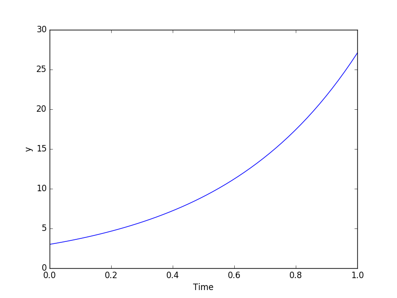
2.5 Advanced function creation
Python has some nice features in creating functions. You can create default values for variables, have optional variables and optional keyword variables.
In this function f(a,b), a and b are called positional arguments, and they are required, and must be provided in the same order as the function defines.
If we provide a default value for an argument, then the argument is called a keyword argument, and it becomes optional. You can combine positional arguments and keyword arguments, but positional arguments must come first. Here is an example.
def func(a, n=2): "compute the nth power of a" return a**n # three different ways to call the function print func(2) print func(2, 3) print func(2, n=4)
4 8 16
In the first call to the function, we only define the argument a, which is a mandatory, positional argument. In the second call, we define a and n, in the order they are defined in the function. Finally, in the third call, we define a as a positional argument, and n as a keyword argument.
If all of the arguments are optional, we can even call the function with no arguments. If you give arguments as positional arguments, they are used in the order defined in the function. If you use keyword arguments, the order is arbitrary.
def func(a=1, n=2): "compute the nth power of a" return a**n # three different ways to call the function print func() print func(2, 4) print func(n=4, a=2)
1 16 16
It is occasionally useful to allow an arbitrary number of arguments in a function. Suppose we want a function that can take an arbitrary number of positional arguments and return the sum of all the arguments. We use the syntax *args to indicate arbitrary positional arguments. Inside the function the variable args is a tuple containing all of the arguments passed to the function.
def func(*args): sum = 0 for arg in args: sum += arg return sum print func(1, 2, 3, 4)
10
A more "functional programming" version of the last function is given here. This is an advanced approach that is less readable to new users, but more compact and likely more efficient for large numbers of arguments.
import operator def func(*args): return reduce(operator.add, args) print func(1, 2, 3, 4)
10
It is possible to have arbitrary keyword arguments. This is a common pattern when you call another function within your function that takes keyword arguments. We use **kwargs to indicate that arbitrary keyword arguments can be given to the function. Inside the function, kwargs is variable containing a dictionary of the keywords and values passed in.
def func(**kwargs): for kw in kwargs: print '{0} = {1}'.format(kw, kwargs[kw]) func(t1=6, color='blue')
color = blue t1 = 6
A typical example might be:
import matplotlib.pyplot as plt def myplot(x, y, fname=None, **kwargs): "make plot of x,y. save to fname if not None. provide kwargs to plot" plt.plot(x, y, **kwargs) plt.xlabel('X') plt.ylabel('Y') plt.title('My plot') if fname: plt.savefig(fname) else: plt.show() x = [1, 3, 4, 5] y = [3, 6, 9, 12] myplot(x, y, 'images/myfig.png', color='orange', marker='s') # you can use a dictionary as kwargs d = {'color':'magenta', 'marker':'d'} myplot(x, y, 'images/myfig2.png', **d)
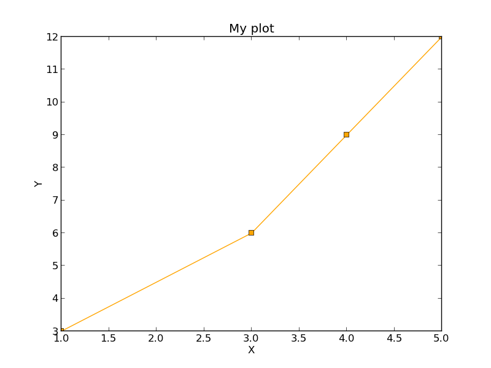
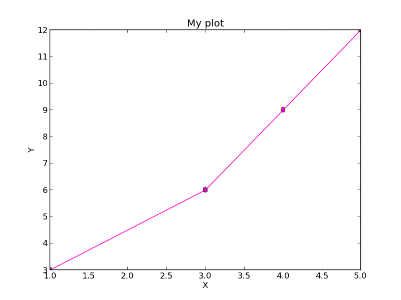
In that example we wrap the matplotlib plotting commands in a function, which we can call the way we want to, with arbitrary optional arguments. In this example, you cannot pass keyword arguments that are illegal to the plot command or you will get an error.
It is possible to combine all the options at once. I admit it is hard to imagine where this would be really useful, but it can be done!
import numpy as np def func(a, b=2, *args, **kwargs): "return a**b + sum(args) and print kwargs" for kw in kwargs: print 'kw: {0} = {1}'.format(kw, kwargs[kw]) return a**b + np.sum(args) print func(2, 3, 4, 5, mysillykw='hahah')
kw: mysillykw = hahah 17
2.6 Lambda Lambda Lambda
Is that some kind of fraternity? of anonymous functions? What is that!? There are many times where you need a callable, small function in python, and it is inconvenient to have to use def to create a named function. Lambda functions solve this problem. Let us look at some examples. First, we create a lambda function, and assign it to a variable. Then we show that variable is a function, and that we can call it with an argument.
f = lambda x: 2*x print f print f(2)
<function <lambda> at 0x0000000001E6AAC8> 4
We can have more than one argument:
f = lambda x,y: x + y print f print f(2, 3)
<function <lambda> at 0x0000000001E3AAC8> 5
And default arguments:
f = lambda x, y=3: x + y print f print f(2) print f(4, 1)
<function <lambda> at 0x0000000001E9AAC8> 5 5
It is also possible to have arbitrary numbers of positional arguments. Here is an example that provides the sum of an arbitrary number of arguments.
import operator f = lambda *x: reduce(operator.add, x) print f print f(1) print f(1, 2) print f(1, 2, 3)
<function <lambda> at 0x0000000001DFAAC8> 1 3 6
You can also make arbitrary keyword arguments. Here we make a function that simply returns the kwargs as a dictionary. This feature may be helpful in passing kwargs to other functions.
f = lambda **kwargs: kwargs print f(a=1, b=3)
{'a': 1, 'b': 3}
Of course, you can combine these options. Here is a function with all the options.
f = lambda a, b=4, *args, **kwargs: (a, b, args, kwargs) print f('required', 3, 'optional-positional', g=4)
('required', 3, ('optional-positional',), {'g': 4})
One of the primary limitations of lambda functions is they are limited to single expressions. They also do not have documentation strings, so it can be difficult to understand what they were written for later.
2.6.1 Applications of lambda functions
Lambda functions are used in places where you need a function, but may not want to define one using def. For example, say you want to solve the nonlinear equation \(\sqrt{x} = 2.5\).
from scipy.optimize import fsolve import numpy as np sol, = fsolve(lambda x: 2.5 - np.sqrt(x), 8) print sol
6.25
Another time to use lambda functions is if you want to set a particular value of a parameter in a function. Say we have a function with an independent variable, \(x\) and a parameter \(a\), i.e. \(f(x; a)\). If we want to find a solution \(f(x; a) = 0\) for some value of \(a\), we can use a lambda function to make a function of the single variable \(x\). Here is a example.
from scipy.optimize import fsolve import numpy as np def func(x, a): return a * np.sqrt(x) - 4.0 sol, = fsolve(lambda x: func(x, 3.2), 3) print sol
1.5625
Any function that takes a function as an argument can use lambda functions. Here we use a lambda function that adds two numbers in the reduce function to sum a list of numbers.
print reduce(lambda x, y: x + y, [0, 1, 2, 3, 4])
10
We can evaluate the integral \(\int_0^2 x^2 dx\) with a lambda function.
from scipy.integrate import quad print quad(lambda x: x**2, 0, 2)
(2.666666666666667, 2.960594732333751e-14)
2.6.2 Summary
Lambda functions can be helpful. They are never necessary. You can always define a function using def, but for some small, single-use functions, a lambda function could make sense. Lambda functions have some limitations, including that they are limited to a single expression, and they lack documentation strings.
2.7 Creating arrays in python
Often, we will have a set of 1-D arrays, and we would like to construct a 2D array with those vectors as either the rows or columns of the array. This may happen because we have data from different sources we want to combine, or because we organize the code with variables that are easy to read, and then want to combine the variables. Here are examples of doing that to get the vectors as the columns.
import numpy as np a = np.array([1, 2, 3]) b = np.array([4, 5, 6]) print np.column_stack([a, b]) # this means stack the arrays vertically, e.g. on top of each other print np.vstack([a, b]).T
[[1 4] [2 5] [3 6]] [[1 4] [2 5] [3 6]]
Or rows:
import numpy as np a = np.array([1, 2, 3]) b = np.array([4, 5, 6]) print np.row_stack([a, b]) # this means stack the arrays vertically, e.g. on top of each other print np.vstack([a, b])
[[1 2 3] [4 5 6]] [[1 2 3] [4 5 6]]
The opposite operation is to extract the rows or columns of a 2D array into smaller arrays. We might want to do that to extract a row or column from a calculation for further analysis, or plotting for example. There are splitting functions in numpy. They are somewhat confusing, so we examine some examples. The numpy.hsplit command splits an array "horizontally". The best way to think about it is that the "splits" move horizontally across the array. In other words, you draw a vertical split, move over horizontally, draw another vertical split, etc… You must specify the number of splits that you want, and the array must be evenly divisible by the number of splits.
import numpy as np A = np.array([[1, 2, 3, 5], [4, 5, 6, 9]]) # split into two parts p1, p2 = np.hsplit(A, 2) print p1 print p2 #split into 4 parts p1, p2, p3, p4 = np.hsplit(A, 4) print p1 print p2 print p3 print p4
[[1 2] [4 5]] [[3 5] [6 9]] [[1] [4]] [[2] [5]] [[3] [6]] [[5] [9]]
In the numpy.vsplit command the "splits" go "vertically" down the array. Note that the split commands return 2D arrays.
import numpy as np A = np.array([[1, 2, 3, 5], [4, 5, 6, 9]]) # split into two parts p1, p2 = np.vsplit(A, 2) print p1 print p2 print p2.shape
[[1 2 3 5]] [[4 5 6 9]] (1, 4)
An alternative approach is array unpacking. In this example, we unpack the array into two variables. The array unpacks by row.
import numpy as np A = np.array([[1, 2, 3, 5], [4, 5, 6, 9]]) # split into two parts p1, p2 = A print p1 print p2
[1 2 3 5] [4 5 6 9]
To get the columns, just transpose the array.
import numpy as np A = np.array([[1, 2, 3, 5], [4, 5, 6, 9]]) # split into two parts p1, p2, p3, p4 = A.T print p1 print p2 print p3 print p4 print p4.shape
[1 4] [2 5] [3 6] [5 9] (2,)
Note that now, we have 1D arrays.
You can also access rows and columns by indexing. We index an array by [row, column]. To get a row, we specify the row number, and all the columns in that row like this [row, :]. Similarly, to get a column, we specify that we want all rows in that column like this: [:, column]. This approach is useful when you only want a few columns or rows.
import numpy as np A = np.array([[1, 2, 3, 5], [4, 5, 6, 9]]) # get row 1 print A[1] print A[1, :] # row 1, all columns print A[:, 2] # get third column print A[:, 2].shape
[4 5 6 9] [4 5 6 9] [3 6] (2,)
Note that even when we specify a column, it is returned as a 1D array.
2.8 Functions on arrays of values
It is common to evaluate a function for a range of values. Let us consider the value of the function \(f(x) = \cos(x)\) over the range of \(0 < x < \pi\). We cannot consider every value in that range, but we can consider say 10 points in the range. The func:numpy.linspace conveniently creates an array of values.
import numpy as np print np.linspace(0, np.pi, 10)
[ 0. 0.34906585 0.6981317 1.04719755 1.3962634 1.74532925 2.0943951 2.44346095 2.7925268 3.14159265]
The main point of using the mod:numpy functions is that they work element-wise on elements of an array. In this example, we compute the \(\cos(x)\) for each element of \(x\).
import numpy as np x = np.linspace(0, np.pi, 10) print np.cos(x)
[ 1. 0.93969262 0.76604444 0.5 0.17364818 -0.17364818 -0.5 -0.76604444 -0.93969262 -1. ]
You can already see from this output that there is a root to the equation \(\cos(x) = 0\), because there is a change in sign in the output. This is not a very convenient way to view the results; a graph would be better. We use mod:matplotlib to make figures. Here is an example.
import matplotlib.pyplot as plt import numpy as np x = np.linspace(0, np.pi, 10) plt.plot(x, np.cos(x)) plt.xlabel('x') plt.ylabel('cos(x)') plt.savefig('images/plot-cos.png')
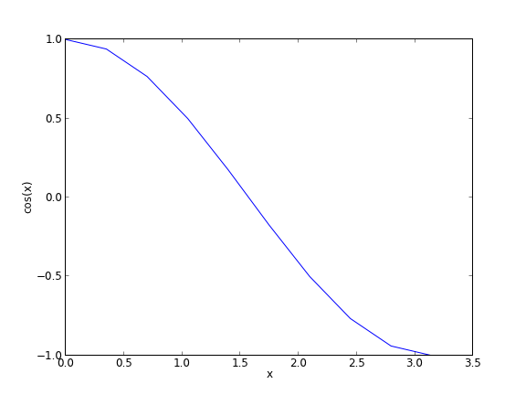
This figure illustrates graphically what the numbers above show. The function crosses zero at approximately \(x = 1.5\). To get a more precise value, we must actually solve the function numerically. We use the function func:scipy.optimize.fsolve to do that. More precisely, we want to solve the equation \(f(x) = \cos(x) = 0\). We create a function that defines that equation, and then use func:scipy.optimize.fsolve to solve it.
from scipy.optimize import fsolve import numpy as np def f(x): return np.cos(x) sol, = fsolve(f, x0=1.5) # the comma after sol makes it return a float print sol print np.pi / 2
1.57079632679 1.57079632679
We know the solution is π/2.
2.9 Some basic data structures in python
We often have a need to organize data into structures when solving problems.
2.9.1 the list
A list in python is data separated by commas in square brackets. Here, we might store the following data in a variable to describe the Antoine coefficients for benzene and the range they are relevant for [Tmin Tmax]. Lists are flexible, you can put anything in them, including other lists. We access the elements of the list by indexing:
c = ['benzene', 6.9056, 1211.0, 220.79, [-16, 104]] print c[0] print c[-1] a,b = c[0:2] print a,b name, A, B, C, Trange = c print Trange
benzene [-16, 104] benzene 6.9056 [-16, 104]
Lists are "mutable", which means you can change their values.
a = [3, 4, 5, [7, 8], 'cat'] print a[0], a[-1] a[-1] = 'dog' print a
3 cat >>> [3, 4, 5, [7, 8], 'dog']
2.9.2 tuples
Tuples are immutable; you cannot change their values. This is handy in cases where it is an error to change the value. A tuple is like a list but it is enclosed in parentheses.
a = (3, 4, 5, [7, 8], 'cat') print a[0], a[-1] a[-1] = 'dog'
3 cat Traceback (most recent call last): File "<stdin>", line 1, in <module> TypeError: 'tuple' object does not support item assignment
2.9.3 struct
Python does not exactly have the same thing as a struct in Matlab. You can achieve something like it by defining an empty class and then defining attributes of the class. You can check if an object has a particular attribute using hasattr.
class Antoine: pass a = Antoine() a.name = 'benzene' a.Trange = [-16, 104] print a.name print hasattr(a, 'Trange') print hasattr(a, 'A')
benzene True False
2.9.4 dictionaries
The analog of the containers.Map in Matlab is the dictionary in python. Dictionaries are enclosed in curly brackets, and are composed of key:value pairs.
s = {'name':'benzene', 'A':6.9056, 'B':1211.0} s['C'] = 220.79 s['Trange'] = [-16, 104] print s print s['Trange']
{'A': 6.9056, 'C': 220.79, 'B': 1211.0, 'name': 'benzene', 'Trange': [-16, 104]}
[-16, 104]
s = {'name':'benzene', 'A':6.9056, 'B':1211.0} print 'C' in s # default value for keys not in the dictionary print s.get('C', None) print s.keys() print s.values()
False None ['A', 'B', 'name'] [6.9056, 1211.0, 'benzene']
2.9.5 Summary
We have examined four data structures in python. Note that none of these types are arrays/vectors with defined mathematical operations. For those, you need to consider numpy.array.
2.10 Indexing vectors and arrays in Python
Matlab post There are times where you have a lot of data in a vector or array and you want to extract a portion of the data for some analysis. For example, maybe you want to plot column 1 vs column 2, or you want the integral of data between x = 4 and x = 6, but your vector covers 0 < x < 10. Indexing is the way to do these things.
A key point to remember is that in python array/vector indices start at 0. Unlike Matlab, which uses parentheses to index a array, we use brackets in python.
import numpy as np x = np.linspace(-np.pi, np.pi, 10) print x print x[0] # first element print x[2] # third element print x[-1] # last element print x[-2] # second to last element
>>> >>> [-3.14159265 -2.44346095 -1.74532925 -1.04719755 -0.34906585 0.34906585 1.04719755 1.74532925 2.44346095 3.14159265] >>> -3.14159265359 -1.74532925199 3.14159265359 2.44346095279
We can select a range of elements too. The syntax a:b extracts the a^{th} to (b-1)^{th} elements. The syntax a:b:n starts at a, skips nelements up to the index b.
print x[1:4] # second to fourth element. Element 5 is not included print x[0:-1:2] # every other element print x[:] # print the whole vector print x[-1:0:-1] # reverse the vector!
[-2.44346095 -1.74532925 -1.04719755] [-3.14159265 -1.74532925 -0.34906585 1.04719755 2.44346095] [-3.14159265 -2.44346095 -1.74532925 -1.04719755 -0.34906585 0.34906585 1.04719755 1.74532925 2.44346095 3.14159265] [ 3.14159265 2.44346095 1.74532925 1.04719755 0.34906585 -0.34906585 -1.04719755 -1.74532925 -2.44346095]
Suppose we want the part of the vector where x > 2. We could do that by inspection, but there is a better way. We can create a mask of boolean (0 or 1) values that specify whether x > 2 or not, and then use the mask as an index.
print x[x > 2]
[ 2.44346095 3.14159265]
You can use this to analyze subsections of data, for example to integrate the function y = sin(x) where x > 2.
y = np.sin(x) print np.trapz( x[x > 2], y[x > 2])
>>> -1.79500162881
2.10.1 2d arrays
In 2d arrays, we use row, column notation. We use a : to indicate all rows or all columns.
a = np.array([[1, 2, 3], [4, 5, 6], [7, 8, 9]]) print a[0, 0] print a[-1, -1] print a[0, :] # row one print a[:, 0] # column one print a[:]
... >>> >>> 1 9 >>> [1 2 3] [1 4 7] [[1 2 3] [4 5 6] [7 8 9]]
2.10.2 Using indexing to assign values to rows and columns
b = np.zeros((3, 3)) print b b[:, 0] = [1, 2, 3] # set column 0 b[2, 2] = 12 # set a single element print b b[2] = 6 # sets everything in row 2 to 6! print b
[[ 0. 0. 0.] [ 0. 0. 0.] [ 0. 0. 0.]] >>> >>> >>> [[ 1. 0. 0.] [ 2. 0. 0.] [ 3. 0. 12.]] >>> >>> [[ 1. 0. 0.] [ 2. 0. 0.] [ 6. 6. 6.]]
Python does not have the linear assignment method like Matlab does. You can achieve something like that as follows. We flatten the array to 1D, do the linear assignment, and reshape the result back to the 2D array.
c = b.flatten() c[2] = 34 b[:] = c.reshape(b.shape) print b
>>> >>> [[ 1. 0. 34.] [ 2. 0. 0.] [ 6. 6. 6.]]
2.10.3 3D arrays
The 3d array is like book of 2D matrices. Each page has a 2D matrix on it. think about the indexing like this: (row, column, page)
M = np.random.uniform(size=(3,3,3)) # a 3x3x3 array print M
[[[ 0.78557795 0.36454381 0.96090072] [ 0.76133373 0.03250485 0.08517174] [ 0.96007909 0.08654002 0.29693648]] [[ 0.58270738 0.60656083 0.47703339] [ 0.62551477 0.62244626 0.11030327] [ 0.2048839 0.83081982 0.83660668]] [[ 0.12489176 0.20783996 0.38481792] [ 0.05234762 0.03989146 0.09731516] [ 0.67427208 0.51793637 0.89016255]]]
print M[:, :, 0] # 2d array on page 0 print M[:, 0, 0] # column 0 on page 0 print M[1, :, 2] # row 1 on page 2
[[ 0.78557795 0.76133373 0.96007909] [ 0.58270738 0.62551477 0.2048839 ] [ 0.12489176 0.05234762 0.67427208]] [ 0.78557795 0.58270738 0.12489176] [ 0.47703339 0.11030327 0.83660668]
2.10.4 Summary
The most common place to use indexing is probably when a function returns an array with the independent variable in column 1 and solution in column 2, and you want to plot the solution. Second is when you want to analyze one part of the solution. There are also applications in numerical methods, for example in assigning values to the elements of a matrix or vector.
2.11 Controlling the format of printed variables
This was first worked out in this original Matlab post.
Often you will want to control the way a variable is printed. You may want to only show a few decimal places, or print in scientific notation, or embed the result in a string. Here are some examples of printing with no control over the format.
a = 2./3 print a print 1/3 print 1./3. print 10.1 print "Avogadro's number is ", 6.022e23,'.'
0.666666666667 0 0.333333333333 10.1 Avogadro's number is 6.022e+23 .
There is no control over the number of decimals, or spaces around a printed number.
In python, we use the format function to control how variables are printed. With the format function you use codes like {n:format specifier} to indicate that a formatted string should be used. n is the n^{th} argument passed to format, and there are a variety of format specifiers. Here we examine how to format float numbers. The specifier has the general form "w.df" where w is the width of the field, and d is the number of decimals, and f indicates a float number. "1.3f" means to print a float number with 3 decimal places. Here is an example.
print 'The value of 1/3 to 3 decimal places is {0:1.3f}'.format(1./3.)
The value of 1/3 to 3 decimal places is 0.333
In that example, the 0 in {0:1.3f} refers to the first (and only) argument to the format function. If there is more than one argument, we can refer to them like this:
print 'Value 0 = {0:1.3f}, value 1 = {1:1.3f}, value 0 = {0:1.3f}'.format(1./3., 1./6.)
Value 0 = 0.333, value 1 = 0.167, value 0 = 0.333
Note you can refer to the same argument more than once, and in arbitrary order within the string.
Suppose you have a list of numbers you want to print out, like this:
for x in [1./3., 1./6., 1./9.]: print 'The answer is {0:1.2f}'.format(x)
The answer is 0.33 The answer is 0.17 The answer is 0.11
The "g" format specifier is a general format that can be used to indicate a precision, or to indicate significant digits. To print a number with a specific number of significant digits we do this:
print '{0:1.3g}'.format(1./3.) print '{0:1.3g}'.format(4./3.)
0.333 1.33
We can also specify plus or minus signs. Compare the next two outputs.
for x in [-1., 1.]: print '{0:1.2f}'.format(x)
-1.00 1.00
You can see the decimals do not align. That is because there is a minus sign in front of one number. We can specify to show the sign for positive and negative numbers, or to pad positive numbers to leave space for positive numbers.
for x in [-1., 1.]: print '{0:+1.2f}'.format(x) # explicit sign for x in [-1., 1.]: print '{0: 1.2f}'.format(x) # pad positive numbers
-1.00 +1.00 -1.00 1.00
We use the "e" or "E" format modifier to specify scientific notation.
import numpy as np eps = np.finfo(np.double).eps print eps print '{0}'.format(eps) print '{0:1.2f}'.format(eps) print '{0:1.2e}'.format(eps) #exponential notation print '{0:1.2E}'.format(eps) #exponential notation with capital E
2.22044604925e-16 2.22044604925e-16 0.00 2.22e-16 2.2E-16
As a float with 2 decimal places, that very small number is practically equal to 0.
We can even format percentages. Note you do not need to put the % in your string.
print 'the fraction {0} corresponds to {0:1.0%}'.format(0.78)
the fraction 0.78 corresponds to 78%
There are many other options for formatting strings. See http://docs.python.org/2/library/string.html#formatstrings for a full specification of the options.
2.12 Advanced string formatting
There are several more advanced ways to include formatted values in a string. In the previous case we examined replacing format specifiers by positional arguments in the format command. We can instead use keyword arguments.
s = 'The {speed} {color} fox'.format(color='brown', speed='quick') print s
The quick brown fox
If you have a lot of variables already defined in a script, it is convenient to use them in string formatting with the locals command:
speed = 'slow' color= 'blue' print 'The {speed} {color} fox'.format(**locals())
The slow blue fox
If you want to access attributes on an object, you can specify them directly in the format identifier.
class A: def __init__(self, a, b, c): self.a = a self.b = b self.c = c mya = A(3,4,5) print 'a = {obj.a}, b = {obj.b}, c = {obj.c:1.2f}'.format(obj=mya)
a = 3, b = 4, c = 5.00
You can access values of a dictionary:
d = {'a': 56, "test":'woohoo!'} print "the value of a in the dictionary is {obj[a]}. It works {obj[test]}".format(obj=d)
the value of a in the dictionary is 56. It works woohoo!.
And, you can access elements of a list. Note, however you cannot use -1 as an index in this case.
L = [4, 5, 'cat'] print 'element 0 = {obj[0]}, and the last element is {obj[2]}'.format(obj=L)
element 0 = 4, and the last element is cat
There are three different ways to "print" an object. If an object has a format function, that is the default used in the format command. It may be helpful to use the str or repr of an object instead. We get this with !s for str and !r for repr.
class A: def __init__(self, a, b): self.a = a; self.b = b def __format__(self, format): s = 'a={{0:{0}}} b={{1:{0}}}'.format(format) return s.format(self.a, self.b) def __str__(self): return 'str: class A, a={0} b={1}'.format(self.a, self.b) def __repr__(self): return 'representing: class A, a={0}, b={1}'.format(self.a, self.b) mya = A(3, 4) print '{0}'.format(mya) # uses __format__ print '{0!s}'.format(mya) # uses __str__ print '{0!r}'.format(mya) # uses __repr__
a=3 b=4 str: class A, a=3 b=4 representing: class A, a=3, b=4
This covers the majority of string formatting requirements I have come across. If there are more sophisticated needs, they can be met with various string templating python modules. the one I have used most is Cheetah.
3 Math
3.1 Numeric derivatives by differences
numpy has a function called numpy.diff() that is similar to the one found in matlab. It calculates the differences between the elements in your list, and returns a list that is one element shorter, which makes it unsuitable for plotting the derivative of a function.
Loops in python are pretty slow (relatively speaking) but they are usually trivial to understand. In this script we show some simple ways to construct derivative vectors using loops. It is implied in these formulas that the data points are equally spaced. If they are not evenly spaced, you need a different approach.
import numpy as np from pylab import * import time ''' These are the brainless way to calculate numerical derivatives. They work well for very smooth data. they are surprisingly fast even up to 10000 points in the vector. ''' x = np.linspace(0.78,0.79,100) y = np.sin(x) dy_analytical = np.cos(x) ''' lets use a forward difference method: that works up until the last point, where there is not a forward difference to use. there, we use a backward difference. ''' tf1 = time.time() dyf = [0.0]*len(x) for i in range(len(y)-1): dyf[i] = (y[i+1] - y[i])/(x[i+1]-x[i]) #set last element by backwards difference dyf[-1] = (y[-1] - y[-2])/(x[-1] - x[-2]) print ' Forward difference took %1.1f seconds' % (time.time() - tf1) '''and now a backwards difference''' tb1 = time.time() dyb = [0.0]*len(x) #set first element by forward difference dyb[0] = (y[0] - y[1])/(x[0] - x[1]) for i in range(1,len(y)): dyb[i] = (y[i] - y[i-1])/(x[i]-x[i-1]) print ' Backward difference took %1.1f seconds' % (time.time() - tb1) '''and now, a centered formula''' tc1 = time.time() dyc = [0.0]*len(x) dyc[0] = (y[0] - y[1])/(x[0] - x[1]) for i in range(1,len(y)-1): dyc[i] = (y[i+1] - y[i-1])/(x[i+1]-x[i-1]) dyc[-1] = (y[-1] - y[-2])/(x[-1] - x[-2]) print ' Centered difference took %1.1f seconds' % (time.time() - tc1) ''' the centered formula is the most accurate formula here ''' plt.plot(x,dy_analytical,label='analytical derivative') plt.plot(x,dyf,'--',label='forward') plt.plot(x,dyb,'--',label='backward') plt.plot(x,dyc,'--',label='centered') plt.legend(loc='lower left') plt.savefig('images/simple-diffs.png') plt.show()
Forward difference took 0.0 seconds Backward difference took 0.0 seconds Centered difference took 0.0 seconds
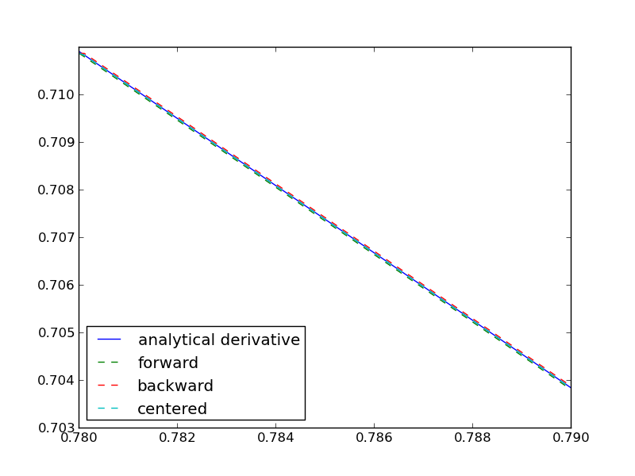
3.2 Vectorized numeric derivatives
Loops are usually not great for performance. Numpy offers some vectorized methods that allow us to compute derivatives without loops, although this comes at the mental cost of harder to understand syntax
import numpy as np import matplotlib.pyplot as plt x = np.linspace(0, 2 * np.pi, 100) y = np.sin(x) dy_analytical = np.cos(x) # we need to specify the size of dy ahead because diff returns #an array of n-1 elements dy = np.zeros(y.shape, np.float) #we know it will be this size dy[0:-1] = np.diff(y) / np.diff(x) dy[-1] = (y[-1] - y[-2]) / (x[-1] - x[-2]) ''' calculate dy by center differencing using array slices ''' dy2 = np.zeros(y.shape,np.float) #we know it will be this size dy2[1:-1] = (y[2:] - y[0:-2]) / (x[2:] - x[0:-2]) # now the end points dy2[0] = (y[1] - y[0]) / (x[1] - x[0]) dy2[-1] = (y[-1] - y[-2]) / (x[-1] - x[-2]) plt.plot(x,y) plt.plot(x,dy_analytical,label='analytical derivative') plt.plot(x,dy,label='forward diff') plt.plot(x,dy2,'k--',lw=2,label='centered diff') plt.legend(loc='lower left') plt.savefig('images/vectorized-diffs.png') plt.show()
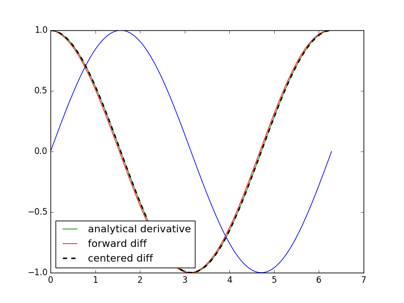
3.3 2-point vs. 4-point numerical derivatives
If your data is very noisy, you will have a hard time getting good derivatives; derivatives tend to magnify noise. In these cases, you have to employ smoothing techniques, either implicitly by using a multipoint derivative formula, or explicitly by smoothing the data yourself, or taking the derivative of a function that has been fit to the data in the neighborhood you are interested in.
Here is an example of a 4-point centered difference of some noisy data:
import numpy as np import matplotlib.pyplot as plt x = np.linspace(0, 2*np.pi, 100) y = np.sin(x) + 0.1 * np.random.random(size=x.shape) dy_analytical = np.cos(x) #2-point formula dyf = [0.0] * len(x) for i in range(len(y)-1): dyf[i] = (y[i+1] - y[i])/(x[i+1]-x[i]) #set last element by backwards difference dyf[-1] = (y[-1] - y[-2])/(x[-1] - x[-2]) ''' calculate dy by 4-point center differencing using array slices \frac{y[i-2] - 8y[i-1] + 8[i+1] - y[i+2]}{12h} y[0] and y[1] must be defined by lower order methods and y[-1] and y[-2] must be defined by lower order methods ''' dy = np.zeros(y.shape, np.float) #we know it will be this size h = x[1] - x[0] #this assumes the points are evenely spaced! dy[2:-2] = (y[0:-4] - 8 * y[1:-3] + 8 * y[3:-1] - y[4:]) / (12.0 * h) # simple differences at the end-points dy[0] = (y[1] - y[0])/(x[1] - x[0]) dy[1] = (y[2] - y[1])/(x[2] - x[1]) dy[-2] = (y[-2] - y[-3]) / (x[-2] - x[-3]) dy[-1] = (y[-1] - y[-2]) / (x[-1] - x[-2]) plt.plot(x, y) plt.plot(x, dy_analytical, label='analytical derivative') plt.plot(x, dyf, 'r-', label='2pt-forward diff') plt.plot(x, dy, 'k--', lw=2, label='4pt-centered diff') plt.legend(loc='lower left') plt.savefig('images/multipt-diff.png') plt.show()
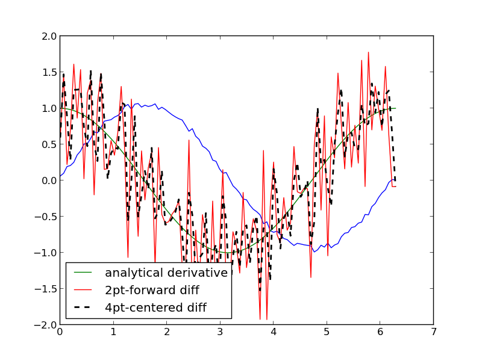
3.4 Derivatives by polynomial fitting
One way to reduce the noise inherent in derivatives of noisy data is to fit a smooth function through the data, and analytically take the derivative of the curve. Polynomials are especially convenient for this. The challenge is to figure out what an appropriate polynomial order is. This requires judgment and experience.
import numpy as np import matplotlib.pyplot as plt from pycse import deriv tspan = [0, 0.1, 0.2, 0.4, 0.8, 1] Ca_data = [2.0081, 1.5512, 1.1903, 0.7160, 0.2562, 0.1495] p = np.polyfit(tspan, Ca_data, 3) plt.figure() plt.plot(tspan, Ca_data) plt.plot(tspan, np.polyval(p, tspan), 'g-') plt.savefig('images/deriv-fit-1.png') # compute derivatives dp = np.polyder(p) dCdt_fit = np.polyval(dp, tspan) dCdt_numeric = deriv(tspan, Ca_data) # 2-point deriv plt.figure() plt.plot(tspan, dCdt_numeric, label='numeric derivative') plt.plot(tspan, dCdt_fit, label='fitted derivative') t = np.linspace(min(tspan), max(tspan)) plt.plot(t, np.polyval(dp, t), label='resampled derivative') plt.legend(loc='best') plt.savefig('images/deriv-fit-2.png')
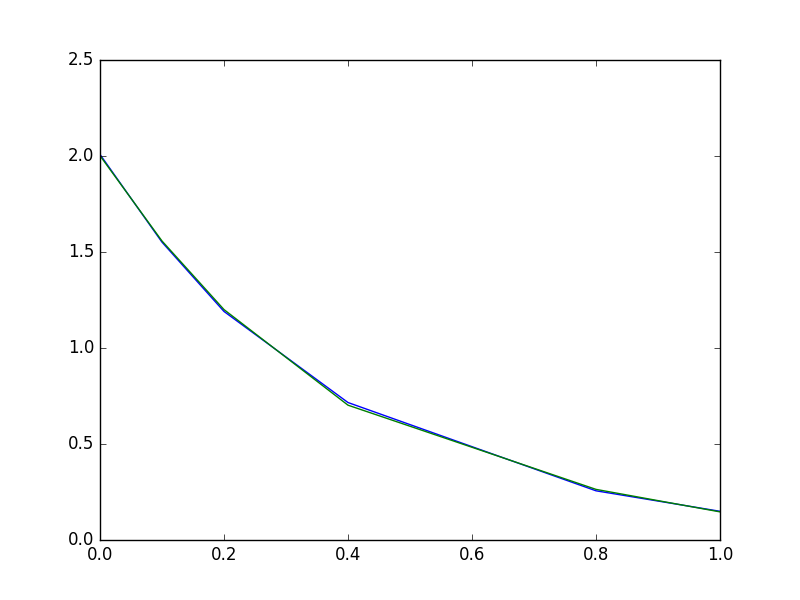
You can see a third order polynomial is a reasonable fit here. There are only 6 data points here, so any higher order risks overfitting. Here is the comparison of the numerical derivative and the fitted derivative. We have "resampled" the fitted derivative to show the actual shape. Note the derivative appears to go through a maximum near t = 0.9. In this case, that is probably unphysical as the data is related to the consumption of species A in a reaction. The derivative should increase monotonically to zero. The increase is an artefact of the fitting process. End points are especially sensitive to this kind of error.
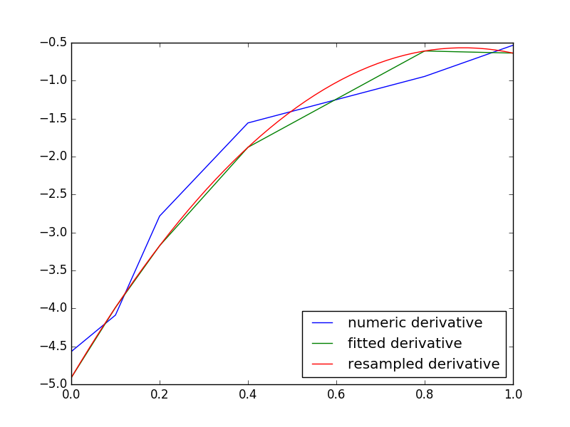
3.5 Derivatives by fitting a function and taking the analytical derivative
A variation of a polynomial fit is to fit a model with reasonable physics. Here we fit a nonlinear function to the noisy data. The model is for the concentration vs. time in a batch reactor for a first order irreversible reaction. Once we fit the data, we take the analytical derivative of the fitted function.
import numpy as np import matplotlib.pyplot as plt from scipy.optimize import curve_fit from pycse import deriv tspan = np.array([0, 0.1, 0.2, 0.4, 0.8, 1]) Ca_data = np.array([2.0081, 1.5512, 1.1903, 0.7160, 0.2562, 0.1495]) def func(t, Ca0, k): return Ca0 * np.exp(-k * t) pars, pcov = curve_fit(func, tspan, Ca_data, p0=[2, 2.3]) plt.plot(tspan, Ca_data) plt.plot(tspan, func(tspan, *pars), 'g-') plt.savefig('images/deriv-funcfit-1.png') # analytical derivative k, Ca0 = pars dCdt = -k * Ca0 * np.exp(-k * tspan) t = np.linspace(0, 2) dCdt_res = -k * Ca0 * np.exp(-k * t) plt.figure() plt.plot(tspan, deriv(tspan, Ca_data), label='numerical derivative') plt.plot(tspan, dCdt, label='analytical derivative of fit') plt.plot(t, dCdt_res, label='extrapolated') plt.legend(loc='best') plt.savefig('images/deriv-funcfit-2.png')
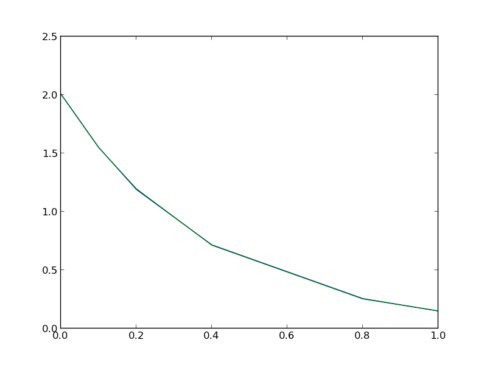
Visually this fit is about the same as a third order polynomial. Note the difference in the derivative though. We can readily extrapolate this derivative and get reasonable predictions of the derivative. That is true in this case because we fitted a physically relevant model for concentration vs. time for an irreversible, first order reaction.
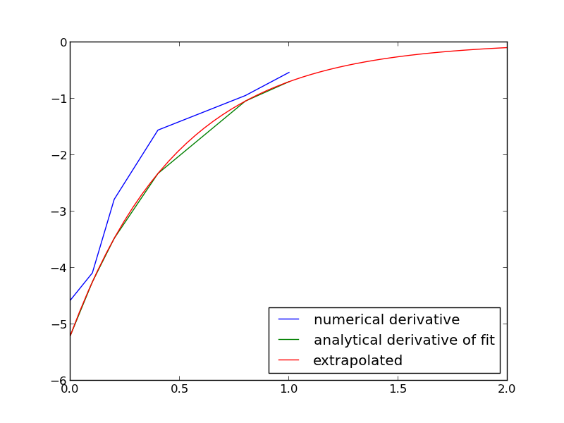
3.6 Derivatives by FFT
import numpy as np import matplotlib.pyplot as plt N = 101 #number of points L = 2 * np.pi #interval of data x = np.arange(0.0, L, L/float(N)) #this does not include the endpoint #add some random noise y = np.sin(x) + 0.05 * np.random.random(size=x.shape) dy_analytical = np.cos(x) ''' http://sci.tech-archive.net/Archive/sci.math/2008-05/msg00401.html you can use fft to calculate derivatives! ''' if N % 2 == 0: k = np.asarray(range(0, N / 2) + [0] + range(-N / 2 + 1,0)) else: k = np.asarray(range(0,(N - 1) / 2) + [0] + range(-(N - 1) / 2, 0)) k *= 2 * np.pi / L fd = np.real(np.fft.ifft(1.0j * k * np.fft.fft(y))) plt.plot(x, y, label='function') plt.plot(x,dy_analytical,label='analytical der') plt.plot(x,fd,label='fft der') plt.legend(loc='lower left') plt.savefig('images/fft-der.png') plt.show()
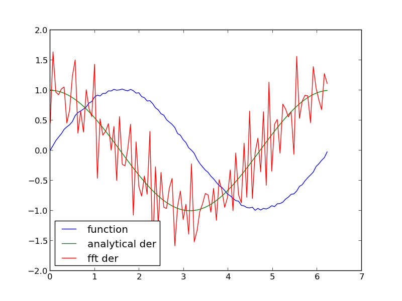
3.7 A novel way to numerically estimate the derivative of a function - complex-step derivative approximation
Adapted from http://biomedicalcomputationreview.org/2/3/8.pdf and http://dl.acm.org/citation.cfm?id=838250.838251
This posts introduces a novel way to numerically estimate the derivative of a function that does not involve finite difference schemes. Finite difference schemes are approximations to derivatives that become more and more accurate as the step size goes to zero, except that as the step size approaches the limits of machine accuracy, new errors can appear in the approximated results. In the references above, a new way to compute the derivative is presented that does not rely on differences!
The new way is: \(f'(x) = \rm{imag}(f(x + i\Delta x)/\Delta x)\) where the function \(f\) is evaluated in imaginary space with a small \(\Delta x\) in the complex plane. The derivative is miraculously equal to the imaginary part of the result in the limit of \(\Delta x \rightarrow 0\)!
This example comes from the first link. The derivative must be evaluated using the chain rule. We compare a forward difference, central difference and complex-step derivative approximations.
import numpy as np import matplotlib.pyplot as plt def f(x): return np.sin(3*x)*np.log(x) x = 0.7 h = 1e-7 # analytical derivative dfdx_a = 3 * np.cos( 3*x)*np.log(x) + np.sin(3*x) / x # finite difference dfdx_fd = (f(x + h) - f(x))/h # central difference dfdx_cd = (f(x+h)-f(x-h))/(2*h) # complex method dfdx_I = np.imag(f(x + np.complex(0, h))/h) print dfdx_a print dfdx_fd print dfdx_cd print dfdx_I
1.77335410624 1.7733539398 1.77335410523 1.77335410624
These are all the same to 4 decimal places. The simple finite difference is the least accurate, and the central differences is practically the same as the complex number approach.
Let us use this method to verify the fundamental Theorem of Calculus, i.e. to evaluate the derivative of an integral function. Let \(f(x) = \int\limits_1^{x^2} tan(t^3)dt\), and we now want to compute df/dx. Of course, this can be done analytically, but it is not trivial!
import numpy as np from scipy.integrate import quad def f_(z): def integrand(t): return np.tan(t**3) return quad(integrand, 0, z**2) f = np.vectorize(f_) x = np.linspace(0, 1) h = 1e-7 dfdx = np.imag(f(x + complex(0, h)))/h dfdx_analytical = 2 * x * np.tan(x**6) import matplotlib.pyplot as plt plt.plot(x, dfdx, x, dfdx_analytical, 'r--') plt.show()
>>> >>> ... ... ... ... >>> >>> >>> >>> >>> >>> >>> c:\Python27\lib\site-packages\scipy\integrate\quadpack.py:312: ComplexWarning: Casting complex values to real discards the imaginary part
return _quadpack._qagse(func,a,b,args,full_output,epsabs,epsrel,limit)
Traceback (most recent call last):
File "<stdin>", line 1, in <module>
File "c:\Python27\lib\site-packages\numpy\lib\function_base.py", line 1885, in __call__
for x, c in zip(self.ufunc(*newargs), self.otypes)])
File "<stdin>", line 4, in f_
File "c:\Python27\lib\site-packages\scipy\integrate\quadpack.py", line 247, in quad
retval = _quad(func,a,b,args,full_output,epsabs,epsrel,limit,points)
File "c:\Python27\lib\site-packages\scipy\integrate\quadpack.py", line 312, in _quad
return _quadpack._qagse(func,a,b,args,full_output,epsabs,epsrel,limit)
TypeError: can't convert complex to float
>>> >>> >>> >>> Traceback (most recent call last):
File "<stdin>", line 1, in <module>
NameError: name 'dfdx' is not defined
Interesting this fails.
3.8 Vectorized piecewise functions
Matlab post Occasionally we need to define piecewise functions, e.g.
\begin{eqnarray} f(x) &=& 0, x < 0 \\ &=& x, 0 <= x < 1\\ &=& 2 - x, 1 < x <= 2\\ &=& 0, x > 2 \end{eqnarray}Today we examine a few ways to define a function like this. A simple way is to use conditional statements.
def f1(x): if x < 0: return 0 elif (x >= 0) & (x < 1): return x elif (x >= 1) & (x < 2): return 2.0 - x else: return 0 print f1(-1) print f1([0, 1, 2, 3]) # does not work!
... ... ... ... ... ... ... ... >>> 0 0
This works, but the function is not vectorized, i.e. f([-1 0 2 3]) does not evaluate properly (it should give a list or array). You can get vectorized behavior by using list comprehension, or by writing your own loop. This does not fix all limitations, for example you cannot use the f1 function in the quad function to integrate it.
import numpy as np import matplotlib.pyplot as plt x = np.linspace(-1, 3) y = [f1(xx) for xx in x] plt.plot(x, y) plt.savefig('images/vector-piecewise.png')
>>> >>> >>> >>> >>> [<matplotlib.lines.Line2D object at 0x048D6790>]
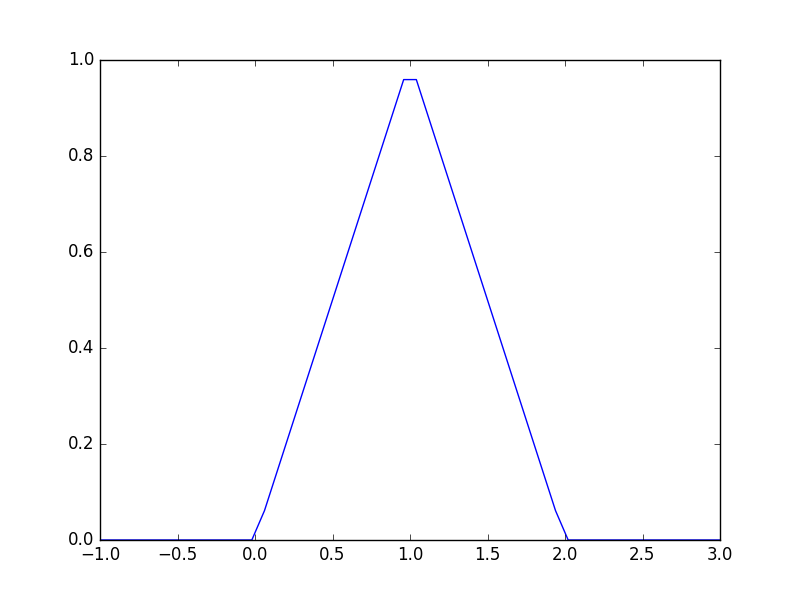
Neither of those methods is convenient. It would be nicer if the function was vectorized, which would allow the direct notation f1([0, 1, 2, 3, 4]). A simple way to achieve this is through the use of logical arrays. We create logical arrays from comparison statements.
def f2(x): 'fully vectorized version' x = np.asarray(x) y = np.zeros(x.shape) y += ((x >= 0) & (x < 1)) * x y += ((x >= 1) & (x < 2)) * (2 - x) return y print f2([-1, 0, 1, 2, 3, 4]) x = np.linspace(-1,3); plt.plot(x,f2(x)) plt.savefig('images/vector-piecewise-2.png')
... ... ... ... ... ... >>> [ 0. 0. 1. 0. 0. 0.] >>> [<matplotlib.lines.Line2D object at 0x043A4910>]
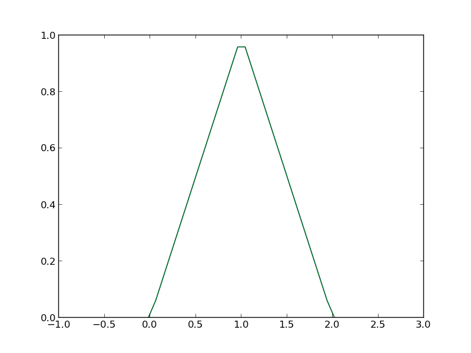
A third approach is to use Heaviside functions. The Heaviside function is defined to be zero for x less than some value, and 0.5 for x=0, and 1 for x >= 0. If you can live with y=0.5 for x=0, you can define a vectorized function in terms of Heaviside functions like this.
def heaviside(x): x = np.array(x) if x.shape != (): y = np.zeros(x.shape) y[x > 0.0] = 1 y[x == 0.0] = 0.5 else: # special case for 0d array (a number) if x > 0: y = 1 elif x == 0: y = 0.5 else: y = 0 return y def f3(x): x = np.array(x) y1 = (heaviside(x) - heaviside(x - 1)) * x # first interval y2 = (heaviside(x - 1) - heaviside(x - 2)) * (2 - x) # second interval return y1 + y2 from scipy.integrate import quad print quad(f3, -1, 3)
... ... ... ... ... ... ... ... ... ... >>> ... ... ... ... ... >>> >>> (1.0, 1.1102230246251565e-14)
plt.plot(x, f3(x))
plt.savefig('images/vector-piecewise-3.png')
[<matplotlib.lines.Line2D object at 0x048F96F0>]
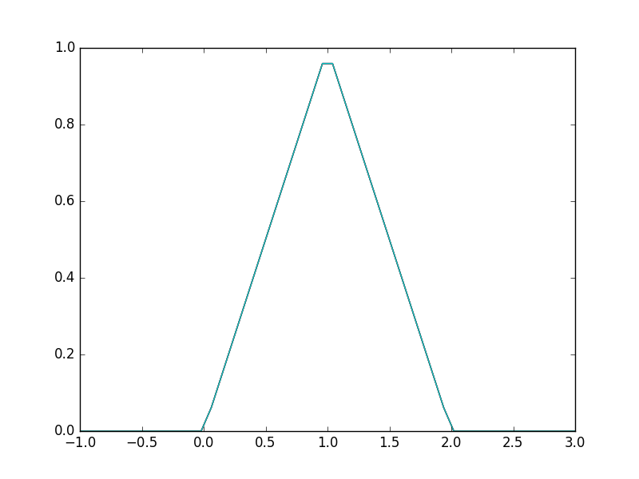
There are many ways to define piecewise functions, and vectorization is not always necessary. The advantages of vectorization are usually notational simplicity and speed; loops in python are usually very slow compared to vectorized functions.
3.9 Smooth transitions between discontinuous functions
In Post 1280 we used a correlation for the Fanning friction factor for turbulent flow in a pipe. For laminar flow (Re < 3000), there is another correlation that is commonly used: \(f_F = 16/Re\). Unfortunately, the correlations for laminar flow and turbulent flow have different values at the transition that should occur at Re = 3000. This discontinuity can cause a lot of problems for numerical solvers that rely on derivatives.
Today we examine a strategy for smoothly joining these two functions. First we define the two functions.
import numpy as np from scipy.optimize import fsolve import matplotlib.pyplot as plt def fF_laminar(Re): return 16.0 / Re def fF_turbulent_unvectorized(Re): # Nikuradse correlation for turbulent flow # 1/np.sqrt(f) = (4.0*np.log10(Re*np.sqrt(f))-0.4) # we have to solve this equation to get f def func(f): return 1/np.sqrt(f) - (4.0*np.log10(Re*np.sqrt(f))-0.4) fguess = 0.01 f, = fsolve(func, fguess) return f # this enables us to pass vectors to the function and get vectors as # solutions fF_turbulent = np.vectorize(fF_turbulent_unvectorized)
Now we plot the correlations.
Re1 = np.linspace(500, 3000) f1 = fF_laminar(Re1) Re2 = np.linspace(3000, 10000) f2 = fF_turbulent(Re2) plt.figure(1); plt.clf() plt.plot(Re1, f1, label='laminar') plt.plot(Re2, f2, label='turbulent') plt.xlabel('Re') plt.ylabel('$f_F$') plt.legend() plt.savefig('images/smooth-transitions-1.png')
>>> >>> >>> >>> >>> <matplotlib.figure.Figure object at 0x051FF630> [<matplotlib.lines.Line2D object at 0x05963C10>] [<matplotlib.lines.Line2D object at 0x0576DD70>] <matplotlib.text.Text object at 0x0577CFF0> <matplotlib.text.Text object at 0x05798790> <matplotlib.legend.Legend object at 0x05798030>
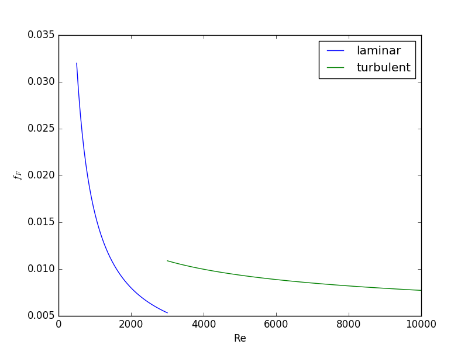
You can see the discontinuity at Re = 3000. What we need is a method to join these two functions smoothly. We can do that with a sigmoid function. Sigmoid functions
A sigmoid function smoothly varies from 0 to 1 according to the equation: \(\sigma(x) = \frac{1}{1 + e^{-(x-x0)/\alpha}}\). The transition is centered on \(x0\), and \(\alpha\) determines the width of the transition.
x = np.linspace(-4,4); y = 1.0 / (1 + np.exp(-x / 0.1)) plt.figure(2); plt.clf() plt.plot(x, y) plt.xlabel('x'); plt.ylabel('y'); plt.title('$\sigma(x)$') plt.savefig('images/smooth-transitions-sigma.png')
>>> <matplotlib.figure.Figure object at 0x0596CF10> [<matplotlib.lines.Line2D object at 0x05A26D90>] <matplotlib.text.Text object at 0x059A6050> <matplotlib.text.Text object at 0x059AF0D0> <matplotlib.text.Text object at 0x059BEA30>
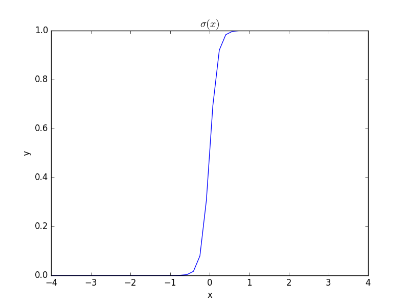
If we have two functions, \(f_1(x)\) and \(f_2(x)\) we want to smoothly join, we do it like this: \(f(x) = (1-\sigma(x))f_1(x) + \sigma(x)f_2(x)\). There is no formal justification for this form of joining, it is simply a mathematical convenience to get a numerically smooth function. Other functions besides the sigmoid function could also be used, as long as they smoothly transition from 0 to 1, or from 1 to zero.
def fanning_friction_factor(Re): '''combined, continuous correlation for the fanning friction factor. the alpha parameter is chosen to provide the desired smoothness. The transition region is about +- 4*alpha. The value 450 was selected to reasonably match the shape of the correlation function provided by Morrison (see last section of this file)''' sigma = 1. / (1 + np.exp(-(Re - 3000.0) / 450.0)); f = (1-sigma) * fF_laminar(Re) + sigma * fF_turbulent(Re) return f Re = np.linspace(500,10000); f = fanning_friction_factor(Re); # add data to figure 1 plt.figure(1) plt.plot(Re,f, label='smooth transition') plt.xlabel('Re') plt.ylabel('$f_F$') plt.legend() plt.savefig('images/smooth-transitions-3.png')
... ... ... ... ... ... ... ... >>> >>> >>> >>> ... <matplotlib.figure.Figure object at 0x051FF630> [<matplotlib.lines.Line2D object at 0x05786310>] <matplotlib.text.Text object at 0x0577CFF0> <matplotlib.text.Text object at 0x05798790> <matplotlib.legend.Legend object at 0x05A302B0>
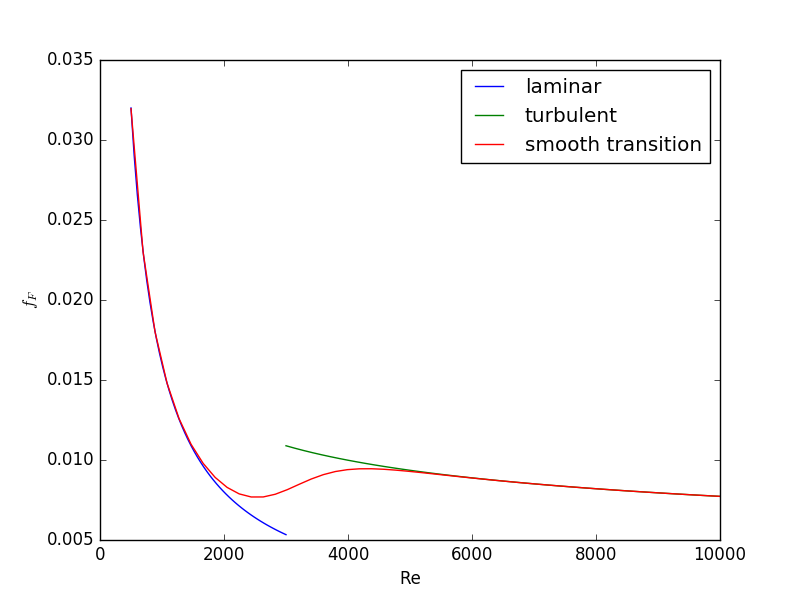
You can see that away from the transition the combined function is practically equivalent to the original two functions. That is because away from the transition the sigmoid function is 0 or 1. Near Re = 3000 is a smooth transition from one curve to the other curve.
Morrison derived a single function for the friction factor correlation over all Re: \(f = \frac{0.0076\left(\frac{3170}{Re}\right)^{0.165}}{1 + \left(\frac{3171}{Re}\right)^{7.0}} + \frac{16}{Re}\). Here we show the comparison with the approach used above. The friction factor differs slightly at high Re, because Morrison's is based on the Prandlt correlation, while the work here is based on the Nikuradse correlation. They are similar, but not the same.
# add this correlation to figure 1 h, = plt.plot(Re, 16.0/Re + (0.0076 * (3170 / Re)**0.165) / (1 + (3170.0 / Re)**7)) ax = plt.gca() handles, labels = ax.get_legend_handles_labels() handles.append(h) labels.append('Morrison') ax.legend(handles, labels) plt.savefig('images/smooth-transitions-morrison.png')
>>> >>> >>> >>> >>> >>> >>> <matplotlib.legend.Legend object at 0x05A5AEB0>
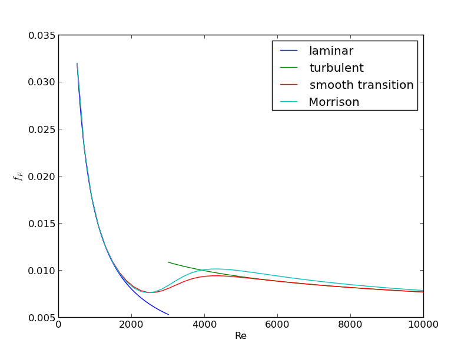
3.9.1 Summary
The approach demonstrated here allows one to smoothly join two discontinuous functions that describe physics in different regimes, and that must transition over some range of data. It should be emphasized that the method has no physical basis, it simply allows one to create a mathematically smooth function, which could be necessary for some optimizers or solvers to work.
3.10 Smooth transitions between two constants
Suppose we have a parameter that has two different values depending on the value of a dimensionless number. For example when the dimensionless number is much less than 1, x = 2/3, and when x is much greater than 1, x = 1. We desire a smooth transition from 2/3 to 1 as a function of x to avoid discontinuities in functions of x. We will adapt the smooth transitions between functions to be a smooth transition between constants.
We define our function as \(x(D) = x0 + (x1 - x0)*(1 - sigma(D,w)\). We control the rate of the transition by the variable \(w\)
import numpy as np import matplotlib.pyplot as plt x0 = 2.0 / 3.0 x1 = 1.5 w = 0.05 D = np.linspace(0,2, 500) sigmaD = 1.0 / (1.0 + np.exp(-(1 - D) / w)) x = x0 + (x1 - x0)*(1 - sigmaD) plt.plot(D, x) plt.xlabel('D'); plt.ylabel('x') plt.savefig('images/smooth-transitions-constants.png')
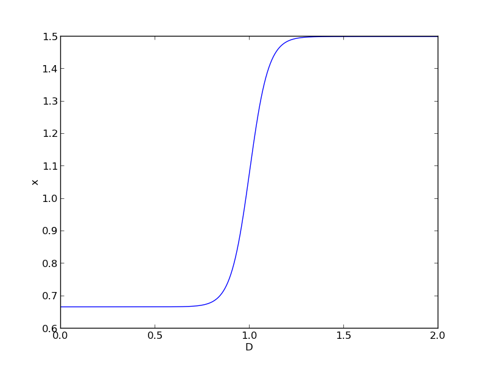
This is a nice trick to get an analytical function with continuous derivatives for a transition between two constants. You could have the transition occur at a value other than D = 1, as well by changing the argument to the exponential function.
3.11 On the quad or trapz'd in ChemE heaven
What is the difference between quad and trapz? The short answer is that quad integrates functions (via a function handle) using numerical quadrature, and trapz performs integration of arrays of data using the trapezoid method.
Let us look at some examples. We consider the example of computing \(\int_0^2 x^3 dx\). the analytical integral is \(1/4 x^4\), so we know the integral evaluates to 16/4 = 4. This will be our benchmark for comparison to the numerical methods.
We use the scipy.integrate.quad command to evaluate this \(\int_0^2 x^3 dx\).
from scipy.integrate import quad ans, err = quad(lambda x: x**3, 0, 2) print ans
4.0
you can also define a function for the integrand.
from scipy.integrate import quad def integrand(x): return x**3 ans, err = quad(integrand, 0, 2) print ans
4.0
3.11.1 Numerical data integration
if we had numerical data like this, we use trapz to integrate it
import numpy as np x = np.array([0, 0.5, 1, 1.5, 2]) y = x**3 i2 = np.trapz(y, x) error = (i2 - 4)/4 print i2, error
4.25 0.0625
Note the integral of these vectors is greater than 4! You can see why here.
import numpy as np import matplotlib.pyplot as plt x = np.array([0, 0.5, 1, 1.5, 2]) y = x**3 x2 = np.linspace(0, 2) y2 = x2**3 plt.plot(x, y, label='5 points') plt.plot(x2, y2, label='50 points') plt.legend() plt.savefig('images/quad-1.png')
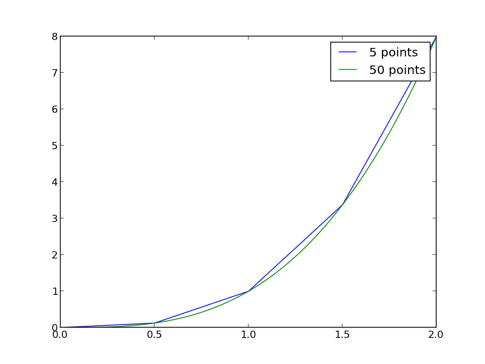
The trapezoid method is overestimating the area significantly. With more points, we get much closer to the analytical value.
import numpy as np x2 = np.linspace(0, 2, 100) y2 = x2**3 print np.trapz(y2, x2)
4.00040812162
3.11.2 Combining numerical data with quad
You might want to combine numerical data with the quad function if you want to perform integrals easily. Let us say you are given this data:
x = [0 0.5 1 1.5 2]; y = [0 0.1250 1.0000 3.3750 8.0000];
and you want to integrate this from x = 0.25 to 1.75. We do not have data in those regions, so some interpolation is going to be needed. Here is one approach.
from scipy.interpolate import interp1d from scipy.integrate import quad import numpy as np x = [0, 0.5, 1, 1.5, 2] y = [0, 0.1250, 1.0000, 3.3750, 8.0000] f = interp1d(x, y) # numerical trapezoid method xfine = np.linspace(0.25, 1.75) yfine = f(xfine) print np.trapz(yfine, xfine) # quadrature with interpolation ans, err = quad(f, 0.25, 1.75) print ans
2.53199187838 2.53125
These approaches are very similar, and both rely on linear interpolation. The second approach is simpler, and uses fewer lines of code.
3.11.3 Summary
trapz and quad are functions for getting integrals. Both can be used with numerical data if interpolation is used. The syntax for the quad and trapz function is different in scipy than in Matlab.
Finally, see this post for an example of solving an integral equation using quad and fsolve.
3.12 Polynomials in python
Polynomials can be represented as a list of coefficients. For example, the polynomial \(4*x^3 + 3*x^2 -2*x + 10 = 0\) can be represented as [4, 3, -2, 10]. Here are some ways to create a polynomial object, and evaluate it.
import numpy as np ppar = [4, 3, -2, 10] p = np.poly1d(ppar) print p(3) print np.polyval(ppar, 3) x = 3 print 4*x**3 + 3*x**2 -2*x + 10
139 139 139
numpy makes it easy to get the derivative and integral of a polynomial.
Consider: \(y = 2x^2 - 1\). We know the derivative is \(4x\). Here we compute the derivative and evaluate it at x=4.
import numpy as np p = np.poly1d([2, 0, -1]) p2 = np.polyder(p) print p2 print p2(4)
4 x 16
The integral of the previous polynomial is \(\frac{2}{3} x^3 - x + c\). We assume \(C=0\). Let us compute the integral \(\int_2^4 2x^2 - 1 dx\).
import numpy as np p = np.poly1d([2, 0, -1]) p2 = np.polyint(p) print p2 print p2(4) - p2(2)
3
0.6667 x - 1 x
35.3333333333
One reason to use polynomials is the ease of finding all of the roots using numpy.roots.
import numpy as np print np.roots([2, 0, -1]) # roots are +- sqrt(2) # note that imaginary roots exist, e.g. x^2 + 1 = 0 has two roots, +-i p = np.poly1d([1, 0, 1]) print np.roots(p)
[ 0.70710678 -0.70710678] [ 0.+1.j 0.-1.j]
There are applications of polynomials in thermodynamics. The van der waal equation is a cubic polynomial \(f(V) = V^3 - \frac{p n b + n R T}{p} V^2 + \frac{n^2 a}{p}V - \frac{n^3 a b}{p} = 0\), where \(a\) and \(b\) are constants, \(p\) is the pressure, \(R\) is the gas constant, \(T\) is an absolute temperature and \(n\) is the number of moles. The roots of this equation tell you the volume of the gas at those conditions.
import numpy as np # numerical values of the constants a = 3.49e4 b = 1.45 p = 679.7 # pressure in psi T = 683 # T in Rankine n = 1.136 # lb-moles R = 10.73 # ft^3 * psi /R / lb-mol ppar = [1.0, -(p*n*b+n*R*T)/p, n**2*a/p, -n**3*a*b/p]; print np.roots(ppar)
[ 5.09432376+0.j 4.40066810+1.43502848j 4.40066810-1.43502848j]
Note that only one root is real (and even then, we have to interpet 0.j as not being imaginary. Also, in a cubic polynomial, there can only be two imaginary roots). In this case that means there is only one phase present.
3.12.1 Summary
Polynomials in numpy are even better than in Matlab, because you get a polynomial object that acts just like a function. Otherwise, they are functionally equivalent.
3.13 The trapezoidal method of integration
Matlab post See http://en.wikipedia.org/wiki/Trapezoidal_rule
$$\int_a^b f(x) dx \approx \frac{1}{2}\displaystyle\sum\limits_{k=1}^N(x_{k+1}-x_k)(f(x_{k+1}) + f(x_k))$$
Let us compute the integral of sin(x) from x=0 to \(\pi\). To approximate the integral, we need to divide the interval from \(a\) to \(b\) into \(N\) intervals. The analytical answer is 2.0.
We will use this example to illustrate the difference in performance between loops and vectorized operations in python.
import numpy as np import time a = 0.0; b = np.pi; N = 1000; # this is the number of intervals h = (b - a)/N; # this is the width of each interval x = np.linspace(a, b, N) y = np.sin(x); # the sin function is already vectorized t0 = time.time() f = 0.0 for k in range(len(x) - 1): f += 0.5 * ((x[k+1] - x[k]) * (y[k+1] + y[k])) tf = time.time() - t0 print 'time elapsed = {0} sec'.format(tf) print f
>>> >>> >>> >>> >>> >>> >>> >>> >>> >>> >>> ... ... >>> >>> time elapsed = 0.0780000686646 sec >>> 1.99999835177
t0 = time.time() Xk = x[1:-1] - x[0:-2] # vectorized version of (x[k+1] - x[k]) Yk = y[1:-1] + y[0:-2] # vectorized version of (y[k+1] + y[k]) f = 0.5 * np.sum(Xk * Yk) # vectorized version of the loop above tf = time.time() - t0 print 'time elapsed = {0} sec'.format(tf) print f
>>> >>> >>> >>> >>> time elapsed = 0.077999830246 sec >>> 1.99999340709
In the last example, there may be loop buried in the sum command. Let us do one final method, using linear algebra, in a single line. The key to understanding this is to recognize the sum is just the result of a dot product of the x differences and y sums.
t0 = time.time() f = 0.5 * np.dot(Xk, Yk) tf = time.time() - t0 print 'time elapsed = {0} sec'.format(tf) print f
>>> >>> time elapsed = 0.0310001373291 sec >>> 1.99999340709
The loop method is straightforward to code, and looks alot like the formula that defines the trapezoid method. the vectorized methods are not as easy to read, and take fewer lines of code to write. However, the vectorized methods are much faster than the loop, so the loss of readability could be worth it for very large problems.
The times here are considerably slower than in Matlab. I am not sure if that is a totally fair comparison. Here I am running python through emacs, which may result in slower performance. I also used a very crude way of timing the performance which lumps some system performance in too.
3.14 Numerical Simpsons rule
A more accurate numerical integration than the trapezoid method is Simpson's rule. The syntax is similar to trapz, but the method is in scipy.integrate.
import numpy as np from scipy.integrate import simps, romb a = 0.0; b = np.pi / 4.0; N = 10 # this is the number of intervals x = np.linspace(a, b, N) y = np.cos(x) t = np.trapz(y, x) s = simps(y, x) a = np.sin(b) - np.sin(a) print print 'trapz = {0} ({1:%} error)'.format(t, (t - a)/a) print 'simps = {0} ({1:%} error)'.format(s, (s - a)/a) print 'analy = {0}'.format(a)
>>> >>> >>> >>> >>> >>> >>> >>> >>> >>> >>> >>> trapz = 0.70665798038 (-0.063470% error) simps = 0.707058914216 (-0.006769% error) analy = 0.707106781187
You can see the Simpson's method is more accurate than the trapezoid method.
3.15 Integrating functions in python
Problem statement
find the integral of a function f(x) from a to b i.e.
$$\int_a^b f(x) dx$$
In python we use numerical quadrature to achieve this with the scipy.integrate.quad command.
as a specific example, lets integrate
$$y=x^2$$
from x=0 to x=1. You should be able to work out that the answer is 1/3.
from scipy.integrate import quad def integrand(x): return x**2 ans, err = quad(integrand, 0, 1) print ans
0.333333333333
3.15.1 double integrals
we use the scipy.integrate.dblquad command
Integrate \(f(x,y)=y sin(x)+x cos(y)\) over
\(\pi <= x <= 2\pi\)
\(0 <= y <= \pi\)
i.e.
\(\int_{x=\pi}^{2\pi}\int_{y=0}^{\pi}y sin(x)+x cos(y)dydx\)
The syntax in dblquad is a bit more complicated than in Matlab. We have to provide callable functions for the range of the y-variable. Here they are constants, so we create lambda functions that return the constants. Also, note that the order of arguments in the integrand is different than in Matlab.
from scipy.integrate import dblquad import numpy as np def integrand(y, x): 'y must be the first argument, and x the second.' return y * np.sin(x) + x * np.cos(y) ans, err = dblquad(integrand, np.pi, 2*np.pi, lambda x: 0, lambda x: np.pi) print ans
-9.86960440109
we use the tplquad command to integrate \(f(x,y,z)=y sin(x)+z cos(x)\) over the region
\(0 <= x <= \pi\)
\(0 <= y <= 1\)
\(-1 <= z <= 1\)
from scipy.integrate import tplquad import numpy as np def integrand(z, y, x): return y * np.sin(x) + z * np.cos(x) ans, err = tplquad(integrand, 0, np.pi, # x limits lambda x: 0, lambda x: 1, # y limits lambda x,y: -1, lambda x,y: 1) # z limits print ans
2.0
3.15.2 Summary
scipy.integrate offers the same basic functionality as Matlab does. The syntax differs significantly for these simple examples, but the use of functions for the limits enables freedom to integrate over non-constant limits.
3.16 Integrating equations in python
A common need in engineering calculations is to integrate an equation over some range to determine the total change. For example, say we know the volumetric flow changes with time according to \(d\nu/dt = \alpha t\), where \(\alpha = 1\) L/min and we want to know how much liquid flows into a tank over 10 minutes if the volumetric flowrate is \(\nu_0 = 5\) L/min at \(t=0\). The answer to that question is the value of this integral: \(V = \int_0^{10} \nu_0 + \alpha t dt\).
import scipy from scipy.integrate import quad nu0 = 5 # L/min alpha = 1.0 # L/min def integrand(t): return nu0 + alpha * t t0 = 0.0 tfinal = 10.0 V, estimated_error = quad(integrand, t0, tfinal) print('{0:1.2f} L flowed into the tank over 10 minutes'.format(V))
100.00 L flowed into the tank over 10 minutes
That is all there is too it!
3.17 Function integration by the Romberg method
An alternative to the scipy.integrate.quad function is the Romberg method. This method is not likely to be more accurate than quad, and it does not give you an error estimate.
import numpy as np from scipy.integrate import quad, romberg a = 0.0 b = np.pi / 4.0 print quad(np.sin, a, b) print romberg(np.sin, a, b)
(0.2928932188134524, 3.2517679528326894e-15) 0.292893218813
3.18 Symbolic math in python
Matlab post Python has capability to do symbolic math through the sympy package.
3.18.1 Solve the quadratic equation
from sympy import solve, symbols, pprint a,b,c,x = symbols('a,b,c,x') f = a*x**2 + b*x + c solution = solve(f, x) print solution pprint(solution)
>>> >>> >>> >>> >>> >>> [(-b + (-4*a*c + b**2)**(1/2))/(2*a), -(b + (-4*a*c + b**2)**(1/2))/(2*a)]
_____________ / _____________\
/ 2 | / 2 |
-b + \/ -4*a*c + b -\b + \/ -4*a*c + b /
[---------------------, -----------------------]
2*a 2*a
The solution you should recognize in the form of \(\frac{b \pm \sqrt{b^2 - 4 a c}}{2 a}\) although python does not print it this nicely!
3.18.2 differentiation
you might find this helpful!
from sympy import diff print diff(f, x) print diff(f, x, 2) print diff(f, a)
>>> 2*a*x + b 2*a >>> x**2
3.18.3 integration
from sympy import integrate print integrate(f, x) # indefinite integral print integrate(f, (x, 0, 1)) # definite integral from x=0..1
>>> a*x**3/3 + b*x**2/2 + c*x a/3 + b/2 + c
3.18.4 Analytically solve a simple ODE
from sympy import Function, Symbol, dsolve f = Function('f') x = Symbol('x') fprime = f(x).diff(x) - f(x) # f' = f(x) y = dsolve(fprime, f(x)) print y print y.subs(x,4) print [y.subs(x, X) for X in [0, 0.5, 1]] # multiple values
>>> >>> >>> >>> >>> >>> f(x) == exp(C1 + x) f(4) == exp(C1 + 4) [f(0) == exp(C1), f(0.5) == exp(C1 + 0.5), f(1) == exp(C1 + 1)]
It is not clear you can solve the initial value problem to get C1.
The symbolic math in sympy is pretty good. It is not up to the capability of Maple or Mathematica, (but neither is Matlab) but it continues to be developed, and could be helpful in some situations.
3.19 Is your ice cream float bigger than mine
Float numbers (i.e. the ones with decimals) cannot be perfectly represented in a computer. This can lead to some artifacts when you have to compare float numbers that on paper should be the same, but in silico are not. Let us look at some examples. In this example, we do some simple math that should result in an answer of 1, and then see if the answer is "equal" to one.
print 3.0 * (1.0/3.0) print 1.0 == 3.0 * (1.0/3.0)
1.0 True
Everything looks fine. Now, consider this example.
print 49.0 * (1.0/49.0) print 1.0 == 49.0 * (1.0/49.0)
1.0 False
The first line looks like everything is find, but the equality fails!
1.0 False
You can see here why the equality statement fails. We will print the two numbers to sixteen decimal places.
print '{0:1.16f}'.format(49.0 * (1.0/49.0) ) print '{0:1.16f}'.format(1.0) print 1 - 49.0 * (1.0/49.0)
0.9999999999999999 1.0000000000000000 1.11022302463e-16
The two numbers actually are not equal to each other because of float math. They are very, very close to each other, but not the same.
This leads to the idea of asking if two numbers are equal to each other within some tolerance. The question of what tolerance to use requires thought. Should it be an absolute tolerance? a relative tolerance? How large should the tolerance be? We will use the distance between 1 and the nearest floating point number (this is eps in Matlab). numpy can tell us this number with the np.spacing command.
Below, we implement a comparison function from 10.1107/S010876730302186X that allows comparisons with tolerance.
# Implemented from Acta Crystallographica A60, 1-6 (2003). doi:10.1107/S010876730302186X import numpy as np print np.spacing(1) def feq(x, y, epsilon): 'x == y' return not((x < (y - epsilon)) or (y < (x - epsilon))) print feq(1.0, 49.0 * (1.0/49.0), np.spacing(1))
2.22044604925e-16 True
For completeness, here are the other float comparison operators from that paper. We also show a few examples.
import numpy as np def flt(x, y, epsilon): 'x < y' return x < (y - epsilon) def fgt(x, y, epsilon): 'x > y' return y < (x - epsilon) def fle(x, y, epsilon): 'x <= y' return not(y < (x - epsilon)) def fge(x, y, epsilon): 'x >= y' return not(x < (y - epsilon)) print fge(1.0, 49.0 * (1.0/49.0), np.spacing(1)) print fle(1.0, 49.0 * (1.0/49.0), np.spacing(1)) print fgt(1.0 + np.spacing(1), 49.0 * (1.0/49.0), np.spacing(1)) print flt(1.0 - 2 * np.spacing(1), 49.0 * (1.0/49.0), np.spacing(1))
True True True True
As you can see, float comparisons can be tricky. You have to give a lot of thought to how to make the comparisons, and the functions shown above are not the only way to do it. You need to build in testing to make sure your comparisons are doing what you want.
4 Linear algebra
4.1 Potential gotchas in linear algebra in numpy
Numpy has some gotcha features for linear algebra purists. The first is that a 1d array is neither a row, nor a column vector. That is, \(a\) = \(a^T\) if \(a\) is a 1d array. That means you can take the dot product of \(a\) with itself, without transposing the second argument. This would not be allowed in Matlab.
import numpy as np a = np.array([0, 1, 2]) print a.shape print a print a.T print print np.dot(a, a) print np.dot(a, a.T)
>>> >>> (3L,) [0 1 2] [0 1 2] >>> 5 5
Compare the previous behavior with this 2d array. In this case, you cannot take the dot product of \(b\) with itself, because the dimensions are incompatible. You must transpose the second argument to make it dimensionally consistent. Also, the result of the dot product is not a simple scalar, but a 1 × 1 array.
b = np.array([[0, 1, 2]]) print b.shape print b print b.T print np.dot(b, b) # this is not ok, the dimensions are wrong. print np.dot(b, b.T) print np.dot(b, b.T).shape
(1L, 3L) [[0 1 2]] [[0] [1] [2]] >>> Traceback (most recent call last): File "<stdin>", line 1, in <module> ValueError: objects are not aligned [[5]] (1L, 1L)
Try to figure this one out! x is a column vector, and y is a 1d vector. Just by adding them you get a 2d array.
x = np.array([[2], [4], [6], [8]]) y = np.array([1, 1, 1, 1, 1, 2]) print x + y
>>> [[ 3 3 3 3 3 4] [ 5 5 5 5 5 6] [ 7 7 7 7 7 8] [ 9 9 9 9 9 10]]
Or this crazy alternative way to do the same thing.
x = np.array([2, 4, 6, 8]) y = np.array([1, 1, 1, 1, 1, 1, 2]) print x[:, np.newaxis] + y
>>> >>> [[ 3 3 3 3 3 3 4] [ 5 5 5 5 5 5 6] [ 7 7 7 7 7 7 8] [ 9 9 9 9 9 9 10]]
In the next example, we have a 3 element vector and a 4 element vector. We convert \(b\) to a 2D array with np.newaxis, and compute the outer product of the two arrays. The result is a 4 × 3 array.
a = np.array([1, 2, 3]) b = np.array([10, 20, 30, 40]) print a * b[:, np.newaxis]
>>> >>> [[ 10 40 90] [ 20 80 180] [ 30 120 270] [ 40 160 360]]
These concepts are known in numpy as array broadcasting. See http://www.scipy.org/EricsBroadcastingDoc and http://docs.scipy.org/doc/numpy/user/basics.broadcasting.html for more details.
These are points to keep in mind, as the operations do not strictly follow the conventions of linear algebra, and may be confusing at times.
4.2 Solving linear equations
Given these equations, find [x1, x2, x3]
\begin{eqnarray} x_1 - x_2 + x_3 &=& 0 \\ 10 x_2 + 25 x_3 &=& 90 \\ 20 x_1 + 10 x_2 &=& 80 \end{eqnarray}reference: Kreysig, Advanced Engineering Mathematics, 9th ed. Sec. 7.3
When solving linear equations, we can represent them in matrix form. The we simply use numpy.linalg.solve to get the solution.
import numpy as np A = np.array([[1, -1, 1], [0, 10, 25], [20, 10, 0]]) b = np.array([0, 90, 80]) x = np.linalg.solve(A, b) print x print np.dot(A,x) # Let us confirm the solution. # this shows one element is not equal because of float tolerance print np.dot(A,x) == b # here we use a tolerance comparison to show the differences is less # than a defined tolerance. TOLERANCE = 1e-12 print np.abs((np.dot(A, x) - b)) <= TOLERANCE
[ 2. 4. 2.] [ 2.66453526e-15 9.00000000e+01 8.00000000e+01] [False True True] [ True True True]
It can be useful to confirm there should be a solution, e.g. that the equations are all independent. The matrix rank will tell us that. Note that rank does not give you the matrix rank, but rather the number of dimensions of the array. We compute the rank by computing the number of singular values of the matrix that are greater than zero, within a prescribed tolerance. We use the numpy.linalg.svd function for that. In Matlab you would use the rref command to see if there are any rows that are all zero, but this command does not exist in numpy. That command does not have practical use in numerical linear algebra and has not been implemented.
import numpy as np A = np.array([[1, -1, 1], [0, 10, 25], [20, 10, 0]]) b = np.array([0, 90, 80]) # determine number of independent rows in A we get the singular values # and count the number greater than 0. TOLERANCE = 1e-12 u, s, v = np.linalg.svd(A) print 'Singular values: {0}'.format(s) print '# of independent rows: {0}'.format(np.sum(np.abs(s) > TOLERANCE)) # to illustrate a case where there are only 2 independent rows # consider this case where row3 = 2*row2. A = np.array([[1, -1, 1], [0, 10, 25], [0, 20, 50]]) u, s, v = np.linalg.svd(A) print 'Singular values: {0}'.format(s) print '# of independent rows: {0}'.format(np.sum(np.abs(s) > TOLERANCE))
Singular values: [ 27.63016717 21.49453733 1.5996022 ] # of independent rows: 3 Singular values: [ 60.21055203 1.63994657 -0. ] # of independent rows: 2
4.3 Rules for transposition
Here are the four rules for matrix multiplication and transposition
- \((\mathbf{A}^T)^T = \mathbf{A}\)
- \((\mathbf{A}+\mathbf{B})^T = \mathbf{A}^T+\mathbf{B}^T\)
- \((\mathit{c}\mathbf{A})^T = \mathit{c}\mathbf{A}^T\)
- \((\mathbf{AB})^T = \mathbf{B}^T\mathbf{A}^T\)
reference: Chapter 7.2 in Advanced Engineering Mathematics, 9th edition. by E. Kreyszig.
4.3.1 The transpose in Python
There are two ways to get the transpose of a matrix: with a notation, and with a function.
import numpy as np A = np.array([[5, -8, 1], [4, 0, 0]]) # function print np.transpose(A) # notation print A.T
[[ 5 4] [-8 0] [ 1 0]] [[ 5 4] [-8 0] [ 1 0]]
4.3.2 Rule 1
import numpy as np A = np.array([[5, -8, 1], [4, 0, 0]]) print np.all(A == (A.T).T)
True
4.3.3 Rule 2
import numpy as np A = np.array([[5, -8, 1], [4, 0, 0]]) B = np.array([[3, 4, 5], [1, 2,3]]) print np.all( A.T + B.T == (A + B).T)
True
4.3.4 Rule 3
import numpy as np A = np.array([[5, -8, 1], [4, 0, 0]]) c = 2.1 print np.all( (c*A).T == c*A.T)
True
4.3.5 Rule 4
import numpy as np A = np.array([[5, -8, 1], [4, 0, 0]]) B = np.array([[0, 2], [1, 2], [6, 7]]) print np.all(np.dot(A, B).T == np.dot(B.T, A.T))
True
4.3.6 Summary
That wraps up showing numerically the transpose rules work for these examples.
4.4 Sums products and linear algebra notation - avoiding loops where possible
Today we examine some methods of linear algebra that allow us to avoid writing explicit loops in Matlab for some kinds of mathematical operations.
Consider the operation on two vectors \(\bf{a}\) and \(\bf{b}\).
$$y=\sum\limits_{i=1}^n a_ib_i$$
a = [1 2 3 4 5]
b = [3 6 8 9 10]
4.4.1 Old-fashioned way with a loop
We can compute this with a loop, where you initialize y, and then add the product of the ith elements of a and b to y in each iteration of the loop. This is known to be slow for large vectors
a = [1, 2, 3, 4, 5] b = [3, 6, 8, 9, 10] sum = 0 for i in range(len(a)): sum = sum + a[i] * b[i] print sum
125
This is an old fashioned style of coding. A more modern, pythonic approach is:
a = [1, 2, 3, 4, 5] b = [3, 6, 8, 9, 10] sum = 0 for x,y in zip(a,b): sum += x * y print sum
125
4.4.2 The numpy approach
The most compact method is to use the methods in numpy.
import numpy as np a = np.array([1, 2, 3, 4, 5]) b = np.array([3, 6, 8, 9, 10]) print np.sum(a * b)
125
4.4.3 Matrix algebra approach.
The operation defined above is actually a dot product. We an directly compute the dot product in numpy. Note that with 1d arrays, python knows what to do and does not require any transpose operations.
import numpy as np a = np.array([1, 2, 3, 4, 5]) b = np.array([3, 6, 8, 9, 10]) print np.dot(a, b)
125
4.4.4 Another example
Consider \(y = \sum\limits_{i=1}^n w_i x_i^2\). This operation is like a weighted sum of squares. The old-fashioned way to do this is with a loop.
w = [0.1, 0.25, 0.12, 0.45, 0.98]; x = [9, 7, 11, 12, 8]; y = 0 for wi, xi in zip(w,x): y += wi * xi**2 print y
162.39
Compare this to the more modern numpy approach.
import numpy as np w = np.array([0.1, 0.25, 0.12, 0.45, 0.98]) x = np.array([9, 7, 11, 12, 8]) y = np.sum(w * x**2) print y
162.39
We can also express this in matrix algebra form. The operation is equivalent to \(y = \vec{x} \cdot D_w \cdot \vec{x}^T\) where \(D_w\) is a diagonal matrix with the weights on the diagonal.
import numpy as np w = np.array([0.1, 0.25, 0.12, 0.45, 0.98]) x = np.array([9, 7, 11, 12, 8]) y = np.dot(x, np.dot(np.diag(w), x)) print y
162.39
This last form avoids explicit loops and sums, and relies on fast linear algebra routines.
4.4.5 Last example
Consider the sum of the product of three vectors. Let \(y = \sum\limits_{i=1}^n w_i x_i y_i\). This is like a weighted sum of products.
import numpy as np w = np.array([0.1, 0.25, 0.12, 0.45, 0.98]) x = np.array([9, 7, 11, 12, 8]) y = np.array([2, 5, 3, 8, 0]) print np.sum(w * x * y) print np.dot(w, np.dot(np.diag(x), y))
57.71 57.71
4.4.6 Summary
We showed examples of the following equalities between traditional sum notations and linear algebra
$$\bf{a}\bf{b}=\sum\limits_{i=1}^n a_ib_i$$
$$\bf{x}\bf{D_w}\bf{x^T}=\sum\limits_{i=1}^n w_ix_i^2$$
$$\bf{x}\bf{D_w}\bf{y^T}=\sum\limits_{i=1}^n w_i x_i y_i$$
These relationships enable one to write the sums as a single line of python code, which utilizes fast linear algebra subroutines, avoids the construction of slow loops, and reduces the opportunity for errors in the code. Admittedly, it introduces the opportunity for new types of errors, like using the wrong relationship, or linear algebra errors due to matrix size mismatches.
4.5 Determining linear independence of a set of vectors
Matlab post Occasionally we have a set of vectors and we need to determine whether the vectors are linearly independent of each other. This may be necessary to determine if the vectors form a basis, or to determine how many independent equations there are, or to determine how many independent reactions there are.
Reference: Kreysig, Advanced Engineering Mathematics, sec. 7.4
Matlab provides a rank command which gives you the number of singular values greater than some tolerance. The numpy.rank function, unfortunately, does not do that. It returns the number of dimensions in the array. We will just compute the rank from singular value decomposition.
The default tolerance used in Matlab is max(size(A))*eps(norm(A)). Let us break that down. eps(norm(A)) is the positive distance from abs(X) to the next larger in magnitude floating point number of the same precision as X. Basically, the smallest significant number. We multiply that by the size of A, and take the largest number. We have to use some judgment in what the tolerance is, and what "zero" means.
import numpy as np v1 = [6, 0, 3, 1, 4, 2]; v2 = [0, -1, 2, 7, 0, 5]; v3 = [12, 3, 0, -19, 8, -11]; A = np.row_stack([v1, v2, v3]) # matlab definition eps = np.finfo(np.linalg.norm(A).dtype).eps TOLERANCE = max(eps * np.array(A.shape)) U, s, V = np.linalg.svd(A) print s print np.sum(s > TOLERANCE) TOLERANCE = 1e-14 print np.sum(s > TOLERANCE)
>>> >>> >>> >>> >>> >>> ... >>> >>> >>> >>> [ 2.75209239e+01 9.30584482e+00 1.42425400e-15] 3 >>> >>> 2
You can see if you choose too small a TOLERANCE, nothing looks like zero. the result with TOLERANCE=1e-14 suggests the rows are not linearly independent. Let us show that one row can be expressed as a linear combination of the other rows.
The number of rows is greater than the rank, so these vectors are not independent. Let's demonstrate that one vector can be defined as a linear combination of the other two vectors. Mathematically we represent this as:
\(x_1 \mathit{v1} + x_2 \mathit{v2} = v3\)
or
\([x_1 x_2][v1; v2] = v3\)
This is not the usual linear algebra form of Ax = b. To get there, we transpose each side of the equation to get:
[v1.T v2.T][x_1; x_2] = v3.T
which is the form Ax = b. We solve it in a least-squares sense.
A = np.column_stack([v1, v2]) x = np.linalg.lstsq(A, v3) print x[0]
>>> [ 2. -3.]
This shows that v3 = 2*v1 - 3*v2
4.5.1 another example
#Problem set 7.4 #17 import numpy as np v1 = [0.2, 1.2, 5.3, 2.8, 1.6] v2 = [4.3, 3.4, 0.9, 2.0, -4.3] A = np.row_stack([v1, v2]) U, s, V = np.linalg.svd(A) print s
[ 7.57773162 5.99149259]
You can tell by inspection the rank is 2 because there are no near-zero singular values.
4.5.2 Near deficient rank
the rank command roughly works in the following way: the matrix is converted to a reduced row echelon form, and then the number of rows that are not all equal to zero are counted. Matlab uses a tolerance to determine what is equal to zero. If there is uncertainty in the numbers, you may have to define what zero is, e.g. if the absolute value of a number is less than 1e-5, you may consider that close enough to be zero. The default tolerance is usually very small, of order 1e-15. If we believe that any number less than 1e-5 is practically equivalent to zero, we can use that information to compute the rank like this.
import numpy as np A = [[1, 2, 3], [0, 2, 3], [0, 0, 1e-6]] U, s, V = np.linalg.svd(A) print s print np.sum(np.abs(s) > 1e-15) print np.sum(np.abs(s) > 1e-5)
[ 5.14874857e+00 7.00277208e-01 5.54700196e-07] 3 2
4.5.3 Application to independent chemical reactions.
reference: Exercise 2.4 in Chemical Reactor Analysis and Design Fundamentals by Rawlings and Ekerdt.
The following reactions are proposed in the hydrogenation of bromine:
Let this be our species vector: v = [H2 H Br2 Br HBr].T
the reactions are then defined by M*v where M is a stoichometric matrix in which each row represents a reaction with negative stoichiometric coefficients for reactants, and positive stoichiometric coefficients for products. A stoichiometric coefficient of 0 is used for species not participating in the reaction.
import numpy as np # [H2 H Br2 Br HBr] M = [[-1, 0, -1, 0, 2], # H2 + Br2 == 2HBR [ 0, 0, -1, 2, 0], # Br2 == 2Br [-1, 1, 0, -1, 1], # Br + H2 == HBr + H [ 0, -1, -1, 1, 1], # H + Br2 == HBr + Br [ 1, -1, 0, 1, -1], # H + HBr == H2 + Br [ 0, 0, 1, -2, 0]] # 2Br == Br2 U, s, V = np.linalg.svd(M) print s print np.sum(np.abs(s) > 1e-15) import sympy M = sympy.Matrix(M) reduced_form, inds = M.rref() print reduced_form labels = ['H2', 'H', 'Br2', 'Br', 'HBr'] for row in reduced_form.tolist(): s = '0 = ' for nu,species in zip(row,labels): if nu != 0: s += ' {0:+d}{1}'.format(int(nu), species) if s != '0 = ': print s
[ 3.84742803e+00 3.32555975e+00 1.46217301e+00 1.73313660e-16 8.57422679e-17] 3 [1, 0, 0, 2, -2] [0, 1, 0, 1, -1] [0, 0, 1, -2, 0] [0, 0, 0, 0, 0] [0, 0, 0, 0, 0] [0, 0, 0, 0, 0] 0 = +1H2 +2Br -2HBr 0 = +1H +1Br -1HBr 0 = +1Br2 -2Br
6 reactions are given, but the rank of the matrix is only 3. so there are only three independent reactions. You can see that reaction 6 is just the opposite of reaction 2, so it is clearly not independent. Also, reactions 3 and 5 are just the reverse of each other, so one of them can also be eliminated. finally, reaction 4 is equal to reaction 1 minus reaction 3.
There are many possible independent reactions. In the code above, we use sympy to put the matrix into reduced row echelon form, which enables us to identify three independent reactions, and shows that three rows are all zero, i.e. they are not independent of the other three reactions. The choice of independent reactions is not unique.
4.6 Reduced row echelon form
There is a nice discussion here on why there is not a rref command in numpy, primarily because one rarely actually needs it in linear algebra. Still, it is so often taught, and it helps visually see what the rank of a matrix is that I wanted to examine ways to get it.
import numpy as np from sympy import Matrix A = np.array([[3, 2, 1], [2, 1, 1], [6, 2, 4]]) rA, pivots = Matrix(A).rref() print rA
[1, 0, 1] [0, 1, -1] [0, 0, 0]
This rref form is a bit different than you might get from doing it by hand. The rows are also normalized.
Based on this, we conclude the \(A\) matrix has a rank of 2 since one row of the reduced form contains all zeros. That means the determinant will be zero, and it should not be possible to compute the inverse of the matrix, and there should be no solution to linear equations of \(A x = b\). Let us check it out.
import numpy as np from sympy import Matrix A = np.array([[3, 2, 1], [2, 1, 1], [6, 2, 4]]) print np.linalg.det(A) print np.linalg.inv(A) b = np.array([3, 0, 6]) print np.linalg.solve(A, b)
>>> >>> ... ... >>> >>> 6.66133814775e-16 [[ 3.00239975e+15 -9.00719925e+15 1.50119988e+15] [ -3.00239975e+15 9.00719925e+15 -1.50119988e+15] [ -3.00239975e+15 9.00719925e+15 -1.50119988e+15]] >>> >>> >>> [ 1.80143985e+16 -1.80143985e+16 -1.80143985e+16]
There are "solutions", but there are a couple of red flags that should catch your eye. First, the determinant is within machine precision of zero. Second the elements of the inverse are all "large". Third, the solutions are all "large". All of these are indications of or artifacts of numerical imprecision.
4.7 Computing determinants from matrix decompositions
There are a few properties of a matrix that can make it easy to compute determinants.
- The determinant of a triangular matrix is the product of the elements on the diagonal.
- The determinant of a permutation matrix is (-1)**n where n is the number of permutations. Recall a permutation matrix is a matrix with a one in each row, and column, and zeros everywhere else.
- The determinant of a product of matrices is equal to the product of the determinant of the matrices.
The LU decomposition computes three matrices such that \(A = P L U\). Thus, \(\det A = \det P \det L \det U\). \(L\) and \(U\) are triangular, so we just need to compute the product of the diagonals. \(P\) is not triangular, but if the elements of the diagonal are not 1, they will be zero, and then there has been a swap. So we simply subtract the sum of the diagonal from the length of the diagonal and then subtract 1 to get the number of swaps.
import numpy as np from scipy.linalg import lu A = np.array([[6, 2, 3], [1, 1, 1], [0, 4, 9]]) P, L, U = lu(A) nswaps = len(np.diag(P)) - np.sum(np.diag(P)) - 1 detP = (-1)**nswaps detL = np.prod(np.diag(L)) detU = np.prod(np.diag(U)) print detP * detL * detU print np.linalg.det(A)
24.0 24.0
According to the numpy documentation, a method similar to this is used to compute the determinant.
4.8 Calling lapack directly from scipy
If the built in linear algebra functions in numpy and scipy do not meet your needs, it is often possible to directly call lapack functions. Here we call a function to solve a set of complex linear equations. The lapack function for this is ZGBSV. The description of this function (http://linux.die.net/man/l/zgbsv) is:
ZGBSV computes the solution to a complex system of linear equations A * X = B, where A is a band matrix of order N with KL subdiagonals and KU superdiagonals, and X and B are N-by-NRHS matrices. The LU decomposition with partial pivoting and row interchanges is used to factor A as A = L * U, where L is a product of permutation and unit lower triangular matrices with KL subdiagonals, and U is upper triangular with KL+KU superdiagonals. The factored form of A is then used to solve the system of equations A * X = B.
The python signature is (http://docs.scipy.org/doc/scipy/reference/generated/scipy.linalg.lapack.zgbsv.html#scipy.linalg.lapack.zgbsv):
lub,piv,x,info = zgbsv(kl,ku,ab,b,[overwrite_ab,overwrite_b])
We will look at an example from http://www.nag.com/lapack-ex/node22.html.
We solve \(A x = b\) with
\begin{equation} A = \left( \begin{array}{cccc} -1.65 + 2.26 i & -2.05 - 0.85 i & 0.97 - 2.84 i & 0 \\ 6.30 i & -1.48 - 1.75 i & -3.99 + 4.01 i & 0.59 - 0.48 i \\ 0 & -0.77 + 2.83 i & -1.06 + 1.94 i & 3.33 - 1.04 i \\ 0 & 0 & 4.48 - 1.09 i & -0.46 - 1.72 i \end{array} \right) \end{equation}and
\begin{equation} b = \left( \begin{array}{cc} -1.06 + 21.50 i \\ -22.72 - 53.90 i \\ 28.24 - 38.60 i \\ -34.56 + 16.73 i \end{array} \right). \end{equation}The \(A\) matrix has one lower diagonal (kl = 1) and two upper diagonals (ku = 2), four equations (n = 4) and one right-hand side.
import scipy.linalg.lapack as la # http://www.nag.com/lapack-ex/node22.html import numpy as np A = np.array([[-1.65 + 2.26j, -2.05 - 0.85j, 0.97 - 2.84j, 0.0 ], [6.30j, -1.48 - 1.75j, -3.99 + 4.01j, 0.59 - 0.48j], [0.0, -0.77 + 2.83j, -1.06 + 1.94j, 3.33 - 1.04j], [0.0, 0.0, 4.48 - 1.09j, -0.46 - 1.72j]]) # construction of Ab is tricky. Fortran indexing starts at 1, not # 0. This code is based on the definition of Ab at # http://linux.die.net/man/l/zgbsv. First, we create the Fortran # indices based on the loops, and then subtract one from them to index # the numpy arrays. Ab = np.zeros((5,4),dtype=np.complex) n, kl, ku = 4, 1, 2 for j in range(1, n + 1): for i in range(max(1, j - ku), min(n, j + kl) + 1): Ab[kl + ku + 1 + i - j - 1, j - 1] = A[i-1, j-1] b = np.array([[-1.06 + 21.50j], [-22.72 - 53.90j], [28.24 - 38.60j], [-34.56 + 16.73j]]) lub, piv, x, info = la.flapack.zgbsv(kl, ku, Ab, b) # compare to results at http://www.nag.com/lapack-ex/examples/results/zgbsv-ex.r print 'x = ',x print 'info = ',info # check solution print 'solved: ',np.all(np.dot(A,x) - b < 1e-12) # here is the easy way!!! print '\n\nbuilt-in solver' print np.linalg.solve(A,b)
x = [[-3.+2.j] [ 1.-7.j] [-5.+4.j] [ 6.-8.j]] info = 0 solved: True built-in solver [[-3.+2.j] [ 1.-7.j] [-5.+4.j] [ 6.-8.j]]
Some points of discussion.
- Kind of painful! but, nevertheless, possible. You have to do a lot more work figuring out the dimensions of the problem, how to setup the problem, keeping track of indices, etc…
But, one day it might be helpful to know this can be done, e.g. to debug an installation, to validate an approach against known results, etc…
5 Nonlinear algebra
Nonlinear algebra problems are typically solved using an iterative process that terminates when the solution is found within a specified tolerance. This process is hidden from the user. The canonical standard form to solve is \(f(X) = 0\).
5.1 Know your tolerance
Matlab post $$V = \frac{\nu (C_{Ao} - C_A)}{k C_A^2}$$
with the information given below, solve for the exit concentration. This should be simple.
Cao = 2*u.mol/u.L; V = 10*u.L; nu = 0.5*u.L/u.s; k = 0.23 * u.L/u.mol/u.s;
import numpy as np from scipy.integrate import odeint import matplotlib.pyplot as plt # unit definitions m = 1.0 L = m**3 / 1000.0 mol = 1.0 s = 1.0 # provide data Cao = 2.0 * mol / L V = 10.0 * L nu = 0.5 * L / s k = 0.23 * L / mol / s def func(Ca): return V - nu * (Cao - Ca)/(k * Ca**2)
Let us plot the function to estimate the solution.
c = np.linspace(0.001, 2) * mol / L plt.plot(c, func(c)) plt.xlabel('C (mol/m^3)') plt.ylim([-0.1, 0.1]) plt.savefig('images/nonlin-tolerance.png')
>>> [<matplotlib.lines.Line2D object at 0x000000000832A6A0>] <matplotlib.text.Text object at 0x00000000083012E8> (-0.1, 0.1)
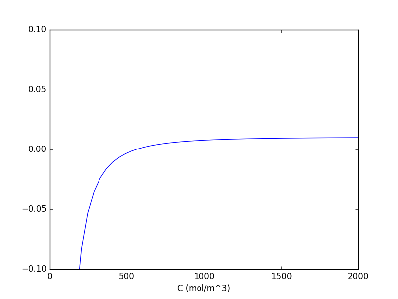
Now let us solve the equation. It looks like an answer is near C=500.
from scipy.optimize import fsolve cguess = 500 c, = fsolve(func, cguess) print c print func(c) print func(c) / (mol / L)
>>> >>> >>> 559.583745606 -1.73472347598e-18 -1.73472347598e-21
Interesting. In Matlab, the default tolerance was not sufficient to get a good solution. Here it is.
5.2 Solving integral equations with fsolve
Occasionally we have integral equations we need to solve in engineering problems, for example, the volume of plug flow reactor can be defined by this equation: \(V = \int_{Fa(V=0)}^{Fa} \frac{1}{r_a} dFa\) where \(r_a\) is the rate law. Suppose we know the reactor volume is 100 L, the inlet molar flow of A is 1 mol/L, the volumetric flow is 10 L/min, and \(r_a = -k Ca\), with \(k=0.23\) 1/min. What is the exit molar flow rate? We need to solve the following equation:
$$100 = \int_{Fa(V=0)}^{Fa} \frac{1}{-k Fa/\nu} dFa$$
We start by creating a function handle that describes the integrand. We can use this function in the quad command to evaluate the integral.
import numpy as np from scipy.integrate import quad from scipy.optimize import fsolve k = 0.23 nu = 10.0 Fao = 1.0 def integrand(Fa): return -1.0 / (k * Fa / nu) def func(Fa): integral,err = quad(integrand, Fao, Fa) return 100.0 - integral vfunc = np.vectorize(func)
We will need an initial guess, so we make a plot of our function to get an idea.
import matplotlib.pyplot as plt f = np.linspace(0.01, 1) plt.plot(f, vfunc(f)) plt.xlabel('Molar flow rate') plt.savefig('images/integral-eqn-guess.png') plt.show()
>>> >>> [<matplotlib.lines.Line2D object at 0x964a910>] <matplotlib.text.Text object at 0x961fe50>
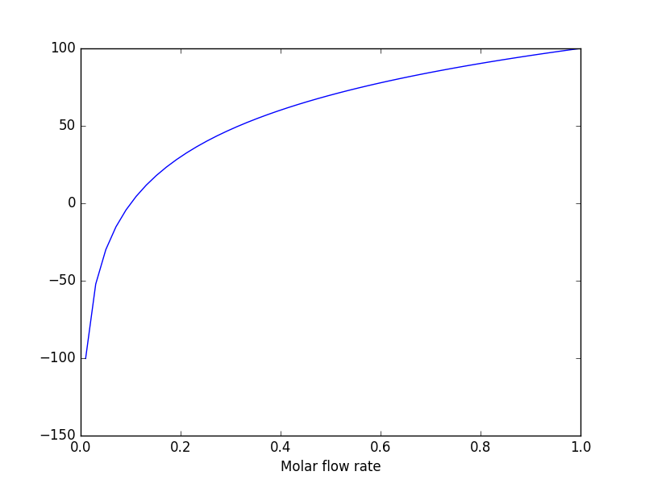
Now we can see a zero is near Fa = 0.1, so we proceed to solve the equation.
Fa_guess = 0.1 Fa_exit, = fsolve(vfunc, Fa_guess) print 'The exit concentration is {0:1.2f} mol/L'.format(Fa_exit / nu)
>>> The exit concentration is 0.01 mol/L
5.2.1 Summary notes
This example seemed a little easier in Matlab, where the quad function seemed to get automatically vectorized. Here we had to do it by hand.
5.3 Method of continuity for nonlinear equation solving
Matlab post Adapted from Perry's Chemical Engineers Handbook, 6th edition 2-63.
We seek the solution to the following nonlinear equations:
\(2 + x + y - x^2 + 8 x y + y^3 = 0\)
\(1 + 2x - 3y + x^2 + xy - y e^x = 0\)
In principle this is easy, we simply need some initial guesses and a nonlinear solver. The challenge here is what would you guess? There could be many solutions. The equations are implicit, so it is not easy to graph them, but let us give it a shot, starting on the x range -5 to 5. The idea is set a value for x, and then solve for y in each equation.
import numpy as np from scipy.optimize import fsolve import matplotlib.pyplot as plt def f(x, y): return 2 + x + y - x**2 + 8*x*y + y**3; def g(x, y): return 1 + 2*x - 3*y + x**2 + x*y - y*np.exp(x) x = np.linspace(-5, 5, 500) @np.vectorize def fy(x): x0 = 0.0 def tmp(y): return f(x, y) y1, = fsolve(tmp, x0) return y1 @np.vectorize def gy(x): x0 = 0.0 def tmp(y): return g(x, y) y1, = fsolve(tmp, x0) return y1 plt.plot(x, fy(x), x, gy(x)) plt.xlabel('x') plt.ylabel('y') plt.legend(['fy', 'gy']) plt.savefig('images/continuation-1.png')
>>> >>> >>> >>> ... ... >>> ... ... >>> >>> >>> ... ... ... ... ... ... ... >>> ... ... ... ... ... ... ... >>> >>> /opt/kitchingroup/enthought/epd-7.3-2-rh5-x86_64/lib/python2.7/site-packages/scipy/optimize/minpack.py:152: RuntimeWarning: The iteration is not making good progress, as measured by the improvement from the last ten iterations. warnings.warn(msg, RuntimeWarning) /opt/kitchingroup/enthought/epd-7.3-2-rh5-x86_64/lib/python2.7/site-packages/scipy/optimize/minpack.py:152: RuntimeWarning: The iteration is not making good progress, as measured by the improvement from the last five Jacobian evaluations. warnings.warn(msg, RuntimeWarning) [<matplotlib.lines.Line2D object at 0x1a0c4990>, <matplotlib.lines.Line2D object at 0x1a0c4a90>] <matplotlib.text.Text object at 0x19d5e390> <matplotlib.text.Text object at 0x19d61d90> <matplotlib.legend.Legend object at 0x189df850>
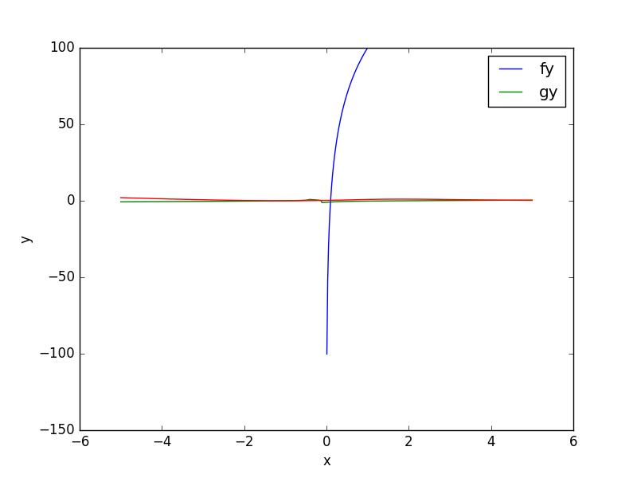
You can see there is a solution near x = -1, y = 0, because both functions equal zero there. We can even use that guess with fsolve. It is disappointly easy! But, keep in mind that in 3 or more dimensions, you cannot perform this visualization, and another method could be required.
def func(X): x,y = X return [f(x, y), g(x, y)] print fsolve(func, [-2, -2])
... ... >>> [ -1.00000000e+00 1.28730858e-15]
We explore a method that bypasses this problem today. The principle is to introduce a new variable, \(\lambda\), which will vary from 0 to 1. at \(\lambda=0\) we will have a simpler equation, preferrably a linear one, which can be easily solved, or which can be analytically solved. At \(\lambda=1\), we have the original equations. Then, we create a system of differential equations that start at the easy solution, and integrate from \(\lambda=0\) to \(\lambda=1\), to recover the final solution.
We rewrite the equations as:
\(f(x,y) = (2 + x + y) + \lambda(- x^2 + 8 x y + y^3) = 0\)
\(g(x,y) = (1 + 2x - 3y) + \lambda(x^2 + xy - y e^x) = 0\)
Now, at \(\lambda=0\) we have the simple linear equations:
\(x + y = -2\)
\(2x - 3y = -1\)
These equations are trivial to solve:
x0 = np.linalg.solve([[1., 1.], [2., -3.]],[ -2, -1]) print x0
[-1.4 -0.6]
We form the system of ODEs by differentiating the new equations with respect to \(\lambda\). Why do we do that? The solution, (x,y) will be a function of \(\lambda\). From calculus, you can show that:
\(\frac{\partial f}{\partial x}\frac{\partial x}{\partial \lambda}+\frac{\partial f}{\partial y}\frac{\partial y}{\partial \lambda}=-\frac{\partial f}{\partial \lambda}\)
\(\frac{\partial g}{\partial x}\frac{\partial x}{\partial \lambda}+\frac{\partial g}{\partial y}\frac{\partial y}{\partial \lambda}=-\frac{\partial g}{\partial \lambda}\)
Now, solve this for \(\frac{\partial x}{\partial \lambda}\) and \(\frac{\partial y}{\partial \lambda}\). You can use Cramer's rule to solve for these to yield:
\begin{eqnarray} \ \frac{\partial x}{\partial \lambda} &=& \frac{\partial f/\partial y \partial g/\partial \lambda - \partial f/\partial \lambda \partial g/\partial y}{\partial f/\partial x \partial g/\partial y - \partial f/\partial y \partial g/\partial x } \\\\ \frac{\partial y}{\partial \lambda} &=& \frac{\partial f/\partial \lambda \partial g/\partial x - \partial f/\partial x \partial g/\partial \lambda}{\partial f/\partial x \partial g/\partial y - \partial f/\partial y \partial g/\partial x } \end{eqnarray}
For this set of equations:
\begin{eqnarray} \ ∂ f/∂ x &=& 1 - 2λ x + 8λ y \\\\ ∂ f/∂ y &=& 1 + 8 λ x + 3 λ y^2 \\\\ ∂ g/∂ x &=& 2 + 2 λ x + λ y - λ y e^x\\\\ ∂ g/∂ y &=& -3 + λ x - λ e^x \end{eqnarray}
Now, we simply set up those two differential equations on \(\frac{\partial x}{\partial \lambda}\) and \(\frac{\partial y}{\partial \lambda}\), with the initial conditions at \(\lambda = 0\) which is the solution of the simpler linear equations, and integrate to \(\lambda = 1\), which is the final solution of the original equations!
def ode(X, LAMBDA): x,y = X pfpx = 1.0 - 2.0 * LAMBDA * x + 8 * LAMBDA * y pfpy = 1.0 + 8.0 * LAMBDA * x + 3.0 * LAMBDA * y**2 pfpLAMBDA = -x**2 + 8.0 * x * y + y**3; pgpx = 2. + 2. * LAMBDA * x + LAMBDA * y - LAMBDA * y * np.exp(x) pgpy = -3. + LAMBDA * x - LAMBDA * np.exp(x) pgpLAMBDA = x**2 + x * y - y * np.exp(x); dxdLAMBDA = (pfpy * pgpLAMBDA - pfpLAMBDA * pgpy) / (pfpx * pgpy - pfpy * pgpx) dydLAMBDA = (pfpLAMBDA * pgpx - pfpx * pgpLAMBDA) / (pfpx * pgpy - pfpy * pgpx) dXdLAMBDA = [dxdLAMBDA, dydLAMBDA] return dXdLAMBDA from scipy.integrate import odeint lambda_span = np.linspace(0, 1, 100) X = odeint(ode, x0, lambda_span) xsol, ysol = X[-1] print 'The solution is at x={0:1.3f}, y={1:1.3f}'.format(xsol, ysol) print f(xsol, ysol), g(xsol, ysol)
... ... ... ... ... ... ... ... ... >>> >>> >>> >>> >>> >>> >>> The solution is at x=-1.000, y=0.000 -1.27746598808e-06 -1.15873819107e-06
You can see the solution is somewhat approximate; the true solution is x = -1, y = 0. The approximation could be improved by lowering the tolerance on the ODE solver. The functions evaluate to a small number, close to zero. You have to apply some judgment to determine if that is sufficiently accurate. For instance if the units on that answer are kilometers, but you need an answer accurate to a millimeter, this may not be accurate enough.
This is a fair amount of work to get a solution! The idea is to solve a simple problem, and then gradually turn on the hard part by the lambda parameter. What happens if there are multiple solutions? The answer you finally get will depend on your \(\lambda=0\) starting point, so it is possible to miss solutions this way. For problems with lots of variables, this would be a good approach if you can identify the easy problem.
5.4 Method of continuity for solving nonlinear equations - Part II
Matlab post Yesterday in Post 1324 we looked at a way to solve nonlinear equations that takes away some of the burden of initial guess generation. The idea was to reformulate the equations with a new variable \(\lambda\), so that at \(\lambda=0\) we have a simpler problem we know how to solve, and at \(\lambda=1\) we have the original set of equations. Then, we derive a set of ODEs on how the solution changes with \(\lambda\), and solve them.
Today we look at a simpler example and explain a little more about what is going on. Consider the equation: \(f(x) = x^2 - 5x + 6 = 0\), which has two roots, \(x=2\) and \(x=3\). We will use the method of continuity to solve this equation to illustrate a few ideas. First, we introduce a new variable \(\lambda\) as: \(f(x; \lambda) = 0\). For example, we could write \(f(x;\lambda) = \lambda x^2 - 5x + 6 = 0\). Now, when \(\lambda=0\), we hve the simpler equation \(- 5x + 6 = 0\), with the solution \(x=6/5\). The question now is, how does \(x\) change as \(\lambda\) changes? We get that from the total derivative of how \(f(x,\lambda)\) changes with \(\lambda\). The total derivative is:
$$\frac{df}{d\lambda} = \frac{\partial f}{\partial \lambda} + \frac{\partial f}{\partial x}\frac{\partial x}{\partial \lambda}=0$$
We can calculate two of those quantities: \(\frac{\partial f}{\partial \lambda}\) and \(\frac{\partial f}{\partial x}\) analytically from our equation and solve for \(\frac{\partial x}{\partial \lambda}\) as
$$ \frac{\partial x}{\partial \lambda} = -\frac{\partial f}{\partial \lambda}/\frac{\partial f}{\partial x}$$
That defines an ordinary differential equation that we can solve by integrating from \(\lambda=0\) where we know the solution to \(\lambda=1\) which is the solution to the real problem. For this problem: \(\frac{\partial f}{\partial \lambda}=x^2\) and \(\frac{\partial f}{\partial x}=-5 + 2\lambda x\).
import numpy as np from scipy.integrate import odeint import matplotlib.pyplot as plt def dxdL(x, Lambda): return -x**2 / (-5.0 + 2 * Lambda * x) x0 = 6.0/5.0 Lspan = np.linspace(0, 1) x = odeint(dxdL, x0, Lspan) plt.plot(Lspan, x) plt.xlabel('$\lambda$') plt.ylabel('x') plt.savefig('images/nonlin-contin-II-1.png')
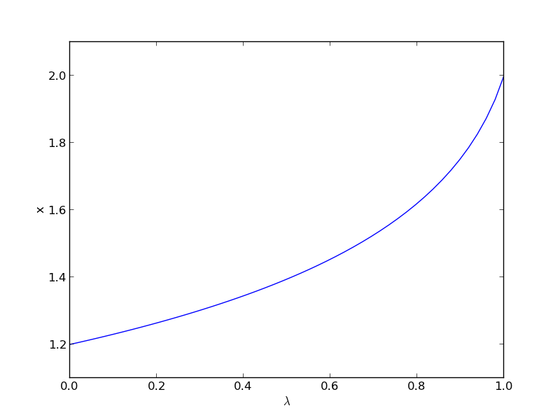
We found one solution at x=2. What about the other solution? To get that we have to introduce \(\lambda\) into the equations in another way. We could try: \(f(x;\lambda) = x^2 + \lambda(-5x + 6)\), but this leads to an ODE that is singular at the initial starting point. Another approach is \(f(x;\lambda) = x^2 + 6 + \lambda(-5x)\), but now the solution at \(\lambda=0\) is imaginary, and we do not have a way to integrate that! What we can do instead is add and subtract a number like this: \(f(x;\lambda) = x^2 - 4 + \lambda(-5x + 6 + 4)\). Now at \(\lambda=0\), we have a simple equation with roots at \(\pm 2\), and we already know that \(x=2\) is a solution. So, we create our ODE on \(dx/d\lambda\) with initial condition \(x(0) = -2\).
import numpy as np from scipy.integrate import odeint import matplotlib.pyplot as plt def dxdL(x, Lambda): return (5 * x - 10) / (2 * x - 5 * Lambda) x0 = -2 Lspan = np.linspace(0, 1) x = odeint(dxdL, x0, Lspan) plt.plot(Lspan, x) plt.xlabel('$\lambda$') plt.ylabel('x') plt.savefig('images/nonlin-contin-II-2.png')
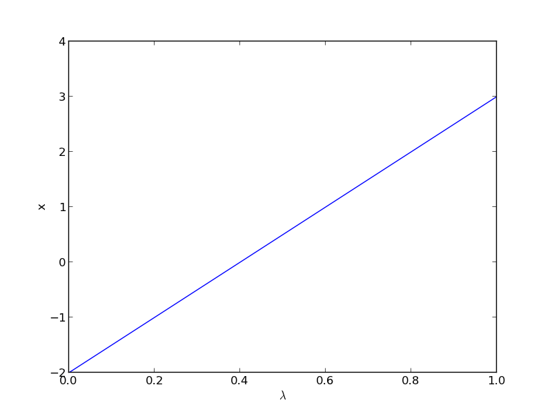
Now we have the other solution. Note if you choose the other root, \(x=2\), you find that 2 is a root, and learn nothing new. You could choose other values to add, e.g., if you chose to add and subtract 16, then you would find that one starting point leads to one root, and the other starting point leads to the other root. This method does not solve all problems associated with nonlinear root solving, namely, how many roots are there, and which one is "best" or physically reasonable? But it does give a way to solve an equation where you have no idea what an initial guess should be. You can see, however, that just like you can get different answers from different initial guesses, here you can get different answers by setting up the equations differently.
5.5 Counting roots
Matlab post The goal here is to determine how many roots there are in a nonlinear function we are interested in solving. For this example, we use a cubic polynomial because we know there are three roots.
$$f(x) = x^3 + 6x^2 - 4x -24$$
5.5.1 Use roots for this polynomial
This ony works for a polynomial, it does not work for any other nonlinear function.
import numpy as np print np.roots([1, 6, -4, -24])
[-6. 2. -2.]
Let us plot the function to see where the roots are.
import numpy as np import matplotlib.pyplot as plt x = np.linspace(-8, 4) y = x**3 + 6 * x**2 - 4*x - 24 plt.plot(x, y) plt.savefig('images/count-roots-1.png')
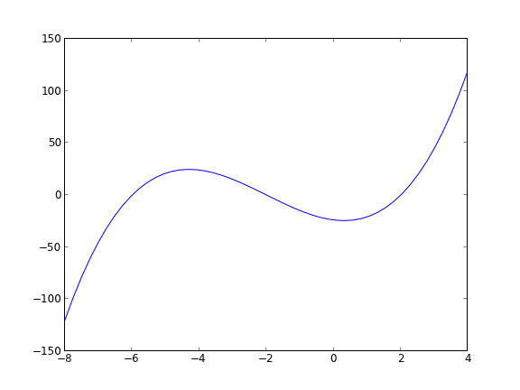
Now we consider several approaches to counting the number of roots in this interval. Visually it is pretty easy, you just look for where the function crosses zero. Computationally, it is tricker.
5.5.2 method 1
Count the number of times the sign changes in the interval. What we have to do is multiply neighboring elements together, and look for negative values. That indicates a sign change. For example the product of two positive or negative numbers is a positive number. You only get a negative number from the product of a positive and negative number, which means the sign changed.
import numpy as np import matplotlib.pyplot as plt x = np.linspace(-8, 4) y = x**3 + 6 * x**2 - 4*x - 24 print np.sum(y[0:-2] * y[1:-1] < 0)
3
This method gives us the number of roots, but not where the roots are.
5.5.3 Method 2
Using events in an ODE solver python can identify events in the solution to an ODE, for example, when a function has a certain value, e.g. f(x) = 0. We can take advantage of this to find the roots and number of roots in this case. We take the derivative of our function, and integrate it from an initial starting point, and define an event function that counts zeros.
$$f'(x) = 3x^2 + 12x - 4$$
with f(-8) = -120
import numpy as np from pycse import odelay def fprime(f, x): return 3.0 * x**2 + 12.0*x - 4.0 def event(f, x): value = f # we want f = 0 isterminal = False direction = 0 return value, isterminal, direction xspan = np.linspace(-8, 4) f0 = -120 X, F, TE, YE, IE = odelay(fprime, f0, xspan, events=[event]) for te, ye in zip(TE, YE): print 'root found at x = {0: 1.3f}, f={1: 1.3f}'.format(te, float(ye))
root found at x = -6.000, f= 0.000 root found at x = -2.000, f= 0.000 root found at x = 2.000, f= 0.000
5.6 Finding the nth root of a periodic function
There is a heat transfer problem where one needs to find the n^th root of the following equation: \(x J_1(x) - Bi J_0(x)=0\) where \(J_0\) and \(J_1\) are the Bessel functions of zero and first order, and \(Bi\) is the Biot number. We examine an approach to finding these roots.
First, we plot the function.
from scipy.special import jn, jn_zeros import matplotlib.pyplot as plt import numpy as np Bi = 1 def f(x): return x * jn(1, x) - Bi * jn(0, x) X = np.linspace(0, 30, 200) plt.plot(X, f(X)) plt.savefig('images/heat-transfer-roots-1.png')
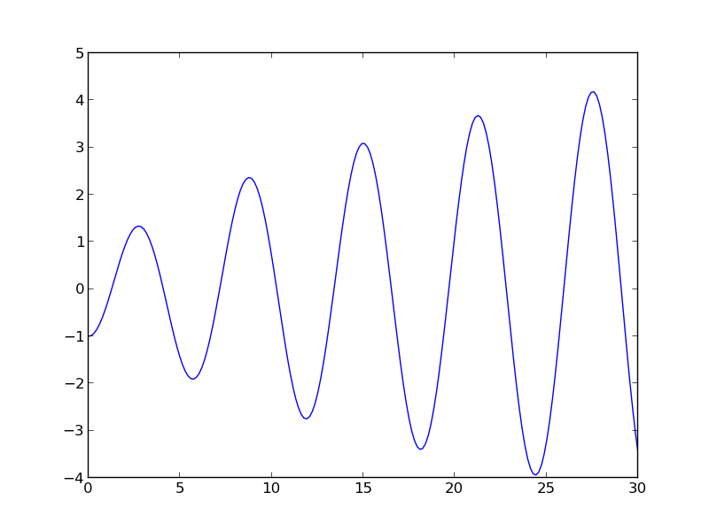
You can see there are many roots to this equation, and we want to be sure we get the n^{th} root. This function is pretty well behaved, so if you make a good guess about the solution you will get an answer, but if you make a bad guess, you may get the wrong root. We examine next a way to do it without guessing the solution. What we want is the solution to \(f(x) = 0\), but we want all the solutions in a given interval. We derive a new equation, \(f'(x) = 0\), with initial condition \(f(0) = f0\), and integrate the ODE with an event function that identifies all zeros of \(f\) for us. The derivative of our function is \(df/dx = d/dx(x J_1(x)) - Bi J'_0(x)\). It is known (http://www.markrobrien.com/besselfunct.pdf) that \(d/dx(x J_1(x)) = x J_0(x)\), and \(J'_0(x) = -J_1(x)\). All we have to do now is set up the problem and run it.
from pycse import * # contains the ode integrator with events from scipy.special import jn, jn_zeros import matplotlib.pyplot as plt import numpy as np Bi = 1 def f(x): "function we want roots for" return x * jn(1, x) - Bi * jn(0, x) def fprime(f, x): "df/dx" return x * jn(0, x) - Bi * (-jn(1, x)) def e1(f, x): "event function to find zeros of f" isterminal = False value = f direction = 0 return value, isterminal, direction f0 = f(0) xspan = np.linspace(0, 30, 200) x, fsol, XE, FE, IE = odelay(fprime, f0, xspan, events=[e1]) plt.plot(x, fsol, '.-', label='Numerical solution') plt.plot(xspan, f(xspan), '--', label='Analytical function') plt.plot(XE, FE, 'ro', label='roots') plt.legend(loc='best') plt.savefig('images/heat-transfer-roots-2.png') for i, root in enumerate(XE): print 'root {0} is at {1}'.format(i, root) plt.show()
root 0 is at 1.25578376407 root 1 is at 4.07947742793 root 2 is at 7.15579903773 root 3 is at 10.2709851211 root 4 is at 13.3983973819 root 5 is at 16.5311587094 root 6 is at 19.666727676 root 7 is at 22.8039503485 root 8 is at 25.9422288177 root 9 is at 29.0812214887

You can work this out once, and then you have all the roots in the interval and you can select the one you want.
5.7 Coupled nonlinear equations
Suppose we seek the solution to this set of equations:
\begin{align} y &=& x^2 \\ y &=& 8 - x^2 \end{align}To solve this we need to setup a function that is equal to zero at the solution. We have two equations, so our function must return two values. There are two variables, so the argument to our function will be an array of values.
from scipy.optimize import fsolve def objective(X): x, y = X # unpack the array in the argument z1 = y - x**2 # first equation z2 = y - 8 + x**2 # second equation return [z1, z2] # list of zeros x0, y0 = 1, 1 # initial guesses guess = [x0, y0] sol = fsolve(objective, guess) print sol # of course there may be more than one solution x0, y0 = -1, -1 # initial guesses guess = [x0, y0] sol = fsolve(objective, guess) print sol
[ 2. 4.] [-2. 4.]
6 Statistics
6.1 Introduction to statistical data analysis
Given several measurements of a single quantity, determine the average value of the measurements, the standard deviation of the measurements and the 95% confidence interval for the average.
import numpy as np y = [8.1, 8.0, 8.1] ybar = np.mean(y) s = np.std(y, ddof=1) print ybar, s
>>> >>> >>> >>> >>> >>> 8.06666666667 0.057735026919
Interesting, we have to specify the divisor in numpy.std by the ddof argument. The default for this in Matlab is 1, the default for this function is 0.
Here is the principle of computing a confidence interval.
- compute the average
- Compute the standard deviation of your data
- Define the confidence interval, e.g. 95% = 0.95
- compute the student-t multiplier. This is a function of the confidence interval you specify, and the number of data points you have minus 1. You subtract 1 because one degree of freedom is lost from calculating the average.
The confidence interval is defined as ybar +- T_multiplier*std/sqrt(n).
from scipy.stats.distributions import t ci = 0.95 alpha = 1.0 - ci n = len(y) T_multiplier = t.ppf(1.0 - alpha / 2.0, n - 1) ci95 = T_multiplier * s / np.sqrt(n) print 'T_multiplier = {0}'.format(T_multiplier) print 'ci95 = {0}'.format(ci95) print 'The true average is between {0} and {1} at a 95% confidence level'.format(ybar - ci95, ybar + ci95)
>>> >>> >>> >>> >>> >>> >>> >>> T_multiplier = 4.30265272991 ci95 = 0.143421757664 The true average is between 7.923244909 and 8.21008842433 at a 95% confidence level
6.2 Basic statistics
Given several measurements of a single quantity, determine the average value of the measurements, the standard deviation of the measurements and the 95% confidence interval for the average.
This is a recipe for computing the confidence interval. The strategy is:
- compute the average
- Compute the standard deviation of your data
- Define the confidence interval, e.g. 95% = 0.95
- compute the student-t multiplier. This is a function of the confidence
interval you specify, and the number of data points you have minus 1. You subtract 1 because one degree of freedom is lost from calculating the average. The confidence interval is defined as ybar +- T_multiplier*std/sqrt(n).
import numpy as np from scipy.stats.distributions import t y = [8.1, 8.0, 8.1] ybar = np.mean(y) s = np.std(y) ci = 0.95 alpha = 1.0 - ci n = len(y) T_multiplier = t.ppf(1-alpha/2.0, n-1) ci95 = T_multiplier * s / np.sqrt(n-1) print [ybar - ci95, ybar + ci95]
[7.9232449090029595, 8.210088424330376]
We are 95% certain the next measurement will fall in the interval above.
6.3 Confidence interval on an average
mod:scipy has a statistical package available for getting statistical distributions. This is useful for computing confidence intervals using the student-t tables. Here is an example of computing a 95% confidence interval on an average.
import numpy as np from scipy.stats.distributions import t n = 10 # number of measurements dof = n - 1 # degrees of freedom avg_x = 16.1 # average measurement std_x = 0.01 # standard deviation of measurements # Find 95% prediction interval for next measurement alpha = 1.0 - 0.95 pred_interval = t.ppf(1-alpha/2.0, dof) * std_x / np.sqrt(n) s = ['We are 95% confident the next measurement', ' will be between {0:1.3f} and {1:1.3f}'] print ''.join(s).format(avg_x - pred_interval, avg_x + pred_interval)
We are 95% confident the next measurement will be between 16.093 and 16.107
6.4 Are averages different
Adapted from http://stattrek.com/ap-statistics-4/unpaired-means.aspx
Class A had 30 students who received an average test score of 78, with standard deviation of 10. Class B had 25 students an average test score of 85, with a standard deviation of 15. We want to know if the difference in these averages is statistically relevant. Note that we only have estimates of the true average and standard deviation for each class, and there is uncertainty in those estimates. As a result, we are unsure if the averages are really different. It could have just been luck that a few students in class B did better.
The hypothesis:
the true averages are the same. We need to perform a two-sample t-test of the hypothesis that \(\mu_1 - \mu_2 = 0\) (this is often called the null hypothesis). we use a two-tailed test because we do not care if the difference is positive or negative, either way means the averages are not the same.
import numpy as np n1 = 30 # students in class A x1 = 78.0 # average grade in class A s1 = 10.0 # std dev of exam grade in class A n2 = 25 # students in class B x2 = 85.0 # average grade in class B s2 = 15.0 # std dev of exam grade in class B # the standard error of the difference between the two averages. SE = np.sqrt(s1**2 / n1 + s2**2 / n2) # compute DOF DF = (n1 - 1) + (n2 - 1)
see the discussion at http://stattrek.com/Help/Glossary.aspx?Target=Two-sample%20t-test for a more complex definition of degrees of freedom. Here we simply subtract one from each sample size to account for the estimation of the average of each sample.
compute the t-score for our data
The difference between two averages determined from small sample numbers follows the t-distribution. the t-score is the difference between the difference of the means and the hypothesized difference of the means, normalized by the standard error. we compute the absolute value of the t-score to make sure it is positive for convenience later.
tscore = np.abs(((x1 - x2) - 0) / SE) print tscore
1.99323179108
Interpretation
A way to approach determinining if the difference is significant or not is to ask, does our computed average fall within a confidence range of the hypothesized value (zero)? If it does, then we can attribute the difference to statistical variations at that confidence level. If it does not, we can say that statistical variations do not account for the difference at that confidence level, and hence the averages must be different.
Let us compute the t-value that corresponds to a 95% confidence level for a mean of zero with the degrees of freedom computed earlier. This means that 95% of the t-scores we expect to get will fall within \(\pm\) t95.
from scipy.stats.distributions import t ci = 0.95; alpha = 1 - ci; t95 = t.ppf(1.0 - alpha/2.0, DF) print t95
>>> >>> >>> >>> >>> 2.00574599354
since tscore < t95, we conclude that at the 95% confidence level we cannot say these averages are statistically different because our computed t-score falls in the expected range of deviations. Note that our t-score is very close to the 95% limit. Let us consider a smaller confidence interval.
ci = 0.94 alpha = 1 - ci; t95 = t.ppf(1.0 - alpha/2.0, DF) print t95
>>> >>> >>> 1.92191364181
at the 94% confidence level, however, tscore > t94, which means we can say with 94% confidence that the two averages are different; class B performed better than class A did. Alternatively, there is only about a 6% chance we are wrong about that statement. another way to get there
An alternative way to get the confidence that the averages are different is to directly compute it from the cumulative t-distribution function. We compute the difference between all the t-values less than tscore and the t-values less than -tscore, which is the fraction of measurements that are between them. You can see here that we are practically 95% sure that the averages are different.
f = t.cdf(tscore, DF) - t.cdf(-tscore, DF) print f
0.948605075732
6.5 Model selection
adapted from http://www.itl.nist.gov/div898/handbook/pmd/section4/pmd44.htm
In this example, we show some ways to choose which of several models fit data the best. We have data for the total pressure and temperature of a fixed amount of a gas in a tank that was measured over the course of several days. We want to select a model that relates the pressure to the gas temperature.
The data is stored in a text file download PT.txt , with the following structure:
Run Ambient Fitted Order Day Temperature Temperature Pressure Value Residual 1 1 23.820 54.749 225.066 222.920 2.146 ...
We need to read the data in, and perform a regression analysis on P vs. T. In python we start counting at 0, so we actually want columns 3 and 4.
import numpy as np import matplotlib.pyplot as plt data = np.loadtxt('data/PT.txt', skiprows=2) T = data[:, 3] P = data[:, 4] plt.plot(T, P, 'k.') plt.xlabel('Temperature') plt.ylabel('Pressure') plt.savefig('images/model-selection-1.png')
>>> >>> >>> >>> >>> >>> [<matplotlib.lines.Line2D object at 0x00000000084398D0>] <matplotlib.text.Text object at 0x000000000841F6A0> <matplotlib.text.Text object at 0x0000000008423DD8>
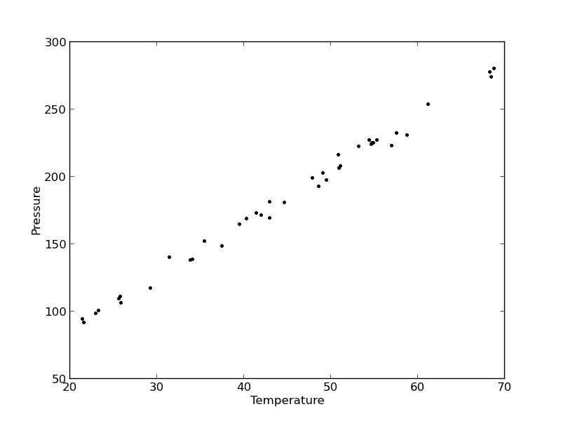
It appears the data is roughly linear, and we know from the ideal gas law that PV = nRT, or P = nR/V*T, which says P should be linearly correlated with V. Note that the temperature data is in degC, not in K, so it is not expected that P=0 at T = 0. We will use linear algebra to compute the line coefficients.
A = np.vstack([T**0, T]).T b = P x, res, rank, s = np.linalg.lstsq(A, b) intercept, slope = x print 'b, m =', intercept, slope n = len(b) k = len(x) sigma2 = np.sum((b - np.dot(A,x))**2) / (n - k) C = sigma2 * np.linalg.inv(np.dot(A.T, A)) se = np.sqrt(np.diag(C)) from scipy.stats.distributions import t alpha = 0.05 sT = t.ppf(1-alpha/2., n - k) # student T multiplier CI = sT * se print 'CI = ',CI for beta, ci in zip(x, CI): print '[{0} {1}]'.format(beta - ci, beta + ci)
>>> >>> >>> >>> b, m = 7.74899739238 3.93014043824 >>> >>> >>> >>> >>> >>> >>> >>> >>> >>> >>> >>> >>> >>> >>> CI = [ 4.76511545 0.1026405 ] ... ... [2.98388194638 12.5141128384] [3.82749994079 4.03278093569]
The confidence interval on the intercept is large, but it does not contain zero at the 95% confidence level.
The R^2 value accounts roughly for the fraction of variation in the data that can be described by the model. Hence, a value close to one means nearly all the variations are described by the model, except for random variations.
ybar = np.mean(P) SStot = np.sum((P - ybar)**2) SSerr = np.sum((P - np.dot(A, x))**2) R2 = 1 - SSerr/SStot print R2
>>> >>> >>> 0.993715411798
plt.figure(); plt.clf() plt.plot(T, P, 'k.', T, np.dot(A, x), 'b-') plt.xlabel('Temperature') plt.ylabel('Pressure') plt.title('R^2 = {0:1.3f}'.format(R2)) plt.savefig('images/model-selection-2.png')
<matplotlib.figure.Figure object at 0x0000000008423860> [<matplotlib.lines.Line2D object at 0x00000000085BE780>, <matplotlib.lines.Line2D object at 0x00000000085BE940>] <matplotlib.text.Text object at 0x0000000008449898> <matplotlib.text.Text object at 0x000000000844CCF8> <matplotlib.text.Text object at 0x000000000844ED30>
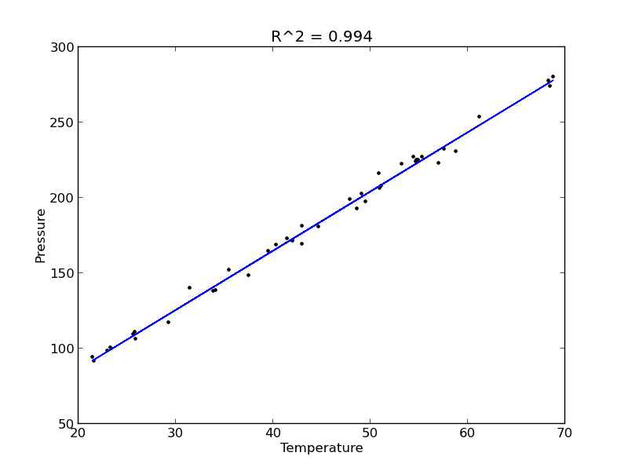
The fit looks good, and R^2 is near one, but is it a good model? There are a few ways to examine this. We want to make sure that there are no systematic trends in the errors between the fit and the data, and we want to make sure there are not hidden correlations with other variables. The residuals are the error between the fit and the data. The residuals should not show any patterns when plotted against any variables, and they do not in this case.
residuals = P - np.dot(A, x) plt.figure() f, (ax1, ax2, ax3) = plt.subplots(3) ax1.plot(T,residuals,'ko') ax1.set_xlabel('Temperature') run_order = data[:, 0] ax2.plot(run_order, residuals,'ko ') ax2.set_xlabel('run order') ambientT = data[:, 2] ax3.plot(ambientT, residuals,'ko') ax3.set_xlabel('ambient temperature') plt.tight_layout() # make sure plots do not overlap plt.savefig('images/model-selection-3.png')
>>> <matplotlib.figure.Figure object at 0x00000000085C21D0> >>> >>> >>> [<matplotlib.lines.Line2D object at 0x0000000008861CC0>] <matplotlib.text.Text object at 0x00000000085D3A58> >>> >>> >>> [<matplotlib.lines.Line2D object at 0x0000000008861E80>] <matplotlib.text.Text object at 0x00000000085EC5F8> >>> >>> [<matplotlib.lines.Line2D object at 0x0000000008861C88>] <matplotlib.text.Text object at 0x0000000008846828>
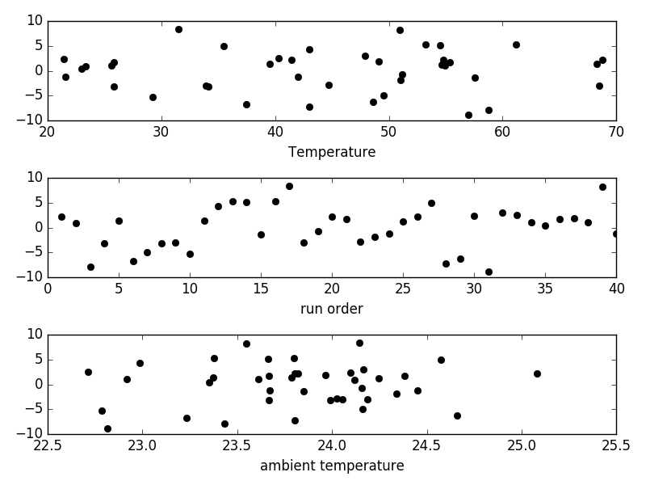
There may be some correlations in the residuals with the run order. That could indicate an experimental source of error.
We assume all the errors are uncorrelated with each other. We can use a lag plot to assess this, where we plot residual[i] vs residual[i-1], i.e. we look for correlations between adjacent residuals. This plot should look random, with no correlations if the model is good.
plt.figure(); plt.clf() plt.plot(residuals[1:-1], residuals[0:-2],'ko') plt.xlabel('residual[i]') plt.ylabel('residual[i-1]') plt.savefig('images/model-selection-correlated-residuals.png')
<matplotlib.figure.Figure object at 0x000000000886EB00> [<matplotlib.lines.Line2D object at 0x0000000008A02908>] <matplotlib.text.Text object at 0x00000000089E8198> <matplotlib.text.Text object at 0x00000000089EB908>
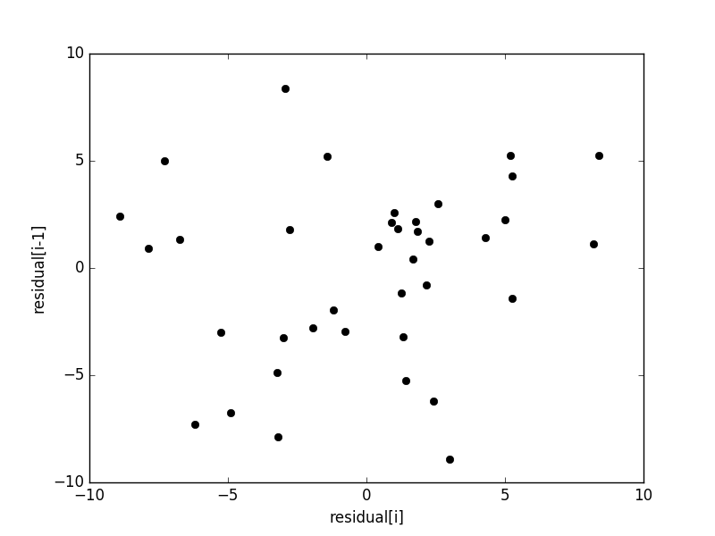
It is hard to argue there is any correlation here.
Lets consider a quadratic model instead.
A = np.vstack([T**0, T, T**2]).T b = P; x, res, rank, s = np.linalg.lstsq(A, b) print x n = len(b) k = len(x) sigma2 = np.sum((b - np.dot(A,x))**2) / (n - k) C = sigma2 * np.linalg.inv(np.dot(A.T, A)) se = np.sqrt(np.diag(C)) from scipy.stats.distributions import t alpha = 0.05 sT = t.ppf(1-alpha/2., n - k) # student T multiplier CI = sT * se print 'CI = ',CI for beta, ci in zip(x, CI): print '[{0} {1}]'.format(beta - ci, beta + ci) ybar = np.mean(P) SStot = np.sum((P - ybar)**2) SSerr = np.sum((P - np.dot(A,x))**2) R2 = 1 - SSerr/SStot print 'R^2 = {0}'.format(R2)
>>> >>> >>> [ 9.00353031e+00 3.86669879e+00 7.26244301e-04] >>> >>> >>> >>> >>> >>> >>> >>> >>> >>> >>> >>> >>> >>> >>> CI = [ 1.38030344e+01 6.62100654e-01 7.48516727e-03] ... ... [-4.79950412123 22.8065647329] [3.20459813681 4.52879944409] [-0.00675892296907 0.00821141157035] >>> >>> >>> >>> >>> R^2 = 0.993721969407
You can see that the confidence interval on the constant and T^2 term includes zero. That is a good indication this additional parameter is not significant. You can see also that the R^2 value is not better than the one from a linear fit, so adding a parameter does not increase the goodness of fit. This is an example of overfitting the data. Since the constant in this model is apparently not significant, let us consider the simplest model with a fixed intercept of zero.
Let us consider a model with intercept = 0, P = alpha*T.
A = np.vstack([T]).T b = P; x, res, rank, s = np.linalg.lstsq(A, b) n = len(b) k = len(x) sigma2 = np.sum((b - np.dot(A,x))**2) / (n - k) C = sigma2 * np.linalg.inv(np.dot(A.T, A)) se = np.sqrt(np.diag(C)) from scipy.stats.distributions import t alpha = 0.05 sT = t.ppf(1-alpha/2.0, n - k) # student T multiplier CI = sT * se for beta, ci in zip(x, CI): print '[{0} {1}]'.format(beta - ci, beta + ci) plt.figure() plt.plot(T, P, 'k. ', T, np.dot(A, x)) plt.xlabel('Temperature') plt.ylabel('Pressure') plt.legend(['data', 'fit']) ybar = np.mean(P) SStot = np.sum((P - ybar)**2) SSerr = np.sum((P - np.dot(A,x))**2) R2 = 1 - SSerr/SStot plt.title('R^2 = {0:1.3f}'.format(R2)) plt.savefig('images/model-selection-no-intercept.png')
>>> >>> >>> >>> >>> >>> >>> >>> >>> >>> >>> >>> >>> >>> >>> >>> >>> >>> ... ... [4.05680124495 4.12308349899] <matplotlib.figure.Figure object at 0x0000000008870BE0> [<matplotlib.lines.Line2D object at 0x00000000089F4550>, <matplotlib.lines.Line2D object at 0x00000000089F4208>] <matplotlib.text.Text object at 0x0000000008A13630> <matplotlib.text.Text object at 0x0000000008A16DA0> <matplotlib.legend.Legend object at 0x00000000089EFD30> >>> >>> >>> >>> >>> <matplotlib.text.Text object at 0x000000000B26C0B8>
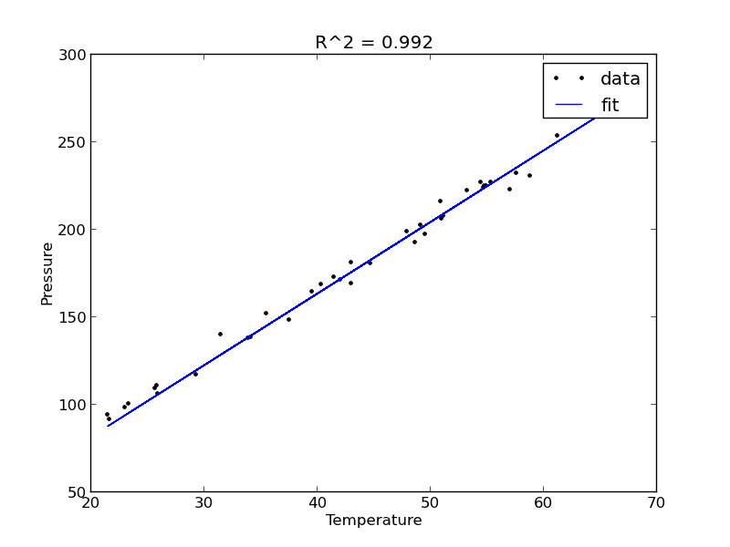 The fit is visually still pretty good, and the R^2 value is only slightly worse. Let us examine the residuals again.
residuals = P - np.dot(A,x) plt.figure() plt.plot(T,residuals,'ko') plt.xlabel('Temperature') plt.ylabel('residuals') plt.savefig('images/model-selection-no-incpt-resid.png')
>>> <matplotlib.figure.Figure object at 0x0000000008A0F5C0> [<matplotlib.lines.Line2D object at 0x000000000B29B0F0>] <matplotlib.text.Text object at 0x000000000B276FD0> <matplotlib.text.Text object at 0x000000000B283780>
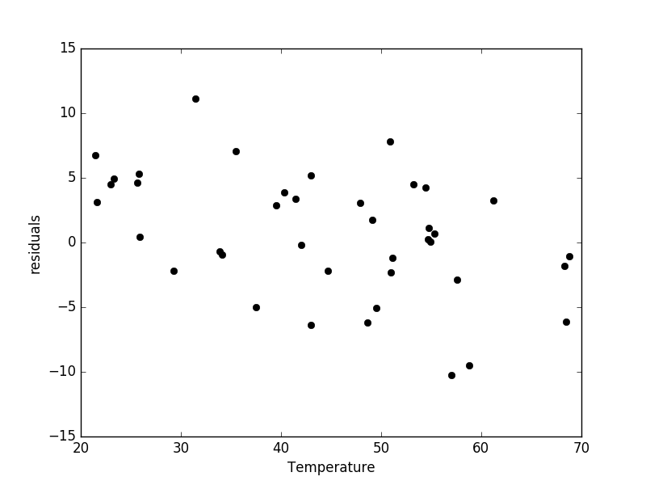
You can see a slight trend of decreasing value of the residuals as the Temperature increases. This may indicate a deficiency in the model with no intercept. For the ideal gas law in degC: \(PV = nR(T+273)\) or \(P = nR/V*T + 273*nR/V\), so the intercept is expected to be non-zero in this case. Specifically, we expect the intercept to be 273*R*n/V. Since the molar density of a gas is pretty small, the intercept may be close to, but not equal to zero. That is why the fit still looks ok, but is not as good as letting the intercept be a fitting parameter. That is an example of the deficiency in our model.
In the end, it is hard to justify a model more complex than a line in this case.
6.6 Numerical propagation of errors
Propagation of errors is essential to understanding how the uncertainty in a parameter affects computations that use that parameter. The uncertainty propagates by a set of rules into your solution. These rules are not easy to remember, or apply to complicated situations, and are only approximate for equations that are nonlinear in the parameters.
We will use a Monte Carlo simulation to illustrate error propagation. The idea is to generate a distribution of possible parameter values, and to evaluate your equation for each parameter value. Then, we perform statistical analysis on the results to determine the standard error of the results.
We will assume all parameters are defined by a normal distribution with known mean and standard deviation.
6.6.1 Addition and subtraction
import numpy as np import matplotlib.pyplot as plt N = 1e6 # number of samples of parameters A_mu = 2.5; A_sigma = 0.4 B_mu = 4.1; B_sigma = 0.3 A = np.random.normal(A_mu, A_sigma, size=(1, N)) B = np.random.normal(B_mu, B_sigma, size=(1, N)) p = A + B m = A - B plt.hist(p) plt.show() print np.std(p) print np.std(m) print np.sqrt(A_sigma**2 + B_sigma**2) # the analytical std dev
>>> >>> >>> >>> >>> >>> >>> >>> >>> >>> >>> >>> >>> 0.500505424616 0.500113385681 >>> 0.5
6.6.2 Multiplication
F_mu = 25.0; F_sigma = 1; x_mu = 6.4; x_sigma = 0.4; F = np.random.normal(F_mu, F_sigma, size=(1, N)) x = np.random.normal(x_mu, x_sigma, size=(1, N)) t = F * x print np.std(t) print np.sqrt((F_sigma / F_mu)**2 + (x_sigma / x_mu)**2) * F_mu * x_mu
>>> >>> >>> >>> >>> >>> 11.8900166284 11.8726576637
6.6.3 Division
This is really like multiplication: F / x = F * (1 / x).
d = F / x print np.std(d) print np.sqrt((F_sigma / F_mu)**2 + (x_sigma / x_mu)**2) * F_mu / x_mu
0.293757533168 0.289859806243
6.6.4 exponents
This rule is different than multiplication (A^2 = A*A) because in the previous examples we assumed the errors in A and B for A*B were uncorrelated. in A*A, the errors are not uncorrelated, so there is a different rule for error propagation.
t_mu = 2.03; t_sigma = 0.01*t_mu; # 1% error A_mu = 16.07; A_sigma = 0.06; t = np.random.normal(t_mu, t_sigma, size=(1, N)) A = np.random.normal(A_mu, A_sigma, size=(1, N)) # Compute t^5 and sqrt(A) with error propagation print np.std(t**5) print (5 * t_sigma / t_mu) * t_mu**5
>>> >>> >>> >>> >>> ... 1.72454836176 1.72365440621
print np.std(np.sqrt(A)) print 1.0 / 2.0 * A_sigma / A_mu * np.sqrt(A_mu)
0.00748903477329 0.00748364738749
6.6.5 the chain rule in error propagation
let v = v0 + a*t, with uncertainties in vo,a and t
vo_mu = 1.2; vo_sigma = 0.02; a_mu = 3.0; a_sigma = 0.3; t_mu = 12.0; t_sigma = 0.12; vo = np.random.normal(vo_mu, vo_sigma, (1, N)) a = np.random.normal(a_mu, a_sigma, (1, N)) t = np.random.normal(t_mu, t_sigma, (1, N)) v = vo + a*t print np.std(v) print np.sqrt(vo_sigma**2 + t_mu**2 * a_sigma**2 + a_mu**2 * t_sigma**2)
>>> >>> >>> >>> >>> >>> >>> >>> >>> 3.62232509326 3.61801050303
6.6.6 Summary
You can numerically perform error propagation analysis if you know the underlying distribution of errors on the parameters in your equations. One benefit of the numerical propogation is you do not have to remember the error propagation rules, and you directly look at the distribution in nonlinear cases. Some limitations of this approach include
- You have to know the distribution of the errors in the parameters
- You have to assume the errors in parameters are uncorrelated.
6.7 Another approach to error propagation
In the previous section we examined an analytical approach to error propagation, and a simulation based approach. There is another approach to error propagation, using the uncertainties module (https://pypi.python.org/pypi/uncertainties/). You have to install this package, e.g. pip install uncertainties. After that, the module provides new classes of numbers and functions that incorporate uncertainty and propagate the uncertainty through the functions. In the examples that follow, we repeat the calculations from the previous section using the uncertainties module.
Addition and subtraction
import uncertainties as u A = u.ufloat((2.5, 0.4)) B = u.ufloat((4.1, 0.3)) print A + B print A - B
>>> >>> >>> 6.6+/-0.5 -1.6+/-0.5
Multiplication and division
F = u.ufloat((25, 1)) x = u.ufloat((6.4, 0.4)) t = F * x print t d = F / x print d
>>> >>> >>> 160.0+/-11.8726576637 >>> >>> 3.90625+/-0.289859806243
Exponentiation
t = u.ufloat((2.03, 0.0203)) print t**5 from uncertainties.umath import sqrt A = u.ufloat((16.07, 0.06)) print sqrt(A) # print np.sqrt(A) # this does not work from uncertainties import unumpy as unp print unp.sqrt(A)
34.4730881243+/-1.72365440621 >>> >>> >>> >>> 4.00874045057+/-0.00748364738749 ... >>> >>> 4.00874045057+/-0.00748364738749
Note in the last example, we had to either import a function from uncertainties.umath or import a special version of numpy that handles uncertainty. This may be a limitation of the uncertainties package as not all functions in arbitrary modules can be covered. Note, however, that you can wrap a function to make it handle uncertainty like this.
import numpy as np wrapped_sqrt = u.wrap(np.sqrt) print wrapped_sqrt(A)
>>> >>> 4.00874045057+/-0.00748364738774
Propagation of errors in an integral
import numpy as np import uncertainties as u x = np.array([u.ufloat((1, 0.01)), u.ufloat((2, 0.1)), u.ufloat((3, 0.1))]) y = 2 * x print np.trapz(x, y)
>>> >>> ... ... >>> >>> >>> >>> 8.0+/-0.600333240792
Chain rule in error propagation
v0 = u.ufloat((1.2, 0.02)) a = u.ufloat((3.0, 0.3)) t = u.ufloat((12.0, 0.12)) v = v0 + a * t print v
>>> >>> >>> >>> 37.2+/-3.61801050303
A real example?
This is what I would setup for a real working example. We try to compute the exit concentration from a CSTR. The idea is to wrap the "external" fsolve function using the uncertainties.wrap function, which handles the units. Unfortunately, it does not work, and it is not clear why. But see the following discussion for a fix.
from scipy.optimize import fsolve Fa0 = u.ufloat((5.0, 0.05)) v0 = u.ufloat((10., 0.1)) V = u.ufloat((66000.0, 100)) # reactor volume L^3 k = u.ufloat((3.0, 0.2)) # rate constant L/mol/h def func(Ca): "Mole balance for a CSTR. Solve this equation for func(Ca)=0" Fa = v0 * Ca # exit molar flow of A ra = -k * Ca**2 # rate of reaction of A L/mol/h return Fa0 - Fa + V * ra # CA guess that that 90 % is reacted away CA_guess = 0.1 * Fa0 / v0 wrapped_fsolve = u.wrap(fsolve) CA_sol = wrapped_fsolve(func, CA_guess) print 'The exit concentration is {0} mol/L'.format(CA_sol)
>>> >>> >>> >>> >>> >>> >>> ... ... ... ... ... >>> ... >>> >>> >>> <function fsolve at 0x148f25f0> >>> >>> The exit concentration is NotImplemented mol/L
I got a note from the author of the uncertainties package explaining the cryptic error above, and a solution for it. The error arises because fsolve does not know how to deal with uncertainties. The idea is to create a function that returns a float, when everything is given as a float. Then, we wrap the fsolve call, and finally wrap the wrapped fsolve call!
- Step 1. Write the function to solve with arguments for all unitted quantities. This function may be called with uncertainties, or with floats.
- Step 2. Wrap the call to fsolve in a function that takes all the parameters as arguments, and that returns the solution.
- Step 3. Use uncertainties.wrap to wrap the function in Step 2 to get the answer with uncertainties.
Here is the code that does work:
import uncertainties as u from scipy.optimize import fsolve Fa0 = u.ufloat((5.0, 0.05)) v0 = u.ufloat((10., 0.1)) V = u.ufloat((66000.0, 100.0)) # reactor volume L^3 k = u.ufloat((3.0, 0.2)) # rate constant L/mol/h # Step 1 def func(Ca, v0, k, Fa0, V): "Mole balance for a CSTR. Solve this equation for func(Ca)=0" Fa = v0 * Ca # exit molar flow of A ra = -k * Ca**2 # rate of reaction of A L/mol/h return Fa0 - Fa + V * ra # Step 2 def Ca_solve(v0, k, Fa0, V): 'wrap fsolve to pass parameters as float or units' # this line is a little fragile. You must put [0] at the end or # you get the NotImplemented result guess = 0.1 * Fa0 / v0 sol = fsolve(func, guess, args=(v0, k, Fa0, V))[0] return sol # Step 3 print u.wrap(Ca_solve)(v0, k, Fa0, V)
0.00500+/-0.00017
It would take some practice to get used to this, but the payoff is that you have an "automatic" error propagation method.
Being ever the skeptic, let us compare the result above to the Monte Carlo approach to error estimation below.
import numpy as np from scipy.optimize import fsolve N = 10000 Fa0 = np.random.normal(5, 0.05, (1, N)) v0 = np.random.normal(10.0, 0.1, (1, N)) V = np.random.normal(66000, 100, (1,N)) k = np.random.normal(3.0, 0.2, (1, N)) SOL = np.zeros((1, N)) for i in range(N): def func(Ca): return Fa0[0,i] - v0[0,i] * Ca + V[0,i] * (-k[0,i] * Ca**2) SOL[0,i] = fsolve(func, 0.1 * Fa0[0,i] / v0[0,i])[0] print 'Ca(exit) = {0}+/-{1}'.format(np.mean(SOL), np.std(SOL))
Ca(exit) = 0.00500829453185+/-0.000169103578901
I am pretty content those are the same!
6.7.1 Summary
The uncertainties module is pretty amazing. It automatically propagates errors through a pretty broad range of computations. It is a little tricky for third-party packages, but it seems doable.
Read more about the package at http://pythonhosted.org/uncertainties/index.html.
6.8 Random thoughts
Random numbers are used in a variety of simulation methods, most notably Monte Carlo simulations. In another later example, we will see how we can use random numbers for error propagation analysis. First, we discuss two types of pseudorandom numbers we can use in python: uniformly distributed and normally distributed numbers.
Say you are the gambling type, and bet your friend $5 the next random number will be greater than 0.49. Let us ask Python to roll the random number generator for us.
import numpy as np n = np.random.uniform() print 'n = {0}'.format(n) if n > 0.49: print 'You win!' else: print 'you lose.'
n = 0.381896986693 you lose.
The odds of you winning the last bet are slightly stacked in your favor. There is only a 49% chance your friend wins, but a 51% chance that you win. Lets play the game a lot of times times and see how many times you win, and your friend wins. First, lets generate a bunch of numbers and look at the distribution with a histogram.
import numpy as np N = 10000 games = np.random.uniform(size=(1,N)) wins = np.sum(games > 0.49) losses = N - wins print 'You won {0} times ({1:%})'.format(wins, float(wins) / N) import matplotlib.pyplot as plt count, bins, ignored = plt.hist(games) plt.savefig('images/random-thoughts-1.png')
You won 5090 times (50.900000%)
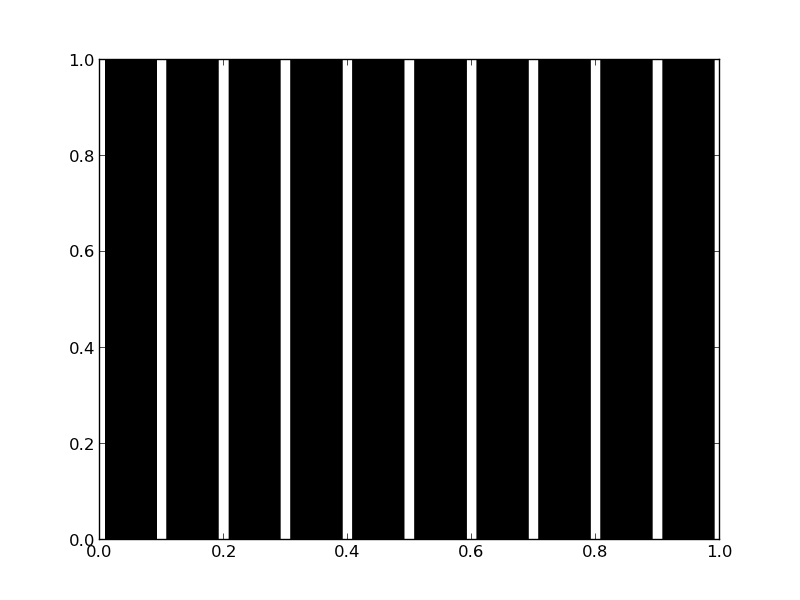
As you can see you win slightly more than you lost.
It is possible to get random integers. Here are a few examples of getting a random integer between 1 and 100. You might do this to get random indices of a list, for example.
import numpy as np print np.random.random_integers(1, 100) print np.random.random_integers(1, 100, 3) print np.random.random_integers(1, 100, (2,2))
96 [ 95 49 100] [[69 54] [41 93]]
The normal distribution is defined by \(f(x)=\frac{1}{\sqrt{2\pi \sigma^2}} \exp (-\frac{(x-\mu)^2}{2\sigma^2})\) where \(\mu\) is the mean value, and \(\sigma\) is the standard deviation. In the standard distribution, \(\mu=0\) and \(\sigma=1\).
import numpy as np mu = 1 sigma = 0.5 print np.random.normal(mu, sigma) print np.random.normal(mu, sigma, 2)
1.04225842065 [ 0.58105204 0.64853157]
Let us compare the sampled distribution to the analytical distribution. We generate a large set of samples, and calculate the probability of getting each value using the matplotlib.pyplot.hist command.
import numpy as np import matplotlib.pyplot as plt mu = 0; sigma = 1 N = 5000 samples = np.random.normal(mu, sigma, N) counts, bins, ignored = plt.hist(samples, 50, normed=True) plt.plot(bins, 1.0/np.sqrt(2 * np.pi * sigma**2)*np.exp(-((bins - mu)**2)/(2*sigma**2))) plt.savefig('images/random-thoughts-2.png')
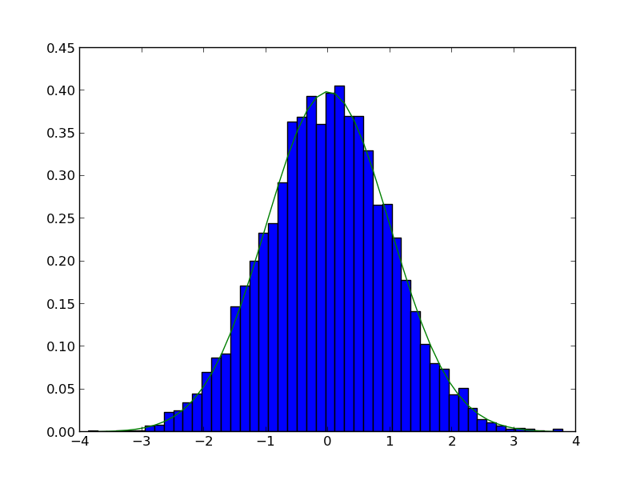
What fraction of points lie between plus and minus one standard deviation of the mean?
samples >= mu-sigma will return a vector of ones where the inequality is true, and zeros where it is not. (samples >= mu-sigma) & (samples <= mu+sigma) will return a vector of ones where there is a one in both vectors, and a zero where there is not. In other words, a vector where both inequalities are true. Finally, we can sum the vector to get the number of elements where the two inequalities are true, and finally normalize by the total number of samples to get the fraction of samples that are greater than -sigma and less than sigma.
import numpy as np import matplotlib.pyplot as plt mu = 0; sigma = 1 N = 5000 samples = np.random.normal(mu, sigma, N) a = np.sum((samples >= (mu - sigma)) & (samples <= (mu + sigma))) / float(N) b = np.sum((samples >= (mu - 2*sigma)) & (samples <= (mu + 2*sigma))) / float(N) print '{0:%} of samples are within +- standard deviations of the mean'.format(a) print '{0:%} of samples are within +- 2standard deviations of the mean'.format(b)
67.500000% of samples are within +- standard deviations of the mean 95.580000% of samples are within +- 2standard deviations of the mean
6.8.1 Summary
We only considered the numpy.random functions here, and not all of them. There are many distributions of random numbers to choose from. There are also random numbers in the python random module. Remember these are only pseudorandom numbers, but they are still useful for many applications.
7 Data analysis
7.1 Fit a line to numerical data
We want to fit a line to this data:
x = [0, 0.5, 1, 1.5, 2.0, 3.0, 4.0, 6.0, 10] y = [0, -0.157, -0.315, -0.472, -0.629, -0.942, -1.255, -1.884, -3.147]
We use the polyfit(x, y, n) command where n is the polynomial order, n=1 for a line.
import numpy as np p = np.polyfit(x, y, 1) print p slope, intercept = p print slope, intercept
>>> >>> [-0.31452218 0.00062457] >>> -0.3145221843 0.00062457337884
To show the fit, we can use numpy.polyval to evaluate the fit at many points.
import matplotlib.pyplot as plt xfit = np.linspace(0, 10) yfit = np.polyval(p, xfit) plt.plot(x, y, 'bo', label='raw data') plt.plot(xfit, yfit, 'r-', label='fit') plt.xlabel('x') plt.ylabel('y') plt.legend() plt.savefig('images/linefit-1.png')
>>> >>> >>> >>> [<matplotlib.lines.Line2D object at 0x053C1790>] [<matplotlib.lines.Line2D object at 0x0313C610>] <matplotlib.text.Text object at 0x052A4950> <matplotlib.text.Text object at 0x052B9A10> <matplotlib.legend.Legend object at 0x053C1CD0>
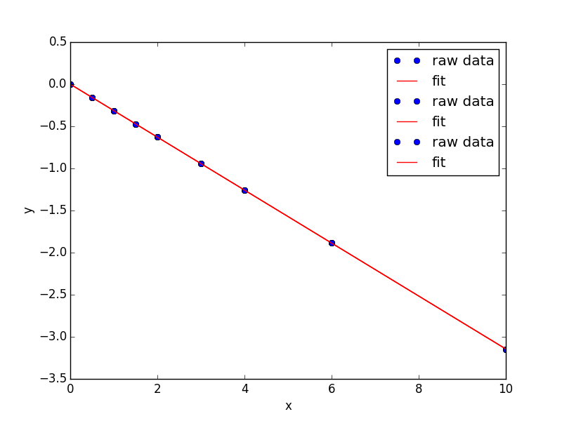
7.2 Linear least squares fitting with linear algebra
The idea here is to formulate a set of linear equations that is easy to solve. We can express the equations in terms of our unknown fitting parameters \(p_i\) as:
x1^0*p0 + x1*p1 = y1 x2^0*p0 + x2*p1 = y2 x3^0*p0 + x3*p1 = y3 etc...
Which we write in matrix form as \(A p = y\) where \(A\) is a matrix of column vectors, e.g. [1, x_i]. \(A\) is not a square matrix, so we cannot solve it as written. Instead, we form \(A^T A p = A^T y\) and solve that set of equations.
import numpy as np x = np.array([0, 0.5, 1, 1.5, 2.0, 3.0, 4.0, 6.0, 10]) y = np.array([0, -0.157, -0.315, -0.472, -0.629, -0.942, -1.255, -1.884, -3.147]) A = np.column_stack([x**0, x]) M = np.dot(A.T, A) b = np.dot(A.T, y) i1, slope1 = np.dot(np.linalg.inv(M), b) i2, slope2 = np.linalg.solve(M, b) # an alternative approach. print i1, slope1 print i2, slope2 # plot data and fit import matplotlib.pyplot as plt plt.plot(x, y, 'bo') plt.plot(x, np.dot(A, [i1, slope1]), 'r--') plt.xlabel('x') plt.ylabel('y') plt.savefig('images/la-line-fit.png')
0.00062457337884 -0.3145221843 0.00062457337884 -0.3145221843
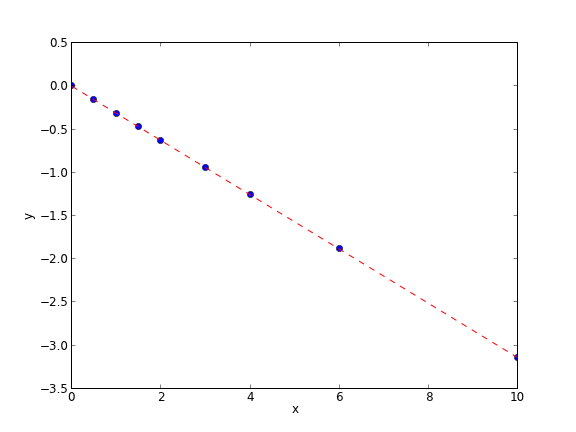
This method can be readily extended to fitting any polynomial model, or other linear model that is fit in a least squares sense. This method does not provide confidence intervals.
7.3 Linear regression with confidence intervals (updated)
Matlab post Fit a fourth order polynomial to this data and determine the confidence interval for each parameter. Data from example 5-1 in Fogler, Elements of Chemical Reaction Engineering.
We want the equation \(Ca(t) = b0 + b1*t + b2*t^2 + b3*t^3 + b4*t^4\) fit to the data in the least squares sense. We can write this in a linear algebra form as: T*p = Ca where T is a matrix of columns [1 t t^2 t^3 t^4], and p is a column vector of the fitting parameters. We want to solve for the p vector and estimate the confidence intervals.
pycse now has a regress function similar to Matlab. That function just uses the code in the next example (also seen here).
from pycse import regress import numpy as np time = np.array([0.0, 50.0, 100.0, 150.0, 200.0, 250.0, 300.0]) Ca = np.array([50.0, 38.0, 30.6, 25.6, 22.2, 19.5, 17.4])*1e-3 T = np.column_stack([time**0, time, time**2, time**3, time**4]) alpha = 0.05 p, pint, se = regress(T, Ca, alpha) print pint
[[ 4.96802466e-02 5.03002725e-02] [ -3.15461977e-04 -2.80230660e-04] [ 1.07149474e-06 1.61547491e-06] [ -4.90319669e-09 -2.06650007e-09] [ 1.35006805e-12 6.04387103e-12]]
7.4 Linear regression with confidence intervals.
Matlab post Fit a fourth order polynomial to this data and determine the confidence interval for each parameter. Data from example 5-1 in Fogler, Elements of Chemical Reaction Engineering.
We want the equation \(Ca(t) = b0 + b1*t + b2*t^2 + b3*t^3 + b4*t^4\) fit to the data in the least squares sense. We can write this in a linear algebra form as: T*p = Ca where T is a matrix of columns [1 t t^2 t^3 t^4], and p is a column vector of the fitting parameters. We want to solve for the p vector and estimate the confidence intervals.
import numpy as np from scipy.stats.distributions import t time = np.array([0.0, 50.0, 100.0, 150.0, 200.0, 250.0, 300.0]) Ca = np.array([50.0, 38.0, 30.6, 25.6, 22.2, 19.5, 17.4])*1e-3 T = np.column_stack([time**0, time, time**2, time**3, time**4]) p, res, rank, s = np.linalg.lstsq(T, Ca) # the parameters are now in p # compute the confidence intervals n = len(Ca) k = len(p) sigma2 = np.sum((Ca - np.dot(T, p))**2) / (n - k) # RMSE C = sigma2 * np.linalg.inv(np.dot(T.T, T)) # covariance matrix se = np.sqrt(np.diag(C)) # standard error alpha = 0.05 # 100*(1 - alpha) confidence level sT = t.ppf(1.0 - alpha/2.0, n - k) # student T multiplier CI = sT * se for beta, ci in zip(p, CI): print '{2: 1.2e} [{0: 1.4e} {1: 1.4e}]'.format(beta - ci, beta + ci, beta) SS_tot = np.sum((Ca - np.mean(Ca))**2) SS_err = np.sum((np.dot(T, p) - Ca)**2) # http://en.wikipedia.org/wiki/Coefficient_of_determination Rsq = 1 - SS_err/SS_tot print 'R^2 = {0}'.format(Rsq) # plot fit import matplotlib.pyplot as plt plt.plot(time, Ca, 'bo', label='raw data') plt.plot(time, np.dot(T, p), 'r-', label='fit') plt.xlabel('Time') plt.ylabel('Ca (mol/L)') plt.legend(loc='best') plt.savefig('images/linregress-conf.png')
5.00e-02 [ 4.9680e-02 5.0300e-02] -2.98e-04 [-3.1546e-04 -2.8023e-04] 1.34e-06 [ 1.0715e-06 1.6155e-06] -3.48e-09 [-4.9032e-09 -2.0665e-09] 3.70e-12 [ 1.3501e-12 6.0439e-12] R^2 = 0.999986967246
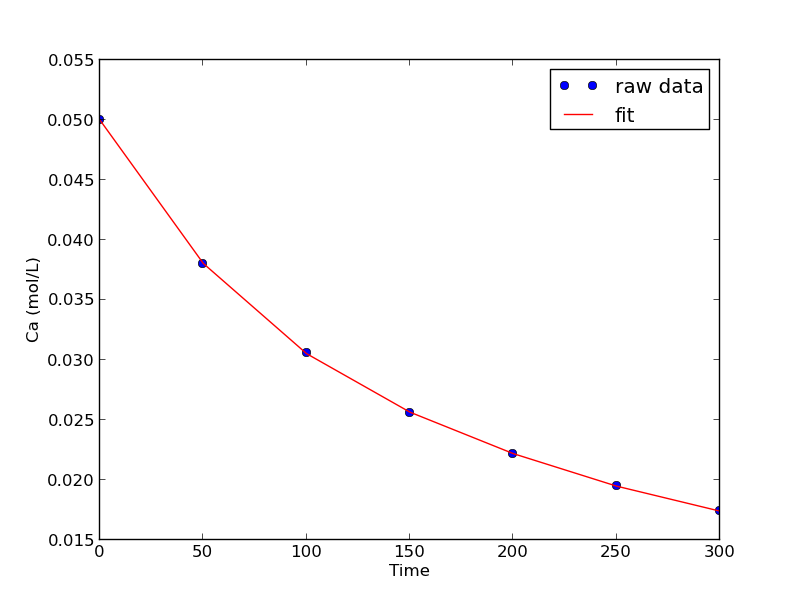
A fourth order polynomial fits the data well, with a good R^2 value. All of the parameters appear to be significant, i.e. zero is not included in any of the parameter confidence intervals. This does not mean this is the best model for the data, just that the model fits well.
7.5 Nonlinear curve fitting
Here is a typical nonlinear function fit to data. you need to provide an initial guess. In this example we fit the Birch-Murnaghan equation of state to energy vs. volume data from density functional theory calculations.
from scipy.optimize import leastsq import numpy as np vols = np.array([13.71, 14.82, 16.0, 17.23, 18.52]) energies = np.array([-56.29, -56.41, -56.46, -56.463, -56.41]) def Murnaghan(parameters, vol): 'From Phys. Rev. B 28, 5480 (1983)' E0, B0, BP, V0 = parameters E = E0 + B0 * vol / BP * (((V0 / vol)**BP) / (BP - 1) + 1) - V0 * B0 / (BP - 1.0) return E def objective(pars, y, x): #we will minimize this function err = y - Murnaghan(pars, x) return err x0 = [ -56.0, 0.54, 2.0, 16.5] #initial guess of parameters plsq = leastsq(objective, x0, args=(energies, vols)) print 'Fitted parameters = {0}'.format(plsq[0]) import matplotlib.pyplot as plt plt.plot(vols,energies, 'ro') #plot the fitted curve on top x = np.linspace(min(vols), max(vols), 50) y = Murnaghan(plsq[0], x) plt.plot(x, y, 'k-') plt.xlabel('Volume') plt.ylabel('Energy') plt.savefig('images/nonlinear-curve-fitting.png')
Fitted parameters = [-56.46839641 0.57233217 2.7407944 16.55905648]
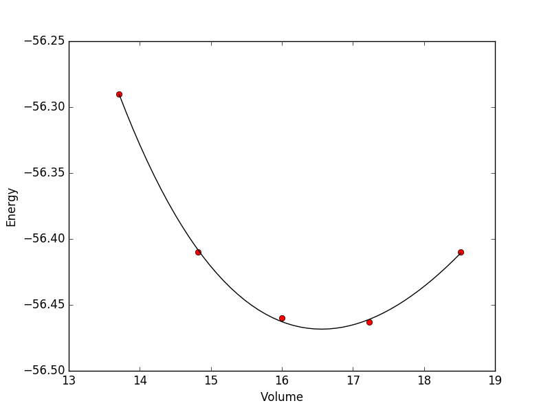
Figure 1: Example of least-squares non-linear curve fitting.
See additional examples at \url{http://docs.scipy.org/doc/scipy/reference/tutorial/optimize.html}.
7.6 Nonlinear curve fitting by direct least squares minimization
Here is an example of fitting a nonlinear function to data by direct minimization of the summed squared error.
from scipy.optimize import fmin import numpy as np volumes = np.array([13.71, 14.82, 16.0, 17.23, 18.52]) energies = np.array([-56.29, -56.41, -56.46, -56.463,-56.41]) def Murnaghan(parameters,vol): 'From PRB 28,5480 (1983' E0 = parameters[0] B0 = parameters[1] BP = parameters[2] V0 = parameters[3] E = E0 + B0*vol/BP*(((V0/vol)**BP)/(BP-1)+1) - V0*B0/(BP-1.) return E def objective(pars,vol): #we will minimize this function err = energies - Murnaghan(pars,vol) return np.sum(err**2) #we return the summed squared error directly x0 = [ -56., 0.54, 2., 16.5] #initial guess of parameters plsq = fmin(objective,x0,args=(volumes,)) #note args is a tuple print 'parameters = {0}'.format(plsq) import matplotlib.pyplot as plt plt.plot(volumes,energies,'ro') #plot the fitted curve on top x = np.linspace(min(volumes),max(volumes),50) y = Murnaghan(plsq,x) plt.plot(x,y,'k-') plt.xlabel('Volume ($\AA^3$)') plt.ylabel('Total energy (eV)') plt.savefig('images/nonlinear-fitting-lsq.png')
Optimization terminated successfully.
Current function value: 0.000020
Iterations: 137
Function evaluations: 240
parameters = [-56.46932645 0.59141447 1.9044796 16.59341303]
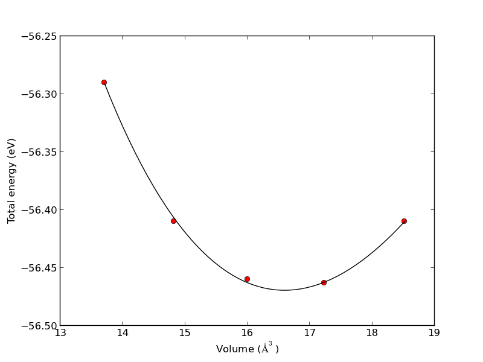
Figure 2: Fitting a nonlinear function.
7.7 Parameter estimation by directly minimizing summed squared errors
import numpy as np import matplotlib.pyplot as plt x = np.array([0.0, 1.1, 2.3, 3.1, 4.05, 6.0]) y = np.array([0.0039, 1.2270, 5.7035, 10.6472, 18.6032, 42.3024]) plt.plot(x, y) plt.xlabel('x') plt.ylabel('y') plt.savefig('images/nonlin-minsse-1.png')
>>> >>> >>> >>> >>> [<matplotlib.lines.Line2D object at 0x000000000733D898>] <matplotlib.text.Text object at 0x00000000071EC5C0> <matplotlib.text.Text object at 0x00000000071EED30>
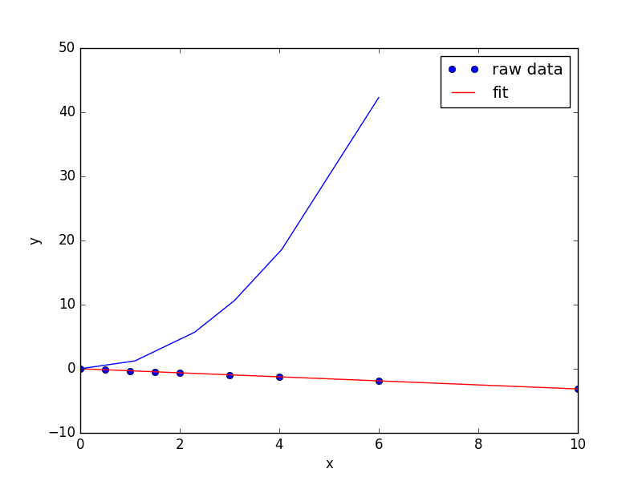
We are going to fit the function \(y = x^a\) to the data. The best \(a\) will minimize the summed squared error between the model and the fit.
def errfunc_(a): return np.sum((y - x**a)**2) errfunc = np.vectorize(errfunc_) arange = np.linspace(1, 3) sse = errfunc(arange) plt.figure() plt.plot(arange, sse) plt.xlabel('a') plt.ylabel('$\Sigma (y - y_{pred})^2$') plt.savefig('images/nonlin-minsse-2.png')
... >>> >>> >>> >>> >>> >>> <matplotlib.figure.Figure object at 0x000000000736DBA8> [<matplotlib.lines.Line2D object at 0x00000000075CBEF0>] <matplotlib.text.Text object at 0x00000000076B8C18> <matplotlib.text.Text object at 0x0000000007698BE0>
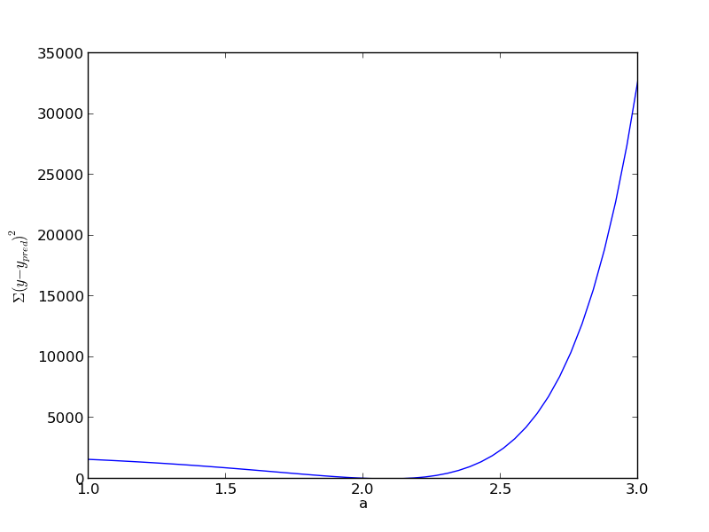
Based on the graph above, you can see a minimum in the summed squared error near \(a = 2.1\). We use that as our initial guess. Since we know the answer is bounded, we use scipy.optimize.fminbound
from scipy.optimize import fminbound amin = fminbound(errfunc, 1.0, 3.0) print amin plt.figure() plt.plot(x, y, 'bo', label='data') plt.plot(x, x**amin, 'r-', label='fit') plt.xlabel('x') plt.ylabel('y') plt.legend(loc='best') plt.savefig('images/nonlin-minsse-3.png')
>>> >>> >>> 2.09004838933 >>> <matplotlib.figure.Figure object at 0x00000000075D8470> [<matplotlib.lines.Line2D object at 0x0000000007BDFA20>] [<matplotlib.lines.Line2D object at 0x0000000007BDFC18>] <matplotlib.text.Text object at 0x0000000007BC6828> <matplotlib.text.Text object at 0x0000000007BCAF98> <matplotlib.legend.Legend object at 0x0000000007BE3128>
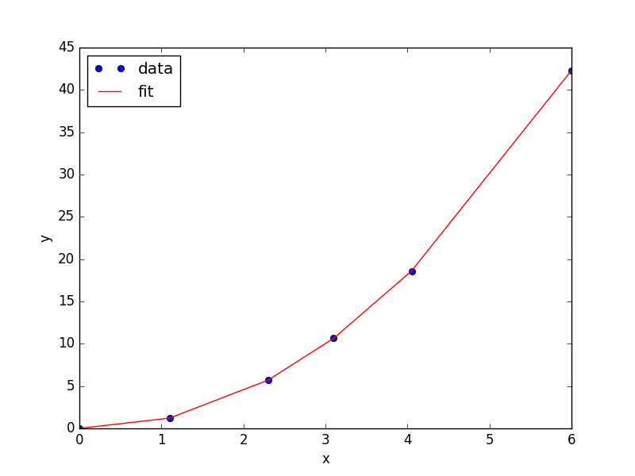
We can do nonlinear fitting by directly minimizing the summed squared error between a model and data. This method lacks some of the features of other methods, notably the simple ability to get the confidence interval. However, this method is flexible and may offer more insight into how the solution depends on the parameters.
7.8 Nonlinear curve fitting with parameter confidence intervals
We often need to estimate parameters from nonlinear regression of data. We should also consider how good the parameters are, and one way to do that is to consider the confidence interval. A confidence interval tells us a range that we are confident the true parameter lies in.
In this example we use a nonlinear curve-fitting function: scipy.optimize.curve_fit to give us the parameters in a function that we define which best fit the data. The scipy.optimize.curve_fit function also gives us the covariance matrix which we can use to estimate the standard error of each parameter. Finally, we modify the standard error by a student-t value which accounts for the additional uncertainty in our estimates due to the small number of data points we are fitting to.
We will fit the function \(y = a x / (b + x)\) to some data, and compute the 95% confidence intervals on the parameters.
# Nonlinear curve fit with confidence interval import numpy as np from scipy.optimize import curve_fit from scipy.stats.distributions import t x = np.array([0.5, 0.387, 0.24, 0.136, 0.04, 0.011]) y = np.array([1.255, 1.25, 1.189, 1.124, 0.783, 0.402]) # this is the function we want to fit to our data def func(x, a, b): 'nonlinear function in a and b to fit to data' return a * x / (b + x) initial_guess = [1.2, 0.03] pars, pcov = curve_fit(func, x, y, p0=initial_guess) alpha = 0.05 # 95% confidence interval = 100*(1-alpha) n = len(y) # number of data points p = len(pars) # number of parameters dof = max(0, n - p) # number of degrees of freedom # student-t value for the dof and confidence level tval = t.ppf(1.0-alpha/2., dof) for i, p,var in zip(range(n), pars, np.diag(pcov)): sigma = var**0.5 print 'p{0}: {1} [{2} {3}]'.format(i, p, p - sigma*tval, p + sigma*tval) import matplotlib.pyplot as plt plt.plot(x,y,'bo ') xfit = np.linspace(0,1) yfit = func(xfit, pars[0], pars[1]) plt.plot(xfit,yfit,'b-') plt.legend(['data','fit'],loc='best') plt.savefig('images/nonlin-curve-fit-ci.png')
p0: 1.32753154044 [1.30053614901 1.35452693188] p1: 0.0264615756885 [0.0236074605292 0.0293156908478] p0: 1.32753153569 [1.30053616583 1.35452690556] p1: 0.0264615749842 [0.0236074660978 0.0293156838707]
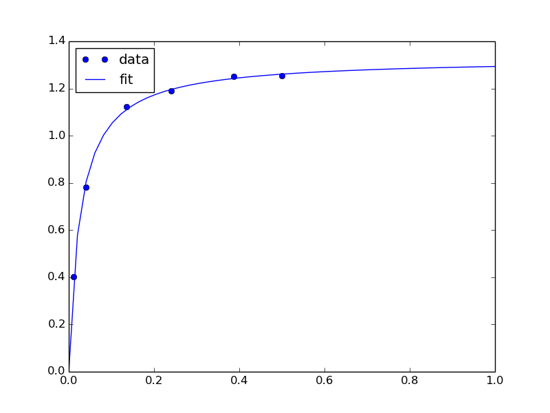
You can see by inspection that the fit looks pretty reasonable. The parameter confidence intervals are not too big, so we can be pretty confident of their values.
7.9 Nonlinear curve fitting with confidence intervals
Our goal is to fit this equation to data \(y = c1 exp(-x) + c2*x\) and compute the confidence intervals on the parameters.
This is actually could be a linear regression problem, but it is convenient to illustrate the use the nonlinear fitting routine because it makes it easy to get confidence intervals for comparison. The basic idea is to use the covariance matrix returned from the nonlinear fitting routine to estimate the student-t corrected confidence interval.
# Nonlinear curve fit with confidence interval import numpy as np from scipy.optimize import curve_fit from scipy.stats.distributions import t x = np.array([ 0.1, 0.2, 0.3, 0.4, 0.5, 0.6, 0.7, 0.8, 0.9, 1. ]) y = np.array([ 4.70192769, 4.46826356, 4.57021389, 4.29240134, 3.88155125, 3.78382253, 3.65454727, 3.86379487, 4.16428541, 4.06079909]) # this is the function we want to fit to our data def func(x,c0, c1): return c0 * np.exp(-x) + c1*x pars, pcov = curve_fit(func, x, y, p0=[4.96, 2.11]) alpha = 0.05 # 95% confidence interval n = len(y) # number of data points p = len(pars) # number of parameters dof = max(0, n-p) # number of degrees of freedom tval = t.ppf(1.0 - alpha / 2.0, dof) # student-t value for the dof and confidence level for i, p,var in zip(range(n), pars, np.diag(pcov)): sigma = var**0.5 print 'c{0}: {1} [{2} {3}]'.format(i, p, p - sigma*tval, p + sigma*tval) import matplotlib.pyplot as plt plt.plot(x,y,'bo ') xfit = np.linspace(0,1) yfit = func(xfit, pars[0], pars[1]) plt.plot(xfit,yfit,'b-') plt.legend(['data','fit'],loc='best') plt.savefig('images/nonlin-fit-ci.png')
c0: 4.96713966439 [4.62674476567 5.30753456311] c1: 2.10995112628 [1.76711622427 2.45278602828]

Figure 3: Nonlinear fit to data.
7.10 Graphical methods to help get initial guesses for multivariate nonlinear regression
Fit the model f(x1,x2; a,b) = a*x1 + x2^b to the data given below. This model has two independent variables, and two parameters.
We want to do a nonlinear fit to find a and b that minimize the summed squared errors between the model predictions and the data. With only two variables, we can graph how the summed squared error varies with the parameters, which may help us get initial guesses. Let us assume the parameters lie in a range, here we choose 0 to 5. In other problems you would adjust this as needed.
import numpy as np from mpl_toolkits.mplot3d import Axes3D import matplotlib.pyplot as plt x1 = [1.0, 2.0, 3.0, 4.0, 5.0, 6.0] x2 = [0.2, 0.4, 0.8, 0.9, 1.1, 2.1] X = np.column_stack([x1, x2]) # independent variables f = [ 3.3079, 6.6358, 10.3143, 13.6492, 17.2755, 23.6271] fig = plt.figure() ax = fig.gca(projection = '3d') ax.plot(x1, x2, f) ax.set_xlabel('x1') ax.set_ylabel('x2') ax.set_zlabel('f(x1,x2)') plt.savefig('images/graphical-mulvar-1.png') arange = np.linspace(0,5); brange = np.linspace(0,5); A,B = np.meshgrid(arange, brange) def model(X, a, b): 'Nested function for the model' x1 = X[:, 0] x2 = X[:, 1] f = a * x1 + x2**b return f @np.vectorize def errfunc(a, b): # function for the summed squared error fit = model(X, a, b) sse = np.sum((fit - f)**2) return sse SSE = errfunc(A, B) plt.clf() plt.contourf(A, B, SSE, 50) plt.plot([3.2], [2.1], 'ro') plt.figtext( 3.4, 2.2, 'Minimum near here', color='r') plt.savefig('images/graphical-mulvar-2.png') guesses = [3.18, 2.02] from scipy.optimize import curve_fit popt, pcov = curve_fit(model, X, f, guesses) print popt plt.plot([popt[0]], [popt[1]], 'r*') plt.savefig('images/graphical-mulvar-3.png') print model(X, *popt) fig = plt.figure() ax = fig.gca(projection = '3d') ax.plot(x1, x2, f, 'ko', label='data') ax.plot(x1, x2, model(X, *popt), 'r-', label='fit') ax.set_xlabel('x1') ax.set_ylabel('x2') ax.set_zlabel('f(x1,x2)') plt.savefig('images/graphical-mulvar-4.png')
[ 3.21694798 1.9728254 ] [ 3.25873623 6.59792994 10.29473657 13.68011436 17.29161001 23.62366445]
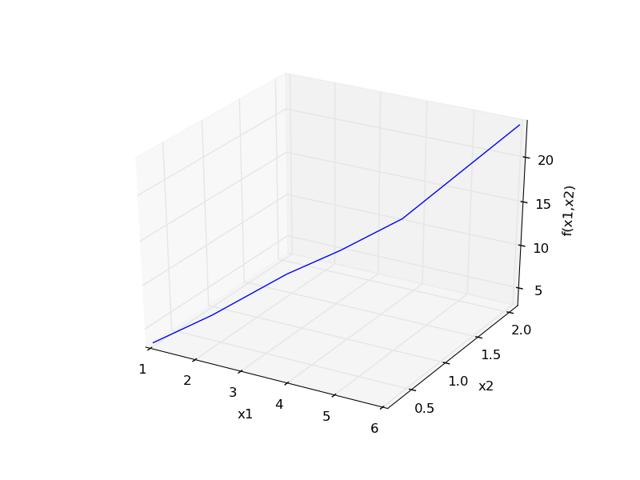

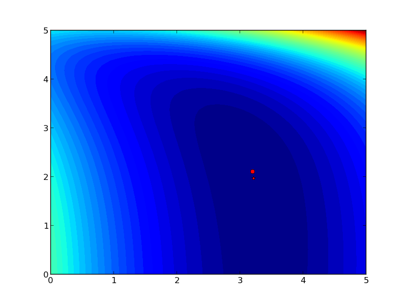

It can be difficult to figure out initial guesses for nonlinear fitting problems. For one and two dimensional systems, graphical techniques may be useful to visualize how the summed squared error between the model and data depends on the parameters.
7.11 Fitting a numerical ODE solution to data
Suppose we know the concentration of A follows this differential equation: \(\frac{dC_A}{dt} = -k C_A\), and we have data we want to fit to it. Here is an example of doing that.
import numpy as np from scipy.optimize import curve_fit from scipy.integrate import odeint # given data we want to fit tspan = [0, 0.1, 0.2, 0.4, 0.8, 1] Ca_data = [2.0081, 1.5512, 1.1903, 0.7160, 0.2562, 0.1495] def fitfunc(t, k): 'Function that returns Ca computed from an ODE for a k' def myode(Ca, t): return -k * Ca Ca0 = Ca_data[0] Casol = odeint(myode, Ca0, t) return Casol[:,0] k_fit, kcov = curve_fit(fitfunc, tspan, Ca_data, p0=1.3) print k_fit tfit = np.linspace(0,1); fit = fitfunc(tfit, k_fit) import matplotlib.pyplot as plt plt.plot(tspan, Ca_data, 'ro', label='data') plt.plot(tfit, fit, 'b-', label='fit') plt.legend(loc='best') plt.savefig('images/ode-fit.png')
[ 2.58893455]
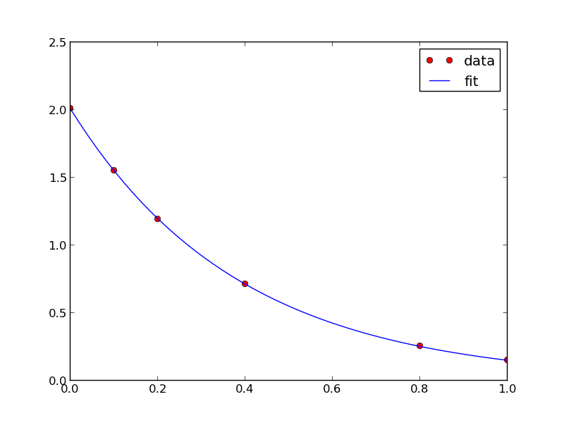
7.12 Reading in delimited text files
sometimes you will get data in a delimited text file format, .e.g. separated by commas or tabs. Matlab can read these in easily. Suppose we have a file containing this data:
1 3 3 4 5 6 4 8
It is easy to read this directly into variables like this:
import numpy as np x,y = np.loadtxt('data/testdata.txt', unpack=True) print x,y
[ 1. 3. 5. 4.] [ 3. 4. 6. 8.]
8 Interpolation
8.1 Better interpolate than never
We often have some data that we have obtained in the lab, and we want to solve some problem using the data. For example, suppose we have this data that describes the value of f at time t.
import matplotlib.pyplot as plt t = [0.5, 1, 3, 6] f = [0.6065, 0.3679, 0.0498, 0.0025] plt.plot(t,f) plt.xlabel('t') plt.ylabel('f(t)') plt.savefig('images/interpolate-1.png')
>>> >>> >>> [<matplotlib.lines.Line2D object at 0x04D18730>] <matplotlib.text.Text object at 0x04BEE8B0> <matplotlib.text.Text object at 0x04C03970>
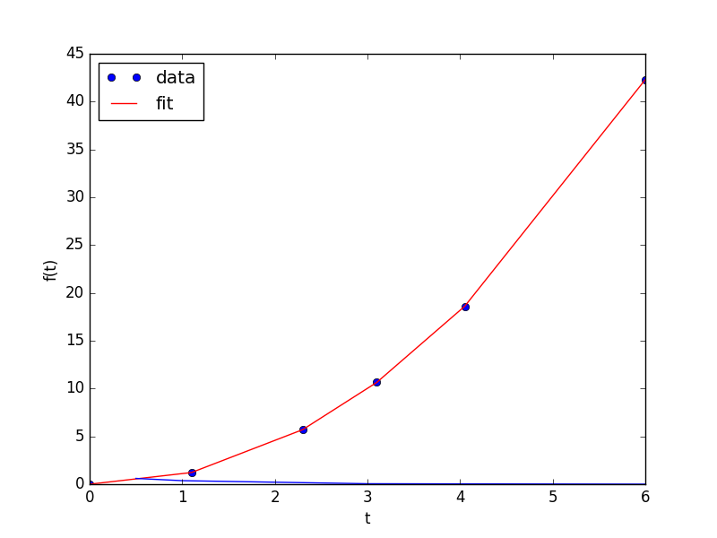
8.1.1 Estimate the value of f at t=2.
This is a simple interpolation problem.
from scipy.interpolate import interp1d g = interp1d(t, f) # default is linear interpolation print g(2) print g([2, 3, 4])
>>> >>> >>> 0.20885 [ 0.20885 0.0498 0.03403333]
The function we sample above is actually f(t) = exp(-t). The linearly interpolated example is not too accurate.
import numpy as np print np.exp(-2)
0.135335283237
8.1.2 improved interpolation?
we can tell interp1d to use a different interpolation scheme such as cubic polynomial splines like this. For nonlinear functions, this may improve the accuracy of the interpolation, as it implicitly includes information about the curvature by fitting a cubic polynomial over neighboring points.
g2 = interp1d(t, f, 'cubic') print g2(2) print g2([2, 3, 4])
0.108481818182 [ 0.10848182 0.0498 0.08428727]
Interestingly, this is a different value than Matlab's cubic interpolation. Let us show the cubic spline fit.
plt.figure() plt.plot(t,f) plt.xlabel('t') plt.ylabel('f(t)') x = np.linspace(0.5, 6) fit = g2(x) plt.plot(x, fit, label='fit') plt.savefig('images/interpolation-2.png')
<matplotlib.figure.Figure object at 0x04EF2430> [<matplotlib.lines.Line2D object at 0x04F20ED0>] <matplotlib.text.Text object at 0x04EF2FF0> <matplotlib.text.Text object at 0x04F060D0> >>> >>> >>> [<matplotlib.lines.Line2D object at 0x04F17570>]
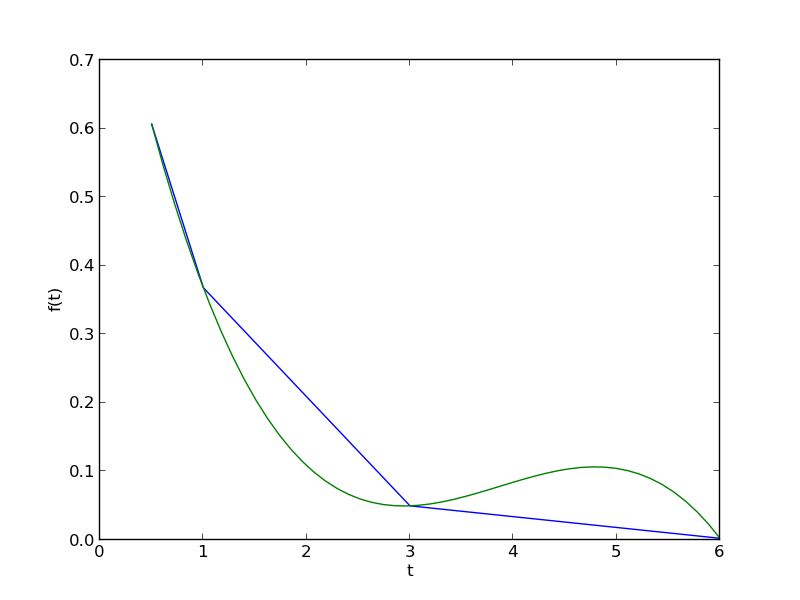
Wow. That is a weird looking fit. Very different from what Matlab produces. This is a good teaching moment not to rely blindly on interpolation! We will rely on the linear interpolation from here out which behaves predictably.
{kind=link}
8.1.3 The inverse question
It is easy to interpolate a new value of f given a value of t. What if we want to know the time that f=0.2? We can approach this a few ways.
8.1.3.1 method 1
We setup a function that we can use fsolve on. The function will be equal to zero at the time. The second function will look like 0 = 0.2 - f(t). The answer for 0.2=exp(-t) is t = 1.6094. Since we use interpolation here, we will get an approximate answer.
from scipy.optimize import fsolve def func(t): return 0.2 - g(t) initial_guess = 2 ans, = fsolve(func, initial_guess) print ans
>>> ... ... >>> >>> >>> 2.0556428796
8.1.3.2 method 2: switch the interpolation order
We can switch the order of the interpolation to solve this problem. An issue we have to address in this method is that the "x" values must be monotonically increasing. It is somewhat subtle to reverse a list in python. I will use the cryptic syntax of [::-1] instead of the list.reverse() function or reversed() function. list.reverse() actually reverses the list "in place", which changes the contents of the variable. That is not what I want. reversed() returns an iterator which is also not what I want. [::-1] is a fancy indexing trick that returns a reversed list.
g3 = interp1d(f[::-1], t[::-1]) print g3(0.2)
>>> 2.0556428796
8.1.4 A harder problem
Suppose we want to know at what time is 1/f = 100? Now we have to decide what do we interpolate: f(t) or 1/f(t). Let us look at both ways and decide what is best. The answer to \(1/exp(-t) = 100\) is 4.6052
8.1.4.1 interpolate on f(t) then invert the interpolated number
def func(t): 'objective function. we do some error bounds because we cannot interpolate out of the range.' if t < 0.5: t=0.5 if t > 6: t = 6 return 100 - 1.0 / g(t) initial_guess = 4.5 a1, = fsolve(func, initial_guess) print a1 print 'The %error is {0:%}'.format((a1 - 4.6052)/4.6052)
... ... ... ... >>> >>> >>> 5.52431289641 The %error is 19.958154%
8.1.4.2 invert f(t) then interpolate on 1/f
ig = interp1d(t, 1.0 / np.array(f)) def ifunc(t): if t < 0.5: t=0.5 if t > 6: t = 6 return 100 - ig(t) initial_guess = 4.5 a2, = fsolve(ifunc, initial_guess) print a2 print 'The %error is {0:%}'.format((a2 - 4.6052)/4.6052)
>>> ... ... ... ... >>> >>> >>> 3.6310782241 The %error is -21.152649%
8.1.5 Discussion
In this case you get different errors, one overestimates and one underestimates the answer, and by a lot: ± 20%. Let us look at what is happening.
import matplotlib.pyplot as plt import numpy as np from scipy.interpolate import interp1d t = [0.5, 1, 3, 6] f = [0.6065, 0.3679, 0.0498, 0.0025] x = np.linspace(0.5, 6) g = interp1d(t, f) # default is linear interpolation ig = interp1d(t, 1.0 / np.array(f)) plt.figure() plt.plot(t, 1 / np.array(f), 'ko ', label='data') plt.plot(x, 1 / g(x), label='1/interpolated f(x)') plt.plot(x, ig(x), label='interpolate on 1/f(x)') plt.plot(x, 1 / np.exp(-x), 'k--', label='1/exp(-x)') plt.xlabel('t') plt.ylabel('1/f(t)') plt.legend(loc='best') plt.savefig('images/interpolation-3.png')
You can see that the 1/interpolated f(x) underestimates the value, while interpolated (1/f(x)) overestimates the value. This is an example of where you clearly need more data in that range to make good estimates. Neither interpolation method is doing a great job. The trouble in reality is that you often do not know the real function to do this analysis. Here you can say the time is probably between 3.6 and 5.5 where 1/f(t) = 100, but you can not read much more than that into it. If you need a more precise answer, you need better data, or you need to use an approach other than interpolation. For example, you could fit an exponential function to the data and use that to estimate values at other times.
So which is the best to interpolate? I think you should interpolate the quantity that is linear in the problem you want to solve, so in this case I think interpolating 1/f(x) is better. When you use an interpolated function in a nonlinear function, strange, unintuitive things can happen. That is why the blue curve looks odd. Between data points are linear segments in the original interpolation, but when you invert them, you cause the curvature to form.
8.2 Interpolation of data
When we have data at two points but we need data in between them we use interpolation. Suppose we have the points (4,3) and (6,2) and we want to know the value of y at x=4.65, assuming y varies linearly between these points. we use the interp1d command to achieve this. The syntax in python is slightly different than in matlab.
from scipy.interpolate import interp1d x = [4, 6] y = [3, 2] ifunc = interp1d(x, y) print ifunc(4.65) ifunc = interp1d(x, y, bounds_error=False) # do not raise error on out of bounds print ifunc([4.65, 5.01, 4.2, 9])
2.675 [ 2.675 2.495 2.9 nan]
The default interpolation method is simple linear interpolation between points. Other methods exist too, such as fitting a cubic spline to the data and using the spline representation to interpolate from.
from scipy.interpolate import interp1d x = [1, 2, 3, 4]; y = [1, 4, 9, 16]; # y = x^2 xi = [ 1.5, 2.5, 3.5]; # we want to interpolate on these values y1 = interp1d(x,y) print y1(xi) y2 = interp1d(x,y,'cubic') print y2(xi) import numpy as np print np.array(xi)**2
[ 2.5 6.5 12.5] [ 2.25 6.25 12.25] [ 2.25 6.25 12.25]
In this case the cubic spline interpolation is more accurate than the linear interpolation. That is because the underlying data was polynomial in nature, and a spline is like a polynomial. That may not always be the case, and you need some engineering judgement to know which method is best.
8.3 Interpolation with splines
When you do not know the functional form of data to fit an equation, you can still fit/interpolate with splines.
# use splines to fit and interpolate data from scipy.interpolate import interp1d from scipy.optimize import fmin import numpy as np import matplotlib.pyplot as plt x = np.array([ 0, 1, 2, 3, 4 ]) y = np.array([ 0., 0.308, 0.55, 0.546, 0.44 ]) # create the interpolating function f = interp1d(x, y, kind='cubic', bounds_error=False) # to find the maximum, we minimize the negative of the function. We # cannot just multiply f by -1, so we create a new function here. f2 = interp1d(x, -y, kind='cubic') xmax = fmin(f2, 2.5) xfit = np.linspace(0,4) plt.plot(x,y,'bo') plt.plot(xfit, f(xfit),'r-') plt.plot(xmax, f(xmax),'g*') plt.legend(['data','fit','max'], loc='best', numpoints=1) plt.xlabel('x data') plt.ylabel('y data') plt.title('Max point = ({0:1.2f}, {1:1.2f})'.format(float(xmax), float(f(xmax)))) plt.savefig('images/splinefit.png')
Optimization terminated successfully.
Current function value: -0.575712
Iterations: 12
Function evaluations: 24
Figure 4: Illustration of a spline fit to data and finding the maximum point.
There are other good examples at http://docs.scipy.org/doc/scipy/reference/tutorial/interpolate.html
9 Optimization
9.1 Constrained optimization
adapted from http://en.wikipedia.org/wiki/Lagrange_multipliers.
Suppose we seek to minimize the function \(f(x,y)=x+y\) subject to the constraint that \(x^2 + y^2 = 1\). The function we seek to maximize is an unbounded plane, while the constraint is a unit circle. We could setup a Lagrange multiplier approach to solving this problem, but we will use a constrained optimization approach instead.
from scipy.optimize import fmin_slsqp def objective(X): x, y = X return x + y def eqc(X): 'equality constraint' x, y = X return x**2 + y**2 - 1.0 X0 = [-1, -1] X = fmin_slsqp(objective, X0, eqcons=[eqc]) print X
Optimization terminated successfully. (Exit mode 0)
Current function value: -1.41421356237
Iterations: 5
Function evaluations: 20
Gradient evaluations: 5
[-0.70710678 -0.70710678]
9.2 Using Lagrange multipliers in optimization
Matlab post (adapted from http://en.wikipedia.org/wiki/Lagrange_multipliers.)
Suppose we seek to maximize the function \(f(x,y)=x+y\) subject to the constraint that \(x^2 + y^2 = 1\). The function we seek to maximize is an unbounded plane, while the constraint is a unit circle. We want the maximum value of the circle, on the plane. We plot these two functions here.
import numpy as np x = np.linspace(-1.5, 1.5) [X, Y] = np.meshgrid(x, x) import matplotlib as mpl from mpl_toolkits.mplot3d import Axes3D import matplotlib.pyplot as plt fig = plt.figure() ax = fig.gca(projection='3d') ax.plot_surface(X, Y, X + Y) theta = np.linspace(0,2*np.pi); R = 1.0 x1 = R * np.cos(theta) y1 = R * np.sin(theta) ax.plot(x1, y1, x1 + y1, 'r-') plt.savefig('images/lagrange-1.png')
9.2.1 Construct the Lagrange multiplier augmented function
To find the maximum, we construct the following function: \(\Lambda(x,y; \lambda) = f(x,y)+\lambda g(x,y)\) where \(g(x,y) = x^2 + y^2 - 1 = 0\), which is the constraint function. Since \(g(x,y)=0\), we are not really changing the original function, provided that the constraint is met!
import numpy as np def func(X): x = X[0] y = X[1] L = X[2] # this is the multiplier. lambda is a reserved keyword in python return x + y + L * (x**2 + y**2 - 1)
9.2.2 Finding the partial derivatives
The minima/maxima of the augmented function are located where all of the partial derivatives of the augmented function are equal to zero, i.e. \(\partial \Lambda/\partial x = 0\), \(\partial \Lambda/\partial y = 0\), and \(\partial \Lambda/\partial \lambda = 0\). the process for solving this is usually to analytically evaluate the partial derivatives, and then solve the unconstrained resulting equations, which may be nonlinear.
Rather than perform the analytical differentiation, here we develop a way to numerically approximate the partial derivatives.
def dfunc(X): dLambda = np.zeros(len(X)) h = 1e-3 # this is the step size used in the finite difference. for i in range(len(X)): dX = np.zeros(len(X)) dX[i] = h dLambda[i] = (func(X+dX)-func(X-dX))/(2*h); return dLambda
9.2.3 Now we solve for the zeros in the partial derivatives
The function we defined above (dfunc) will equal zero at a maximum or minimum. It turns out there are two solutions to this problem, but only one of them is the maximum value. Which solution you get depends on the initial guess provided to the solver. Here we have to use some judgement to identify the maximum.
from scipy.optimize import fsolve # this is the max X1 = fsolve(dfunc, [1, 1, 0]) print X1, func(X1) # this is the min X2 = fsolve(dfunc, [-1, -1, 0]) print X2, func(X2)
>>> ... >>> [ 0.70710678 0.70710678 -0.70710678] 1.41421356237 >>> ... >>> [-0.70710678 -0.70710678 0.70710678] -1.41421356237
9.2.4 Summary
Three dimensional plots in matplotlib are a little more difficult than in Matlab (where the code is almost the same as 2D plots, just different commands, e.g. plot vs plot3). In Matplotlib you have to import additional modules in the right order, and use the object oriented approach to plotting as shown here.
9.3 Linear programming example with inequality constraints
adapted from http://www.matrixlab-examples.com/linear-programming.html which solves this problem with fminsearch.
Let us suppose that a merry farmer has 75 roods (4 roods = 1 acre) on which to plant two crops: wheat and corn. To produce these crops, it costs the farmer (for seed, water, fertilizer, etc. ) $120 per rood for the wheat, and $210 per rood for the corn. The farmer has $15,000 available for expenses, but after the harvest the farmer must store the crops while awaiting favorable or good market conditions. The farmer has storage space for 4,000 bushels. Each rood yields an average of 110 bushels of wheat or 30 bushels of corn. If the net profit per bushel of wheat (after all the expenses) is $1.30 and for corn is $2.00, how should the merry farmer plant the 75 roods to maximize profit?
Let \(x\) be the number of roods of wheat planted, and \(y\) be the number of roods of corn planted. The profit function is: \( P = (110)($1.3)x + (30)($2)y = 143x + 60y \)
There are some constraint inequalities, specified by the limits on expenses, storage and roodage. They are:
\(\$120x + \$210y <= \$15000\) (The total amount spent cannot exceed the amount the farm has)
\(110x + 30y <= 4000\) (The amount generated should not exceed storage space.)
\(x + y <= 75\) (We cannot plant more space than we have.)
\(0 <= x and 0 <= y \) (all amounts of planted land must be positive.)
To solve this problem, we cast it as a linear programming problem, which minimizes a function f(X) subject to some constraints. We create a proxy function for the negative of profit, which we seek to minimize.
f = -(143*x + 60*y)
from scipy.optimize import fmin_cobyla def objective(X): '''objective function to minimize. It is the negative of profit, which we seek to maximize.''' x, y = X return -(143*x + 60*y) def c1(X): 'Ensure 120x + 210y <= 15000' x,y = X return 15000 - 120 * x - 210*y def c2(X): 'ensure 110x + 30y <= 4000' x,y = X return 4000 - 110*x - 30 * y def c3(X): 'Ensure x + y is less than or equal to 75' x,y = X return 75 - x - y def c4(X): 'Ensure x >= 0' return X[0] def c5(X): 'Ensure y >= 0' return X[1] X = fmin_cobyla(objective, x0=[20, 30], cons=[c1, c2, c3, c4, c5]) print 'We should plant {0:1.2f} roods of wheat.'.format(X[0]) print 'We should plant {0:1.2f} roods of corn'.format(X[1]) print 'The maximum profit we can earn is ${0:1.2f}.'.format(-objective(X))
Normal return from subroutine COBYLA NFVALS = 40 F =-6.315625E+03 MAXCV = 4.547474E-13 X = 2.187500E+01 5.312500E+01 We should plant 21.88 roods of wheat. We should plant 53.12 roods of corn The maximum profit we can earn is $6315.62.
This code is not exactly the same as the original post, but we get to the same answer. The linear programming capability in scipy is currently somewhat limited in 0.10. It is a little better in 0.11, but probably not as advanced as Matlab. There are some external libraries available:
9.4 Find the minimum distance from a point to a curve.
A problem that can be cast as a constrained minimization problem is to find the minimum distance from a point to a curve. Suppose we have \(f(x) = x^2\), and the point (0.5, 2). what is the minimum distance from that point to \(f(x)\)?
import numpy as np import matplotlib.pyplot as plt from scipy.optimize import fmin_cobyla P = (0.5, 2) def f(x): return x**2 def objective(X): x,y = X return np.sqrt((x - P[0])**2 + (y - P[1])**2) def c1(X): x,y = X return f(x) - y X = fmin_cobyla(objective, x0=[0.5,0.5], cons=[c1]) print 'The minimum distance is {0:1.2f}'.format(objective(X)) # Verify the vector to this point is normal to the tangent of the curve # position vector from curve to point v1 = np.array(P) - np.array(X) # position vector v2 = np.array([1, 2.0 * X[0]]) print 'dot(v1, v2) = ',np.dot(v1, v2) x = np.linspace(-2, 2, 100) plt.plot(x, f(x), 'r-', label='f(x)') plt.plot(P[0], P[1], 'bo', label='point') plt.plot([P[0], X[0]], [P[1], X[1]], 'b-', label='shortest distance') plt.plot([X[0], X[0] + 1], [X[1], X[1] + 2.0 * X[0]], 'g-', label='tangent') plt.axis('equal') plt.xlabel('x') plt.ylabel('y') plt.legend(loc='best') plt.savefig('images/min-dist-p-func.png')
The minimum distance is 0.86 dot(v1, v2) = 0.000336477214214 Normal return from subroutine COBYLA NFVALS = 44 F = 8.579598E-01 MAXCV = 0.000000E+00 X = 1.300793E+00 1.692061E+00
In the code above, we demonstrate that the point we find on the curve that minimizes the distance satisfies the property that a vector from that point to our other point is normal to the tangent of the curve at that point. This is shown by the fact that the dot product of the two vectors is very close to zero. It is not zero because of the accuracy criteria that is used to stop the minimization is not high enough.
10 Differential equations
The key to successfully solving many differential equations is correctly classifying the equations, putting them into a standard form and then picking the appropriate solver. You must be able to determine if an equation is:
- An ordinary differential equation \(Y' = f(x, Y)\) with
- initial values (good support in python/numpy/scipy)
- boundary values (not difficult to write code for simple cases)
- Delay differential equation
- Differential algebraic equations
- A partial differential equation
The following sections will illustrate the methods for solving these kinds of equations.
10.1 Ordinary differential equations
10.1.1 Numerical solution to a simple ode
Integrate this ordinary differential equation (ode):
$$\frac{dy}{dt} = y(t)$$
over the time span of 0 to 2. The initial condition is y(0) = 1.
to solve this equation, you need to create a function of the form: dydt = f(y, t) and then use one of the odesolvers, e.g. odeint.
import numpy as np from scipy.integrate import odeint import matplotlib.pyplot as plt def fprime(y,t): return y tspan = np.linspace(0, 2) y0 = 1 ysol = odeint(fprime, y0, tspan) plt.figure(figsize=(4,3)) plt.plot(tspan, ysol, label='numerical solution') plt.plot(tspan, np.exp(tspan), 'r--', label='analytical solution') plt.xlabel('time') plt.ylabel('y(t)') plt.legend(loc='best') plt.savefig('images/simple-ode.png')
The numerical and analytical solutions agree.
Now, suppose you want to know at what time is the solution equal to 3? There are several approaches to this, including setting up a solver, or using an event like approach to stop integration at y=3. A simple approach is to use reverse interpolation. We simply reverse the x and y vectors so that y is the independent variable, and we interpolate the corresponding x-value.
import numpy as np from scipy.integrate import odeint import matplotlib.pyplot as plt def fprime(y,t): return y tspan = np.linspace(0, 2) y0 = 1 ysol = odeint(fprime, y0, tspan) from scipy.interpolate import interp1d ip = interp1d(ysol[:,0], tspan) # reverse interpolation print 'y = 3 at x = {0}'.format(ip(3))
y = 3 at x = 1.09854780564
10.1.2 Plotting ODE solutions in cylindrical coordinates
It is straightforward to plot functions in Cartesian coordinates. It is less convenient to plot them in cylindrical coordinates. Here we solve an ODE in cylindrical coordinates, and then convert the solution to Cartesian coordinates for simple plotting.
import numpy as np from scipy.integrate import odeint def dfdt(F, t): rho, theta, z = F drhodt = 0 # constant radius dthetadt = 1 # constant angular velocity dzdt = -1 # constant dropping velocity return [drhodt, dthetadt, dzdt] # initial conditions rho0 = 1 theta0 = 0 z0 = 100 tspan = np.linspace(0, 50, 500) sol = odeint(dfdt, [rho0, theta0, z0], tspan) rho = sol[:,0] theta = sol[:,1] z = sol[:,2] # convert cylindrical coords to cartesian for plotting. X = rho * np.cos(theta) Y = rho * np.sin(theta) from mpl_toolkits.mplot3d import Axes3D import matplotlib.pyplot as plt fig = plt.figure() ax = fig.gca(projection='3d') ax.plot(X, Y, z) plt.savefig('images/ode-cylindrical.png')

10.1.3 ODEs with discontinuous forcing functions
Adapted from http://archives.math.utk.edu/ICTCM/VOL18/S046/paper.pdf
A mixing tank initially contains 300 g of salt mixed into 1000 L of water. At t=0 min, a solution of 4 g/L salt enters the tank at 6 L/min. At t=10 min, the solution is changed to 2 g/L salt, still entering at 6 L/min. The tank is well stirred, and the tank solution leaves at a rate of 6 L/min. Plot the concentration of salt (g/L) in the tank as a function of time.
A mass balance on the salt in the tank leads to this differential equation: \(\frac{dM_S}{dt} = \nu C_{S,in}(t) - \nu M_S/V\) with the initial condition that \(M_S(t=0)=300\). The wrinkle is that the inlet conditions are not constant.
$$C_{S,in}(t) = \begin{array}{ll} 0 & t \le 0, \\ 4 & 0 < t \le 10, \\ 2 & t > 10. \end{array}$$
import numpy as np from scipy.integrate import odeint import matplotlib.pyplot as plt V = 1000.0 # L nu = 6.0 # L/min def Cs_in(t): 'inlet concentration' if t < 0: Cs = 0.0 # g/L elif (t > 0) and (t <= 10): Cs = 4.0 else: Cs = 2.0 return Cs def mass_balance(Ms, t): '$\frac{dM_S}{dt} = \nu C_{S,in}(t) - \nu M_S/V$' dMsdt = nu * Cs_in(t) - nu * Ms / V return dMsdt tspan = np.linspace(0.0, 15.0, 50) M0 = 300.0 # gm salt Ms = odeint(mass_balance, M0, tspan) plt.plot(tspan, Ms/V, 'b.-') plt.xlabel('Time (min)') plt.ylabel('Salt concentration (g/L)') plt.savefig('images/ode-discont.png')
You can see the discontinuity in the salt concentration at 10 minutes due to the discontinous change in the entering salt concentration.
10.1.4 Simulating the events feature of Matlab's ode solvers
The ode solvers in Matlab allow you create functions that define events that can stop the integration, detect roots, etc… We will explore how to get a similar effect in python. Here is an example that somewhat does this, but it is only an approximation. We will manually integrate the ODE, adjusting the time step in each iteration to zero in on the solution. When the desired accuracy is reached, we stop the integration.
It does not appear that events are supported in scipy. A solution is at http://mail.scipy.org/pipermail/scipy-dev/2005-July/003078.html, but it does not appear integrated into scipy yet (8 years later ;).
import numpy as np from scipy.integrate import odeint def dCadt(Ca, t): "the ode function" k = 0.23 return -k * Ca**2 Ca0 = 2.3 # create lists to store time span and solution tspan = [0, ] sol = [Ca0,] i = 0 while i < 100: # take max of 100 steps t1 = tspan[i] Ca = sol[i] # pick the next time using a Newton-Raphson method # we want f(t, Ca) = (Ca(t) - 1)**2 = 0 # df/dt = df/dCa dCa/dt # = 2*(Ca - 1) * dCadt t2 = t1 - (Ca - 1.0)**2 / (2 * (Ca - 1) *dCadt(Ca, t1)) f = odeint(dCadt, Ca, [t1, t2]) if np.abs(Ca - 1.0) <= 1e-4: print 'Solution reached at i = {0}'.format(i) break tspan += [t2] sol.append(f[-1][0]) i += 1 print 'At t={0:1.2f} Ca = {1:1.3f}'.format(tspan[-1], sol[-1]) import matplotlib.pyplot as plt plt.plot(tspan, sol, 'bo') plt.show()
Solution reached at i = 15 At t=2.46 Ca = 1.000
This particular solution works for this example, probably because it is well behaved. It is "downhill" to the desired solution. It is not obvious this would work for every example, and it is certainly possible the algorithm could go "backward" in time. A better approach might be to integrate forward until you detect a sign change in your event function, and then refine it in a separate loop.
I like the events integration in Matlab better, but this is actually pretty functional. It should not be too hard to use this for root counting, e.g. by counting sign changes. It would be considerably harder to get the actual roots. It might also be hard to get the positions of events that include the sign or value of the derivatives at the event points.
ODE solving in Matlab is considerably more advanced in functionality than in scipy. There do seem to be some extra packages, e.g. pydstools, scikits.odes that add extra ode functionality.
10.1.5 Mimicking ode events in python
The ODE functions in scipy.integrate do not directly support events like the functions in Matlab do. We can achieve something like it though, by digging into the guts of the solver, and writing a little code. In previous example I used an event to count the number of roots in a function by integrating the derivative of the function.
import numpy as np from scipy.integrate import odeint def myode(f, x): return 3*x**2 + 12*x -4 def event(f, x): 'an event is when f = 0' return f # initial conditions x0 = -8 f0 = -120 # final x-range and step to integrate over. xf = 4 #final x value deltax = 0.45 #xstep # lists to store the results in X = [x0] sol = [f0] e = [event(f0, x0)] events = [] x2 = x0 # manually integrate at each time step, and check for event sign changes at each step while x2 <= xf: #stop integrating when we get to xf x1 = X[-1] x2 = x1 + deltax f1 = sol[-1] f2 = odeint(myode, f1, [x1, x2]) # integrate from x1,f1 to x2,f2 X += [x2] sol += [f2[-1][0]] # now evaluate the event at the last position e += [event(sol[-1], X[-1])] if e[-1] * e[-2] < 0: # Event detected where the sign of the event has changed. The # event is between xPt = X[-2] and xLt = X[-1]. run a modified bisect # function to narrow down to find where event = 0 xLt = X[-1] fLt = sol[-1] eLt = e[-1] xPt = X[-2] fPt = sol[-2] ePt = e[-2] j = 0 while j < 100: if np.abs(xLt - xPt) < 1e-6: # we know the interval to a prescribed precision now. # print 'Event found between {0} and {1}'.format(x1t, x2t) print 'x = {0}, event = {1}, f = {2}'.format(xLt, eLt, fLt) events += [(xLt, fLt)] break # and return to integrating m = (ePt - eLt)/(xPt - xLt) #slope of line connecting points #bracketing zero #estimated x where the zero is new_x = -ePt / m + xPt # now get the new value of the integrated solution at that new x f = odeint(myode, fPt, [xPt, new_x]) new_f = f[-1][-1] new_e = event(new_f, new_x) # now check event sign change if eLt * new_e > 0: xPt = new_x fPt = new_f ePt = new_e else: xLt = new_x fLt = new_f eLt = new_e j += 1 import matplotlib.pyplot as plt plt.plot(X, sol) # add event points to the graph for x,e in events: plt.plot(x,e,'bo ') plt.savefig('images/event-ode-1.png')
x = -6.00000006443, event = -4.63518112781e-15, f = -4.63518112781e-15 x = -1.99999996234, event = -1.40512601554e-15, f = -1.40512601554e-15 x = 1.99999988695, event = -1.11022302463e-15, f = -1.11022302463e-15
That was a lot of programming to do something like find the roots of the function! Below is an example of using a function coded into pycse to solve the same problem. It is a bit more sophisticated because you can define whether an event is terminal, and the direction of the approach to zero for each event.
from pycse import * import numpy as np def myode(f, x): return 3*x**2 + 12*x -4 def event1(f, x): 'an event is when f = 0 and event is decreasing' isterminal = True direction = -1 return f, isterminal, direction def event2(f, x): 'an event is when f = 0 and increasing' isterminal = False direction = 1 return f, isterminal, direction f0 = -120 xspan = np.linspace(-8, 4) X, F, TE, YE, IE = odelay(myode, f0, xspan, events=[event1, event2]) import matplotlib.pyplot as plt plt.plot(X, F, '.-') # plot the event locations.use a different color for each event colors = 'rg' for x,y,i in zip(TE, YE, IE): plt.plot([x], [y], 'o', color=colors[i]) plt.savefig('images/event-ode-2.png') plt.show() print TE, YE, IE
[-6.0000001048311304, -1.9999999660912129] [array([ 5.30797628e-13]), array([ 2.22044605e-16])] [1, 0]
10.1.6 Solving an ode for a specific solution value
Matlab post The analytical solution to an ODE is a function, which can be solved to get a particular value, e.g. if the solution to an ODE is y(x) = exp(x), you can solve the solution to find the value of x that makes \(y(x)=2\). In a numerical solution to an ODE we get a vector of independent variable values, and the corresponding function values at those values. To solve for a particular function value we need a different approach. This post will show one way to do that in python.
Given that the concentration of a species A in a constant volume, batch reactor obeys this differential equation \(\frac{dC_A}{dt}=- k C_A^2\) with the initial condition \(C_A(t=0) = 2.3\) mol/L and \(k = 0.23\) L/mol/s, compute the time it takes for \(C_A\) to be reduced to 1 mol/L.
We will get a solution, then create an interpolating function and use fsolve to get the answer.
from scipy.integrate import odeint from scipy.interpolate import interp1d from scipy.optimize import fsolve import numpy as np import matplotlib.pyplot as plt k = 0.23 Ca0 = 2.3 def dCadt(Ca, t): return -k * Ca**2 tspan = np.linspace(0, 10) sol = odeint(dCadt, Ca0, tspan) Ca = sol[:,0] plt.plot(tspan, Ca) plt.xlabel('Time (s)') plt.ylabel('$C_A$ (mol/L)') plt.savefig('images/ode-specific-1.png')
>>> >>> >>> >>> ... >>> [<matplotlib.lines.Line2D object at 0x1b710d50>] <matplotlib.text.Text object at 0x1b2f8410> <matplotlib.text.Text object at 0x1b2fae10>
You can see the solution is near two seconds. Now we create an interpolating function to evaluate the solution. We will plot the interpolating function on a finer grid to make sure it seems reasonable.
ca_func = interp1d(tspan, Ca, 'cubic') itime = np.linspace(0, 10, 200) plt.figure() plt.plot(tspan, Ca, '.') plt.plot(itime, ca_func(itime), 'b-') plt.xlabel('Time (s)') plt.ylabel('$C_A$ (mol/L)') plt.legend(['solution','interpolated']) plt.savefig('images/ode-specific-2.png') plt.show()
>>> >>> >>> <matplotlib.figure.Figure object at 0x1b2dfed0> [<matplotlib.lines.Line2D object at 0x1c103b90>] [<matplotlib.lines.Line2D object at 0x1c107050>] >>> <matplotlib.text.Text object at 0x1c0e65d0> <matplotlib.text.Text object at 0x1b95bfd0> <matplotlib.legend.Legend object at 0x1c107550>
that loos pretty reasonable. Now we solve the problem.
tguess = 2.0 tsol, = fsolve(lambda t: 1.0 - ca_func(t), tguess) print tsol # you might prefer an explicit function def func(t): return 1.0 - ca_func(t) tsol2, = fsolve(func, tguess) print tsol2
>>> 2.4574668235 >>> ... ... >>> 2.4574668235
That is it. Interpolation can provide a simple way to evaluate the numerical solution of an ODE at other values.
For completeness we examine a final way to construct the function. We can actually integrate the ODE in the function to evaluate the solution at the point of interest. If it is not computationally expensive to evaluate the ODE solution this works fine. Note, however, that the ODE will get integrated from 0 to the value t for each iteration of fsolve.
def func(t): tspan = [0, t] sol = odeint(dCadt, Ca0, tspan) return 1.0 - sol[-1] tsol3, = fsolve(func, tguess) print tsol3
... ... ... >>> >>> 2.45746688202
10.1.7 A simple first order ode evaluated at specific points
We have integrated an ODE over a specific time span. Sometimes it is desirable to get the solution at specific points, e.g. at t = [0 0.2 0.4 0.8]; This could be desirable to compare with experimental measurements at those time points. This example demonstrates how to do that.
$$\frac{dy}{dt} = y(t)$$
The initial condition is y(0) = 1.
from scipy.integrate import odeint y0 = 1 tspan = [0, 0.2, 0.4, 0.8] def dydt(y, t): return y Y = odeint(dydt, y0, tspan) print Y[:,0]
[ 1. 1.22140275 1.49182469 2.22554103]
10.1.8 Stopping the integration of an ODE at some condition
Matlab post In Post 968 we learned how to get the numerical solution to an ODE, and then to use the deval function to solve the solution for a particular value. The deval function uses interpolation to evaluate the solution at other valuse. An alternative approach would be to stop the ODE integration when the solution has the value you want. That can be done in Matlab by using an "event" function. You setup an event function and tell the ode solver to use it by setting an option.
Given that the concentration of a species A in a constant volume, batch reactor obeys this differential equation \(\frac{dC_A}{dt}=- k C_A^2\) with the initial condition \(C_A(t=0) = 2.3\) mol/L and \(k = 0.23\) L/mol/s, compute the time it takes for \(C_A\) to be reduced to 1 mol/L.
from pycse import * import numpy as np k = 0.23 Ca0 = 2.3 def dCadt(Ca, t): return -k * Ca**2 def stop(Ca, t): isterminal = True direction = 0 value = 1.0 - Ca return value, isterminal, direction tspan = np.linspace(0.0, 10.0) t, CA, TE, YE, IE = odelay(dCadt, Ca0, tspan, events=[stop]) print 'At t = {0:1.2f} seconds the concentration of A is {1:1.2f} mol/L.'.format(t[-1], float(CA[-1]))
At t = 2.46 seconds the concentration of A is 1.00 mol/L.
10.1.9 Finding minima and maxima in ODE solutions with events
Matlab post Today we look at another way to use events in an ode solver. We use an events function to find minima and maxima, by evaluating the ODE in the event function to find conditions where the first derivative is zero, and approached from the right direction. A maximum is when the fisrt derivative is zero and increasing, and a minimum is when the first derivative is zero and decreasing.
We use a simple ODE, \(y' = sin(x)*e^{-0.05x}\), which has minima and maxima.
from pycse import * import numpy as np def ode(y, x): return np.sin(x) * np.exp(-0.05 * x) def minima(y, x): '''Approaching a minumum, dydx is negatime and going to zero. our event function is increasing''' value = ode(y, x) direction = 1 isterminal = False return value, isterminal, direction def maxima(y, x): '''Approaching a maximum, dydx is positive and going to zero. our event function is decreasing''' value = ode(y, x) direction = -1 isterminal = False return value, isterminal, direction xspan = np.linspace(0, 20, 100) y0 = 0 X, Y, XE, YE, IE = odelay(ode, y0, xspan, events=[minima, maxima]) print IE import matplotlib.pyplot as plt plt.plot(X, Y) # blue is maximum, red is minimum colors = 'rb' for xe, ye, ie in zip(XE, YE, IE): plt.plot([xe], [ye], 'o', color=colors[ie]) plt.savefig('./images/ode-events-min-max.png') plt.show()
[0, 1, 0, 1, 0, 1, 0]
10.1.10 Error tolerance in numerical solutions to ODEs
Matlab post Usually, the numerical ODE solvers in python work well with the standard settings. Sometimes they do not, and it is not always obvious they have not worked! Part of using a tool like python is checking how well your solution really worked. We use an example of integrating an ODE that defines the van der Waal equation of an ideal gas here.
we plot the analytical solution to the van der waal equation in reduced form here.
import numpy as np import matplotlib.pyplot as plt Tr = 0.9 Vr = np.linspace(0.34,4,1000) #analytical equation for Pr Prfh = lambda Vr: 8.0 / 3.0 * Tr / (Vr - 1.0 / 3.0) - 3.0 / (Vr**2) Pr = Prfh(Vr) # evaluated on our reduced volume vector. # Plot the EOS plt.plot(Vr,Pr) plt.ylim([0, 2]) plt.xlabel('$V_R$') plt.ylabel('$P_R$') plt.savefig('images/ode-vw-1.png') plt.show()
>>> >>> >>> >>> >>> ... >>> >>> >>> ... [<matplotlib.lines.Line2D object at 0x1c5a3550>] (0, 2) <matplotlib.text.Text object at 0x1c22f750> <matplotlib.text.Text object at 0x1d4e0750>
we want an equation for dPdV, which we will integrate we use symbolic math to do the derivative for us.
from sympy import diff, Symbol Vrs = Symbol('Vrs') Prs = 8.0 / 3.0 * Tr / (Vrs - 1.0/3.0) - 3.0/(Vrs**2) print diff(Prs,Vrs)
>>> -2.4/(Vrs - 0.333333333333333)**2 + 6.0/Vrs**3
Now, we solve the ODE. We will specify a large relative tolerance criteria (Note the default is much smaller than what we show here).
from scipy.integrate import odeint def myode(Pr, Vr): dPrdVr = -2.4/(Vr - 0.333333333333333)**2 + 6.0/Vr**3 return dPrdVr Vspan = np.linspace(0.334, 4) Po = Prfh(Vspan[0]) P = odeint(myode, Po, Vspan, rtol=1e-4) # Plot the EOS plt.plot(Vr,Pr) # analytical solution plt.plot(Vspan, P[:,0], 'r.') plt.ylim([0, 2]) plt.xlabel('$V_R$') plt.ylabel('$P_R$') plt.savefig('images/ode-vw-2.png') plt.show()
... >>> >>> >>> >>> ... [<matplotlib.lines.Line2D object at 0x1d4f3b90>] [<matplotlib.lines.Line2D object at 0x2ac47518e710>] (0, 2) <matplotlib.text.Text object at 0x1c238fd0> <matplotlib.text.Text object at 0x1c22af10>
You can see there is disagreement between the analytical solution and numerical solution. The origin of this problem is accuracy at the initial condition, where the derivative is extremely large.
print myode(Po, 0.34)
-53847.3437818
We can increase the tolerance criteria to get a better answer. The defaults in odeint are actually set to 1.49012e-8.
Vspan = np.linspace(0.334, 4) Po = Prfh(Vspan[0]) P = odeint(myode, Po, Vspan) # Plot the EOS plt.plot(Vr,Pr) # analytical solution plt.plot(Vspan, P[:,0], 'r.') plt.ylim([0, 2]) plt.xlabel('$V_R$') plt.ylabel('$P_R$') plt.savefig('images/ode-vw-3.png') plt.show()
>>> ... [<matplotlib.lines.Line2D object at 0x1d4dbf10>] [<matplotlib.lines.Line2D object at 0x1c6e5550>] (0, 2) <matplotlib.text.Text object at 0x1d4e31d0> <matplotlib.text.Text object at 0x1d9d3710>
The problem here was the derivative value varied by four orders of magnitude over the integration range, so the default tolerances were insufficient to accurately estimate the numerical derivatives over that range. Tightening the tolerances helped resolve that problem. Another approach might be to split the integration up into different regions. For instance, if instead of starting at Vr = 0.34, which is very close to a sigularity in the van der waal equation at Vr = 1/3, if you start at Vr = 0.5, the solution integrates just fine with the standard tolerances.
10.1.11 Solving parameterized ODEs over and over conveniently
Matlab post Sometimes we have an ODE that depends on a parameter, and we want to solve the ODE for several parameter values. It is inconvenient to write an ode function for each parameter case. Here we examine a convenient way to solve this problem; we pass the parameter to the ODE at runtime. We consider the following ODE:
$$\frac{dCa}{dt} = -k Ca(t)$$
where \(k\) is a parameter, and we want to solve the equation for a couple of values of \(k\) to test the sensitivity of the solution on the parameter. Our question is, given \(Ca(t=0)=2\), how long does it take to get \(Ca = 1\), and how sensitive is the answer to small variations in \(k\)?
import numpy as np from scipy.integrate import odeint import matplotlib.pyplot as plt def myode(Ca, t, k): 'ODE definition' dCadt = -k * Ca return dCadt tspan = np.linspace(0, 0.5) k0 = 2 Ca0 = 2 plt.figure(); plt.clf() for k in [0.95 * k0, k0, 1.05 * k0]: sol = odeint(myode, Ca0, tspan, args=(k,)) plt.plot(tspan, sol, label='k={0:1.2f}'.format(k)) print 'At t=0.5 Ca = {0:1.2f} mol/L'.format(sol[-1][0]) plt.legend(loc='best') plt.xlabel('Time') plt.ylabel('$C_A$ (mol/L)') plt.savefig('images/parameterized-ode1.png')
At t=0.5 Ca = 0.77 mol/L At t=0.5 Ca = 0.74 mol/L At t=0.5 Ca = 0.70 mol/L
You can see there are some variations in the concentration at t = 0.5. You could over or underestimate the concentration if you have the wrong estimate of $k$! You have to use some judgement here to decide how long to run the reaction to ensure a target goal is met.
10.1.12 Yet another way to parameterize an ODE
Matlab post We previously examined a way to parameterize an ODE. In those methods, we either used an anonymous function to parameterize an ode function, or we used a nested function that used variables from the shared workspace.
We want a convenient way to solve \(dCa/dt = -k Ca\) for multiple values of \(k\). Here we use a trick to pass a parameter to an ODE through the initial conditions. We expand the ode function definition to include this parameter, and set its derivative to zero, effectively making it a constant.
import numpy as np from scipy.integrate import odeint import matplotlib.pyplot as plt def ode(F, t): Ca, k = F dCadt = -k * Ca dkdt = 0.0 return [dCadt, dkdt] tspan = np.linspace(0, 4) Ca0 = 1; K = [2.0, 3.0] for k in K: F = odeint(ode, [Ca0, k], tspan) Ca = F[:,0] plt.plot(tspan, Ca, label='k={0}'.format(k)) plt.xlabel('time') plt.ylabel('$C_A$') plt.legend(loc='best') plt.savefig('images/ode-parameterized-1.png') plt.show()
I do not think this is a very elegant way to pass parameters around compared to the previous methods, but it nicely illustrates that there is more than one way to do it. And who knows, maybe it will be useful in some other context one day!
10.1.13 Another way to parameterize an ODE - nested function
Matlab post We saw one method to parameterize an ODE, by creating an ode function that takes an extra parameter argument, and then making a function handle that has the syntax required for the solver, and passes the parameter the ode function.
Here we define the ODE function in a loop. Since the nested function is in the namespace of the main function, it can "see" the values of the variables in the main function. We will use this method to look at the solution to the van der Pol equation for several different values of mu.
import numpy as np from scipy.integrate import odeint import matplotlib.pyplot as plt MU = [0.1, 1, 2, 5] tspan = np.linspace(0, 100, 5000) Y0 = [0, 3] for mu in MU: # define the ODE def vdpol(Y, t): x,y = Y dxdt = y dydt = -x + mu * (1 - x**2) * y return [dxdt, dydt] Y = odeint(vdpol, Y0, tspan) x = Y[:,0]; y = Y[:,1] plt.plot(x, y, label='mu={0:1.2f}'.format(mu)) plt.axis('equal') plt.legend(loc='best') plt.savefig('images/ode-nested-parameterization.png') plt.savefig('images/ode-nested-parameterization.svg') plt.show()
You can see the solution changes dramatically for different values of mu. The point here is not to understand why, but to show an easy way to study a parameterize ode with a nested function. Nested functions can be a great way to "share" variables between functions especially for ODE solving, and nonlinear algebra solving, or any other application where you need a lot of parameters defined in one function in another function.
10.1.14 Solving a second order ode
The odesolvers in scipy can only solve first order ODEs, or systems of first order ODES. To solve a second order ODE, we must convert it by changes of variables to a system of first order ODES. We consider the Van der Pol oscillator here:
$$\frac{d^2x}{dt^2} - \mu(1-x^2)\frac{dx}{dt} + x = 0$$
\(\mu\) is a constant. If we let \(y=x - x^3/3\) http://en.wikipedia.org/wiki/Van_der_Pol_oscillator, then we arrive at this set of equations:
$$\frac{dx}{dt} = \mu(x-1/3x^3-y)$$
$$\frac{dy}{dt} = \mu/x$$
here is how we solve this set of equations. Let \(\mu=1\).
from scipy.integrate import odeint import numpy as np mu = 1.0 def vanderpol(X, t): x = X[0] y = X[1] dxdt = mu * (x - 1./3.*x**3 - y) dydt = x / mu return [dxdt, dydt] X0 = [1, 2] t = np.linspace(0, 40, 250) sol = odeint(vanderpol, X0, t) import matplotlib.pyplot as plt x = sol[:, 0] y = sol[:, 1] plt.plot(t,x, t, y) plt.xlabel('t') plt.legend(('x', 'y')) plt.savefig('images/vanderpol-1.png') # phase portrait plt.figure() plt.plot(x,y) plt.plot(x[0], y[0], 'ro') plt.xlabel('x') plt.ylabel('y') plt.savefig('images/vanderpol-2.png')
Here is the phase portrait. You can see that a limit cycle is approached, indicating periodicity in the solution.
10.1.15 Solving Bessel's Equation numerically
Reference Ch 5.5 Kreysig, Advanced Engineering Mathematics, 9th ed.
Bessel's equation \(x^2 y'' + x y' + (x^2 - \nu^2)y=0\) comes up often in engineering problems such as heat transfer. The solutions to this equation are the Bessel functions. To solve this equation numerically, we must convert it to a system of first order ODEs. This can be done by letting \(z = y'\) and \(z' = y''\) and performing the change of variables:
$$ y' = z$$
$$ z' = \frac{1}{x^2}(-x z - (x^2 - \nu^2) y$$
if we take the case where \(\nu = 0\), the solution is known to be the Bessel function \(J_0(x)\), which is represented in Matlab as besselj(0,x). The initial conditions for this problem are: \(y(0) = 1\) and \(y'(0)=0\).
There is a problem with our system of ODEs at x=0. Because of the \(1/x^2\) term, the ODEs are not defined at x=0. If we start very close to zero instead, we avoid the problem.
import numpy as np from scipy.integrate import odeint from scipy.special import jn # bessel function import matplotlib.pyplot as plt def fbessel(Y, x): nu = 0.0 y = Y[0] z = Y[1] dydx = z dzdx = 1.0 / x**2 * (-x * z - (x**2 - nu**2) * y) return [dydx, dzdx] x0 = 1e-15 y0 = 1 z0 = 0 Y0 = [y0, z0] xspan = np.linspace(1e-15, 10) sol = odeint(fbessel, Y0, xspan) plt.plot(xspan, sol[:,0], label='numerical soln') plt.plot(xspan, jn(0, xspan), 'r--', label='Bessel') plt.legend() plt.savefig('images/bessel.png')
You can see the numerical and analytical solutions overlap, indicating they are at least visually the same.
10.1.16 Phase portraits of a system of ODEs
Matlab post An undamped pendulum with no driving force is described by
$$ y'' + sin(y) = 0$$
We reduce this to standard matlab form of a system of first order ODEs by letting \(y_1 = y\) and \(y_2=y_1'\). This leads to:
\(y_1' = y_2\)
\(y_2' = -sin(y_1)\)
The phase portrait is a plot of a vector field which qualitatively shows how the solutions to these equations will go from a given starting point. here is our definition of the differential equations:
To generate the phase portrait, we need to compute the derivatives \(y_1'\) and \(y_2'\) at \(t=0\) on a grid over the range of values for \(y_1\) and \(y_2\) we are interested in. We will plot the derivatives as a vector at each (y1, y2) which will show us the initial direction from each point. We will examine the solutions over the range -2 < y1 < 8, and -2 < y2 < 2 for y2, and create a grid of 20 x 20 points.
import numpy as np import matplotlib.pyplot as plt def f(Y, t): y1, y2 = Y return [y2, -np.sin(y1)] y1 = np.linspace(-2.0, 8.0, 20) y2 = np.linspace(-2.0, 2.0, 20) Y1, Y2 = np.meshgrid(y1, y2) t = 0 u, v = np.zeros(Y1.shape), np.zeros(Y2.shape) NI, NJ = Y1.shape for i in range(NI): for j in range(NJ): x = Y1[i, j] y = Y2[i, j] yprime = f([x, y], t) u[i,j] = yprime[0] v[i,j] = yprime[1] Q = plt.quiver(Y1, Y2, u, v, color='r') plt.xlabel('$y_1$') plt.ylabel('$y_2$') plt.xlim([-2, 8]) plt.ylim([-4, 4]) plt.savefig('images/phase-portrait.png')
>>> >>> ... ... ... >>> >>> >>> >>> >>> >>> >>> >>> >>> >>> >>> >>> ... ... ... ... ... ... ... ... >>> >>> >>> <matplotlib.text.Text object at 0x00000000075C7588> <matplotlib.text.Text object at 0x00000000075CACF8> (-2, 8) (-4, 4)
Let us plot a few solutions on the vector field. We will consider the solutions where y1(0)=0, and values of y2(0) = [0 0.5 1 1.5 2 2.5], in otherwords we start the pendulum at an angle of zero, with some angular velocity.
from scipy.integrate import odeint for y20 in [0, 0.5, 1, 1.5, 2, 2.5]: tspan = np.linspace(0, 50, 200) y0 = [0.0, y20] ys = odeint(f, y0, tspan) plt.plot(ys[:,0], ys[:,1], 'b-') # path plt.plot([ys[0,0]], [ys[0,1]], 'o') # start plt.plot([ys[-1,0]], [ys[-1,1]], 's') # end plt.xlim([-2, 8]) plt.savefig('images/phase-portrait-2.png') plt.savefig('images/phase-portrait-2.svg') plt.show()
>>> ... ... ... [<matplotlib.lines.Line2D object at 0xbc0dbd0>] [<matplotlib.lines.Line2D object at 0xc135050>] [<matplotlib.lines.Line2D object at 0xbd1a450>] [<matplotlib.lines.Line2D object at 0xbd1a1d0>] [<matplotlib.lines.Line2D object at 0xb88aa10>] [<matplotlib.lines.Line2D object at 0xb88a5d0>] [<matplotlib.lines.Line2D object at 0xc14e410>] [<matplotlib.lines.Line2D object at 0xc14ed90>] [<matplotlib.lines.Line2D object at 0xc2c5290>] [<matplotlib.lines.Line2D object at 0xbea4bd0>] [<matplotlib.lines.Line2D object at 0xbea4d50>] [<matplotlib.lines.Line2D object at 0xbc401d0>] [<matplotlib.lines.Line2D object at 0xc2d1190>] [<matplotlib.lines.Line2D object at 0xc2f3e90>] [<matplotlib.lines.Line2D object at 0xc2f3bd0>] [<matplotlib.lines.Line2D object at 0xc2e4790>] [<matplotlib.lines.Line2D object at 0xc2e0a90>] [<matplotlib.lines.Line2D object at 0xc2c7390>] (-2, 8)
What do these figures mean? For starting points near the origin, and small velocities, the pendulum goes into a stable limit cycle. For others, the trajectory appears to fly off into y1 space. Recall that y1 is an angle that has values from \(-\pi\) to \(\pi\). The y1 data in this case is not wrapped around to be in this range.
10.1.17 Linear algebra approaches to solving systems of constant coefficient ODEs
Matlab post Today we consider how to solve a system of first order, constant coefficient ordinary differential equations using linear algebra. These equations could be solved numerically, but in this case there are analytical solutions that can be derived. The equations we will solve are:
\(y'_1 = -0.02 y_1 + 0.02 y_2\)
\(y'_2 = 0.02 y_1 - 0.02 y_2\)
We can express this set of equations in matrix form as: \(\left[\begin{array}{c}y'_1\\y'_2\end{array}\right] = \left[\begin{array}{cc} -0.02 & 0.02 \\ 0.02 & -0.02\end{array}\right] \left[\begin{array}{c}y_1\\y_2\end{array}\right]\)
The general solution to this set of equations is
\(\left[\begin{array}{c}y_1\\y_2\end{array}\right] = \left[\begin{array}{cc}v_1 & v_2\end{array}\right] \left[\begin{array}{cc} c_1 & 0 \\ 0 & c_2\end{array}\right] \exp\left(\left[\begin{array}{cc} \lambda_1 & 0 \\ 0 & \lambda_2\end{array}\right] \left[\begin{array}{c}t\\t\end{array}\right]\right)\)
where \(\left[\begin{array}{cc} \lambda_1 & 0 \\ 0 & \lambda_2\end{array}\right]\) is a diagonal matrix of the eigenvalues of the constant coefficient matrix, \(\left[\begin{array}{cc}v_1 & v_2\end{array}\right]\) is a matrix of eigenvectors where the \(i^{th}\) column corresponds to the eigenvector of the \(i^{th}\) eigenvalue, and \(\left[\begin{array}{cc} c_1 & 0 \\ 0 & c_2\end{array}\right]\) is a matrix determined by the initial conditions.
In this example, we evaluate the solution using linear algebra. The initial conditions we will consider are \(y_1(0)=0\) and \(y_2(0)=150\).
import numpy as np A = np.array([[-0.02, 0.02], [ 0.02, -0.02]]) # Return the eigenvalues and eigenvectors of a Hermitian or symmetric matrix. evals, evecs = np.linalg.eigh(A) print evals print evecs
>>> ... >>> >>> ... >>> [-0.04 0. ] [[ 0.70710678 0.70710678] [-0.70710678 0.70710678]]
The eigenvectors are the columns of evecs.
Compute the \(c\) matrix
V*c = Y0
Y0 = [0, 150] c = np.diag(np.linalg.solve(evecs, Y0)) print c
>>> >>> [[-106.06601718 0. ] [ 0. 106.06601718]]
Constructing the solution
We will create a vector of time values, and stack them for each solution, \(y_1(t)\) and \(Y_2(t)\).
import matplotlib.pyplot as plt t = np.linspace(0, 100) T = np.row_stack([t, t]) D = np.diag(evals) # y = V*c*exp(D*T); y = np.dot(np.dot(evecs, c), np.exp(np.dot(D, T))) # y has a shape of (2, 50) so we have to transpose it plt.plot(t, y.T) plt.xlabel('t') plt.ylabel('y') plt.legend(['$y_1$', '$y_2$']) plt.savefig('images/ode-la.png') plt.show()
>>> >>> >>> >>> ... >>> >>> ... [<matplotlib.lines.Line2D object at 0x1d4db950>, <matplotlib.lines.Line2D object at 0x1d4db4d0>] <matplotlib.text.Text object at 0x1d35fbd0> <matplotlib.text.Text object at 0x1c222390> <matplotlib.legend.Legend object at 0x1d34ee90>
10.2 Delay Differential Equations
In Matlab you can solve Delay Differential equations (DDE) (Matlab post). I do not know of a solver in scipy at this time that can do this.
10.3 Differential algebraic systems of equations
There is not a builtin solver for DAE systems in scipy. It looks like pysundials may do it, but it must be compiled and installed.
10.4 Boundary value equations
I am unaware of dedicated BVP solvers in scipy. In the following examples we implement some approaches to solving certain types of linear BVPs.
10.4.1 Plane Poiseuille flow - BVP solve by shooting method
One approach to solving BVPs is to use the shooting method. The reason we cannot use an initial value solver for a BVP is that there is not enough information at the initial value to start. In the shooting method, we take the function value at the initial point, and guess what the function derivatives are so that we can do an integration. If our guess was good, then the solution will go through the known second boundary point. If not, we guess again, until we get the answer we need. In this example we repeat the pressure driven flow example, but illustrate the shooting method.
In the pressure driven flow of a fluid with viscosity \(\mu\) between two stationary plates separated by distance \(d\) and driven by a pressure drop \(\Delta P/\Delta x\), the governing equations on the velocity \(u\) of the fluid are (assuming flow in the x-direction with the velocity varying only in the y-direction):
$$\frac{\Delta P}{\Delta x} = \mu \frac{d^2u}{dy^2}$$
with boundary conditions \(u(y=0) = 0\) and \(u(y=d) = 0\), i.e. the no-slip condition at the edges of the plate.
we convert this second order BVP to a system of ODEs by letting \(u_1 = u\), \(u_2 = u_1'\) and then \(u_2' = u_1''\). This leads to:
\(\frac{d u_1}{dy} = u_2\)
\(\frac{d u_2}{dy} = \frac{1}{\mu}\frac{\Delta P}{\Delta x}\)
with boundary conditions \(u_1(y=0) = 0\) and \(u_1(y=d) = 0\).
for this problem we let the plate separation be d=0.1, the viscosity \(\mu = 1\), and \(\frac{\Delta P}{\Delta x} = -100\).
10.4.1.1 First guess
We need u_1(0) and u_2(0), but we only have u_1(0). We need to guess a value for u_2(0) and see if the solution goes through the u_2(d)=0 boundary value.
import numpy as np from scipy.integrate import odeint import matplotlib.pyplot as plt d = 0.1 # plate thickness def odefun(U, y): u1, u2 = U mu = 1 Pdrop = -100 du1dy = u2 du2dy = 1.0 / mu * Pdrop return [du1dy, du2dy] u1_0 = 0 # known u2_0 = 1 # guessed dspan = np.linspace(0, d) U = odeint(odefun, [u1_0, u2_0], dspan) plt.plot(dspan, U[:,0]) plt.plot([d],[0], 'ro') plt.xlabel('d') plt.ylabel('$u_1$') plt.savefig('images/bvp-shooting-1.png')
Here we have undershot the boundary condition. Let us try a larger guess.
10.4.1.2 Second guess
import numpy as np from scipy.integrate import odeint import matplotlib.pyplot as plt d = 0.1 # plate thickness def odefun(U, y): u1, u2 = U mu = 1 Pdrop = -100 du1dy = u2 du2dy = 1.0 / mu * Pdrop return [du1dy, du2dy] u1_0 = 0 # known u2_0 = 10 # guessed dspan = np.linspace(0, d) U = odeint(odefun, [u1_0, u2_0], dspan) plt.plot(dspan, U[:,0]) plt.plot([d],[0], 'ro') plt.xlabel('d') plt.ylabel('$u_1$') plt.savefig('images/bvp-shooting-2.png')
Now we have clearly overshot. Let us now make a function that will iterate for us to find the right value.
10.4.1.3 Let fsolve do the work
import numpy as np from scipy.integrate import odeint from scipy.optimize import fsolve import matplotlib.pyplot as plt d = 0.1 # plate thickness Pdrop = -100 mu = 1 def odefun(U, y): u1, u2 = U du1dy = u2 du2dy = 1.0 / mu * Pdrop return [du1dy, du2dy] u1_0 = 0 # known dspan = np.linspace(0, d) def objective(u2_0): dspan = np.linspace(0, d) U = odeint(odefun, [u1_0, u2_0], dspan) u1 = U[:,0] return u1[-1] u2_0, = fsolve(objective, 1.0) # now solve with optimal u2_0 U = odeint(odefun, [u1_0, u2_0], dspan) plt.plot(dspan, U[:,0], label='Numerical solution') plt.plot([d],[0], 'ro') # plot an analytical solution u = -(Pdrop) * d**2 / 2 / mu * (dspan / d - (dspan / d)**2) plt.plot(dspan, u, 'r--', label='Analytical solution') plt.xlabel('d') plt.ylabel('$u_1$') plt.legend(loc='best') plt.savefig('images/bvp-shooting-3.png')

You can see the agreement is excellent!
This also seems like a useful bit of code to not have to reinvent regularly, so it has been added to pycse as BVP_sh. Here is an example usage.
from pycse import BVP_sh import matplotlib.pyplot as plt d = 0.1 # plate thickness Pdrop = -100 mu = 1 def odefun(U, y): u1, u2 = U du1dy = u2 du2dy = 1.0 / mu * Pdrop return [du1dy, du2dy] x1 = 0.0; alpha = 0.0 x2 = 0.1; beta = 0.0 init = 2.0 # initial guess of slope at x=0 X,Y = BVP_sh(odefun, x1, x2, alpha, beta, init) plt.plot(X, Y[:,0]) plt.ylim([0, 0.14]) # plot an analytical solution u = -(Pdrop) * d**2 / 2 / mu * (X / d - (X / d)**2) plt.plot(X, u, 'r--', label='Analytical solution') plt.savefig('images/bvp-shooting-4.png') plt.show()
10.4.2 Plane poiseuelle flow solved by finite difference
Adapted from http://www.physics.arizona.edu/~restrepo/475B/Notes/sourcehtml/node24.html
We want to solve a linear boundary value problem of the form: y'' = p(x)y' + q(x)y + r(x) with boundary conditions y(x1) = alpha and y(x2) = beta.
For this example, we solve the plane poiseuille flow problem using a finite difference approach. An advantage of the approach we use here is we do not have to rewrite the second order ODE as a set of coupled first order ODEs, nor do we have to provide guesses for the solution. We do, however, have to discretize the derivatives and formulate a linear algebra problem.
we want to solve u'' = 1/mu*DPDX with u(0)=0 and u(0.1)=0. for this problem we let the plate separation be d=0.1, the viscosity \(\mu = 1\), and \(\frac{\Delta P}{\Delta x} = -100\).
The idea behind the finite difference method is to approximate the derivatives by finite differences on a grid. See here for details. By discretizing the ODE, we arrive at a set of linear algebra equations of the form \(A y = b\), where \(A\) and \(b\) are defined as follows.
\[A = \left [ \begin{array}{ccccc} % 2 + h^2 q_1 & -1 + \frac{h}{2} p_1 & 0 & 0 & 0 \\ -1 - \frac{h}{2} p_2 & 2 + h^2 q_2 & -1 + \frac{h}{2} p_2 & 0 & 0 \\ 0 & \ddots & \ddots & \ddots & 0 \\ 0 & 0 & -1 - \frac{h}{2} p_{N-1} & 2 + h^2 q_{N-1} & -1 + \frac{h}{2} p_{N-1} \\ 0 & 0 & 0 & -1 - \frac{h}{2} p_N & 2 + h^2 q_N \end{array} \right ] \]
\[ y = \left [ \begin{array}{c} y_i \\ \vdots \\ y_N \end{array} \right ] \]
\[ b = \left [ \begin{array}{c} -h^2 r_1 + ( 1 + \frac{h}{2} p_1) \alpha \\ -h^2 r_2 \\ \vdots \\ -h^2 r_{N-1} \\ -h^2 r_N + (1 - \frac{h}{2} p_N) \beta \end{array} \right] \]
import numpy as np # we use the notation for y'' = p(x)y' + q(x)y + r(x) def p(x): return 0 def q(x): return 0 def r(x): return -100 #we use the notation y(x1) = alpha and y(x2) = beta x1 = 0; alpha = 0.0 x2 = 0.1; beta = 0.0 npoints = 100 # compute interval width h = (x2-x1)/npoints; # preallocate and shape the b vector and A-matrix b = np.zeros((npoints - 1, 1)); A = np.zeros((npoints - 1, npoints - 1)); X = np.zeros((npoints - 1, 1)); #now we populate the A-matrix and b vector elements for i in range(npoints - 1): X[i,0] = x1 + (i + 1) * h # get the value of the BVP Odes at this x pi = p(X[i]) qi = q(X[i]) ri = r(X[i]) if i == 0: # first boundary condition b[i] = -h**2 * ri + (1 + h / 2 * pi)*alpha; elif i == npoints - 1: # second boundary condition b[i] = -h**2 * ri + (1 - h / 2 * pi)*beta; else: b[i] = -h**2 * ri # intermediate points for j in range(npoints - 1): if j == i: # the diagonal A[i,j] = 2 + h**2 * qi elif j == i - 1: # left of the diagonal A[i,j] = -1 - h / 2 * pi elif j == i + 1: # right of the diagonal A[i,j] = -1 + h / 2 * pi else: A[i,j] = 0 # off the tri-diagonal # solve the equations A*y = b for Y Y = np.linalg.solve(A,b) x = np.hstack([x1, X[:,0], x2]) y = np.hstack([alpha, Y[:,0], beta]) import matplotlib.pyplot as plt plt.plot(x, y) mu = 1 d = 0.1 x = np.linspace(0,0.1); Pdrop = -100 # this is DeltaP/Deltax u = -(Pdrop) * d**2 / 2.0 / mu * (x / d - (x / d)**2) plt.plot(x,u,'r--') plt.xlabel('distance between plates') plt.ylabel('fluid velocity') plt.legend(('finite difference', 'analytical soln')) plt.savefig('images/pp-bvp-fd.png') plt.show()
You can see excellent agreement here between the numerical and analytical solution.
10.4.3 Boundary value problem in heat conduction
For steady state heat conduction the temperature distribution in one-dimension is governed by the Laplace equation:
$$ \nabla^2 T = 0$$
with boundary conditions that at \(T(x=a) = T_A\) and \(T(x=L) = T_B\).
The analytical solution is not difficult here: \(T = T_A-\frac{T_A-T_B}{L}x\), but we will solve this by finite differences.
For this problem, lets consider a slab that is defined by x=0 to x=L, with \(T(x=0) = 100\), and \(T(x=L) = 200\). We want to find the function T(x) inside the slab.
We approximate the second derivative by finite differences as
\( f''(x) \approx \frac{f(x-h) - 2 f(x) + f(x+h)}{h^2} \)
Since the second derivative in this case is equal to zero, we have at each discretized node \(0 = T_{i-1} - 2 T_i + T_{i+1}\). We know the values of \(T_{x=0} = \alpha\) and \(T_{x=L} = \beta\).
\[A = \left [ \begin{array}{ccccc} % -2 & 1 & 0 & 0 & 0 \\ 1 & -2& 1 & 0 & 0 \\ 0 & \ddots & \ddots & \ddots & 0 \\ 0 & 0 & 1 & -2 & 1 \\ 0 & 0 & 0 & 1 & -2 \end{array} \right ] \]
\[ x = \left [ \begin{array}{c} T_1 \\ \vdots \\ T_N \end{array} \right ] \]
\[ b = \left [ \begin{array}{c} -T(x=0) \\ 0 \\ \vdots \\ 0 \\ -T(x=L) \end{array} \right] \]
These are linear equations in the unknowns \(x\) that we can easily solve. Here, we evaluate the solution.
import numpy as np #we use the notation T(x1) = alpha and T(x2) = beta x1 = 0; alpha = 100 x2 = 5; beta = 200 npoints = 100 # preallocate and shape the b vector and A-matrix b = np.zeros((npoints, 1)); b[0] = -alpha b[-1] = -beta A = np.zeros((npoints, npoints)); #now we populate the A-matrix and b vector elements for i in range(npoints ): for j in range(npoints): if j == i: # the diagonal A[i,j] = -2 elif j == i - 1: # left of the diagonal A[i,j] = 1 elif j == i + 1: # right of the diagonal A[i,j] = 1 # solve the equations A*y = b for Y Y = np.linalg.solve(A,b) x = np.linspace(x1, x2, npoints + 2) y = np.hstack([alpha, Y[:,0], beta]) import matplotlib.pyplot as plt plt.plot(x, y) plt.plot(x, alpha + (beta - alpha)/(x2 - x1) * x, 'r--') plt.xlabel('X') plt.ylabel('T(X)') plt.legend(('finite difference', 'analytical soln'), loc='best') plt.savefig('images/bvp-heat-conduction-1d.png')
10.4.4 BVP in pycse
I thought it was worthwhile coding a BVP solver into pycse. This function (bvp_L0) solves \(y''(x) + p(x) y'(x) + q(x) y(x) = r(x)\) with constant value boundary conditions \(y(x_0) = \alpha\) and \(y(x_L) = \beta\).
Fluids example for Plane poiseuelle flow (\(y''(x) = constant\), \(y(0) = 0\) and \(y(L) = 0\):
from pycse import bvp_L0 # we use the notation for y'' = p(x)y' + q(x)y + r(x) def p(x): return 0 def q(x): return 0 def r(x): return -100 #we use the notation y(x1) = alpha and y(x2) = beta x1 = 0; alpha = 0.0 x2 = 0.1; beta = 0.0 npoints = 100 x, y = bvp_L0(p, q, r, x1, x2, alpha, beta, npoints=100) print len(x) import matplotlib.pyplot as plt plt.plot(x, y) plt.show()
100
Heat transfer example \(y''(x) = 0\), \(y(0) = 100\) and \(y(L) = 200\).
from pycse import bvp_L0 # we use the notation for y'' = p(x)y' + q(x)y + r(x) def p(x): return 0 def q(x): return 0 def r(x): return 0 #we use the notation y(x1) = alpha and y(x2) = beta x1 = 0; alpha = 100 x2 = 1; beta = 200 npoints = 100 x, y = bvp_L0(p, q, r, x1, x2, alpha, beta, npoints=100) print len(x) import matplotlib.pyplot as plt plt.plot(x, y) plt.xlabel('X') plt.ylabel('T') plt.show()
100
10.4.5 A nonlinear BVP
Adapted from Example 8.7 in Numerical Methods in Engineering with Python by Jaan Kiusalaas.
We want to solve \(y''(x) = -3 y(x) y'(x)\) with $y(0) = 0 and \(y(2) = 1\) using a finite difference method. We discretize the region and approximate the derivatives as:
\(y''(x) \approx \frac{y_{i-1} - 2 y_i + y_{i+1}}{h^2} \)
\(y'(x) \approx \frac{y_{i+1} - y_{i-1}}{2 h} \)
We define a function \(y''(x) = F(x, y, y')\). At each node in our discretized region, we will have an equation that looks like \(y''(x) - F(x, y, y') = 0\), which will be nonlinear in the unknown solution \(y\). The set of equations to solve is:
\begin{eqnarray} y_0 - \alpha &=& 0 \\ \frac{y_{i-1} - 2 y_i + y_{i+1}}{h^2} + (3 y_i) (\frac{y_{i+1} - y_{i-1}}{2 h}) &=& 0 \\ y_L - \beta &=&0 \end{eqnarray}Since we use a nonlinear solver, we will have to provide an initial guess to the solution. We will in this case assume a line. In other cases, a bad initial guess may lead to no solution.
import numpy as np from scipy.optimize import fsolve import matplotlib.pyplot as plt x1 = 0.0 x2 = 2.0 alpha = 0.0 beta = 1.0 N = 11 X = np.linspace(x1, x2, N) h = (x2 - x1) / (N - 1) def Ypp(x, y, yprime): '''define y'' = 3*y*y' ''' return -3.0 * y * yprime def residuals(y): '''When we have the right values of y, this function will be zero.''' res = np.zeros(y.shape) res[0] = y[0] - alpha for i in range(1, N - 1): x = X[i] YPP = (y[i - 1] - 2 * y[i] + y[i + 1]) / h**2 YP = (y[i + 1] - y[i - 1]) / (2 * h) res[i] = YPP - Ypp(x, y[i], YP) res[-1] = y[-1] - beta return res # we need an initial guess init = alpha + (beta - alpha) / (x2 - x1) * X Y = fsolve(residuals, init) plt.plot(X, Y) plt.savefig('images/bvp-nonlinear-1.png')

That code looks useful, so I put it in the pycse module in the function BVP_nl. Here is an example usage. We have to create two functions, one for the differential equation, and one for the initial guess.
from pycse import BVP_nl import matplotlib.pyplot as plt def Ypp(x, y, yprime): '''define y'' = 3*y*y' ''' return -3.0 * y * yprime def init(x): return alpha + (beta - alpha) / (x2 - x1) * x x1 = 0.0 x2 = 2.0 alpha = 0.0 beta = 1.0 N = 11 x, y = BVP_nl(Ypp, x1, x2, alpha, beta, init, N) plt.plot(x, y) plt.savefig('images/bvp-nonlinear-2.png')
The results are the same.
10.4.6 Another look at nonlinear BVPs
Adapted from http://www.mathworks.com/help/matlab/ref/bvp4c.html
Boundary value problems may have more than one solution. Let us consider the BVP:
\begin{eqnarray} y'' + |y| &=& 0 \\ y(0) &=& 0 \\ y(4) &=& -2 \end{eqnarray}We will see this equation has two answers, depending on your initial guess. We convert this to the following set of coupled equations:
\begin{eqnarray} y_1' &=& y_2 \\ y_2' &=& -|y_1| \\ y_1(0)&=& 0\\ y_1(4) &=& -2 \end{eqnarray}This BVP is nonlinear because of the absolute value. We will have to guess solutions to get started. We will guess two different solutions, both of which will be constant values. We will use pycse.bvp to solve the equation.
import numpy as np from pycse import bvp import matplotlib.pyplot as plt def odefun(Y, x): y1, y2 = Y dy1dx = y2 dy2dx = -np.abs(y1) return [dy1dx, dy2dx] def bcfun(Ya, Yb): y1a, y2a = Ya y1b, y2b = Yb return [y1a, -2 - y1b] x = np.linspace(0, 4, 100) y1 = 1.0 * np.ones(x.shape) y2 = 0.0 * np.ones(x.shape) Yinit = np.vstack([y1, y2]) sol = bvp(odefun, bcfun, x, Yinit) plt.plot(x, sol[0]) # another initial guess y1 = -1.0 * np.ones(x.shape) y2 = 0.0 * np.ones(x.shape) Yinit = np.vstack([y1, y2]) sol = bvp(odefun, bcfun, x, Yinit) plt.plot(x, sol[0]) plt.legend(['guess 1', 'guess 2']) plt.savefig('images/bvp-another-nonlin-1.png') plt.show()

This example shows that a nonlinear BVP may have different solutions, and which one you get depends on the guess you make for the solution. This is analogous to solving nonlinear algebraic equations (which is what is done in solving this problem!).
10.4.7 Solving the Blasius equation
In fluid mechanics the Blasius equation comes up (http://en.wikipedia.org/wiki/Blasius_boundary_layer) to describe the boundary layer that forms near a flat plate with fluid moving by it. The nonlinear differential equation is:
\begin{eqnarray} f''' + \frac{1}{2} f f'' &=& 0 \\ f(0) &=& 0 \\ f'(0) &=& 0 \\ f'(\infty) &=& 1 \end{eqnarray}This is a nonlinear, boundary value problem. The point of solving this equation is to get the value of \(f''(0)\) to evaluate the shear stress at the plate.
We have to convert this to a system of first-order differential equations. Let \(f_1 = f\), \(f_2 = f_1'\) and \(f_3 = f_2'\). This leads to:
\begin{eqnarray} f_1' = f_2 \\ f_2' = f_3 \\ f_3' = -\frac{1}{2} f_1 f_3 \\ f_1(0) = 0 \\ f_2(0) = 0 \\ f_2(\infty) = 1 \end{eqnarray}It is not possible to specify a boundary condition at \(\infty\) numerically, so we will have to use a large number, and verify it is "large enough". From the solution, we evaluate the derivatives at \(\eta=0\), and we have \(f''(0) = f_3(0)\).
We have to provide initial guesses for f_1, f_2 and f_3. This is the hardest part about this problem. We know that f_1 starts at zero, and is flat there (f'(0)=0), but at large eta, it has a constant slope of one. We will guess a simple line of slope = 1 for f_1. That is correct at large eta, and is zero at η=0. If the slope of the function is constant at large \(\eta\), then the values of higher derivatives must tend to zero. We choose an exponential decay as a guess.
Finally, we let a solver iteratively find a solution for us, and find the answer we want. The solver is in the pycse module.
import numpy as np from pycse import bvp def odefun(F, x): f1, f2, f3 = F return [f2, f3, -0.5 * f1 * f3] def bcfun(Fa, Fb): return [Fa[0], # f1(0) = 0 Fa[1], # f2(0) = 0 1.0 - Fb[1]] # f2(inf) = 1 eta = np.linspace(0, 6, 100) f1init = eta f2init = np.exp(-eta) f3init = np.exp(-eta) Finit = np.vstack([f1init, f2init, f3init]) sol = bvp(odefun, bcfun, eta, Finit) print "f''(0) = f_3(0) = {0}".format(sol[2, 0]) import matplotlib.pyplot as plt plt.plot(eta, sol[0]) plt.xlabel('$\eta$') plt.ylabel('$f(\eta)$') plt.savefig('images/blasius.png')
f''(0) = f_3(0) = 0.332491109552

10.5 Partial differential equations
10.5.1 Modeling a transient plug flow reactor
The PDE that describes the transient behavior of a plug flow reactor with constant volumetric flow rate is:
\( \frac{\partial C_A}{\partial dt} = -\nu_0 \frac{\partial C_A}{\partial dV} + r_A \).
To solve this numerically in python, we will utilize the method of lines. The idea is to discretize the reactor in volume, and approximate the spatial derivatives by finite differences. Then we will have a set of coupled ordinary differential equations that can be solved in the usual way. Let us simplify the notation with \(C = C_A\), and let \(r_A = -k C^2\). Graphically this looks like this:
This leads to the following set of equations:
\begin{eqnarray} \frac{dC_0}{dt} &=& 0 \text{ (entrance concentration never changes)} \\ \frac{dC_1}{dt} &=& -\nu_0 \frac{C_1 - C_0}{V_1 - V_0} - k C_1^2 \\ \frac{dC_2}{dt} &=& -\nu_0 \frac{C_2 - C_1}{V_2 - V_1} - k C_2^2 \\ \vdots \\ \frac{dC_4}{dt} &=& -\nu_0 \frac{C_4 - C_3}{V_4 - V_3} - k C_4^2 \end{eqnarray}Last, we need initial conditions for all the nodes in the discretization. Let us assume the reactor was full of empty solvent, so that \(C_i = 0\) at \(t=0\). In the next block of code, we get the transient solutions, and the steady state solution.
import numpy as np from scipy.integrate import odeint Ca0 = 2 # Entering concentration vo = 2 # volumetric flow rate volume = 20 # total volume of reactor, spacetime = 10 k = 1 # reaction rate constant N = 100 # number of points to discretize the reactor volume on init = np.zeros(N) # Concentration in reactor at t = 0 init[0] = Ca0 # concentration at entrance V = np.linspace(0, volume, N) # discretized volume elements tspan = np.linspace(0, 25) # time span to integrate over def method_of_lines(C, t): 'coupled ODES at each node point' D = -vo * np.diff(C) / np.diff(V) - k * C[1:]**2 return np.concatenate([[0], #C0 is constant at entrance D]) sol = odeint(method_of_lines, init, tspan) # steady state solution def pfr(C, V): return 1.0 / vo * (-k * C**2) ssol = odeint(pfr, Ca0, V)
The transient solution contains the time dependent behavior of each node in the discretized reactor. Each row contains the concentration as a function of volume at a specific time point. For example, we can plot the concentration of A at the exit vs. time (that is, the last entry of each row) as:
import matplotlib.pyplot as plt plt.plot(tspan, sol[:, -1]) plt.xlabel('time') plt.ylabel('$C_A$ at exit') plt.savefig('images/transient-pfr-1.png')
[<matplotlib.lines.Line2D object at 0x05A18830>] <matplotlib.text.Text object at 0x059FE1D0> <matplotlib.text.Text object at 0x05A05270>
After approximately one space time, the steady state solution is reached at the exit. For completeness, we also examine the steady state solution.
plt.figure() plt.plot(V, ssol, label='Steady state') plt.plot(V, sol[-1], label='t = {}'.format(tspan[-1])) plt.xlabel('Volume') plt.ylabel('$C_A$') plt.legend(loc='best') plt.savefig('images/transient-pfr-2.png')
There is some minor disagreement between the final transient solution and the steady state solution. That is due to the approximation in discretizing the reactor volume. In this example we used 100 nodes. You get better agreement with a larger number of nodes, say 200 or more. Of course, it takes slightly longer to compute then, since the number of coupled odes is equal to the number of nodes.
We can also create an animated gif to show how the concentration of A throughout the reactor varies with time. Note, I had to install ffmpeg (http://ffmpeg.org/) to save the animation.
from matplotlib import animation # make empty figure fig = plt.figure() ax = plt.axes(xlim=(0, 20), ylim=(0, 2)) line, = ax.plot(V, init, lw=2) def animate(i): line.set_xdata(V) line.set_ydata(sol[i]) ax.set_title('t = {0}'.format(tspan[i])) ax.figure.canvas.draw() return line, anim = animation.FuncAnimation(fig, animate, frames=50, blit=True) anim.save('images/transient_pfr.mp4', fps=10)
http://jkitchin.github.com/media/transient_pfr.mp4
You can see from the animation that after about 10 time units, the solution is not changing further, suggesting steady state has been reached.
10.5.2 Transient heat conduction - partial differential equations
Matlab post adapated from http://msemac.redwoods.edu/~darnold/math55/DEproj/sp02/AbeRichards/slideshowdefinal.pdf
We solved a steady state BVP modeling heat conduction. Today we examine the transient behavior of a rod at constant T put between two heat reservoirs at different temperatures, again T1 = 100, and T2 = 200. The rod will start at 150. Over time, we should expect a solution that approaches the steady state solution: a linear temperature profile from one side of the rod to the other.
\(\frac{\partial u}{\partial t} = k \frac{\partial^2 u}{\partial x^2}\)
at \(t=0\), in this example we have \(u_0(x) = 150\) as an initial condition. with boundary conditions \(u(0,t)=100\) and \(u(L,t)=200\).
In Matlab there is the pdepe command. There is not yet a PDE solver in scipy. Instead, we will utilze the method of lines to solve this problem. We discretize the rod into segments, and approximate the second derivative in the spatial dimension as \(\frac{\partial^2 u}{\partial x^2} = (u(x + h) - 2 u(x) + u(x-h))/ h^2\) at each node. This leads to a set of coupled ordinary differential equations that is easy to solve.
Let us say the rod has a length of 1, \(k=0.02\), and solve for the time-dependent temperature profiles.
import numpy as np from scipy.integrate import odeint import matplotlib.pyplot as plt N = 100 # number of points to discretize L = 1.0 X = np.linspace(0, L, N) # position along the rod h = L / (N - 1) k = 0.02 def odefunc(u, t): dudt = np.zeros(X.shape) dudt[0] = 0 # constant at boundary condition dudt[-1] = 0 # now for the internal nodes for i in range(1, N-1): dudt[i] = k * (u[i + 1] - 2*u[i] + u[i - 1]) / h**2 return dudt init = 150.0 * np.ones(X.shape) # initial temperature init[0] = 100.0 # one boundary condition init[-1] = 200.0 # the other boundary condition tspan = np.linspace(0.0, 5.0, 100) sol = odeint(odefunc, init, tspan) for i in range(0, len(tspan), 5): plt.plot(X, sol[i], label='t={0:1.2f}'.format(tspan[i])) # put legend outside the figure plt.legend(loc='center left', bbox_to_anchor=(1, 0.5)) plt.xlabel('X position') plt.ylabel('Temperature') # adjust figure edges so the legend is in the figure plt.subplots_adjust(top=0.89, right=0.77) plt.savefig('images/pde-transient-heat-1.png') # Make a 3d figure from mpl_toolkits.mplot3d import Axes3D fig = plt.figure() ax = fig.add_subplot(111, projection='3d') SX, ST = np.meshgrid(X, tspan) ax.plot_surface(SX, ST, sol, cmap='jet') ax.set_xlabel('X') ax.set_ylabel('time') ax.set_zlabel('T') ax.view_init(elev=15, azim=-124) # adjust view so it is easy to see plt.savefig('images/pde-transient-heat-3d.png') # animated solution. We will use imagemagick for this # we save each frame as an image, and use the imagemagick convert command to # make an animated gif for i in range(len(tspan)): plt.clf() plt.plot(X, sol[i]) plt.xlabel('X') plt.ylabel('T(X)') plt.title('t = {0}'.format(tspan[i])) plt.savefig('___t{0:03d}.png'.format(i)) import commands print commands.getoutput('convert -quality 100 ___t*.png images/transient_heat.gif') print commands.getoutput('rm ___t*.png') #remove temp files
This version of the graphical solution is not that easy to read, although with some study you can see the solution evolves from the initial condition which is flat, to the steady state solution which is a linear temperature ramp.
The 3d version may be easier to interpret. The temperature profile starts out flat, and gradually changes to the linear ramp.
Finally, the animated solution.

10.5.3 Transient diffusion - partial differential equations
We want to solve for the concentration profile of component that diffuses into a 1D rod, with an impermeable barrier at the end. The PDE governing this situation is:
\(\frac{\partial C}{\partial t} = D \frac{\partial^2 C}{\partial x^2}\)
at \(t=0\), in this example we have \(C_0(x) = 0\) as an initial condition, with boundary conditions \(C(0,t)=0.1\) and \(\partial C/ \partial x(L,t)=0\).
We are going to discretize this equation in both time and space to arrive at the solution. We will let \(i\) be the index for the spatial discretization, and \(j\) be the index for the temporal discretization. The discretization looks like this.

Note that we cannot use the method of lines as we did before because we have the derivative-based boundary condition at one of the boundaries.
We approximate the time derivative as:
\(\frac{\partial C}{\partial t} \bigg| _{i,j} \approx \frac{C_{i,j+1} - C_{i,j}}{\Delta t} \)
\(\frac{\partial^2 C}{\partial x^2} \bigg| _{i,j} \approx \frac{C_{i+1,j} - 2 C_{i,j} + C_{i-1,j}}{h^2} \)
We define \(\alpha = \frac{D \Delta t}{h^2}\), and from these two approximations and the PDE, we solve for the unknown solution at a later time step as:
\(C_{i, j+1} = \alpha C_{i+1,j} + (1 - 2 \alpha) C_{i,j} + \alpha C_{i-1,j} \)
We know \(C_{i,j=0}\) from the initial conditions, so we simply need to iterate to evaluate \(C_{i,j}\), which is the solution at each time step.
See also: http://www3.nd.edu/~jjwteach/441/PdfNotes/lecture16.pdf
import numpy as np import matplotlib.pyplot as plt N = 20 # number of points to discretize L = 1.0 X = np.linspace(0, L, N) # position along the rod h = L / (N - 1) # discretization spacing C0t = 0.1 # concentration at x = 0 D = 0.02 tfinal = 50.0 Ntsteps = 1000 dt = tfinal / (Ntsteps - 1) t = np.linspace(0, tfinal, Ntsteps) alpha = D * dt / h**2 print alpha C_xt = [] # container for all the time steps # initial condition at t = 0 C = np.zeros(X.shape) C[0] = C0t C_xt += [C] for j in range(1, Ntsteps): N = np.zeros(C.shape) N[0] = C0t N[1:-1] = alpha*C[2:] + (1 - 2 * alpha) * C[1:-1] + alpha * C[0:-2] N[-1] = N[-2] # derivative boundary condition flux = 0 C[:] = N C_xt += [N] # plot selective solutions if j in [1,2,5,10,20,50,100,200,500]: plt.plot(X, N, label='t={0:1.2f}'.format(t[j])) plt.xlabel('Position in rod') plt.ylabel('Concentration') plt.title('Concentration at different times') plt.legend(loc='best') plt.savefig('images/transient-diffusion-temporal-dependence.png') C_xt = np.array(C_xt) plt.figure() plt.plot(t, C_xt[:,5], label='x={0:1.2f}'.format(X[5])) plt.plot(t, C_xt[:,10], label='x={0:1.2f}'.format(X[10])) plt.plot(t, C_xt[:,15], label='x={0:1.2f}'.format(X[15])) plt.plot(t, C_xt[:,19], label='x={0:1.2f}'.format(X[19])) plt.legend(loc='best') plt.xlabel('Time') plt.ylabel('Concentration') plt.savefig('images/transient-diffusion-position-dependence.png') plt.show()
0.361361361361
The solution is somewhat sensitive to the choices of time step and spatial discretization. If you make the time step too big, the method is not stable, and large oscillations may occur.
11 Plotting
11.1 Plot customizations - Modifying line, text and figure properties
Here is a vanilla plot.
import numpy as np import matplotlib.pyplot as plt x = np.linspace(0, 2 * np.pi) plt.plot(x, np.sin(x)) plt.savefig('images/plot-customization-1.png')
>>> >>> >>> [<matplotlib.lines.Line2D object at 0x000000000771D860>]
Lets increase the line thickness, change the line color to red, and make the markers red circles with black outlines. I also like figures in presentations to be 6 inches high, and 4 inches wide.
import numpy as np import matplotlib.pyplot as plt x = np.linspace(0, 2 * np.pi) plt.figure(figsize=(4, 6)) plt.plot(x, np.sin(x), lw=2, color='r', marker='o', mec='k', mfc='b') plt.xlabel('x data', fontsize=12, fontweight='bold') plt.ylabel('y data', fontsize=12, fontstyle='italic', color='b') plt.tight_layout() # auto-adjust position of axes to fit figure. plt.savefig('images/plot-customization-2.png') plt.show()
11.1.1 setting all the text properties in a figure.
You may notice the axis tick labels are not consistent with the labels now. If you have many plots it can be tedious to try setting each text property. Python to the rescue! With these commands you can find all the text instances, and change them all at one time! Likewise, you can change all the lines, and all the axes.
import numpy as np import matplotlib.pyplot as plt x = np.linspace(0, 2 * np.pi) plt.figure(figsize=(4, 6)) plt.plot(x, np.sin(x), lw=2, color='r', marker='o', mec='k', mfc='b') plt.xlabel('x data', fontsize=12, fontweight='bold') plt.ylabel('y data', fontsize=12, fontstyle='italic', color='b') # set all font properties fig = plt.gcf() for o in fig.findobj(lambda x:hasattr(x, 'set_fontname') or hasattr(x, 'set_fontweight') or hasattr(x, 'set_fontsize')): o.set_fontname('Arial') o.set_fontweight('bold') o.set_fontsize(14) # make anything you can set linewidth to be lw=2 def myfunc(x): return hasattr(x, 'set_linewidth') for o in fig.findobj(myfunc): o.set_linewidth(2) plt.tight_layout() # auto-adjust position of axes to fit figure. plt.savefig('images/plot-customization-3.png') plt.show()
There are many other things you can do!
11.2 Plotting two datasets with very different scales
Sometimes you will have two datasets you want to plot together, but the scales will be so different it is hard to seem them both in the same plot. Here we examine a few strategies to plotting this kind of data.
import numpy as np import matplotlib.pyplot as plt x = np.linspace(0, 2*np.pi) y1 = np.sin(x); y2 = 0.01 * np.cos(x); plt.plot(x, y1, x, y2) plt.legend(['y1', 'y2']) plt.savefig('images/two-scales-1.png') # in this plot y2 looks almost flat!
>>> >>> >>> >>> >>> >>> [<matplotlib.lines.Line2D object at 0x0000000006089128>, <matplotlib.lines.Line2D object at 0x000000000766B2E8>] <matplotlib.legend.Legend object at 0x0000000007661668>
11.2.1 Make two plots!
this certainly solves the problem, but you have two full size plots, which can take up a lot of space in a presentation and report. Often your goal in plotting both data sets is to compare them, and it is easiest to compare plots when they are perfectly lined up. Doing that manually can be tedious.
plt.figure() plt.plot(x,y1) plt.legend(['y1']) plt.savefig('images/two-scales-2.png') plt.figure() plt.plot(x,y2) plt.legend(['y2']) plt.savefig('images/two-scales-3.png')
<matplotlib.figure.Figure object at 0x0000000007D45438> [<matplotlib.lines.Line2D object at 0x00000000081C61D0>] <matplotlib.legend.Legend object at 0x0000000007FA1CF8> >>> >>> <matplotlib.figure.Figure object at 0x00000000081C63C8> [<matplotlib.lines.Line2D object at 0x00000000081C8F60>] <matplotlib.legend.Legend object at 0x00000000081D7278>
11.2.2 Scaling the results
Sometimes you can scale one dataset so it has a similar magnitude as the other data set. Here we could multiply y2 by 100, and then it will be similar in size to y1. Of course, you need to indicate that y2 has been scaled in the graph somehow. Here we use the legend.
plt.figure() plt.plot(x, y1, x, 100 * y2) plt.legend(['y1', '100*y2']) plt.savefig('images/two-scales-4.png')
<matplotlib.figure.Figure object at 0x0000000007FA7908> [<matplotlib.lines.Line2D object at 0x000000000B0285C0>, <matplotlib.lines.Line2D object at 0x000000000B0287B8>] <matplotlib.legend.Legend object at 0x000000000B028C88>
11.2.3 Double-y axis plot
Using two separate y-axes can solve your scaling problem. Note that each y-axis is color coded to the data. It can be difficult to read these graphs when printed in black and white
fig = plt.figure() ax1 = fig.add_subplot(111) ax1.plot(x, y1) ax1.set_ylabel('y1') ax2 = ax1.twinx() ax2.plot(x, y2, 'r-') ax2.set_ylabel('y2', color='r') for tl in ax2.get_yticklabels(): tl.set_color('r') plt.savefig('images/two-scales-5.png')
>>> [<matplotlib.lines.Line2D object at 0x000000000BA34208>] <matplotlib.text.Text object at 0x000000000BA37C50> >>> >>> [<matplotlib.lines.Line2D object at 0x000000000BA4DEF0>] <matplotlib.text.Text object at 0x000000000BA594A8>
11.2.4 Subplots
An alternative approach to double y axes is to use subplots.
plt.figure() f, axes = plt.subplots(2, 1) axes[0].plot(x, y1) axes[0].set_ylabel('y1') axes[1].plot(x, y2) axes[1].set_ylabel('y2') plt.savefig('images/two-scales-6.png')
<matplotlib.figure.Figure object at 0x000000000BDC47B8> >>> [<matplotlib.lines.Line2D object at 0x000000000BDE2F28>] <matplotlib.text.Text object at 0x000000000BDD74E0> >>> [<matplotlib.lines.Line2D object at 0x000000000D05E748>] <matplotlib.text.Text object at 0x000000000BDEC438>
11.3 Customizing plots after the fact
Matlab post Sometimes it is desirable to make a plot that shows the data you want to present, and to customize the details, e.g. font size/type and line thicknesses afterwards. It can be tedious to try to add the customization code to the existing code that makes the plot. Today, we look at a way to do the customization after the plot is created.
import numpy as np import matplotlib.pyplot as plt x = np.linspace(0,2) y1 = x y2 = x**2 y3 = x**3 plt.plot(x, y1, x, y2, x, y3) xL = plt.xlabel('x') yL = plt.ylabel('f(x)') plt.title('plots of y = x^n') plt.legend(['x', 'x^2', 'x^3'], loc='best') plt.savefig('images/after-customization-1.png') fig = plt.gcf() plt.setp(fig, 'size_inches', (4, 6)) plt.savefig('images/after-customization-2.png') # set lines to dashed from matplotlib.lines import Line2D for o in fig.findobj(Line2D): o.set_linestyle('--') #set(allaxes,'FontName','Arial','FontWeight','Bold','LineWidth',2,'FontSize',14); import matplotlib.text as text for o in fig.findobj(text.Text): plt.setp(o, 'fontname','Arial', 'fontweight','bold', 'fontsize', 14) plt.setp(xL, 'fontstyle', 'italic') plt.setp(yL, 'fontstyle', 'italic') plt.savefig('images/after-customization-3.png') plt.show()
11.4 Fancy, built-in colors in Python
Matplotlib has a lot of built-in colors. Here is a list of them, and an example of using them.
import matplotlib.pyplot as plt from matplotlib.colors import cnames print cnames.keys() plt.plot([1, 2, 3, 4], lw=2, color='moccasin', marker='o', mfc='lightblue', mec='seagreen') plt.savefig('images/fall-colors.png')
['indigo', 'gold', 'hotpink', 'firebrick', 'indianred', 'yellow', 'mistyrose', 'darkolivegreen', 'olive', 'darkseagreen', 'pink', 'tomato', 'lightcoral', 'orangered', 'navajowhite', 'lime', 'palegreen', 'darkslategrey', 'greenyellow', 'burlywood', 'seashell', 'mediumspringgreen', 'fuchsia', 'papayawhip', 'blanchedalmond', 'chartreuse', 'dimgray', 'black', 'peachpuff', 'springgreen', 'aquamarine', 'white', 'orange', 'lightsalmon', 'darkslategray', 'brown', 'ivory', 'dodgerblue', 'peru', 'darkgrey', 'lawngreen', 'chocolate', 'crimson', 'forestgreen', 'slateblue', 'lightseagreen', 'cyan', 'mintcream', 'silver', 'antiquewhite', 'mediumorchid', 'skyblue', 'gray', 'darkturquoise', 'goldenrod', 'darkgreen', 'floralwhite', 'darkviolet', 'darkgray', 'moccasin', 'saddlebrown', 'grey', 'darkslateblue', 'lightskyblue', 'lightpink', 'mediumvioletred', 'slategrey', 'deeppink', 'limegreen', 'darkmagenta', 'palegoldenrod', 'plum', 'turquoise', 'lightgrey', 'lightgoldenrodyellow', 'darkgoldenrod', 'lavender', 'maroon', 'yellowgreen', 'sandybrown', 'thistle', 'violet', 'navy', 'magenta', 'dimgrey', 'tan', 'rosybrown', 'olivedrab', 'blue', 'lightblue', 'ghostwhite', 'honeydew', 'cornflowerblue', 'linen', 'darkblue', 'powderblue', 'seagreen', 'darkkhaki', 'snow', 'sienna', 'mediumblue', 'royalblue', 'lightcyan', 'green', 'mediumpurple', 'midnightblue', 'cornsilk', 'red', 'bisque', 'slategray', 'darkcyan', 'khaki', 'wheat', 'teal', 'darkorchid', 'deepskyblue', 'salmon', 'darkred', 'steelblue', 'palevioletred', 'lightslategray', 'aliceblue', 'lightslategrey', 'lightgreen', 'orchid', 'gainsboro', 'mediumseagreen', 'lightgray', 'mediumturquoise', 'lemonchiffon', 'cadetblue', 'lightyellow', 'lavenderblush', 'coral', 'purple', 'aqua', 'whitesmoke', 'mediumslateblue', 'darkorange', 'mediumaquamarine', 'darksalmon', 'beige', 'blueviolet', 'azure', 'lightsteelblue', 'oldlace']
11.5 Picasso's short lived blue period with Python
It is an unknown fact that Picasso had a brief blue plotting period with Matlab before moving on to his more famous paintings. It started from irritation with the default colors available in Matlab for plotting. After watching his friend van Gogh cut off his own ear out of frustration with the ugly default colors, Picasso had to do something different.
import numpy as np import matplotlib.pyplot as plt #this plots horizontal lines for each y value of m. for m in np.linspace(1, 50, 100): plt.plot([0, 50], [m, m]) plt.savefig('images/blues-1.png')
Picasso copied the table availabe at http://en.wikipedia.org/wiki/List_of_colors and parsed it into a dictionary of hex codes for new colors. That allowed him to specify a list of beautiful blues for his graph. Picasso eventually gave up on python as an artform, and moved on to painting.
import numpy as np import matplotlib.pyplot as plt c = {} with open('color.table') as f: for line in f: fields = line.split('\t') colorname = fields[0].lower() hexcode = fields[1] c[colorname] = hexcode names = c.keys() names.sort() print names blues = [c['alice blue'], c['light blue'], c['baby blue'], c['light sky blue'], c['maya blue'], c['cornflower blue'], c['bleu de france'], c['azure'], c['blue sapphire'], c['cobalt'], c['blue'], c['egyptian blue'], c['duke blue']] ax = plt.gca() ax.set_color_cycle(blues) #this plots horizontal lines for each y value of m. for i, m in enumerate(np.linspace(1, 50, 100)): plt.plot([0, 50], [m, m]) plt.savefig('images/blues-2.png') plt.show()
['aero', 'aero blue', 'african violet', 'air force blue (raf)', 'air force blue (usaf)', 'air superiority blue', 'alabama crimson', 'alice blue', 'alizarin crimson', 'alloy orange', 'almond', 'amaranth', 'amazon', 'amber', 'american rose', 'amethyst', 'android green', 'anti-flash white', 'antique brass', 'antique bronze', 'antique fuchsia', 'antique ruby', 'antique white', 'ao (english)', 'apple green', 'apricot', 'aqua', 'aquamarine', 'army green', 'arsenic', 'arylide yellow', 'ash grey', 'asparagus', 'atomic tangerine', 'auburn', 'aureolin', 'aurometalsaurus', 'avocado', 'azure', 'azure mist/web', "b'dazzled blue", 'baby blue', 'baby blue eyes', 'baby pink', 'baby powder', 'baker-miller pink', 'ball blue', 'banana mania', 'banana yellow', 'barbie pink', 'barn red', 'battleship grey', 'bazaar', 'beau blue', 'beaver', 'beige', 'big dip o\xe2\x80\x99ruby', 'bisque', 'bistre', 'bistre brown', 'bitter lemon', 'bitter lime', 'bittersweet', 'bittersweet shimmer', 'black', 'black bean', 'black leather jacket', 'black olive', 'blanched almond', 'blast-off bronze', 'bleu de france', 'blizzard blue', 'blond', 'blue', 'blue (crayola)', 'blue (munsell)', 'blue (ncs)', 'blue (pigment)', 'blue (ryb)', 'blue bell', 'blue sapphire', 'blue yonder', 'blue-gray', 'blue-green', 'blue-violet', 'blueberry', 'bluebonnet', 'blush', 'bole', 'bondi blue', 'bone', 'boston university red', 'bottle green', 'boysenberry', 'brandeis blue', 'brass', 'brick red', 'bright cerulean', 'bright green', 'bright lavender', 'bright maroon', 'bright pink', 'bright turquoise', 'bright ube', 'brilliant lavender', 'brilliant rose', 'brink pink', 'british racing green', 'bronze', 'bronze yellow', 'brown (traditional)', 'brown (web)', 'brown-nose', 'brunswick green', 'bubble gum', 'bubbles', 'buff', 'bulgarian rose', 'burgundy', 'burlywood', 'burnt orange', 'burnt sienna', 'burnt umber', 'byzantine', 'byzantium', 'cadet', 'cadet blue', 'cadet grey', 'cadmium green', 'cadmium orange', 'cadmium red', 'cadmium yellow', 'caf\xc3\xa9 au lait', 'caf\xc3\xa9 noir', 'cal poly green', 'cambridge blue', 'camel', 'cameo pink', 'camouflage green', 'canary yellow', 'candy apple red', 'candy pink', 'capri', 'caput mortuum', 'cardinal', 'caribbean green', 'carmine', 'carmine (m&p)', 'carmine pink', 'carmine red', 'carnation pink', 'carnelian', 'carolina blue', 'carrot orange', 'castleton green', 'catalina blue', 'catawba', 'cedar chest', 'ceil', 'celadon', 'celadon blue', 'celadon green', 'celeste (colour)', 'celestial blue', 'cerise', 'cerise pink', 'cerulean', 'cerulean blue', 'cerulean frost', 'cg blue', 'cg red', 'chamoisee', 'champagne', 'charcoal', 'charleston green', 'charm pink', 'chartreuse (traditional)', 'chartreuse (web)', 'cherry', 'cherry blossom pink', 'chestnut', 'china pink', 'china rose', 'chinese red', 'chinese violet', 'chocolate (traditional)', 'chocolate (web)', 'chrome yellow', 'cinereous', 'cinnabar', 'cinnamon', 'citrine', 'citron', 'claret', 'classic rose', 'cobalt', 'cocoa brown', 'coconut', 'coffee', 'columbia blue', 'congo pink', 'cool black', 'cool grey', 'copper', 'copper (crayola)', 'copper penny', 'copper red', 'copper rose', 'coquelicot', 'coral', 'coral pink', 'coral red', 'cordovan', 'corn', 'cornell red', 'cornflower blue', 'cornsilk', 'cosmic latte', 'cotton candy', 'cream', 'crimson', 'crimson glory', 'cyan', 'cyan (process)', 'cyber grape', 'cyber yellow', 'daffodil', 'dandelion', 'dark blue', 'dark blue-gray', 'dark brown', 'dark byzantium', 'dark candy apple red', 'dark cerulean', 'dark chestnut', 'dark coral', 'dark cyan', 'dark electric blue', 'dark goldenrod', 'dark gray', 'dark green', 'dark imperial blue', 'dark jungle green', 'dark khaki', 'dark lava', 'dark lavender', 'dark liver', 'dark liver (horses)', 'dark magenta', 'dark midnight blue', 'dark moss green', 'dark olive green', 'dark orange', 'dark orchid', 'dark pastel blue', 'dark pastel green', 'dark pastel purple', 'dark pastel red', 'dark pink', 'dark powder blue', 'dark raspberry', 'dark red', 'dark salmon', 'dark scarlet', 'dark sea green', 'dark sienna', 'dark sky blue', 'dark slate blue', 'dark slate gray', 'dark spring green', 'dark tan', 'dark tangerine', 'dark taupe', 'dark terra cotta', 'dark turquoise', 'dark vanilla', 'dark violet', 'dark yellow', 'dartmouth green', "davy's grey", 'debian red', 'deep carmine', 'deep carmine pink', 'deep carrot orange', 'deep cerise', 'deep champagne', 'deep chestnut', 'deep coffee', 'deep fuchsia', 'deep jungle green', 'deep lemon', 'deep lilac', 'deep magenta', 'deep mauve', 'deep moss green', 'deep peach', 'deep pink', 'deep ruby', 'deep saffron', 'deep sky blue', 'deep space sparkle', 'deep taupe', 'deep tuscan red', 'deer', 'denim', 'desert', 'desert sand', 'diamond', 'dim gray', 'dirt', 'dodger blue', 'dogwood rose', 'dollar bill', 'donkey brown', 'drab', 'duke blue', 'dust storm', 'earth yellow', 'ebony', 'ecru', 'eggplant', 'eggshell', 'egyptian blue', 'electric blue', 'electric crimson', 'electric cyan', 'electric green', 'electric indigo', 'electric lavender', 'electric lime', 'electric purple', 'electric ultramarine', 'electric violet', 'electric yellow', 'emerald', 'english green', 'english lavender', 'english red', 'english violet', 'eton blue', 'eucalyptus', 'fallow', 'falu red', 'fandango', 'fandango pink', 'fashion fuchsia', 'fawn', 'feldgrau', 'feldspar', 'fern green', 'ferrari red', 'field drab', 'fire engine red', 'firebrick', 'flame', 'flamingo pink', 'flattery', 'flavescent', 'flax', 'flirt', 'floral white', 'fluorescent orange', 'fluorescent pink', 'fluorescent yellow', 'folly', 'forest green (traditional)', 'forest green (web)', 'french beige', 'french bistre', 'french blue', 'french lilac', 'french lime', 'french mauve', 'french raspberry', 'french rose', 'french sky blue', 'french wine', 'fresh air', 'fuchsia', 'fuchsia (crayola)', 'fuchsia pink', 'fuchsia rose', 'fulvous', 'fuzzy wuzzy', 'gainsboro', 'gamboge', 'ghost white', 'giants orange', 'ginger', 'glaucous', 'glitter', 'go green', 'gold (metallic)', 'gold (web) (golden)', 'gold fusion', 'golden brown', 'golden poppy', 'golden yellow', 'goldenrod', 'granny smith apple', 'grape', 'gray', 'gray (html/css gray)', 'gray (x11 gray)', 'gray-asparagus', 'gray-blue', 'green (color wheel) (x11 green)', 'green (crayola)', 'green (html/css color)', 'green (munsell)', 'green (ncs)', 'green (pigment)', 'green (ryb)', 'green-yellow', 'grullo', 'guppie green', 'halay\xc3\xa0 \xc3\xbabe', 'han blue', 'han purple', 'hansa yellow', 'harlequin', 'harvard crimson', 'harvest gold', 'heart gold', 'heliotrope', 'hollywood cerise', 'honeydew', 'honolulu blue', "hooker's green", 'hot magenta', 'hot pink', 'hunter green', 'iceberg', 'icterine', 'illuminating emerald', 'imperial', 'imperial blue', 'imperial purple', 'imperial red', 'inchworm', 'india green', 'indian red', 'indian yellow', 'indigo', 'indigo (dye)', 'indigo (web)', 'international klein blue', 'international orange (aerospace)', 'international orange (engineering)', 'international orange (golden gate bridge)', 'iris', 'irresistible', 'isabelline', 'islamic green', 'italian sky blue', 'ivory', 'jade', 'japanese indigo', 'japanese violet', 'jasmine', 'jasper', 'jazzberry jam', 'jelly bean', 'jet', 'jonquil', 'june bud', 'jungle green', 'kelly green', 'kenyan copper', 'keppel', 'khaki (html/css) (khaki)', 'khaki (x11) (light khaki)', 'kobe', 'kobi', 'ku crimson', 'la salle green', 'languid lavender', 'lapis lazuli', 'laser lemon', 'laurel green', 'lava', 'lavender (floral)', 'lavender (web)', 'lavender blue', 'lavender blush', 'lavender gray', 'lavender indigo', 'lavender magenta', 'lavender mist', 'lavender pink', 'lavender purple', 'lavender rose', 'lawn green', 'lemon', 'lemon chiffon', 'lemon curry', 'lemon glacier', 'lemon lime', 'lemon meringue', 'lemon yellow', 'licorice', 'light apricot', 'light blue', 'light brown', 'light carmine pink', 'light coral', 'light cornflower blue', 'light crimson', 'light cyan', 'light fuchsia pink', 'light goldenrod yellow', 'light gray', 'light green', 'light khaki', 'light medium orchid', 'light moss green', 'light orchid', 'light pastel purple', 'light pink', 'light red ochre', 'light salmon', 'light salmon pink', 'light sea green', 'light sky blue', 'light slate gray', 'light steel blue', 'light taupe', 'light thulian pink', 'light yellow', 'lilac', 'lime (color wheel)', 'lime (web) (x11 green)', 'lime green', 'limerick', 'lincoln green', 'linen', 'lion', 'little boy blue', 'liver', 'liver (dogs)', 'liver (organ)', 'liver chestnut', 'lumber', 'lust', 'magenta', 'magenta (crayola)', 'magenta (dye)', 'magenta (pantone)', 'magenta (process)', 'magic mint', 'magnolia', 'mahogany', 'maize', 'majorelle blue', 'malachite', 'manatee', 'mango tango', 'mantis', 'mardi gras', 'maroon (crayola)', 'maroon (html/css)', 'maroon (x11)', 'mauve', 'mauve taupe', 'mauvelous', 'maya blue', 'meat brown', 'medium aquamarine', 'medium blue', 'medium candy apple red', 'medium carmine', 'medium champagne', 'medium electric blue', 'medium jungle green', 'medium lavender magenta', 'medium orchid', 'medium persian blue', 'medium purple', 'medium red-violet', 'medium ruby', 'medium sea green', 'medium sky blue', 'medium slate blue', 'medium spring bud', 'medium spring green', 'medium taupe', 'medium turquoise', 'medium tuscan red', 'medium vermilion', 'medium violet-red', 'mellow apricot', 'mellow yellow', 'melon', 'metallic seaweed', 'metallic sunburst', 'mexican pink', 'midnight blue', 'midnight green (eagle green)', 'midori', 'mikado yellow', 'mint', 'mint cream', 'mint green', 'misty rose', 'moccasin', 'mode beige', 'moonstone blue', 'mordant red 19', 'moss green', 'mountain meadow', 'mountbatten pink', 'msu green', 'mughal green', 'mulberry', 'mustard', 'myrtle green', 'sae/ece amber (color)']
11.6 Interactive plotting
11.6.1 Basic mouse clicks
One basic event a figure can react to is a mouse click. Let us make a graph with a parabola in it, and draw the shortest line from a point clicked on to the graph. Here is an example of doing that.
import matplotlib.pyplot as plt import numpy as np from scipy.optimize import fmin_cobyla fig = plt.figure() def f(x): return x**2 x = np.linspace(-2, 2) y = f(x) ax = fig.add_subplot(111) ax.plot(x, y) ax.set_title('Click somewhere') def onclick(event): ax = plt.gca() P = (event.xdata, event.ydata) def objective(X): x,y = X return np.sqrt((x - P[0])**2 + (y - P[1])**2) def c1(X): x,y = X return f(x) - y X = fmin_cobyla(objective, x0=[P[0], f(P[0])], cons=[c1]) ax.set_title('x={0:1.2f} y={1:1.2f}'.format(event.xdata, event.ydata)) ax.plot([event.xdata, X[0]], [event.ydata, X[1]], 'ro-') ax.figure.canvas.draw() # this line is critical to change the title plt.savefig('images/interactive-basic-click.png') cid = fig.canvas.mpl_connect('button_press_event', onclick) plt.show()
Normal return from subroutine COBYLA NFVALS = 43 F = 4.598867E-01 MAXCV = 0.000000E+00 X =-1.467536E+00 2.153663E+00 Normal return from subroutine COBYLA NFVALS = 47 F = 4.913005E-01 MAXCV = 0.000000E+00 X = 5.251398E-01 2.757718E-01
Here is the result from two clicks. For some reason, this only works when you click inside the parabola. It does not work outside the parabola.
We can even do different things with different mouse clicks. A left click corresponds to event.button = 1, a middle click is event.button = 2, and a right click is event.button = 3. You can detect if a double click occurs too. Here is an example of these different options.
import matplotlib.pyplot as plt import numpy as np fig = plt.figure() ax = fig.add_subplot(111) ax.plot(np.random.rand(10)) ax.set_title('Click somewhere') def onclick(event): ax.set_title('x={0:1.2f} y={1:1.2f} button={2}'.format(event.xdata, event.ydata, event.button)) colors = ' rbg' print 'button={0} (dblclick={2}). making a {1} dot'.format(event.button, colors[event.button], event.dblclick) ms=5 # marker size if event.dblclick: #make marker bigger ms = 10 ax.plot([event.xdata], [event.ydata], 'o', color=colors[event.button], ms=ms) ax.figure.canvas.draw() # this line is critical to change the title plt.savefig('images/interactive-button-click.png') cid = fig.canvas.mpl_connect('button_press_event', onclick) plt.show()
button=1 (dblclick=False). making a r dot button=1 (dblclick=False). making a r dot button=1 (dblclick=True). making a r dot button=2 (dblclick=False). making a b dot button=2 (dblclick=False). making a b dot button=2 (dblclick=True). making a b dot button=3 (dblclick=False). making a g dot button=3 (dblclick=False). making a g dot button=3 (dblclick=True). making a g dot
Finally, you may want to have key modifiers for your clicks, e.g. Ctrl-click is different than a click.
import matplotlib.pyplot as plt import numpy as np fig = plt.figure() ax = fig.add_subplot(111) ax.plot(np.random.rand(10)) ax.set_title('Click somewhere') def onclick(event): print event.key ax = plt.gca() ax.set_title('x={0:1.2f} y={1:1.2f}'.format(event.xdata, event.ydata)) if event.key == 'ctrl+control': color = 'red' elif event.key == 'shift': color = 'yellow' else: color = 'blue' ax.plot([event.xdata], [event.ydata], 'o', color=color) ax.figure.canvas.draw() # this line is critical to change the title plt.savefig('images/interactive-button-key-click.png') cid = fig.canvas.mpl_connect('button_press_event', onclick) plt.show()
ctrl+control shift alt+alt
You can have almost every key-click combination imaginable. This allows you to have many different things that can happen when you click on a graph. With this method, you can get the coordinates close to a data point, but you do not get the properties of the point. For that, we need another mechanism.
11.6.2 Mouse movement
In this example, we will let the mouse motion move a point up and down a curve. This might be helpful to explore a function graph, for example. We use interpolation to estimate the curve between data points.
import matplotlib.pyplot as plt import numpy as np from scipy.interpolate import interp1d # the "data" x = np.linspace(0, np.pi) y = np.sin(x) # interpolating function between points p = interp1d(x, y, 'cubic') # make the figure fig = plt.figure() ax = fig.add_subplot(111) line, = ax.plot(x, y, 'ro-') marker, = ax.plot([0.5], [0.5],'go', ms=15) ax.set_title('Move the mouse around') def onmove(event): xe = event.xdata ye = event.ydata ax.set_title('at x={0} y={1}'.format(xe, p(xe))) marker.set_xdata(xe) marker.set_ydata(p(xe)) ax.figure.canvas.draw() # this line is critical to change the title cid = fig.canvas.mpl_connect('motion_notify_event', onmove) plt.show()
11.6.3 key press events
Pressing a key is different than pressing a mouse button. We can do different things with different key presses. You can access the coordinates of the mouse when you press a key.
import matplotlib.pyplot as plt import numpy as np fig = plt.figure() ax = fig.add_subplot(111) ax.plot(np.random.rand(10)) ax.set_title('Move the mouse somewhere and press a key') def onpress(event): print event.key ax = plt.gca() ax.set_title('key={2} at x={0:1.2f} y={1:1.2f}'.format(event.xdata, event.ydata, event.key)) if event.key == 'r': color = 'red' elif event.key == 'y': color = 'yellow' else: color = 'blue' ax.plot([event.xdata], [event.ydata], 'o', color=color) ax.figure.canvas.draw() # this line is critical to change the title plt.savefig('images/interactive-key-press.png') cid = fig.canvas.mpl_connect('key_press_event', onpress) plt.show()
e t u a y r
11.6.4 Picking lines
Instead of just getting the points in a figure, let us interact with lines on the graph. We want to make the line we click on thicker. We use a "pick_event" event and bind a function to that event that does something.
import numpy as np import matplotlib.pyplot as plt fig = plt.figure() ax = fig.add_subplot(111) ax.set_title('click on a line') x = np.linspace(0, 2*np.pi) L1, = ax.plot(x, np.sin(x), picker=5) L2, = ax.plot(x, np.cos(x), picker=5) def onpick(event): thisline = event.artist # reset all lines to thin for line in [L1, L2]: line.set_lw(1) thisline.set_lw(5) # make selected line thick ax.figure.canvas.draw() # this line is critical to change the linewidth fig.canvas.mpl_connect('pick_event', onpick) plt.show()
11.6.5 Picking data points
In this example we show how to click on a data point, and show which point was selected with a transparent marker, and show a label which refers to the point.
import numpy as np import matplotlib.pyplot as plt fig = plt.figure() ax = fig.add_subplot(111) ax.set_title('click on a point') x = [0, 1, 2, 3, 4, 5] labels = ['a', 'b', 'c', 'd', 'e', 'f'] ax.plot(x, 'bo', picker=5) # this is the transparent marker for the selected data point marker, = ax.plot([0], [0], 'yo', visible=False, alpha=0.8, ms=15) def onpick(event): ind = event.ind ax.set_title('Data point {0} is labeled "{1}"'.format(ind, labels[ind])) marker.set_visible(True) marker.set_xdata(x[ind]) marker.set_ydata(x[ind]) ax.figure.canvas.draw() # this line is critical to change the linewidth plt.savefig('images/interactive-labeled-points.png') fig.canvas.mpl_connect('pick_event', onpick) plt.show()
clicked on [3] clicked on [4]
12 Programming
12.1 Some of this, sum of that
Python provides a sum function to compute the sum of a list. However, the sum function does not work on every arrangement of numbers, and it certainly does not work on nested lists. We will solve this problem with recursion.
Here is a simple example.
v = [1, 2, 3, 4, 5, 6, 7, 8, 9] # a list print sum(v) v = (1, 2, 3, 4, 5, 6, 7, 8, 9) # a tuple print sum(v)
45 45
If you have data in a dictionary, sum works by default on the keys. You can give the sum function the values like this.
v = {'a':1, 'b':3, 'c':4} print sum(v.values())
8
12.1.1 Nested lists
Suppose now we have nested lists. This kind of structured data might come up if you had grouped several things together. For example, suppose we have 5 departments, with 1, 5, 15, 7 and 17 people in them, and in each department they are divided into groups.
Department 1: 1 person Department 2: group of 2 and group of 3 Department 3: group of 4 and 11, with a subgroups of 5 and 6 making up the group of 11. Department 4: 7 people Department 5: one group of 8 and one group of 9.
We might represent the data like this nested list. Now, if we want to compute the total number of people, we need to add up each group. We cannot simply sum the list, because some elements are single numbers, and others are lists, or lists of lists. We need to recurse through each entry until we get down to a number, which we can add to the running sum.
v = [1, [2, 3], [4, [5, 6]], 7, [8,9]] def recursive_sum(X): 'compute sum of arbitrarily nested lists' s = 0 # initial value of the sum for i in range(len(X)): import types # we use this to test if we got a number if isinstance(X[i], (types.IntType, types.LongType, types.FloatType, types.ComplexType)): # this is the terminal step s += X[i] else: # we did not get a number, so we recurse s += recursive_sum(X[i]) return s print recursive_sum(v) print recursive_sum([1,2,3,4,5,6,7,8,9]) # test on non-nested list
45 45
In Post 1970 we examined recursive functions that could be replaced by loops. Here we examine a function that can only work with recursion because the nature of the nested data structure is arbitrary. There are arbitary branches and depth in the data structure. Recursion is nice because you do not have to define that structure in advance.
12.2 Sorting in python
Occasionally it is important to have sorted data. Python has a few sorting options.
a = [4, 5, 1, 6, 8, 3, 2] print a a.sort() # inplace sorting print a a.sort(reverse=True) print a
[4, 5, 1, 6, 8, 3, 2] [1, 2, 3, 4, 5, 6, 8] [8, 6, 5, 4, 3, 2, 1]
If you do not want to modify your list, but rather get a copy of a sorted list, use the sorted command.
a = [4, 5, 1, 6, 8, 3, 2] print 'sorted a = ',sorted(a) # no change to a print 'sorted a = ',sorted(a, reverse=True) # no change to a print 'a = ',a
sorted a = [1, 2, 3, 4, 5, 6, 8] sorted a = [8, 6, 5, 4, 3, 2, 1] a = [4, 5, 1, 6, 8, 3, 2]
This works for strings too:
a = ['b', 'a', 'c', 'tree'] print sorted(a)
['a', 'b', 'c', 'tree']
Here is a subtle point though. A capitalized letter comes before a lowercase letter. We can pass a function to the sorted command that is called on each element prior to the sort. Here we make each word lower case before sorting.
a = ['B', 'a', 'c', 'tree'] print sorted(a) # sort by lower case letter print sorted(a, key=str.lower)
['B', 'a', 'c', 'tree'] ['a', 'B', 'c', 'tree']
Here is a more complex sorting problem. We have a list of tuples with group names and the letter grade. We want to sort the list by the letter grades. We do this by creating a function that maps the letter grades to the position of the letter grades in a sorted list. We use the list.index function to find the index of the letter grade, and then sort on that.
groups = [('group1', 'B'), ('group2', 'A+'), ('group3', 'A')] def grade_key(gtup): '''gtup is a tuple of ('groupname', 'lettergrade')''' lettergrade = gtup[1] grades = ['A++', 'A+', 'A', 'A-', 'A/B' 'B+', 'B', 'B-', 'B/C', 'C+', 'C', 'C-', 'C/D', 'D+', 'D', 'D-', 'D/R', 'R+', 'R', 'R-', 'R--'] return grades.index(lettergrade) print sorted(groups, key=grade_key)
[('group2', 'A+'), ('group3', 'A'), ('group1', 'B')]
12.3 Unique entries in a vector
It is surprising how often you need to know only the unique entries in a vector of entries. In python, we create a "set" from a list, which only contains unique entries. Then we convert the set back to a list.
a = [1, 1, 2, 3, 4, 5, 3, 5] b = list(set(a)) print b
[1, 2, 3, 4, 5]
a = ['a', 'b', 'abracadabra', 'b', 'c', 'd', 'b'] print list(set(a))
['a', 'c', 'b', 'abracadabra', 'd']
12.4 Lather, rinse and repeat
Recursive functions are functions that call themselves repeatedly until some exit condition is met. Today we look at a classic example of recursive function for computing a factorial. The factorial of a non-negative integer n is denoted n!, and is defined as the product of all positive integers less than or equal to n.
The key ideas in defining a recursive function is that there needs to be some logic to identify when to terminate the function. Then, you need logic that calls the function again, but with a smaller part of the problem. Here we recursively call the function with n-1 until it gets called with n=0. 0! is defined to be 1.
def recursive_factorial(n): '''compute the factorial recursively. Note if you put a negative number in, this function will never end. We also do not check if n is an integer.''' if n == 0: return 1 else: return n * recursive_factorial(n - 1) print recursive_factorial(5)
120
from scipy.misc import factorial print factorial(5)
120.0
12.4.0.1 Compare to a loop solution
This example can also be solved by a loop. This loop is easier to read and understand than the recursive function. Note the recursive nature of defining the variable as itself times a number.
n = 5 factorial_loop = 1 for i in range(1, n + 1): factorial_loop *= i print factorial_loop
120
There are some significant differences in this example than in Matlab.
- the syntax of the for loop is quite different with the use of the
inoperator. - python has the nice *= operator to replace a = a * i
- We have to loop from 1 to n+1 because the last number in the range is not returned.
12.4.1 Conclusions
Recursive functions have a special niche in mathematical programming. There is often another way to accomplish the same goal. That is not always true though, and in a future post we will examine cases where recursion is the only way to solve a problem.
12.5 Brief intro to regular expressions
This example shows how to use a regular expression to find strings matching the pattern :cmd:`datastring`. We want to find these strings, and then replace them with something that depends on what cmd is, and what datastring is.
Let us define some commands that will take datasring as an argument, and return the modified text. The idea is to find all the cmds, and then run them. We use python's eval command to get the function handle from a string, and the cmd functions all take a datastring argument (we define them that way). We will create commands to replace :cmd:`datastring` with html code for a light gray background, and :red:`some text` with html code making the text red.
text = r'''Here is some text. use the :cmd:`open` to get the text into a variable. It might also be possible to get a multiline :red:`line 2` directive.''' print text print '---------------------------------'
... ... >>> >>> Here is some text. use the :cmd:`open` to get the text into
a variable. It might also be possible to get a multiline
:red:`line
2` directive.
---------------------------------
Now, we define our functions.
def cmd(datastring): ' replace :cmd:`datastring` with html code with light gray background' s = '<FONT style="BACKGROUND-COLOR: LightGray">%{0}</FONT>'; html = s.format(datastring) return html def red(datastring): 'replace :red:`datastring` with html code to make datastring in red font' html = '<font color=red>{0}</font>'.format(datastring) return html
Finally, we do the regular expression. Regular expressions are hard. There are whole books on them. The point of this post is to alert you to the possibilities. I will break this regexp down as follows. 1. we want everything between :*: as the directive. ([^:]*) matches everything not a :. :([^:]*): matches the stuff between two :. 2. then we want everything between `*`. ([^`]*) matches everything not a `. 3. The () makes a group that python stores so we can refer to them later.
import re regex = ':([^:]*):`([^`]*)`' matches = re.findall(regex, text) for directive, datastring in matches: directive = eval(directive) # get the function text = re.sub(regex, directive(datastring), text) print 'Modified text:' print text
>>> >>> ... ... ... >>> Modified text:
Here is some text. use the <FONT style="BACKGROUND-COLOR: LightGray">%open</FONT> to get the text into
a variable. It might also be possible to get a multiline
<FONT style="BACKGROUND-COLOR: LightGray">%open</FONT> directive.
12.6 Working with lists
It is not too uncommon to have a list of data, and then to apply a function to every element, to filter the list, or extract elements that meet some criteria. In this example, we take a string and split it into words. Then, we will examine several ways to apply functions to the words, to filter the list to get data that meets some criteria. Here is the string splitting.
text = ''' As we have seen, handling units with third party functions is fragile, and often requires additional code to wrap the function to handle the units. An alternative approach that avoids the wrapping is to rescale the equations so they are dimensionless. Then, we should be able to use all the standard external functions without modification. We obtain the final solutions by rescaling back to the answers we want. Before doing the examples, let us consider how the quantities package handles dimensionless numbers. import quantities as u a = 5 * u.m L = 10 * u.m # characteristic length print a/L print type(a/L) ''' words = text.split() print words
... ... ... ... ... ... ... ... ... ... ... ... >>> >>> >>> ['As', 'we', 'have', 'seen,', 'handling', 'units', 'with', 'third', 'party', 'functions', 'is', 'fragile,', 'and', 'often', 'requires', 'additional', 'code', 'to', 'wrap', 'the', 'function', 'to', 'handle', 'the', 'units.', 'An', 'alternative', 'approach', 'that', 'avoids', 'the', 'wrapping', 'is', 'to', 'rescale', 'the', 'equations', 'so', 'they', 'are', 'dimensionless.', 'Then,', 'we', 'should', 'be', 'able', 'to', 'use', 'all', 'the', 'standard', 'external', 'functions', 'without', 'modification.', 'We', 'obtain', 'the', 'final', 'solutions', 'by', 'rescaling', 'back', 'to', 'the', 'answers', 'we', 'want.', 'Before', 'doing', 'the', 'examples,', 'let', 'us', 'consider', 'how', 'the', 'quantities', 'package', 'handles', 'dimensionless', 'numbers.', 'import', 'quantities', 'as', 'u', 'a', '=', '5', '*', 'u.m', 'L', '=', '10', '*', 'u.m', '#', 'characteristic', 'length', 'print', 'a/L', 'print', 'type(a/L)']
Let us get the length of each word.
print [len(word) for word in words] # functional approach with a lambda function print map(lambda word: len(word), words) # functional approach with a builtin function print map(len, words) # functional approach with a user-defined function def get_length(word): return len(word) print map(get_length, words)
[2, 2, 4, 5, 8, 5, 4, 5, 5, 9, 2, 8, 3, 5, 8, 10, 4, 2, 4, 3, 8, 2, 6, 3, 6, 2, 11, 8, 4, 6, 3, 8, 2, 2, 7, 3, 9, 2, 4, 3, 14, 5, 2, 6, 2, 4, 2, 3, 3, 3, 8, 8, 9, 7, 13, 2, 6, 3, 5, 9, 2, 9, 4, 2, 3, 7, 2, 5, 6, 5, 3, 9, 3, 2, 8, 3, 3, 10, 7, 7, 13, 8, 6, 10, 2, 1, 1, 1, 1, 1, 3, 1, 1, 2, 1, 3, 1, 14, 6, 5, 3, 5, 9] >>> ... [2, 2, 4, 5, 8, 5, 4, 5, 5, 9, 2, 8, 3, 5, 8, 10, 4, 2, 4, 3, 8, 2, 6, 3, 6, 2, 11, 8, 4, 6, 3, 8, 2, 2, 7, 3, 9, 2, 4, 3, 14, 5, 2, 6, 2, 4, 2, 3, 3, 3, 8, 8, 9, 7, 13, 2, 6, 3, 5, 9, 2, 9, 4, 2, 3, 7, 2, 5, 6, 5, 3, 9, 3, 2, 8, 3, 3, 10, 7, 7, 13, 8, 6, 10, 2, 1, 1, 1, 1, 1, 3, 1, 1, 2, 1, 3, 1, 14, 6, 5, 3, 5, 9] >>> [2, 2, 4, 5, 8, 5, 4, 5, 5, 9, 2, 8, 3, 5, 8, 10, 4, 2, 4, 3, 8, 2, 6, 3, 6, 2, 11, 8, 4, 6, 3, 8, 2, 2, 7, 3, 9, 2, 4, 3, 14, 5, 2, 6, 2, 4, 2, 3, 3, 3, 8, 8, 9, 7, 13, 2, 6, 3, 5, 9, 2, 9, 4, 2, 3, 7, 2, 5, 6, 5, 3, 9, 3, 2, 8, 3, 3, 10, 7, 7, 13, 8, 6, 10, 2, 1, 1, 1, 1, 1, 3, 1, 1, 2, 1, 3, 1, 14, 6, 5, 3, 5, 9] >>> ... ... ... >>> [2, 2, 4, 5, 8, 5, 4, 5, 5, 9, 2, 8, 3, 5, 8, 10, 4, 2, 4, 3, 8, 2, 6, 3, 6, 2, 11, 8, 4, 6, 3, 8, 2, 2, 7, 3, 9, 2, 4, 3, 14, 5, 2, 6, 2, 4, 2, 3, 3, 3, 8, 8, 9, 7, 13, 2, 6, 3, 5, 9, 2, 9, 4, 2, 3, 7, 2, 5, 6, 5, 3, 9, 3, 2, 8, 3, 3, 10, 7, 7, 13, 8, 6, 10, 2, 1, 1, 1, 1, 1, 3, 1, 1, 2, 1, 3, 1, 14, 6, 5, 3, 5, 9]
Now let us get all the words that start with the letter "a". This is sometimes called filtering a list. We use a string function startswith to check for upper and lower-case letters. We will use list comprehension with a condition.
print [word for word in words if word.startswith('a') or word.startswith('A')] # make word lowercase to simplify the conditional statement print [word for word in words if word.lower().startswith('a')]
['As', 'and', 'additional', 'An', 'alternative', 'approach', 'avoids', 'are', 'able', 'all', 'answers', 'as', 'a', 'a/L'] ['As', 'and', 'additional', 'An', 'alternative', 'approach', 'avoids', 'are', 'able', 'all', 'answers', 'as', 'a', 'a/L']
A slightly harder example is to find all the words that are actually numbers. We could use a regular expression for that, but we will instead use a function we create. We use a function that tries to cast a word as a float. If this fails, we know the word is not a float, so we return False.
def float_p(word): try: float(word) return True except ValueError: return False print [word for word in words if float_p(word)] # here is a functional approach print filter(float_p, words)
... ... ... ... ... >>> ['5', '10'] ['5', '10']
Finally, we consider filtering the list to find all words that contain certain symbols, say any character in this string "./=*#". Any of those characters will do, so we search each word for one of them, and return True if it contains it, and False if none are contained.
def punctuation_p(word): S = './=*#' for s in S: if s in word: return True return False print [word for word in words if punctuation_p(word)] print filter(punctuation_p, words)
... ... ... ... ... >>> ['units.', 'dimensionless.', 'modification.', 'want.', 'numbers.', '=', '*', 'u.m', '=', '*', 'u.m', '#', 'a/L', 'type(a/L)'] ['units.', 'dimensionless.', 'modification.', 'want.', 'numbers.', '=', '*', 'u.m', '=', '*', 'u.m', '#', 'a/L', 'type(a/L)']
In this section we examined a few ways to interact with lists using list comprehension and functional programming. These approaches make it possible to work on arbitrary size lists, without needing to know in advance how big the lists are. New lists are automatically generated as results, without the need to preallocate lists, i.e. you do not need to know the size of the output. This can be handy as it avoids needing to write loops in some cases and leads to more compact code.
12.7 Making word files in python
We can use COM automation in python to create Microsoft Word documents. This only works on windows, and Word must be installed.
from win32com.client import constants, Dispatch import os word = Dispatch('Word.Application') word.Visible = True document = word.Documents.Add() selection = word.Selection selection.TypeText('Hello world. \n') selection.TypeText('My name is Professor Kitchin\n') selection.TypeParagraph selection.TypeText('How are you today?\n') selection.TypeParagraph selection.Style='Normal' selection.TypeText('Big Finale\n') selection.Style='Heading 1' selection.TypeParagraph H1 = document.Styles.Item('Heading 1') H1.Font.Name = 'Garamond' H1.Font.Size = 20 H1.Font.Bold = 1 H1.Font.TextColor.RGB=60000 # some ugly color green selection.TypeParagraph selection.TypeText('That is all for today!') document.SaveAs2(os.getcwd() + '/test.docx') word.Quit()
That is it! I would not call this extra convenient, but if you have a need to automate the production of Word documents from a program, this is an approach that you can use. You may find http://msdn.microsoft.com/en-us/library/kw65a0we(v=vs.80).aspx a helpful link for documentation of what you can do.
I was going to do this by docx, which does not require windows, but it appears broken. It is missing a template directory, and it does not match the github code. docx is not actively maintained anymore either.
from docx import * # Make a new document tree - this is the main part of a Word document document = Docx() document.append(paragraph('Hello world. ' 'My name is Professor Kitchin' 'How are you today?')) document.append(heading("Big Finale", 1)) document.append(paragraph('That is all for today.')) document.save('test.doc')
12.8 Interacting with Excel in python
There will be times it is convenient to either read data from Excel, or write data to Excel. This is possible in python (http://www.python-excel.org/). You may also look at (https://bitbucket.org/ericgazoni/openpyxl/wiki/Home).
import xlrd wb = xlrd.open_workbook('data/example.xlsx') sh1 = wb.sheet_by_name(u'Sheet1') print sh1.col_values(0) # column 0 print sh1.col_values(1) # column 1 sh2 = wb.sheet_by_name(u'Sheet2') x = sh2.col_values(0) # column 0 y = sh2.col_values(1) # column 1 import matplotlib.pyplot as plt plt.plot(x, y) plt.savefig('images/excel-1.png')
[u'value', u'function'] [2.0, 3.0]
12.8.1 Writing Excel workbooks
Writing data to Excel sheets is pretty easy. Note, however, that this overwrites the worksheet if it already exists.
import xlwt import numpy as np x = np.linspace(0, 2) y = np.sqrt(x) # save the data book = xlwt.Workbook() sheet1 = book.add_sheet('Sheet 1') for i in range(len(x)): sheet1.write(i, 0, x[i]) sheet1.write(i, 1, y[i]) book.save('data/example2.xls') # maybe can only write .xls format
12.8.2 Updating an existing Excel workbook
It turns out you have to make a copy of an existing workbook, modify the copy and then write out the results using the xlwt module.
from xlrd import open_workbook from xlutils.copy import copy rb = open_workbook('data/example2.xls',formatting_info=True) rs = rb.sheet_by_index(0) wb = copy(rb) ws = wb.add_sheet('Sheet 2') ws.write(0, 0, "Appended") wb.save('data/example2.xls')
12.8.3 Summary
Matlab has better support for interacting with Excel than python does right now. You could get better Excel interaction via COM, but that is Windows specific, and requires you to have Excel installed on your computer. If you only need to read or write data, then xlrd/xlwt or the openpyxl modules will server you well.
12.9 Using Excel in Python
, There may be a time where you have an Excel sheet that already has a model built into it, and you normally change cells in the sheet, and it solves the model. It can be tedious to do that a lot, and we can use python to do that. Python has a COM interface that can communicate with Excel (and many other windows programs. see http://my.safaribooksonline.com/1565926218 for Python Programming on Win32). In this example, we will use a very simple Excel sheet that calculates the volume of a CSTR that runs a zeroth order reaction (\(-r_A = k\)) for a particular conversion. You set the conversion in the cell B1, and the volume is automatically computed in cell B6. We simply need to set the value of B1, and get the value of B6 for a range of different conversion values. In this example, the volume is returned in Liters.
import win32com.client as win32 excel = win32.Dispatch('Excel.Application') wb = excel.Workbooks.Open('c:/Users/jkitchin/Dropbox/pycse/data/cstr-zeroth-order.xlsx') ws = wb.Worksheets('Sheet1') X = [0.1, 0.5, 0.9] for x in X: ws.Range("B1").Value = x V = ws.Range("B6").Value print 'at X = {0} V = {1:1.2f} L'.format(x, V) # we tell Excel the workbook is saved, even though it is not, so it # will quit without asking us to save. excel.ActiveWorkbook.Saved = True excel.Application.Quit()
at X = 0.1 V = 22.73 L at X = 0.5 V = 113.64 L at X = 0.9 V = 204.55 L
This was a simple example (one that did not actually need Excel at all) that illustrates the feasibility of communicating with Excel via a COM interface.
Some links I have found that help figure out how to do this are:
12.10 Running Aspen via Python
Aspen is a process modeling tool that simulates industrial processes. It has a GUI for setting up the flowsheet, defining all the stream inputs and outputs, and for running the simulation. For single calculations it is pretty convenient. For many calculations, all the pointing and clicking to change properties can be tedious, and difficult to reproduce. Here we show how to use Python to automate Aspen using the COM interface.
We have an Aspen flowsheet setup for a flash operation. The feed consists of 91.095 mol% water and 8.905 mol% ethanol at 100 degF and 50 psia. 48.7488 lbmol/hr of the mixture is fed to the flash tank which is at 150 degF and 20 psia. We want to know the composition of the VAPOR and LIQUID streams. The simulation has been run once.

This is an example that just illustrates it is possible to access data from a simulation that has been run. You have to know quite a bit about the Aspen flowsheet before writing this code. Particularly, you need to open the Variable Explorer to find the "path" to the variables that you want, and to know what the units are of those variables are.
import os import win32com.client as win32 aspen = win32.Dispatch('Apwn.Document') aspen.InitFromArchive2(os.path.abspath('data\Flash_Example.bkp')) ## Input variables feed_temp = aspen.Tree.FindNode('\Data\Streams\FEED\Input\TEMP\MIXED').Value print 'Feed temperature was {0} degF'.format(feed_temp) ftemp = aspen.Tree.FindNode('\Data\Blocks\FLASH\Input\TEMP').Value print 'Flash temperature = {0}'.format(ftemp) ## Output variables eL_out = aspen.Tree.FindNode("\Data\Streams\LIQUID\Output\MOLEFLOW\MIXED\ETHANOL").Value wL_out = aspen.Tree.FindNode("\Data\Streams\LIQUID\Output\MOLEFLOW\MIXED\WATER").Value eV_out = aspen.Tree.FindNode("\Data\Streams\VAPOR\Output\MOLEFLOW\MIXED\ETHANOL").Value wV_out = aspen.Tree.FindNode("\Data\Streams\VAPOR\Output\MOLEFLOW\MIXED\WATER").Value tot = aspen.Tree.FindNode("\Data\Streams\FEED\Input\TOTFLOW\MIXED").Value print 'Ethanol vapor mol flow: {0} lbmol/hr'.format(eV_out) print 'Ethanol liquid mol flow: {0} lbmol/hr'.format(eL_out) print 'Water vapor mol flow: {0} lbmol/hr'.format(wV_out) print 'Water liquid mol flow: {0} lbmol/hr'.format(wL_out) print 'Total = {0}. Total in = {1}'.format(eV_out + eL_out + wV_out + wL_out, tot) aspen.Close()
Feed temperature was 100.0 degF Flash temperature = 150.0 Ethanol vapor mol flow: 3.89668323 lbmol/hr Ethanol liquid mol flow: 0.444397241 lbmol/hr Water vapor mol flow: 0.774592763 lbmol/hr Water liquid mol flow: 43.6331268 lbmol/hr Total = 48.748800034. Total in = 48.7488
It is nice that we can read data from a simulation, but it would be helpful if we could change variable values and to rerun the simulations. That is possible. We simply set the value of the variable, and tell Aspen to rerun. Here, we will change the temperature of the Flash tank and plot the composition of the outlet streams as a function of that temperature.
import os import numpy as np import matplotlib.pyplot as plt import win32com.client as win32 aspen = win32.Dispatch('Apwn.Document') aspen.InitFromArchive2(os.path.abspath('data\Flash_Example.bkp')) T = np.linspace(150, 200, 10) x_ethanol, y_ethanol = [], [] for temperature in T: aspen.Tree.FindNode('\Data\Blocks\FLASH\Input\TEMP').Value = temperature aspen.Engine.Run2() x_ethanol.append(aspen.Tree.FindNode('\Data\Streams\LIQUID\Output\MOLEFRAC\MIXED\ETHANOL').Value) y_ethanol.append(aspen.Tree.FindNode('\Data\Streams\VAPOR\Output\MOLEFRAC\MIXED\ETHANOL').Value) plt.plot(T, y_ethanol, T, x_ethanol) plt.legend(['vapor', 'liquid']) plt.xlabel('Flash Temperature (degF)') plt.ylabel('Ethanol mole fraction') plt.savefig('images/aspen-water-ethanol-flash.png') aspen.Close()

It takes about 30 seconds to run the previous example. Unfortunately, the way it is written, if you want to change anything, you have to run all of the calculations over again. How to avoid that is moderately tricky, and will be the subject of another example.
In summary, it seems possible to do a lot with Aspen automation via python. This can also be done with Matlab, Excel, and other programming languages where COM automation is possible. The COM interface is not especially well documented, and you have to do a lot of digging to figure out some things. It is not clear how committed Aspen is to maintaining or improving the COM interface (http://www.chejunkie.com/aspen-plus/aspen-plus-activex-automation-server/). Hopefully they can keep it alive for power users who do not want to program in Excel!
12.11 Using an external solver with Aspen
One reason to interact with Aspen via python is to use external solvers to drive the simulations. Aspen has some built-in solvers, but it does not have everything. You may also want to integrate additional calculations, e.g. capital costs, water usage, etc… and integrate those results into a report.
Here is a simple example where we use fsolve to find the temperature of the flash tank that will give a vapor phase mole fraction of ethanol of 0.8. It is a simple example, but it illustrates the possibility.
import os import win32com.client as win32 aspen = win32.Dispatch('Apwn.Document') aspen.InitFromArchive2(os.path.abspath('data\Flash_Example.bkp')) from scipy.optimize import fsolve def func(flashT): flashT = float(flashT) # COM objects do not understand numpy types aspen.Tree.FindNode('\Data\Blocks\FLASH\Input\TEMP').Value = flashT aspen.Engine.Run2() y = aspen.Tree.FindNode('\Data\Streams\VAPOR\Output\MOLEFRAC\MIXED\ETHANOL').Value return y - 0.8 sol, = fsolve(func, 150.0) print 'A flash temperature of {0:1.2f} degF will have y_ethanol = 0.8'.format(sol)
A flash temperature of 157.38 degF will have y_ethanol = 0.8
One unexpected detail was that the Aspen COM objects cannot be assigned numpy number types, so it was necessary to recast the argument as a float. Otherwise, this worked about as expected for an fsolve problem.
12.12 Redirecting the print function
Ordinarily a print statement prints to stdout, or your terminal/screen. You can redirect this so that printing is done to a file, for example. This might be helpful if you use print statements for debugging, and later want to save what is printed to a file. Here we make a simple function that prints some things.
def debug(): print 'step 1' print 3 + 4 print 'finished' debug()
... ... ... >>> step 1 7 finished
Now, let us redirect the printed lines to a file. We create a file object, and set sys.stdout equal to that file object.
import sys print >> sys.__stdout__, '__stdout__ before = ', sys.__stdout__ print >> sys.__stdout__, 'stdout before = ', sys.stdout f = open('data/debug.txt', 'w') sys.stdout = f # note that sys.__stdout__ does not change, but stdout does. print >> sys.__stdout__, '__stdout__ after = ', sys.__stdout__ print >> sys.__stdout__, 'stdout after = ', sys.stdout debug() # reset stdout back to console sys.stdout = sys.__stdout__ print f f.close() # try to make it a habit to close files print f
__stdout__ before = <open file '<stdout>', mode 'w' at 0x2ae7d70e01e0> stdout before = <open file '<stdout>', mode 'w' at 0x2ae7d70e01e0> >>> >>> >>> >>> ... __stdout__ after = <open file '<stdout>', mode 'w' at 0x2ae7d70e01e0> stdout after = <open file 'data/debug.txt', mode 'w' at 0x2ae7dbcbbb70> >>> >>> >>> ... >>> >>> >>> <open file 'data/debug.txt', mode 'w' at 0x2ae7dbcbbb70> >>> <closed file 'data/debug.txt', mode 'w' at 0x2ae7dbcbbb70>
Note it can be important to close files. If you are looping through large numbers of files, you will eventually run out of file handles, causing an error. We can use a context manager to automatically close the file like this
import sys # use the open context manager to automatically close the file with open('data/debug.txt', 'w') as f: sys.stdout = f debug() print >> sys.__stdout__, f # reset stdout sys.stdout = sys.__stdout__ print f
>>> ... ... ... ... ... <open file 'data/debug.txt', mode 'w' at 0x0000000002071C00> ... >>> <closed file 'data/debug.txt', mode 'w' at 0x0000000002071C00>
See, the file is closed for us! We can see the contents of our file like this.
cat data/debug.txt
step 1 7 finished
The approaches above are not fault safe. Suppose our debug function raised an exception. Then, it could be possible the line to reset the stdout would not be executed. We can solve this with try/finally code.
import sys print 'before: ', sys.stdout try: with open('data/debug-2.txt', 'w') as f: sys.stdout = f # print to the original stdout print >> sys.__stdout__, 'during: ', sys.stdout debug() raise Exception('something bad happened') finally: # reset stdout sys.stdout = sys.__stdout__ print 'after: ', sys.stdout print f # verify it is closed print sys.stdout # verify this is reset
>>> before: <open file '<stdout>', mode 'w' at 0x2ae7d70e01e0> ... ... ... ... ... ... ... ... ... ... during: <open file 'data/debug-2.txt', mode 'w' at 0x2ae7dbcbbf60> Traceback (most recent call last): File "<stdin>", line 7, in <module> Exception: something bad happened after: <open file '<stdout>', mode 'w' at 0x2ae7d70e01e0> <closed file 'data/debug-2.txt', mode 'w' at 0x2ae7dbcbbf60> <open file '<stdout>', mode 'w' at 0x2ae7d70e01e0>
cat data/debug-2.txt
step 1 7 finished
This is the kind of situation where a context manager is handy. Context managers are typically a class that executes some code when you "enter" the context, and then execute some code when you "exit" the context. Here we want to change sys.stdout to a new value inside our context, and change it back when we exit the context. We will store the value of sys.stdout going in, and restore it on the way out.
import sys class redirect: def __init__(self, f=sys.stdout): "redirect print statement to f. f must be a file-like object" self.f = f self.stdout = sys.stdout print >> sys.__stdout__, 'init stdout: ', sys.stdout def __enter__(self): sys.stdout = self.f print >> sys.__stdout__, 'stdout in context-manager: ',sys.stdout def __exit__(self, *args): sys.stdout = self.stdout print '__stdout__ at exit = ',sys.__stdout__ # regular printing with redirect(): debug() # write to a file with open('data/debug-3.txt', 'w') as f: with redirect(f): debug() # mixed regular and with open('data/debug-4.txt', 'w') as f: with redirect(f): print 'testing redirect' with redirect(): print 'temporary console printing' debug() print 'Now outside the inner context. this should go to data/debug-4.txt' debug() raise Exception('something else bad happened') print sys.stdout
>>> ... ... ... ... ... ... ... ... ... ... ... ... >>> ... ... ... init stdout: <open file '<stdout>', mode 'w' at 0x2ae7d70e01e0> stdout in context-manager: <open file '<stdout>', mode 'w' at 0x2ae7d70e01e0> step 1 7 finished __stdout__ at exit = <open file '<stdout>', mode 'w' at 0x2ae7d70e01e0> ... ... ... ... init stdout: <open file '<stdout>', mode 'w' at 0x2ae7d70e01e0> stdout in context-manager: <open file 'data/debug-3.txt', mode 'w' at 0x2ae7dbcbbb70> __stdout__ at exit = <open file '<stdout>', mode 'w' at 0x2ae7d70e01e0> ... ... ... ... ... ... ... ... ... ... init stdout: <open file '<stdout>', mode 'w' at 0x2ae7d70e01e0> stdout in context-manager: <open file 'data/debug-4.txt', mode 'w' at 0x2ae7dca4d030> init stdout: <open file 'data/debug-4.txt', mode 'w' at 0x2ae7dca4d030> stdout in context-manager: <open file '<stdout>', mode 'w' at 0x2ae7d70e01e0> temporary console printing step 1 7 finished __stdout__ at exit = <open file '<stdout>', mode 'w' at 0x2ae7d70e01e0> Traceback (most recent call last): File "<stdin>", line 10, in <module> Exception: something else bad happened <open file '<stdout>', mode 'w' at 0x2ae7d70e01e0>
Here are the contents of the debug file.
cat data/debug-3.txt
step 1 7 finished
The contents of the other debug file have some additional lines, because we printed some things while in the redirect context.
cat data/debug-4.txt
testing redirect __stdout__ at exit = <open file '<stdout>', mode 'w' at 0x2ae7d70e01e0> Now outside the inner context. this should go to data/debug-4.txt step 1 7 finished
See http://www.python.org/dev/peps/pep-0343/ (number 5) for another example of redirecting using a function decorator. I think it is harder to understand, because it uses a generator.
There were a couple of points in this section:
- You can control where things are printed in your programs by modifying the value of sys.stdout
- You can use try/except/finally blocks to make sure code gets executed in the event an exception is raised
- You can use context managers to make sure files get closed, and code gets executed if exceptions are raised.
12.13 Modifying functions with decorators
Sometimes, it is useful to modify an existing function, without changing the original definition of the function.
12.14 Getting a dictionary of counts
I frequently want to take a list and get a dictionary of keys that have the count of each element in the list. Here is how I have typically done this countless times in the past.
L = ['a', 'a', 'b','d', 'e', 'b', 'e', 'a'] d = {} for el in L: if el in d: d[el] += 1 else: d[el] = 1 print d
{'a': 3, 'b': 2, 'e': 2, 'd': 1}
That seems like too much code, and that there must be a list comprehension approach combined with a dictionary constructor.
L = ['a', 'a', 'b','d', 'e', 'b', 'e', 'a'] print dict((el,L.count(el)) for el in L)
{'a': 3, 'b': 2, 'e': 2, 'd': 1}
Wow, that is a lot simpler! I suppose for large lists this might be slow, since count must look through the list for each element, whereas the longer code looks at each element once, and does one conditional analysis.
Here is another example of much shorter and cleaner code.
from collections import Counter L = ['a', 'a', 'b','d', 'e', 'b', 'e', 'a'] print Counter(L) print Counter(L)['a']
Counter({'a': 3, 'b': 2, 'e': 2, 'd': 1})
3
12.15 About your python
import sys print sys.version print sys.executable print sys.getwindowsversion() print sys.platform # where the platform independent Python files are installed print sys.prefix
2.7.3 | 64-bit | (default, Mar 25 2013, 15:41:53) [MSC v.1500 64 bit (AMD64)] C:\Users\jkitchin\AppData\Local\Enthought\Canopy\User\Scripts\python.exe sys.getwindowsversion(major=6, minor=1, build=7601, platform=2, service_pack='Service Pack 1') win32 C:\Users\jkitchin\AppData\Local\Enthought\Canopy\User
The platform module provides similar, complementary information.
import platform print platform.uname() print platform.system() print platform.architecture() print platform.machine() print platform.node() print platform.platform() print platform.processor() print platform.python_build() print platform.python_version()
('Windows', 'jkitchin-2012', '7', '6.1.7601', 'AMD64', 'Intel64 Family 6 Model 58 Stepping 9, GenuineIntel')
Windows
('64bit', 'WindowsPE')
AMD64
jkitchin-2012
Windows-7-6.1.7601-SP1
Intel64 Family 6 Model 58 Stepping 9, GenuineIntel
('default', 'Mar 25 2013 15:41:53')
2.7.3
12.16 Automatic, temporary directory changing
If you are doing some analysis that requires you to change directories, e.g. to read a file, and then change back to another directory to read another file, you have probably run into problems if there is an error somewhere. You would like to make sure that the code changes back to the original directory after each error. We will look at a few ways to accomplish that here.
The try/except/finally method is the traditional way to handle exceptions, and make sure that some code "finally" runs. Let us look at two examples here. In the first example, we try to change into a directory that does not exist.
import os, sys CWD = os.getcwd() # store initial position print 'initially inside {0}'.format(os.getcwd()) TEMPDIR = 'data/run1' # this does not exist try: os.chdir(TEMPDIR) print 'inside {0}'.format(os.getcwd()) except: print 'Exception caught: ',sys.exc_info()[0] finally: print 'Running final code' os.chdir(CWD) print 'finally inside {0}'.format(os.getcwd())
initially inside c:\users\jkitchin\Dropbox\pycse Exception caught: <type 'exceptions.WindowsError'> Running final code finally inside c:\users\jkitchin\Dropbox\pycse
Now, let us look at an example where the directory does exist. We will change into the directory, run some code, and then raise an Exception.
import os, sys CWD = os.getcwd() # store initial position print 'initially inside {0}'.format(os.getcwd()) TEMPDIR = 'data' try: os.chdir(TEMPDIR) print 'inside {0}'.format(os.getcwd()) print os.listdir('.') raise Exception('boom') except: print 'Exception caught: ',sys.exc_info()[0] finally: print 'Running final code' os.chdir(CWD) print 'finally inside {0}'.format(os.getcwd())
initially inside c:\users\jkitchin\Dropbox\pycse inside c:\users\jkitchin\Dropbox\pycse\data ['antoine_data.dat', 'antoine_database.mat', 'commonshellsettings.xml', 'cstr-zeroth-order.xlsx', 'debug-2.txt', 'debug-3.txt', 'debug-4.txt', 'debug.txt', 'example.xlsx', 'example2.xls', 'example3.xls', 'example4.xls', 'example4.xlsx', 'Flash_Example.apw', 'Flash_Example.bkp', 'Flash_Example.def', 'gc-data-21.txt', 'PT.txt', 'raman.txt', 'testdata.txt'] Exception caught: <type 'exceptions.Exception'> Running final code finally inside c:\users\jkitchin\Dropbox\pycse
You can see that we changed into the directory, ran some code, and then caught an exception. Afterwards, we changed back to our original directory. This code works fine, but it is somewhat verbose, and tedious to write over and over. We can get a cleaner syntax with a context manager. The context manager uses the with keyword in python. In a context manager some code is executed on entering the "context", and code is run on exiting the context. We can use that to automatically change directory, and when done, change back to the original directory. We use the contextlib.contextmanager decorator on a function. With a function, the code up to a yield statement is run on entering the context, and the code after the yield statement is run on exiting. We wrap the yield statement in try/except/finally block to make sure our final code gets run.
import contextlib import os, sys @contextlib.contextmanager def cd(path): print 'initially inside {0}'.format(os.getcwd()) CWD = os.getcwd() os.chdir(path) print 'inside {0}'.format(os.getcwd()) try: yield except: print 'Exception caught: ',sys.exc_info()[0] finally: print 'finally inside {0}'.format(os.getcwd()) os.chdir(CWD) # Now we use the context manager with cd('data'): print os.listdir('.') raise Exception('boom') print with cd('data/run2'): print os.listdir('.')
One case that is not handled well with this code is if the directory you want to change into does not exist. In that case an exception is raised on entering the context when you try change into a directory that does not exist. An alternative class based context manager can be found here.
12.17 multiprocessing
import multiprocessing cpus = multiprocessing.cpu_count() print cpus
4
13 Miscellaneous
13.1 Mail merge with python
Suppose you are organizing some event, and you have a mailing list of email addresses and people you need to send a mail to telling them what room they will be in. You would like to send a personalized email to each person, and you do not want to type each one by hand. Python can automate this for you. All you need is the mailing list in some kind of structured format, and then you can go through it line by line to create and send emails.
We will use an org-table to store the data in.
| First name | Last name | email address | Room number |
|---|---|---|---|
| Jane | Doe | jane-doe@gmail.com | 1 |
| John | Doe | john-doe@gmail.com | 2 |
| Jimmy | John | jimmy-john@gmail.com | 3 |
We pass that table into an org-mode source block as a variable called data, which will be a list of lists, one for each row of the table. You could alternatively read these from an excel spreadsheet, a csv file, or some kind of python data structure.
We do not actually send the emails in this example. To do that you need to have access to a mail server, which could be on your own machine, or it could be a relay server you have access to.
We create a string that is a template with some fields to be substituted, e.g. the firstname and room number in this case. Then we loop through each row of the table, and format the template with those values, and create an email message to the person. First we print each message to check that they are correct.
import smtplib from email.MIMEMultipart import MIMEMultipart from email.MIMEText import MIMEText from email.Utils import formatdate template = ''' Dear {firstname:s}, I am pleased to inform you that your talk will be in room {roomnumber:d}. Sincerely, John ''' for firstname, lastname, emailaddress, roomnumber in data: msg = MIMEMultipart() msg['From'] = "youremail@gmail.com" msg['To'] = emailaddress msg['Date'] = formatdate(localtime=True) msgtext = template.format(**locals()) print msgtext msg.attach(MIMEText(msgtext)) ## Uncomment these lines and fix #server = smtplib.SMTP('your.relay.server.edu') #server.sendmail('your_email@gmail.com', # from # emailaddress, # msg.as_string()) #server.quit() print msg.as_string() print '------------------------------------------------------------------'
14 Worked examples
14.1 Peak finding in Raman spectroscopy
Raman spectroscopy is a vibrational spectroscopy. The data typically comes as intensity vs. wavenumber, and it is discrete. Sometimes it is necessary to identify the precise location of a peak. In this post, we will use spline smoothing to construct an interpolating function of the data, and then use fminbnd to identify peak positions.
This example was originally worked out in Matlab at http://matlab.cheme.cmu.edu/2012/08/27/peak-finding-in-raman-spectroscopy/
Let us take a look at the raw data.
import os print os.getcwd() print os.environ['HOME']
/home/jkitchin/Dropbox/intro-python /home/jkitchin
import numpy as np import matplotlib.pyplot as plt w, i = np.loadtxt('data/raman.txt', usecols=(0, 1), unpack=True) plt.plot(w, i) plt.xlabel('Raman shift (cm$^{-1}$)') plt.ylabel('Intensity (counts)') plt.savefig('images/raman-1.png') plt.show()
>>> >>> >>> >>> [<matplotlib.lines.Line2D object at 0x1d372810>] <matplotlib.text.Text object at 0x1d48df90> <matplotlib.text.Text object at 0x1d356a10>
The next thing to do is narrow our focus to the region we are interested in between 1340 cm^{-1} and 1360 cm^{-1}.
ind = (w > 1340) & (w < 1360) w1 = w[ind] i1 = i[ind] plt.plot(w1, i1, 'b. ') plt.xlabel('Raman shift (cm$^{-1}$)') plt.ylabel('Intensity (counts)') plt.savefig('images/raman-2.png') plt.show()
>>> [<matplotlib.lines.Line2D object at 0x1d5005d0>] <matplotlib.text.Text object at 0x1d37a650> <matplotlib.text.Text object at 0x1d3809d0>
Next we consider a scipy:UnivariateSpline. This function "smooths" the data.
from scipy.interpolate import UnivariateSpline # s is a "smoothing" factor sp = UnivariateSpline(w1, i1, s=3000) plt.plot(w1, i1, 'b. ') plt.plot(w1, sp(w1), 'r-') plt.xlabel('Raman shift (cm$^{-1}$)') plt.ylabel('Intensity (counts)') plt.savefig('images/raman-3.png') plt.show()
... [<matplotlib.lines.Line2D object at 0x1dd35e90>] [<matplotlib.lines.Line2D object at 0x2ab334a3d510>] <matplotlib.text.Text object at 0x1d49bad0> <matplotlib.text.Text object at 0x1dd3b950>
Note that the UnivariateSpline function returns a "callable" function! Our next goal is to find the places where there are peaks. This is defined by the first derivative of the data being equal to zero. It is easy to get the first derivative of a UnivariateSpline with a second argument as shown below.
# get the first derivative evaluated at all the points d1 = sp(w1, 1) plt.plot(w1, d1, label='first derivative') plt.xlabel('Raman shift (cm$^{-1}$)') plt.ylabel('First derivative') # find the places where the first derivative crosses zero s = np.zeros(d1.shape) s[d1 >= 0] = 1 s[d1 < 0] = 0 initial_guesses = w1[np.diff(s) == -1] plt.plot(initial_guesses, 0*initial_guesses, 'ro ', label='Guesses of zeros') plt.legend(loc='best') plt.savefig('images/raman-4.png' plt.show()
>>> [<matplotlib.lines.Line2D object at 0x1d9eaad0>] <matplotlib.text.Text object at 0x1d4f2210> <matplotlib.text.Text object at 0x1d9e6910> >>> ... >>> >>> >>> >>> >>> [<matplotlib.lines.Line2D object at 0x1d4f3250>] <matplotlib.legend.Legend object at 0x1d839510>
Now, we can use these initial guesses to solve for the actual values.
from scipy.optimize import fminbound def func(w): 'function to minimize' return -sp(w) for value in initial_guesses: sol = fminbound(func, value - 1, value + 1) plt.plot(sol, sp(sol), 'ro ', ms=8) print 'Peak found at {0} cm^{{-1}}'.format(sol) plt.plot(w1, i1, 'b. ') plt.plot(w1, sp(w1), 'r-') plt.xlabel('Raman shift (cm$^{-1}$)') plt.ylabel('Intensity (counts)') plt.savefig('images/raman-5.png') plt.show()
... ... ... >>> ... [<matplotlib.lines.Line2D object at 0x1da00510>]
Peak found at 1346.50980295 cm^{-1}
[<matplotlib.lines.Line2D object at 0x1d4c0110>]
Peak found at 1348.11261373 cm^{-1}
[<matplotlib.lines.Line2D object at 0x1da02b90>]
[<matplotlib.lines.Line2D object at 0x1da02750>]
<matplotlib.text.Text object at 0x1da01850>
<matplotlib.text.Text object at 0x1d9d4110>
In the end, we have illustrated how to construct a spline smoothing interpolation function and to find maxima in the function, including generating some initial guesses. There is more art to this than you might like, since you have to judge how much smoothing is enough or too much. With too much, you may smooth peaks out. With too little, noise may be mistaken for peaks.
14.1.1 Summary notes
Using org-mode with :session allows a large script to be broken up into mini sections. However, it only seems to work with the default python mode in Emacs, and it does not work with emacs-for-python or the latest python-mode. I also do not really like the output style, e.g. the output from the plotting commands.
14.2 Curve fitting to get overlapping peak areas
Today we examine an approach to fitting curves to overlapping peaks to deconvolute them so we can estimate the area under each curve. We have a text file that contains data from a gas chromatograph with two peaks that overlap. We want the area under each peak to estimate the gas composition. You will see how to read the text file in, parse it to get the data for plotting and analysis, and then how to fit it.
A line like "# of Points 9969" tells us the number of points we have to read. The data starts after a line containing "R.Time Intensity". Here we read the number of points, and then get the data into arrays.
import numpy as np import matplotlib.pyplot as plt datafile = 'data/gc-data-21.txt' i = 0 with open(datafile) as f: lines = f.readlines() for i,line in enumerate(lines): if '# of Points' in line: npoints = int(line.split()[-1]) elif 'R.Time Intensity' in line: i += 1 break # now get the data t, intensity = [], [] for j in range(i, i + npoints): fields = lines[j].split() t += [float(fields[0])] intensity += [int(fields[1])] t = np.array(t) intensity = np.array(intensity) # now plot the data in the relevant time frame plt.plot(t, intensity) plt.xlim([4, 6]) plt.xlabel('Time (s)') plt.ylabel('Intensity (arb. units)') plt.savefig('images/deconvolute-1.png')
>>> >>> >>> >>> >>> ... ... >>> ... ... ... ... ... ... >>> ... >>> ... ... ... ... >>> >>> >>> >>> ... [<matplotlib.lines.Line2D object at 0x04CE6CF0>] (4, 6) <matplotlib.text.Text object at 0x04BBB950> <matplotlib.text.Text object at 0x04BD0A10>
You can see there is a non-zero baseline. We will normalize that by the average between 4 and 4.4 seconds.
intensity -= np.mean(intensity[(t> 4) & (t < 4.4)]) plt.figure() plt.plot(t, intensity) plt.xlim([4, 6]) plt.xlabel('Time (s)') plt.ylabel('Intensity (arb. units)') plt.savefig('./images/deconvolute-2.png')
<matplotlib.figure.Figure object at 0x04CF7950> [<matplotlib.lines.Line2D object at 0x04DF5C30>] (4, 6) <matplotlib.text.Text object at 0x04DDB690> <matplotlib.text.Text object at 0x04DE3630>
The peaks are asymmetric, decaying gaussian functions. We define a function for this
from scipy.special import erf def asym_peak(t, pars): 'from Anal. Chem. 1994, 66, 1294-1301' a0 = pars[0] # peak area a1 = pars[1] # elution time a2 = pars[2] # width of gaussian a3 = pars[3] # exponential damping term f = (a0/2/a3*np.exp(a2**2/2.0/a3**2 + (a1 - t)/a3) *(erf((t-a1)/(np.sqrt(2.0)*a2) - a2/np.sqrt(2.0)/a3) + 1.0)) return f
To get two peaks, we simply add two peaks together.
def two_peaks(t, *pars): 'function of two overlapping peaks' a10 = pars[0] # peak area a11 = pars[1] # elution time a12 = pars[2] # width of gaussian a13 = pars[3] # exponential damping term a20 = pars[4] # peak area a21 = pars[5] # elution time a22 = pars[6] # width of gaussian a23 = pars[7] # exponential damping term p1 = asym_peak(t, [a10, a11, a12, a13]) p2 = asym_peak(t, [a20, a21, a22, a23]) return p1 + p2
To show the function is close to reasonable, we plot the fitting function with an initial guess for each parameter. The fit is not good, but we have only guessed the parameters for now.
parguess = (1500, 4.85, 0.05, 0.05, 5000, 5.1, 0.05, 0.1) plt.figure() plt.plot(t, intensity) plt.plot(t,two_peaks(t, *parguess),'g-') plt.xlim([4, 6]) plt.xlabel('Time (s)') plt.ylabel('Intensity (arb. units)') plt.savefig('images/deconvolution-3.png')
<matplotlib.figure.Figure object at 0x04FEF690> [<matplotlib.lines.Line2D object at 0x05049870>] [<matplotlib.lines.Line2D object at 0x04FEFA90>] (4, 6) <matplotlib.text.Text object at 0x0502E210> <matplotlib.text.Text object at 0x050362B0>
Next, we use nonlinear curve fitting from scipy.optimize.curve_fit
from scipy.optimize import curve_fit popt, pcov = curve_fit(two_peaks, t, intensity, parguess) print popt plt.plot(t, two_peaks(t, *popt), 'r-') plt.legend(['data', 'initial guess','final fit']) plt.savefig('images/deconvolution-4.png')
>>> >>> [ 1.31039283e+03 4.87474330e+00 5.55414785e-02 2.50610175e-02 5.32556821e+03 5.14121507e+00 4.68236129e-02 1.04105615e-01] >>> [<matplotlib.lines.Line2D object at 0x0505BA10>] <matplotlib.legend.Legend object at 0x05286270>
The fits are not perfect. The small peak is pretty good, but there is an unphysical tail on the larger peak, and a small mismatch at the peak. There is not much to do about that, it means the model peak we are using is not a good model for the peak. We will still integrate the areas though.
pars1 = popt[0:4] pars2 = popt[4:8] peak1 = asym_peak(t, pars1) peak2 = asym_peak(t, pars2) area1 = np.trapz(peak1, t) area2 = np.trapz(peak2, t) print 'Area 1 = {0:1.2f}'.format(area1) print 'Area 2 = {0:1.2f}'.format(area2) print 'Area 1 is {0:1.2%} of the whole area'.format(area1/(area1 + area2)) print 'Area 2 is {0:1.2%} of the whole area'.format(area2/(area1 + area2)) plt.figure() plt.plot(t, intensity) plt.plot(t, peak1, 'r-') plt.plot(t, peak2, 'g-') plt.xlim([4, 6]) plt.xlabel('Time (s)') plt.ylabel('Intensity (arb. units)') plt.legend(['data', 'peak 1', 'peak 2']) plt.savefig('images/deconvolution-5.png')
>>> >>> >>> >>> >>> >>> >>> >>> Area 1 = 1310.39 Area 2 = 5325.57 >>> Area 1 is 19.75% of the whole area Area 2 is 80.25% of the whole area >>> <matplotlib.figure.Figure object at 0x05286ED0> [<matplotlib.lines.Line2D object at 0x053A5AB0>] [<matplotlib.lines.Line2D object at 0x05291D30>] [<matplotlib.lines.Line2D object at 0x053B9810>] (4, 6) <matplotlib.text.Text object at 0x0529C4B0> <matplotlib.text.Text object at 0x052A3450> <matplotlib.legend.Legend object at 0x053B9ED0>
This sample was air, and the first peak is oxygen, and the second peak is nitrogen. we come pretty close to the actual composition of air, although it is low on the oxygen content. To do better, one would have to use a calibration curve.
In the end, the overlap of the peaks is pretty small, but it is still difficult to reliably and reproducibly deconvolute them. By using an algorithm like we have demonstrated here, it is possible at least to make the deconvolution reproducible.
14.2.1 Notable differences from Matlab
- The order of arguments to np.trapz is reversed.
- The order of arguments to the fitting function scipy.optimize.curve_fit is different than in Matlab.
- The scipy.optimize.curve_fit function expects a fitting function that has all parameters as arguments, where Matlab expects a vector of parameters.
14.3 Estimating the boiling point of water
I got distracted looking for Shomate parameters for ethane today, and came across this website on predicting the boiling point of water using the Shomate equations. The basic idea is to find the temperature where the Gibbs energy of water as a vapor is equal to the Gibbs energy of the liquid.
import matplotlib.pyplot as plt
Liquid water (\url{http://webbook.nist.gov/cgi/cbook.cgi?ID=C7732185&Units=SI&Mask=2#Thermo-Condensed})
# valid over 298-500 Hf_liq = -285.830 # kJ/mol S_liq = 0.06995 # kJ/mol/K shomateL = [-203.6060, 1523.290, -3196.413, 2474.455, 3.855326, -256.5478, -488.7163, -285.8304]
Gas phase water (\url{http://webbook.nist.gov/cgi/cbook.cgi?ID=C7732185&Units=SI&Mask=1&Type=JANAFG&Table=on#JANAFG})
Interestingly, these parameters are listed as valid only above 500K. That means we have to extrapolate the values down to 298K. That is risky for polynomial models, as they can deviate substantially outside the region they were fitted to.
Hf_gas = -241.826 # kJ/mol S_gas = 0.188835 # kJ/mol/K shomateG = [30.09200, 6.832514, 6.793435, -2.534480, 0.082139, -250.8810, 223.3967, -241.8264]
Now, we wan to compute G for each phase as a function of T
import numpy as np T = np.linspace(0, 200) + 273.15 t = T / 1000.0 sTT = np.vstack([np.log(t), t, (t**2) / 2.0, (t**3) / 3.0, -1.0 / (2*t**2), 0 * t, t**0, 0 * t**0]).T / 1000.0 hTT = np.vstack([t, (t**2)/2.0, (t**3)/3.0, (t**4)/4.0, -1.0 / t, 1 * t**0, 0 * t**0, -1 * t**0]).T Gliq = Hf_liq + np.dot(hTT, shomateL) - T*(np.dot(sTT, shomateL)) Ggas = Hf_gas + np.dot(hTT, shomateG) - T*(np.dot(sTT, shomateG)) from scipy.interpolate import interp1d from scipy.optimize import fsolve f = interp1d(T, Gliq - Ggas) bp, = fsolve(f, 373) print 'The boiling point is {0} K'.format(bp)
>>> >>> >>> >>> ... ... ... ... ... ... ... >>> >>> ... ... ... ... ... ... ... >>> >>> >>> >>> ... >>> >>> >>> >>> >>> The boiling point is 373.206081312 K
plt.figure(); plt.clf() plt.plot(T-273.15, Gliq, T-273.15, Ggas) plt.legend(['liquid water', 'steam']) plt.xlabel('Temperature $^\circ$C') plt.ylabel('$\Delta G$ (kJ/mol)') plt.title('The boiling point is approximately {0:1.2f} $^\circ$C'.format(bp-273.15)) plt.savefig('images/boiling-water.png')
<matplotlib.figure.Figure object at 0x050D2E30> [<matplotlib.lines.Line2D object at 0x051AB610>, <matplotlib.lines.Line2D object at 0x051B4C90>] <matplotlib.legend.Legend object at 0x051B9030> >>> <matplotlib.text.Text object at 0x0519E390> <matplotlib.text.Text object at 0x050FB390> <matplotlib.text.Text object at 0x050FBFB0>
14.3.1 Summary
The answer we get us 0.05 K too high, which is not bad considering we estimated it using parameters that were fitted to thermodynamic data and that had finite precision and extrapolated the steam properties below the region the parameters were stated to be valid for.
14.4 Gibbs energy minimization and the NIST webbook
Matlab post In Post 1536 we used the NIST webbook to compute a temperature dependent Gibbs energy of reaction, and then used a reaction extent variable to compute the equilibrium concentrations of each species for the water gas shift reaction.
Today, we look at the direct minimization of the Gibbs free energy of the species, with no assumptions about stoichiometry of reactions. We only apply the constraint of conservation of atoms. We use the NIST Webbook to provide the data for the Gibbs energy of each species.
As a reminder we consider equilibrium between the species \(CO\), \(H_2O\), \(CO_2\) and \(H_2\), at 1000K, and 10 atm total pressure with an initial equimolar molar flow rate of \(CO\) and \(H_2O\).
import numpy as np T = 1000 # K R = 8.314e-3 # kJ/mol/K P = 10.0 # atm, this is the total pressure in the reactor Po = 1.0 # atm, this is the standard state pressure
We are going to store all the data and calculations in vectors, so we need to assign each position in the vector to a species. Here are the definitions we use in this work.
1 CO 2 H2O 3 CO2 4 H2
species = ['CO', 'H2O', 'CO2', 'H2'] # Heats of formation at 298.15 K Hf298 = [ -110.53, # CO -241.826, # H2O -393.51, # CO2 0.0] # H2 # Shomate parameters for each species # A B C D E F G H WB = [[25.56759, 6.096130, 4.054656, -2.671301, 0.131021, -118.0089, 227.3665, -110.5271], # CO [30.09200, 6.832514, 6.793435, -2.534480, 0.082139, -250.8810, 223.3967, -241.8264], # H2O [24.99735, 55.18696, -33.69137, 7.948387, -0.136638, -403.6075, 228.2431, -393.5224], # CO2 [33.066178, -11.363417, 11.432816, -2.772874, -0.158558, -9.980797, 172.707974, 0.0]] # H2 WB = np.array(WB) # Shomate equations t = T/1000 T_H = np.array([t, t**2 / 2.0, t**3 / 3.0, t**4 / 4.0, -1.0 / t, 1.0, 0.0, -1.0]) T_S = np.array([np.log(t), t, t**2 / 2.0, t**3 / 3.0, -1.0 / (2.0 * t**2), 0.0, 1.0, 0.0]) H = np.dot(WB, T_H) # (H - H_298.15) kJ/mol S = np.dot(WB, T_S/1000.0) # absolute entropy kJ/mol/K Gjo = Hf298 + H - T*S # Gibbs energy of each component at 1000 K
Now, construct the Gibbs free energy function, accounting for the change in activity due to concentration changes (ideal mixing).
def func(nj): nj = np.array(nj) Enj = np.sum(nj); Gj = Gjo / (R * T) + np.log(nj / Enj * P / Po) return np.dot(nj, Gj)
We impose the constraint that all atoms are conserved from the initial conditions to the equilibrium distribution of species. These constraints are in the form of \(A_{eq} n = b_{eq}\), where \(n\) is the vector of mole numbers for each species.
Aeq = np.array([[ 1, 0, 1, 0], # C balance [ 1, 1, 2, 0], # O balance [ 0, 2, 0, 2]]) # H balance # equimolar feed of 1 mol H2O and 1 mol CO beq = np.array([1, # mol C fed 2, # mol O fed 2]) # mol H fed def ec1(nj): 'conservation of atoms constraint' return np.dot(Aeq, nj) - beq
Now we are ready to solve the problem.
from scipy.optimize import fmin_slsqp n0 = [0.5, 0.5, 0.5, 0.5] # initial guesses N = fmin_slsqp(func, n0, f_eqcons=ec1) print N
>>> >>> Optimization terminated successfully. (Exit mode 0)
Current function value: -91.204832308
Iterations: 2
Function evaluations: 13
Gradient evaluations: 2
[ 0.45502309 0.45502309 0.54497691 0.54497691]
14.4.1 Compute mole fractions and partial pressures
The pressures here are in good agreement with the pressures found by other methods. The minor disagreement (in the third or fourth decimal place) is likely due to convergence tolerances in the different algorithms used.
yj = N / np.sum(N) Pj = yj * P for s, y, p in zip(species, yj, Pj): print '{0:10s}: {1:1.2f} {2:1.2f}'.format(s, y, p)
>>> >>> ... ... CO : 0.23 2.28 H2O : 0.23 2.28 CO2 : 0.27 2.72 H2 : 0.27 2.72
14.4.2 Computing equilibrium constants
We can compute the equilibrium constant for the reaction \(CO + H_2O \rightleftharpoons CO_2 + H_2\). Compared to the value of K = 1.44 we found at the end of Post 1536 , the agreement is excellent. Note, that to define an equilibrium constant it is necessary to specify a reaction, even though it is not necessary to even consider a reaction to obtain the equilibrium distribution of species!
nuj = np.array([-1, -1, 1, 1]) # stoichiometric coefficients of the reaction K = np.prod(yj**nuj) print K
>>> 1.43446295961
14.5 Finding equilibrium composition by direct minimization of Gibbs free energy on mole numbers
Matlab post Adapted from problem 4.5 in Cutlip and Shacham Ethane and steam are fed to a steam cracker at a total pressure of 1 atm and at 1000K at a ratio of 4 mol H2O to 1 mol ethane. Estimate the equilibrium distribution of products (CH4, C2H4, C2H2, CO2, CO, O2, H2, H2O, and C2H6).
Solution method: We will construct a Gibbs energy function for the mixture, and obtain the equilibrium composition by minimization of the function subject to elemental mass balance constraints.
import numpy as np R = 0.00198588 # kcal/mol/K T = 1000 # K species = ['CH4', 'C2H4', 'C2H2', 'CO2', 'CO', 'O2', 'H2', 'H2O', 'C2H6'] # $G_^\circ for each species. These are the heats of formation for each # species. Gjo = np.array([4.61, 28.249, 40.604, -94.61, -47.942, 0, 0, -46.03, 26.13]) # kcal/mol
14.5.1 The Gibbs energy of a mixture
We start with \(G=\sum\limits_j n_j \mu_j\). Recalling that we define \(\mu_j = G_j^\circ + RT \ln a_j\), and in the ideal gas limit, \(a_j = y_j P/P^\circ\), and that \(y_j = \frac{n_j}{\sum n_j}\). Since in this problem, P = 1 atm, this leads to the function \(\frac{G}{RT} = \sum\limits_{j=1}^n n_j\left(\frac{G_j^\circ}{RT} + \ln \frac{n_j}{\sum n_j}\right)\).
import numpy as np def func(nj): nj = np.array(nj) Enj = np.sum(nj); G = np.sum(nj * (Gjo / R / T + np.log(nj / Enj))) return G
14.5.2 Linear equality constraints for atomic mass conservation
The total number of each type of atom must be the same as what entered the reactor. These form equality constraints on the equilibrium composition. We express these constraints as: \(A_{eq} n = b\) where \(n\) is a vector of the moles of each species present in the mixture. CH4 C2H4 C2H2 CO2 CO O2 H2 H2O C2H6
Aeq = np.array([[0, 0, 0, 2, 1, 2, 0, 1, 0], # oxygen balance [4, 4, 2, 0, 0, 0, 2, 2, 6], # hydrogen balance [1, 2, 2, 1, 1, 0, 0, 0, 2]]) # carbon balance # the incoming feed was 4 mol H2O and 1 mol ethane beq = np.array([4, # moles of oxygen atoms coming in 14, # moles of hydrogen atoms coming in 2]) # moles of carbon atoms coming in def ec1(n): 'equality constraint' return np.dot(Aeq, n) - beq
Now we solve the problem.
# initial guess suggested in the example n0 = [1e-3, 1e-3, 1e-3, 0.993, 1.0, 1e-4, 5.992, 1.0, 1e-3] from scipy.optimize import fmin_slsqp X = fmin_slsqp(func, n0, f_eqcons=ec1, iter=300, acc=1e-12) for s,x in zip(species, X): print '{0:10s} {1:1.4g}'.format(s, x) # check that constraints were met print np.dot(Aeq, X) - beq print np.all( np.abs( np.dot(Aeq, X) - beq) < 1e-12)
>>> >>> >>> >>> Optimization terminated successfully. (Exit mode 0)
Current function value: -104.403947663
Iterations: 217
Function evaluations: 2937
Gradient evaluations: 217
>>> ... ... CH4 0.06694
C2H4 8.108e-08
C2H2 5.174e-08
CO2 0.5441
CO 1.389
O2 1.222e-14
H2 5.343
H2O 1.523
C2H6 8.44e-08
... [ -1.66977543e-13 1.77635684e-15 4.44089210e-16]
True
I found it necessary to tighten the accuracy parameter to get pretty good matches to the solutions found in Matlab. It was also necessary to increase the number of iterations. Even still, not all of the numbers match well, especially the very small numbers. You can, however, see that the constraints were satisfied pretty well.
Interestingly there is a distribution of products! That is interesting because only steam and ethane enter the reactor, but a small fraction of methane is formed! The main product is hydrogen. The stoichiometry of steam reforming is ideally \(C_2H_6 + 4H_2O \rightarrow 2CO_2 + 7 H2\). Even though nearly all the ethane is consumed, we do not get the full yield of hydrogen. It appears that another equilibrium, one between CO, CO2, H2O and H2, may be limiting that, since the rest of the hydrogen is largely in the water. It is also of great importance that we have not said anything about reactions, i.e. how these products were formed.
The water gas shift reaction is: \(CO + H_2O \rightleftharpoons CO_2 + H_2\). We can compute the Gibbs free energy of the reaction from the heats of formation of each species. Assuming these are the formation energies at 1000K, this is the reaction free energy at 1000K.
G_wgs = Gjo[3] + Gjo[6] - Gjo[4] - Gjo[7] print G_wgs K = np.exp(-G_wgs / (R*T)) print K
-0.638 >>> >>> 1.37887528109
14.5.3 Equilibrium constant based on mole numbers
One normally uses activities to define the equilibrium constant. Since there are the same number of moles on each side of the reaction all factors that convert mole numbers to activity, concentration or pressure cancel, so we simply consider the ratio of mole numbers here.
print (X[3] * X[6]) / (X[4] * X[7])
1.37450039394
This is close, but not exactly the same as the equilibrium constant computed above. I think they should be exactly the same, and the difference is due to convergence errors in the solution to the problem.
Clearly, there is an equilibrium between these species that prevents the complete reaction of steam reforming.
14.5.4 Summary
This is an appealing way to minimize the Gibbs energy of a mixture. No assumptions about reactions are necessary, and the constraints are easy to identify. The Gibbs energy function is especially easy to code.
14.6 The Gibbs free energy of a reacting mixture and the equilibrium composition
In this post we derive the equations needed to find the equilibrium composition of a reacting mixture. We use the method of direct minimization of the Gibbs free energy of the reacting mixture.
The Gibbs free energy of a mixture is defined as \(G = \sum\limits_j \mu_j n_j\) where \(\mu_j\) is the chemical potential of species \(j\), and it is temperature and pressure dependent, and \(n_j\) is the number of moles of species \(j\).
We define the chemical potential as \(\mu_j = G_j^\circ + RT\ln a_j\), where \(G_j^\circ\) is the Gibbs energy in a standard state, and \(a_j\) is the activity of species \(j\) if the pressure and temperature are not at standard state conditions.
If a reaction is occurring, then the number of moles of each species are related to each other through the reaction extent \(\epsilon\) and stoichiometric coefficients: \(n_j = n_{j0} + \nu_j \epsilon\). Note that the reaction extent has units of moles.
Combining these three equations and expanding the terms leads to:
$$G = \sum\limits_j n_{j0}G_j^\circ +\sum\limits_j \nu_j G_j^\circ \epsilon +RT\sum\limits_j(n_{j0} + \nu_j\epsilon)\ln a_j $$
The first term is simply the initial Gibbs free energy that is present before any reaction begins, and it is a constant. It is difficult to evaluate, so we will move it to the left side of the equation in the next step, because it does not matter what its value is since it is a constant. The second term is related to the Gibbs free energy of reaction: \(\Delta_rG = \sum\limits_j \nu_j G_j^\circ\). With these observations we rewrite the equation as:
$$G - \sum\limits_j n_{j0}G_j^\circ = \Delta_rG \epsilon +RT\sum\limits_j(n_{j0} + \nu_j\epsilon)\ln a_j $$
Now, we have an equation that allows us to compute the change in Gibbs free energy as a function of the reaction extent, initial number of moles of each species, and the activities of each species. This difference in Gibbs free energy has no natural scale, and depends on the size of the system, i.e. on \(n_{j0}\). It is desirable to avoid this, so we now rescale the equation by the total initial moles present, \(n_{T0}\) and define a new variable \(\epsilon' = \epsilon/n_{T0}\), which is dimensionless. This leads to:
$$ \frac{G - \sum\limits_j n_{j0}G_j^\circ}{n_{T0}} = \Delta_rG \epsilon' + RT \sum\limits_j(y_{j0} + \nu_j\epsilon')\ln a_j $$
where \(y_{j0}\) is the initial mole fraction of species \(j\) present. The mole fractions are intensive properties that do not depend on the system size. Finally, we need to address \(a_j\). For an ideal gas, we know that \(A_j = \frac{y_j P}{P^\circ}\), where the numerator is the partial pressure of species \(j\) computed from the mole fraction of species \(j\) times the total pressure. To get the mole fraction we note:
$$y_j = \frac{n_j}{n_T} = \frac{n_{j0} + \nu_j \epsilon}{n_{T0} + \epsilon \sum\limits_j \nu_j} = \frac{y_{j0} + \nu_j \epsilon'}{1 + \epsilon'\sum\limits_j \nu_j} $$
This finally leads us to an equation that we can evaluate as a function of reaction extent:
$$ \frac{G - \sum\limits_j n_{j0}G_j^\circ}{n_{T0}} = \widetilde{\widetilde{G}} = \Delta_rG \epsilon' + RT\sum\limits_j(y_{j0} + \nu_j\epsilon') \ln\left(\frac{y_{j0}+\nu_j\epsilon'}{1+\epsilon'\sum\limits_j\nu_j} \frac{P}{P^\circ}\right) $$
we use a double tilde notation to distinguish this quantity from the quantity derived by Rawlings and Ekerdt which is further normalized by a factor of \(RT\). This additional scaling makes the quantities dimensionless, and makes the quantity have a magnitude of order unity, but otherwise has no effect on the shape of the graph.
Finally, if we know the initial mole fractions, the initial total pressure, the Gibbs energy of reaction, and the stoichiometric coefficients, we can plot the scaled reacting mixture energy as a function of reaction extent. At equilibrium, this energy will be a minimum. We consider the example in Rawlings and Ekerdt where isobutane (I) reacts with 1-butene (B) to form 2,2,3-trimethylpentane (P). The reaction occurs at a total pressure of 2.5 atm at 400K, with equal molar amounts of I and B. The standard Gibbs free energy of reaction at 400K is -3.72 kcal/mol. Compute the equilibrium composition.
import numpy as np R = 8.314 P = 250000 # Pa P0 = 100000 # Pa, approximately 1 atm T = 400 # K Grxn = -15564.0 #J/mol yi0 = 0.5; yb0 = 0.5; yp0 = 0.0; # initial mole fractions yj0 = np.array([yi0, yb0, yp0]) nu_j = np.array([-1.0, -1.0, 1.0]) # stoichiometric coefficients def Gwigglewiggle(extentp): diffg = Grxn * extentp sum_nu_j = np.sum(nu_j) for i,y in enumerate(yj0): x1 = yj0[i] + nu_j[i] * extentp x2 = x1 / (1.0 + extentp*sum_nu_j) diffg += R * T * x1 * np.log(x2 * P / P0) return diffg
There are bounds on how large \(\epsilon'\) can be. Recall that \(n_j = n_{j0} + \nu_j \epsilon\), and that \(n_j \ge 0\). Thus, \(\epsilon_{max} = -n_{j0}/\nu_j\), and the maximum value that \(\epsilon'\) can have is therefore \(-y_{j0}/\nu_j\) where \(y_{j0}>0\). When there are multiple species, you need the smallest \(epsilon'_{max}\) to avoid getting negative mole numbers.
epsilonp_max = min(-yj0[yj0 > 0] / nu_j[yj0 > 0]) epsilonp = np.linspace(1e-6, epsilonp_max, 1000); import matplotlib.pyplot as plt plt.plot(epsilonp,Gwigglewiggle(epsilonp)) plt.xlabel('$\epsilon$') plt.ylabel('Gwigglewiggle') plt.savefig('images/gibbs-minim-1.png')
>>> [<matplotlib.lines.Line2D object at 0x10a8bf50>] <matplotlib.text.Text object at 0x10608190> <matplotlib.text.Text object at 0x10609d10>
Now we simply minimize our Gwigglewiggle function. Based on the figure above, the miminum is near 0.45.
from scipy.optimize import fminbound epsilonp_eq = fminbound(Gwigglewiggle, 0, 0.45) plt.plot([extmin], [Gwigglewiggle(epsilonp_eq)], 'ro') plt.savefig('images/gibbs-minim-2.png')
>>> >>> [<matplotlib.lines.Line2D object at 0x10a8b5d0>]
To compute equilibrium mole fractions we do this:
yi = (yi0 + nu_j[0]*epsilonp_eq) / (1.0 + epsilonp_eq*np.sum(nu_j)) yb = (yb0 + nu_j[1]*epsilonp_eq) / (1.0 + epsilonp_eq*np.sum(nu_j)) yp = (yp0 + nu_j[2]*epsilonp_eq) / (1.0 + epsilonp_eq*np.sum(nu_j)) print yi, yb, yp # or this y_j = (yj0 + np.dot(nu_j, epsilonp_eq)) / (1.0 + epsilonp_eq*np.sum(nu_j)) print y_j
>>> >>> >>> 0.0573226598476 0.0573226598476 0.885354680305 >>> >>> >>> [ 0.05732266 0.05732266 0.88535468]
\(K = \frac{a_P}{a_I a_B} = \frac{y_p P/P^\circ}{y_i P/P^\circ y_b P/P^\circ} = \frac{y_P}{y_i y_b}\frac{P^\circ}{P}\).
We can express the equilibrium constant like this :\(K = \prod\limits_j a_j^{\nu_j}\), and compute it with a single line of code.
K = np.exp(-Grxn/R/T) print K print yp / (yi * yb) * P0 / P print np.prod((y_j * P / P0)**nu_j)
107.776294742 107.776632714 >>> 107.776632714
These results are very close, and only disagree because of the default tolerance used in identifying the minimum of our function. you could tighten the tolerances by setting options to the fminbnd function.
14.6.1 Summary
In this post we derived an equation for the Gibbs free energy of a reacting mixture and used it to find the equilibrium composition. In future posts we will examine some alternate forms of the equations that may be more useful in some circumstances.
14.7 Water gas shift equilibria via the NIST Webbook
The NIST webbook provides parameterized models of the enthalpy, entropy and heat capacity of many molecules. In this example, we will examine how to use these to compute the equilibrium constant for the water gas shift reaction \(CO + H_2O \rightleftharpoons CO_2 + H_2\) in the temperature range of 500K to 1000K.
Parameters are provided for:
Cp = heat capacity (J/mol*K) H = standard enthalpy (kJ/mol) S = standard entropy (J/mol*K)
with models in the form: \(Cp^\circ = A + B*t + C*t^2 + D*t^3 + E/t^2\)
\(H^\circ - H^\circ_{298.15}= A*t + B*t^2/2 + C*t^3/3 + D*t^4/4 - E/t + F - H\)
\(S^\circ = A*ln(t) + B*t + C*t^2/2 + D*t^3/3 - E/(2*t^2) + G\)
where \(t=T/1000\), and \(T\) is the temperature in Kelvin. We can use this data to calculate equilibrium constants in the following manner. First, we have heats of formation at standard state for each compound; for elements, these are zero by definition, and for non-elements, they have values available from the NIST webbook. There are also values for the absolute entropy at standard state. Then, we have an expression for the change in enthalpy from standard state as defined above, as well as the absolute entropy. From these we can derive the reaction enthalpy, free energy and entropy at standard state, as well as at other temperatures.
We will examine the water gas shift enthalpy, free energy and equilibrium constant from 500K to 1000K, and finally compute the equilibrium composition of a gas feed containing 5 atm of CO and H_2 at 1000K.
import numpy as np T = np.linspace(500,1000) # degrees K t = T/1000;
14.7.1 hydrogen
\url{http://webbook.nist.gov/cgi/cbook.cgi?ID=C1333740&Units=SI&Mask=1#Thermo-Gas}
# T = 298-1000K valid temperature range A = 33.066178 B = -11.363417 C = 11.432816 D = -2.772874 E = -0.158558 F = -9.980797 G = 172.707974 H = 0.0 Hf_29815_H2 = 0.0 # kJ/mol S_29815_H2 = 130.68 # J/mol/K dH_H2 = A*t + B*t**2/2 + C*t**3/3 + D*t**4/4 - E/t + F - H; S_H2 = (A*np.log(t) + B*t + C*t**2/2 + D*t**3/3 - E/(2*t**2) + G);
14.7.2 H_{2}O
\url{http://webbook.nist.gov/cgi/cbook.cgi?ID=C7732185&Units=SI&Mask=1#Thermo-Gas}
Note these parameters limit the temperature range we can examine, as these parameters are not valid below 500K. There is another set of parameters for lower temperatures, but we do not consider them here.
# 500-1700 K valid temperature range A = 30.09200 B = 6.832514 C = 6.793435 D = -2.534480 E = 0.082139 F = -250.8810 G = 223.3967 H = -241.8264 Hf_29815_H2O = -241.83 #this is Hf. S_29815_H2O = 188.84 dH_H2O = A*t + B*t**2/2 + C*t**3/3 + D*t**4/4 - E/t + F - H; S_H2O = (A*np.log(t) + B*t + C*t**2/2 + D*t**3/3 - E/(2*t**2) + G);
14.7.3 CO
\url{http://webbook.nist.gov/cgi/cbook.cgi?ID=C630080&Units=SI&Mask=1#Thermo-Gas}
# 298. - 1300K valid temperature range A = 25.56759 B = 6.096130 C = 4.054656 D = -2.671301 E = 0.131021 F = -118.0089 G = 227.3665 H = -110.5271 Hf_29815_CO = -110.53 #this is Hf kJ/mol. S_29815_CO = 197.66 dH_CO = A*t + B*t**2/2 + C*t**3/3 + D*t**4/4 - E/t + F - H; S_CO = (A*np.log(t) + B*t + C*t**2/2 + D*t**3/3 - E/(2*t**2) + G);
14.7.4 CO_{2}
\url{http://webbook.nist.gov/cgi/cbook.cgi?ID=C124389&Units=SI&Mask=1#Thermo-Gas}
# 298. - 1200.K valid temperature range A = 24.99735 B = 55.18696 C = -33.69137 D = 7.948387 E = -0.136638 F = -403.6075 G = 228.2431 H = -393.5224 Hf_29815_CO2 = -393.51 # this is Hf. S_29815_CO2 = 213.79 dH_CO2 = A*t + B*t**2/2 + C*t**3/3 + D*t**4/4 - E/t + F - H; S_CO2 = (A*np.log(t) + B*t + C*t**2/2 + D*t**3/3 - E/(2*t**2) + G);
14.7.5 Standard state heat of reaction
We compute the enthalpy and free energy of reaction at 298.15 K for the following reaction \(CO + H2O \rightleftharpoons H2 + CO2\).
Hrxn_29815 = Hf_29815_CO2 + Hf_29815_H2 - Hf_29815_CO - Hf_29815_H2O; Srxn_29815 = S_29815_CO2 + S_29815_H2 - S_29815_CO - S_29815_H2O; Grxn_29815 = Hrxn_29815 - 298.15*(Srxn_29815)/1000; print('deltaH = {0:1.2f}'.format(Hrxn_29815)) print('deltaG = {0:1.2f}'.format(Grxn_29815))
>>> >>> >>> deltaH = -41.15 deltaG = -28.62
14.7.6 Non-standard state \(\Delta H\) and \(\Delta G\)
We have to correct for temperature change away from standard state. We only correct the enthalpy for this temperature change. The correction looks like this:
$$ \Delta H_{rxn}(T) = \Delta H_{rxn}(T_{ref}) + \sum_i \nu_i (H_i(T)-H_i(T_{ref}))$$
Where \(\nu_i\) are the stoichiometric coefficients of each species, with appropriate sign for reactants and products, and \((H_i(T)-H_i(T_{ref})\) is precisely what is calculated for each species with the equations
The entropy is on an absolute scale, so we directly calculate entropy at each temperature. Recall that H is in kJ/mol and S is in J/mol/K, so we divide S by 1000 to make the units match.
Hrxn = Hrxn_29815 + dH_CO2 + dH_H2 - dH_CO - dH_H2O Grxn = Hrxn - T*(S_CO2 + S_H2 - S_CO - S_H2O)/1000
14.7.7 Plot how the \(\Delta G\) varies with temperature
import matplotlib.pyplot as plt plt.figure(); plt.clf() plt.plot(T,Grxn, label='$\Delta G_{rxn}$') plt.plot(T,Hrxn, label='$\Delta H_{rxn}$') plt.xlabel('Temperature (K)') plt.ylabel('(kJ/mol)') plt.legend( loc='best') plt.savefig('images/wgs-nist-1.png')
<matplotlib.figure.Figure object at 0x04199CF0> [<matplotlib.lines.Line2D object at 0x0429BF30>] [<matplotlib.lines.Line2D object at 0x0427DFB0>] <matplotlib.text.Text object at 0x041B79F0> <matplotlib.text.Text object at 0x040CEF70> <matplotlib.legend.Legend object at 0x043CB5F0>
Over this temperature range the reaction is exothermic, although near 1000K it is just barely exothermic. At higher temperatures we expect the reaction to become endothermic.
14.7.8 Equilibrium constant calculation
Note the equilibrium constant starts out high, i.e. strongly favoring the formation of products, but drops very quicky with increasing temperature.
R = 8.314e-3 # kJ/mol/K K = np.exp(-Grxn/R/T); plt.figure() plt.plot(T,K) plt.xlim([500, 1000]) plt.xlabel('Temperature (K)') plt.ylabel('Equilibrium constant') plt.savefig('images/wgs-nist-2.png')
>>> >>> <matplotlib.figure.Figure object at 0x044DBE90> [<matplotlib.lines.Line2D object at 0x045A53F0>] (500, 1000) <matplotlib.text.Text object at 0x04577470> <matplotlib.text.Text object at 0x0457F410>
14.7.9 Equilibrium yield of WGS
Now let us suppose we have a reactor with a feed of H_2O and CO at 10atm at 1000K. What is the equilibrium yield of H_2? Let \(\epsilon\) be the extent of reaction, so that \(F_i = F_{i,0} + \nu_i \epsilon\). For reactants, \(\nu_i\) is negative, and for products, \(\nu_i\) is positive. We have to solve for the extent of reaction that satisfies the equilibrium condition.
from scipy.interpolate import interp1d from scipy.optimize import fsolve # # A = CO # B = H2O # C = H2 # D = CO2 Pa0 = 5; Pb0 = 5; Pc0 = 0; Pd0 = 0; # pressure in atm R = 0.082; Temperature = 1000; # we can estimate the equilibrium like this. We could also calculate it # using the equations above, but we would have to evaluate each term. Above # we simply computed a vector of enthalpies, entropies, etc... Here we interpolate K_func = interp1d(T,K); K_Temperature = K_func(1000) # If we let X be fractional conversion then we have $C_A = C_{A0}(1-X)$, # $C_B = C_{B0}-C_{A0}X$, $C_C = C_{C0}+C_{A0}X$, and $C_D = # C_{D0}+C_{A0}X$. We also have $K(T) = (C_C C_D)/(C_A C_B)$, which finally # reduces to $0 = K(T) - Xeq^2/(1-Xeq)^2$ under these conditions. def f(X): return K_Temperature - X**2/(1-X)**2; x0 = 0.5 Xeq, = fsolve(f, x0) print('The equilibrium conversion for these feed conditions is: {0:1.2f}'.format(Xeq))
>>> >>> ... ... ... ... ... >>> >>> >>> >>> >>> ... ... ... >>> >>> >>> >>> ... ... ... ... >>> ... ... >>> >>> >>> 0.54504291144 The equilibrium conversion for these feed conditions is: 0.55
14.7.10 Compute gas phase pressures of each species
Since there is no change in moles for this reaction, we can directly calculation the pressures from the equilibrium conversion and the initial pressure of gases. you can see there is a slightly higher pressure of H_2 and CO_2 than the reactants, consistent with the equilibrium constant of about 1.44 at 1000K. At a lower temperature there would be a much higher yield of the products. For example, at 550K the equilibrium constant is about 58, and the pressure of H_2 is 4.4 atm due to a much higher equilibrium conversion of 0.88.
P_CO = Pa0*(1-Xeq) P_H2O = Pa0*(1-Xeq) P_H2 = Pa0*Xeq P_CO2 = Pa0*Xeq print P_CO,P_H2O, P_H2, P_CO2
>>> >>> >>> >>> 2.2747854428 2.2747854428 2.7252145572 2.7252145572
14.7.11 Compare the equilibrium constants
We can compare the equilibrium constant from the Gibbs free energy and the one from the ratio of pressures. They should be the same!
print K_Temperature print (P_CO2*P_H2)/(P_CO*P_H2O)
1.43522674762 1.43522674762
They are the same.
14.7.12 Summary
The NIST Webbook provides a plethora of data for computing thermodynamic properties. It is a little tedious to enter it all into Matlab, and a little tricky to use the data to estimate temperature dependent reaction energies. A limitation of the Webbook is that it does not tell you have the thermodynamic properties change with pressure. Luckily, those changes tend to be small.
I noticed a different behavior in interpolation between scipy.interpolate.interp1d and Matlab's interp1. The scipy function returns an interpolating function, whereas the Matlab function directly interpolates new values, and returns the actual interpolated data.
14.8 Constrained minimization to find equilibrium compositions
adapated from Chemical Reactor analysis and design fundamentals, Rawlings and Ekerdt, appendix A.2.3.
The equilibrium composition of a reaction is the one that minimizes the total Gibbs free energy. The Gibbs free energy of a reacting ideal gas mixture depends on the mole fractions of each species, which are determined by the initial mole fractions of each species, the extent of reactions that convert each species, and the equilibrium constants.
Reaction 1: \(I + B \rightleftharpoons P1\)
Reaction 2: \(I + B \rightleftharpoons P2\)
Here we define the Gibbs free energy of the mixture as a function of the reaction extents.
import numpy as np def gibbs(E): 'function defining Gibbs free energy as a function of reaction extents' e1 = E[0] e2 = E[1] # known equilibrium constants and initial amounts K1 = 108; K2 = 284; P = 2.5; yI0 = 0.5; yB0 = 0.5; yP10 = 0.0; yP20 = 0.0; # compute mole fractions d = 1 - e1 - e2; yI = (yI0 - e1 - e2) / d; yB = (yB0 - e1 - e2) / d; yP1 = (yP10 + e1) / d; yP2 = (yP20 + e2) / d; G = (-(e1 * np.log(K1) + e2 * np.log(K2)) + d * np.log(P) + yI * d * np.log(yI) + yB * d * np.log(yB) + yP1 * d * np.log(yP1) + yP2 * d * np.log(yP2)) return G
The equilibrium constants for these reactions are known, and we seek to find the equilibrium reaction extents so we can determine equilibrium compositions. The equilibrium reaction extents are those that minimize the Gibbs free energy. We have the following constraints, written in standard less than or equal to form:
\(-\epsilon_1 \le 0\)
\(-\epsilon_2 \le 0\)
\(\epsilon_1 + \epsilon_2 \le 0.5\)
In Matlab we express this in matrix form as Ax=b where
\begin{equation} A = \left[ \begin{array}{cc} -1 & 0 \\ 0 & -1 \\ 1 & 1 \end{array} \right] \end{equation}and
\begin{equation} b = \left[ \begin{array}{c} 0 \\ 0 \\ 0.5\end{array} \right] \end{equation}Unlike in Matlab, in python we construct the inequality constraints as functions that are greater than or equal to zero when the constraint is met.
def constraint1(E): e1 = E[0] return e1 def constraint2(E): e2 = E[1] return e2 def constraint3(E): e1 = E[0] e2 = E[1] return 0.5 - (e1 + e2)
Now, we minimize.
from scipy.optimize import fmin_slsqp X0 = [0.133, 0.351] X = fmin_slsqp(gibbs, X0, ieqcons=[constraint1, constraint2, constraint3]) print X print gibbs(X)
>>> >>> Optimization terminated successfully. (Exit mode 0)
Current function value: -2.55942338611
Iterations: 1
Function evaluations: 8
Gradient evaluations: 1
[ 0.1330313 0.35101555]
>>> -2.55942338611
One way we can verify our solution is to plot the gibbs function and see where the minimum is, and whether there is more than one minimum. We start by making grids over the range of 0 to 0.5. Note we actually start slightly above zero because at zero there are some numerical imaginary elements of the gibbs function or it is numerically not defined since there are logs of zero there. We also set all elements where the sum of the two extents is greater than 0.5 to near zero, since those regions violate the constraints.
import numpy as np import matplotlib.pyplot as plt def gibbs(E): 'function defining Gibbs free energy as a function of reaction extents' e1 = E[0] e2 = E[1] # known equilibrium constants and initial amounts K1 = 108; K2 = 284; P = 2.5; yI0 = 0.5; yB0 = 0.5; yP10 = 0.0; yP20 = 0.0; # compute mole fractions d = 1 - e1 - e2; yI = (yI0 - e1 - e2)/d; yB = (yB0 - e1 - e2)/d; yP1 = (yP10 + e1)/d; yP2 = (yP20 + e2)/d; G = (-(e1 * np.log(K1) + e2 * np.log(K2)) + d * np.log(P) + yI * d * np.log(yI) + yB * d * np.log(yB) + yP1 * d * np.log(yP1) + yP2 * d * np.log(yP2)) return G a = np.linspace(0.001, 0.5, 100) E1, E2 = np.meshgrid(a,a) sumE = E1 + E2 E1[sumE >= 0.5] = 0.00001 E2[sumE >= 0.5] = 0.00001 # now evaluate gibbs G = np.zeros(E1.shape) m,n = E1.shape G = gibbs([E1, E2]) CS = plt.contour(E1, E2, G, levels=np.linspace(G.min(),G.max(),100)) plt.xlabel('$\epsilon_1$') plt.ylabel('$\epsilon_2$') plt.colorbar() plt.plot([ 0.1330313], [0.35101555], 'ro') plt.savefig('images/gibbs-minimization-1.png') plt.savefig('images/gibbs-minimization-1.svg') plt.show()
You can see we found the minimum. We can compute the mole fractions pretty easily.
e1 = X[0]; e2 = X[1]; yI0 = 0.5; yB0 = 0.5; yP10 = 0; yP20 = 0; #initial mole fractions d = 1 - e1 - e2; yI = (yI0 - e1 - e2)/d; yB = (yB0 - e1 - e2)/d; yP1 = (yP10 + e1)/d; yP2 = (yP20 + e2)/d; print('y_I = {0:1.3f} y_B = {1:1.3f} y_P1 = {2:1.3f} y_P2 = {3:1.3f}'.format(yI,yB,yP1,yP2))
>>> >>> >>> >>> >>> >>> >>> >>> >>> >>> y_I = 0.031 y_B = 0.031 y_P1 = 0.258 y_P2 = 0.680
14.8.1 summary
I found setting up the constraints in this example to be more confusing than the Matlab syntax.
14.9 Using constrained optimization to find the amount of each phase present
The problem we solve here is that we have several compounds containing Ni and Al, and a bulk mixture of a particular composition of Ni and Al. We want to know which mixture of phases will minimize the total energy. The tricky part is that the optimization is constrained because the mixture of phases must have the overall stoichiometry we want. We formulate the problem like this.
Basically, we want to minimize the function \(E = \sum w_i E_i\), where \(w_i\) is the mass of phase \(i\), and \(E_i\) is the energy per unit mass of phase \(i\). There are some constraints to ensure conservation of mass. Let us consider the following compounds: Al, NiAl, Ni3Al, and Ni, and consider a case where the bulk composition of our alloy is 93.8% Ni and balance Al. We want to know which phases are present, and in what proportions. There are some subtleties in considering the formula and molecular weight of an alloy. We consider the formula with each species amount normalized so the fractions all add up to one. For example, Ni_3Al is represented as Ni_{0.75}Al_{0.25}, and the molecular weight is computed as 0.75*MW_{Ni} + 0.25*MW_{Al}.
We use scipy.optimize.fmin_slsqp to solve this problem, and define two equality constraint functions, and the bounds on each weight fraction.
Note: the energies in this example were computed by density functional theory at 0K.
import numpy as np from scipy.optimize import fmin_slsqp # these are atomic masses of each species Ni = 58.693 Al = 26.982 COMPOSITIONS = ['Al', 'NiAl', 'Ni3Al', 'Ni'] MW = np.array( [Al, (Ni + Al)/2.0, (3*Ni + Al)/4.0, Ni]) xNi = np.array([0.0, 0.5, 0.75, 1.0]) # mole fraction of nickel in each compd WNi = xNi*Ni / MW # weight fraction of Ni in each cmpd ENERGIES = np.array([0.0, -0.7, -0.5, 0.0]) BNi = 0.938 def G(w): 'function to minimize. w is a vector of weight fractions, ENERGIES is defined above.' return np.dot(w, ENERGIES) def ec1(w): 'conservation of Ni constraint' return BNi - np.dot(w, WNi) def ec2(w): 'weight fractions sum to one constraint' return 1 - np.sum(w) w0 = np.array([0.0, 0.0, 0.5, 0.5]) # guess weight fractions y = fmin_slsqp(G, w0, eqcons=[ec1, ec2], bounds=[(0,1)]*len(w0)) for ci, wi in zip(COMPOSITIONS, y): print '{0:8s} {1:+8.2%}'.format(ci, wi)
Optimization terminated successfully. (Exit mode 0)
Current function value: -0.233299644373
Iterations: 2
Function evaluations: 12
Gradient evaluations: 2
Al -0.00%
NiAl +0.00%
Ni3Al +46.66%
Ni +53.34%
So, the sample will be about 47% by weight of Ni3Al, and 53% by weight of pure Ni.
It may be convenient to formulate this in terms of moles.
import numpy as np from scipy.optimize import fmin_slsqp COMPOSITIONS = ['Al', 'NiAl', 'Ni3Al', 'Ni'] xNi = np.array([0.0, 0.5, 0.75, 1.0]) # define this in mole fractions ENERGIES = np.array([0.0, -0.7, -0.5, 0.0]) xNiB = 0.875 # bulk Ni composition def G(n): 'function to minimize' return np.dot(n, ENERGIES) def ec1(n): 'conservation of Ni' Ntot = np.sum(n) return (Ntot * xNiB) - np.dot(n, xNi) def ec2(n): 'mole fractions sum to one' return 1 - np.sum(n) n0 = np.array([0.0, 0.0, 0.45, 0.55]) # initial guess of mole fractions y = fmin_slsqp(G, n0, eqcons=[ec1, ec2], bounds=[(0, 1)]*(len(n0))) for ci, xi in zip(COMPOSITIONS, y): print '{0:8s} {1:+8.2%}'.format(ci, xi)
Optimization terminated successfully. (Exit mode 0)
Current function value: -0.25
Iterations: 2
Function evaluations: 12
Gradient evaluations: 2
Al +0.00%
NiAl -0.00%
Ni3Al +50.00%
Ni +50.00%
This means we have a 1:1 molar ratio of Ni and Ni_{0.75}Al_{0.25}. That works out to the overall bulk composition in this particular problem.
Let us verify that these two approaches really lead to the same conclusions. On a weight basis we estimate 53.3%wt Ni and 46.7%wt Ni3Al, whereas we predict an equimolar mixture of the two phases. Below we compute the mole fraction of Ni in each case.
# these are atomic masses of each species Ni = 58.693 Al = 26.982 # Molar case # 1 mol Ni + 1 mol Ni_{0.75}Al_{0.25} N1 = 1.0; N2 = 1.0 mol_Ni = 1.0 * N1 + 0.75 * N2 xNi = mol_Ni / (N1 + N2) print xNi # Mass case M1 = 0.533; M2 = 0.467 MW1 = Ni; MW2 = 0.75*Ni + 0.25*Al xNi2 = (1.0 * M1/MW1 + 0.75 * M2 / MW2) / (M1/MW1 + M2/MW2) print xNi2
0.875 0.874192746385
You can see the overall mole fraction of Ni is practically the same in each case.
14.10 Conservation of mass in chemical reactions
Atoms cannot be destroyed in non-nuclear chemical reactions, hence it follows that the same number of atoms entering a reactor must also leave the reactor. The atoms may leave the reactor in a different molecular configuration due to the reaction, but the total mass leaving the reactor must be the same. Here we look at a few ways to show this.
We consider the water gas shift reaction : \(CO + H_2O \rightleftharpoons H_2 + CO_2\). We can illustrate the conservation of mass with the following equation: \(\bf{\nu}\bf{M}=\bf{0}\). Where \(\bf{\nu}\) is the stoichiometric coefficient vector and \(\bf{M}\) is a column vector of molecular weights. For simplicity, we use pure isotope molecular weights, and not the isotope-weighted molecular weights. This equation simply examines the mass on the right side of the equation and the mass on left side of the equation.
import numpy as np nu = [-1, -1, 1, 1]; M = [28, 18, 2, 44]; print np.dot(nu, M)
0
You can see that sum of the stoichiometric coefficients times molecular weights is zero. In other words a CO and H_2O have the same mass as H_2 and CO_2.
For any balanced chemical equation, there are the same number of each kind of atom on each side of the equation. Since the mass of each atom is unchanged with reaction, that means the mass of all the species that are reactants must equal the mass of all the species that are products! Here we look at the number of C, O, and H on each side of the reaction. Now if we add the mass of atoms in the reactants and products, it should sum to zero (since we used the negative sign for stoichiometric coefficients of reactants).
import numpy as np # C O H reactants = [-1, -2, -2] products = [ 1, 2, 2] atomic_masses = [12.011, 15.999, 1.0079] # atomic masses print np.dot(reactants, atomic_masses) + np.dot(products, atomic_masses)
>>> ... >>> >>> >>> >>> >>> 0.0
That is all there is to mass conservation with reactions. Nothing changes if there are lots of reactions, as long as each reaction is properly balanced, and none of them are nuclear reactions!
14.11 Numerically calculating an effectiveness factor for a porous catalyst bead
If reaction rates are fast compared to diffusion in a porous catalyst pellet, then the observed kinetics will appear to be slower than they really are because not all of the catalyst surface area will be effectively used. For example, the reactants may all be consumed in the near surface area of a catalyst bead, and the inside of the bead will be unutilized because no reactants can get in due to the high reaction rates.
References: Ch 12. Elements of Chemical Reaction Engineering, Fogler, 4th edition.
A mole balance on the particle volume in spherical coordinates with a first order reaction leads to: \(\frac{d^2Ca}{dr^2} + \frac{2}{r}\frac{dCa}{dr}-\frac{k}{D_e}C_A=0\) with boundary conditions \(C_A(R) = C_{As}\) and \(\frac{dCa}{dr}=0\) at \(r=0\). We convert this equation to a system of first order ODEs by letting \(W_A=\frac{dCa}{dr}\).
We have a condition of no flux at r=0 and Ca(R) = CAs, which makes this a boundary value problem. We use the shooting method here, and guess what Ca(0) is and iterate the guess to get Ca(R) = CAs.
import numpy as np from scipy.integrate import odeint import matplotlib.pyplot as plt De = 0.1 # diffusivity cm^2/s R = 0.5 # particle radius, cm k = 6.4 # rate constant (1/s) CAs = 0.2 # concentration of A at outer radius of particle (mol/L) def ode(Y, r): Wa = Y[0] # molar rate of delivery of A to surface of particle Ca = Y[1] # concentration of A in the particle at r if r == 0: dWadr = 0 #this solves the singularity at r = 0 else: dWadr = -2*Wa/r + k/De*Ca dCadr = Wa return [dWadr, dCadr] # Initial conditions Ca0 = 0.029315 # Ca(0) (mol/L) guessed to satisfy Ca(R) = CAs Wa0 = 0 # no flux at r=0 (mol/m^2/s) rspan = np.linspace(0, R, 500) Y = odeint(ode, [Wa0, Ca0], rspan) Ca = Y[:,1] # here we check that Ca(R) = Cas print 'At r={0} Ca={1}'.format(rspan[-1],Ca[-1]) plt.plot(rspan, Ca) plt.xlabel('Particle radius') plt.ylabel('$C_A$') plt.savefig('images/effectiveness-factor.png') r = rspan eta_numerical = np.trapz(k*Ca*4*np.pi*(r**2), r)/np.trapz(k*CAs*4*np.pi*(r**2), r) print eta_numerical phi = R*np.sqrt(k/De); eta_analytical = (3/phi**2)*(phi*(1.0 / np.tanh(phi))-1) print eta_analytical
At r=0.5 Ca=0.200001488652 0.563011348314 0.563003362801
You can see the concentration of A inside the particle is significantly lower than outside the particle. That is because it is reacting away faster than it can diffuse into the particle. Hence, the overall reaction rate in the particle is lower than it would be without the diffusion limit.
The effectiveness factor is the ratio of the actual reaction rate in the particle with diffusion limitation to the ideal rate in the particle if there was no concentration gradient:
$$\eta = \frac{\int_0^R k'' a C_A(r) 4 \pi r^2 dr}{\int_0^R k'' a C_{As} 4 \pi r^2 dr}$$
We will evaluate this numerically from our solution and compare it to the analytical solution. The results are in good agreement, and you can make the numerical estimate better by increasing the number of points in the solution so that the numerical integration is more accurate.
Why go through the numerical solution when an analytical solution exists? The analytical solution here is only good for 1st order kinetics in a sphere. What would you do for a complicated rate law? You might be able to find some limiting conditions where the analytical equation above is relevant, and if you are lucky, they are appropriate for your problem. If not, it is a good thing you can figure this out numerically!
14.12 Computing a pipe diameter
Matlab post A heat exchanger must handle 2.5 L/s of water through a smooth pipe with length of 100 m. The pressure drop cannot exceed 103 kPa at 25 degC. Compute the minimum pipe diameter required for this application.
Adapted from problem 8.8 in Problem solving in chemical and Biochemical Engineering with Polymath, Excel, and Matlab. page 303.
We need to estimate the Fanning friction factor for these conditions so we can estimate the frictional losses that result in a pressure drop for a uniform, circular pipe. The frictional forces are given by \(F_f = 2f_F \frac{\Delta L v^2}{D}\), and the corresponding pressure drop is given by \(\Delta P = \rho F_f\). In these equations, \(\rho\) is the fluid density, \(v\) is the fluid velocity, \(D\) is the pipe diameter, and \(f_F\) is the Fanning friction factor. The average fluid velocity is given by \(v = \frac{q}{\pi D^2/4}\).
For laminar flow, we estimate \(f_F = 16/Re\), which is a linear equation, and for turbulent flow (\(Re > 2100\)) we have the implicit equation \(\frac{1}{\sqrt{f_F}}=4.0 \log(Re \sqrt{f_F})-0.4\). Of course, we define \(Re = \frac{D v\rho}{\mu}\) where \(\mu\) is the viscosity of the fluid.
It is known that \(\rho(T) = 46.048 + 9.418 T -0.0329 T^2 +4.882\times10^{-5}-2.895\times10^{-8}T^4\) and \(\mu = \exp\left({-10.547 + \frac{541.69}{T-144.53}}\right)\) where \(\rho\) is in kg/m^3 and \(\mu\) is in kg/(m*s).
The aim is to find \(D\) that solves: \(\Delta p = \rho 2 f_F \frac{\Delta L v^2}{D}\). This is a nonlinear equation in \(D\), since D affects the fluid velocity, the Re, and the Fanning friction factor. Here is the solution
import numpy as np from scipy.optimize import fsolve import matplotlib.pyplot as plt T = 25 + 273.15 Q = 2.5e-3 # m^3/s deltaP = 103000 # Pa deltaL = 100 # m #Note these correlations expect dimensionless T, where the magnitude # of T is in K def rho(T): return 46.048 + 9.418 * T -0.0329 * T**2 +4.882e-5 * T**3 - 2.895e-8 * T**4 def mu(T): return np.exp(-10.547 + 541.69 / (T - 144.53)) def fanning_friction_factor_(Re): if Re < 2100: raise Exception('Flow is probably not turbulent, so this correlation is not appropriate.') # solve the Nikuradse correlation to get the friction factor def fz(f): return 1.0/np.sqrt(f) - (4.0*np.log10(Re*np.sqrt(f))-0.4) sol, = fsolve(fz, 0.01) return sol fanning_friction_factor = np.vectorize(fanning_friction_factor_) Re = np.linspace(2200, 9000) f = fanning_friction_factor(Re) plt.plot(Re, f) plt.xlabel('Re') plt.ylabel('fanning friction factor') # You can see why we use 0.01 as an initial guess for solving for the # Fanning friction factor; it falls in the middle of ranges possible # for these Re numbers. plt.savefig('images/pipe-diameter-1.png') def objective(D): v = Q / (np.pi * D**2 / 4) Re = D * v * rho(T) / mu(T) fF = fanning_friction_factor(Re) return deltaP - 2 * fF * rho(T) * deltaL * v**2 / D D, = fsolve(objective, 0.04) print('The minimum pipe diameter is {0} m\n'.format(D))
The minimum pipe diameter is 0.0389653369531 m
Any pipe diameter smaller than that value will result in a larger pressure drop at the same volumetric flow rate, or a smaller volumetric flowrate at the same pressure drop. Either way, it will not meet the design specification.
14.13 Reading parameter database text files in python
The datafile at http://terpconnect.umd.edu/~nsw/ench250/antoine.dat (dead link) contains data that can be used to estimate the vapor pressure of about 700 pure compounds using the Antoine equation
The data file has the following contents:
Antoine Coefficients log(P) = A-B/(T+C) where P is in mmHg and T is in Celsius Source of data: Yaws and Yang (Yaws, C. L. and Yang, H. C., "To estimate vapor pressure easily. antoine coefficients relate vapor pressure to temperature for almost 700 major organic compounds", Hydrocarbon Processing, 68(10), p65-68, 1989. ID formula compound name A B C Tmin Tmax ?? ? ----------------------------------------------------------------------------------- 1 CCL4 carbon-tetrachloride 6.89410 1219.580 227.170 -20 101 Y2 0 2 CCL3F trichlorofluoromethane 6.88430 1043.010 236.860 -33 27 Y2 0 3 CCL2F2 dichlorodifluoromethane 6.68619 782.072 235.377 -119 -30 Y6 0
To use this data, you find the line that has the compound you want, and read off the data. You could do that manually for each component you want but that is tedious, and error prone. Today we will see how to retrieve the file, then read the data into python to create a database we can use to store and retrieve the data.
We will use the data to find the temperature at which the vapor pressure of acetone is 400 mmHg.
We use numpy.loadtxt to read the file, and tell the function the format of each column. This creates a special kind of record array which we can access data by field name.
import numpy as np import matplotlib.pyplot as plt data = np.loadtxt('data/antoine_data.dat', dtype=[('id', np.int), ('formula', 'S8'), ('name', 'S28'), ('A', np.float), ('B', np.float), ('C', np.float), ('Tmin', np.float), ('Tmax', np.float), ('??', 'S4'), ('?', 'S4')], skiprows=7) names = data['name'] acetone, = data[names == 'acetone'] # for readability we unpack the array into variables id, formula, name, A, B, C, Tmin, Tmax, u1, u2 = acetone T = np.linspace(Tmin, Tmax) P = 10**(A - B / ( T + C)) plt.plot(T, P) plt.xlabel('T ($^\circ$C)') plt.ylabel('P$_{vap}$ (mmHg)') # Find T at which Pvap = 400 mmHg # from our graph we might guess T ~ 40 ^{\circ}C def objective(T): return 400 - 10**(A - B / (T + C)) from scipy.optimize import fsolve Tsol, = fsolve(objective, 40) print Tsol print 'The vapor pressure is 400 mmHg at T = {0:1.1f} degC'.format(Tsol) #Plot CRC data http://en.wikipedia.org/wiki/Acetone_%28data_page%29#Vapor_pressure_of_liquid # We only include the data for the range where the Antoine fit is valid. Tcrc = [-59.4, -31.1, -9.4, 7.7, 39.5, 56.5] Pcrc = [ 1, 10, 40, 100, 400, 760] plt.plot(Tcrc, Pcrc, 'bo') plt.legend(['Antoine','CRC Handbook'], loc='best') plt.savefig('images/antoine-2.png')
38.6138198197 The vapor pressure is 400 mmHg at T = 38.6 degC
This result is close to the value reported here (39.5 degC), from the CRC Handbook. The difference is probably that the value reported in the CRC is an actual experimental number.

14.14 Calculating a bubble point pressure of a mixture
Adapted from http://terpconnect.umd.edu/~nsw/ench250/bubpnt.htm (dead link)
We previously learned to read a datafile containing lots of Antoine coefficients into a database, and use the coefficients to estimate vapor pressure of a single compound. Here we use those coefficents to compute a bubble point pressure of a mixture.
The bubble point is the temperature at which the sum of the component vapor pressures is equal to the the total pressure. This is where a bubble of vapor will first start forming, and the mixture starts to boil.
Consider an equimolar mixture of benzene, toluene, chloroform, acetone and methanol. Compute the bubble point at 760 mmHg, and the gas phase composition. The gas phase composition is given by: \(y_i = x_i*P_i/P_T\).
import numpy as np from scipy.optimize import fsolve # load our thermodynamic data data = np.loadtxt('data/antoine_data.dat', dtype=[('id', np.int), ('formula', 'S8'), ('name', 'S28'), ('A', np.float), ('B', np.float), ('C', np.float), ('Tmin', np.float), ('Tmax', np.float), ('??', 'S4'), ('?', 'S4')], skiprows=7) compounds = ['benzene', 'toluene', 'chloroform', 'acetone', 'methanol'] # extract the data we want A = np.array([data[data['name'] == x]['A'][0] for x in compounds]) B = np.array([data[data['name'] == x]['B'][0] for x in compounds]) C = np.array([data[data['name'] == x]['C'][0] for x in compounds]) Tmin = np.array([data[data['name'] == x]['Tmin'][0] for x in compounds]) Tmax = np.array([data[data['name'] == x]['Tmax'][0] for x in compounds]) # we have an equimolar mixture x = np.array([0.2, 0.2, 0.2, 0.2, 0.2]) # Given a T, we can compute the pressure of each species like this: T = 67 # degC P = 10**(A - B / (T + C)) print P print np.dot(x, P) # total mole-fraction weighted pressure Tguess = 67 Ptotal = 760 def func(T): P = 10**(A - B / (T + C)) return Ptotal - np.dot(x, P) Tbubble, = fsolve(func, Tguess) print 'The bubble point is {0:1.2f} degC'.format(Tbubble) # double check answer is in a valid T range if np.any(Tbubble < Tmin) or np.any(Tbubble > Tmax): print 'T_bubble is out of range!' # print gas phase composition y = x * 10**(A - B / (Tbubble + C))/Ptotal for cmpd, yi in zip(compounds, y): print 'y_{0:<10s} = {1:1.3f}'.format(cmpd, yi)
[ 498.4320267 182.16010994 898.31061294 1081.48181768 837.88860027] 699.654633507 The bubble point is 69.46 degC y_benzene = 0.142 y_toluene = 0.053 y_chloroform = 0.255 y_acetone = 0.308 y_methanol = 0.242
14.15 The equal area method for the van der Waals equation
When a gas is below its Tc the van der Waal equation oscillates. In the portion of the isotherm where \(\partial P_R/\partial V_r > 0\), the isotherm fails to describe real materials, which phase separate into a liquid and gas in this region.
Maxwell proposed to replace this region by a flat line, where the area above and below the curves are equal. Today, we examine how to identify where that line should be.
import numpy as np import matplotlib.pyplot as plt Tr = 0.9 # A Tr below Tc: Tr = T/Tc # analytical equation for Pr. This is the reduced form of the van der Waal # equation. def Prfh(Vr): return 8.0 / 3.0 * Tr / (Vr - 1.0 / 3.0) - 3.0 / (Vr**2) Vr = np.linspace(0.5, 4, 100) # vector of reduced volume Pr = Prfh(Vr) # vector of reduced pressure plt.plot(Vr,Pr) plt.ylim([0, 2]) plt.xlabel('$V_R$') plt.ylabel('$P_R$') plt.savefig('images/maxwell-eq-area-1.png')
>>> >>> >>> >>> >>> >>> ... ... ... ... >>> >>> >>> >>> [<matplotlib.lines.Line2D object at 0x042FDAF0>] (0, 2) <matplotlib.text.Text object at 0x04237CB0> <matplotlib.text.Text object at 0x042DC030>
The idea is to pick a Pr and draw a line through the EOS. We want the areas between the line and EOS to be equal on each side of the middle intersection. Let us draw a line on the figure at y = 0.65.
y = 0.65 plt.plot([0.5, 4.0], [y, y], 'k--') plt.savefig('images/maxwell-eq-area-2.png')
>>> [<matplotlib.lines.Line2D object at 0x042FDCD0>]

To find the areas, we need to know where the intersection of the vdW eqn with the horizontal line. This is the same as asking what are the roots of the vdW equation at that Pr. We need all three intersections so we can integrate from the first root to the middle root, and then the middle root to the third root. We take advantage of the polynomial nature of the vdW equation, which allows us to use the roots command to get all the roots at once. The polynomial is \(V_R^3 - \frac{1}{3}(1+8 T_R/P_R) + 3/P_R - 1/P_R = 0\). We use the coefficients t0 get the roots like this.
vdWp = [1.0, -1. / 3.0 * (1.0 + 8.0 * Tr / y), 3.0 / y, - 1.0 / y] v = np.roots(vdWp) v.sort() print v plt.plot(v[0], y, 'bo', v[1], y, 'bo', v[2], y, 'bo') plt.savefig('images/maxwell-eq-area-3.png')
>>> >>> [ 0.60286812 1.09743234 2.32534056] >>> [<matplotlib.lines.Line2D object at 0x0439C570>, <matplotlib.lines.Line2D object at 0x043933B0>, <matplotlib.lines.Line2D object at 0x04393CB0>]
14.15.1 Compute areas
for A1, we need the area under the line minus the area under the vdW curve. That is the area between the curves. For A2, we want the area under the vdW curve minus the area under the line. The area under the line between root 2 and root 1 is just the width (root2 - root1)*y
from scipy.integrate import quad A1, e1 = (v[1] - v[0]) * y - quad(Prfh, v[0], v[1]) A2, e2 = quad(Prfh, v[1], v[2]) - (v[2] - v[1])* y print A1, A2 print e1, e2 # interesting these look so large
>>> >>> >>> >>> 0.063225945606 0.0580212098122 0.321466743765 -0.798140339268
from scipy.optimize import fsolve def equal_area(y): Tr = 0.9 vdWp = [1, -1.0 / 3 * ( 1.0 + 8.0 * Tr / y), 3.0 / y, -1.0 / y] v = np.roots(vdWp) v.sort() A1 = (v[1] - v[0]) * y - quad(Prfh, v[0], v[1]) A2 = quad(Prfh, v[1], v[2]) - (v[2] - v[1]) * y return A1 - A2 y_eq, = fsolve(equal_area, 0.65) print y_eq Tr = 0.9 vdWp = [1, -1.0 / 3 * ( 1.0 + 8.0 * Tr / y_eq), 3.0 / y_eq, -1.0 / y_eq] v = np.roots(vdWp) v.sort() A1, e1 = (v[1] - v[0]) * y_eq - quad(Prfh, v[0], v[1]) A2, e2 = quad(Prfh, v[1], v[2]) - (v[2] - v[1]) * y_eq print A1, A2
>>> ... ... ... ... ... ... ... ... >>> >>> 0.646998351872 >>> >>> >>> >>> >>> >>> >>> >>> >>> 0.0617526473994 0.0617526473994
Now let us plot the equal areas and indicate them by shading.
fig = plt.gcf() ax = fig.add_subplot(111) ax.plot(Vr,Pr) hline = np.ones(Vr.size) * y_eq ax.plot(Vr, hline) ax.fill_between(Vr, hline, Pr, where=(Vr >= v[0]) & (Vr <= v[1]), facecolor='gray') ax.fill_between(Vr, hline, Pr, where=(Vr >= v[1]) & (Vr <= v[2]), facecolor='gray') plt.text(v[0], 1, 'A1 = {0}'.format(A1)) plt.text(v[2], 1, 'A2 = {0}'.format(A2)) plt.xlabel('$V_R$') plt.ylabel('$P_R$') plt.title('$T_R$ = 0.9') plt.savefig('images/maxwell-eq-area-4.png') plt.savefig('images/maxwell-eq-area-4.svg')
>>> >>> [<matplotlib.lines.Line2D object at 0x043939D0>] >>> >>> >>> [<matplotlib.lines.Line2D object at 0x043A7230>] <matplotlib.collections.PolyCollection object at 0x047ADE70> <matplotlib.collections.PolyCollection object at 0x047ADAB0> >>> <matplotlib.text.Text object at 0x0438E730> <matplotlib.text.Text object at 0x047B7930> <matplotlib.text.Text object at 0x04237CB0> <matplotlib.text.Text object at 0x042DC030> <matplotlib.text.Text object at 0x042EBCD0>
14.16 Time dependent concentration in a first order reversible reaction in a batch reactor
Given this reaction \(A \rightleftharpoons B\), with these rate laws:
forward rate law: \(-r_a = k_1 C_A\)
backward rate law: \(-r_b = k_{-1} C_B\)
plot the concentration of A vs. time. This example illustrates a set of coupled first order ODES.
from scipy.integrate import odeint import numpy as np def myode(C, t): # ra = -k1*Ca # rb = -k_1*Cb # net rate for production of A: ra - rb # net rate for production of B: -ra + rb k1 = 1 # 1/min; k_1 = 0.5 # 1/min; Ca = C[0] Cb = C[1] ra = -k1 * Ca rb = -k_1 * Cb dCadt = ra - rb dCbdt = -ra + rb dCdt = [dCadt, dCbdt] return dCdt tspan = np.linspace(0, 5) init = [1, 0] # mol/L C = odeint(myode, init, tspan) Ca = C[:,0] Cb = C[:,1] import matplotlib.pyplot as plt plt.plot(tspan, Ca, tspan, Cb) plt.xlabel('Time (min)') plt.ylabel('C (mol/L)') plt.legend(['$C_A$', '$C_B$']) plt.savefig('images/reversible-batch.png')
That is it. The main difference between this and Matlab is the order of arguments in odeint is different, and the ode function has differently ordered arguments.
14.17 Finding equilibrium conversion
A common problem to solve in reaction engineering is finding the equilibrium conversion.1 A typical problem to solve is the following nonlinear equation:
\(1.44 = \frac{X_e^2}{(1-X_e)^2}\)
To solve this we create a function:
\(f(X_e)=0=1.44 - \frac{X_e^2}{(1-X_e)^2}\)
and use a nonlinear solver to find the value of \(X_e\) that makes this function equal to zero. We have to provide an initial guess. Chemical intuition suggests that the solution must be between 0 and 1, and mathematical intuition suggests the solution might be near 0.5 (which would give a ratio near 1).
Here is our solution.
from scipy.optimize import fsolve def func(Xe): z = 1.44 - (Xe**2)/(1-Xe)**2 return z X0 = 0.5 Xe, = fsolve(func, X0) print('The equilibrium conversion is X = {0:1.2f}'.format(Xe))
The equilibrium conversion is X = 0.55
14.18 Integrating a batch reactor design equation
For a constant volume batch reactor where \(A \rightarrow B\) at a rate of \(-r_A = k C_A^2\), we derive the following design equation for the length of time required to achieve a particular level of conversion :
\(t(X) = \frac{1}{k C_{A0}} \int_{X=0}^X \frac{dX}{(1-X)^2}\)
if \(k = 10^{-3}\) L/mol/s and \(C_{A0}\) = 1 mol/L, estimate the time to achieve 90% conversion.
We could analytically solve the integral and evaluate it, but instead we will numerically evaluate it using scipy.integrate.quad. This function returns two values: the evaluated integral, and an estimate of the absolute error in the answer.
from scipy.integrate import quad def integrand(X): k = 1.0e-3 Ca0 = 1.0 # mol/L return 1./(k*Ca0)*(1./(1-X)**2) sol, abserr = quad(integrand, 0, 0.9) print 't = {0} seconds ({1} hours)'.format(sol, sol/3600) print 'Estimated absolute error = {0}'.format(abserr)
t = 9000.0 seconds (2.5 hours) Estimated absolute error = 2.12203274482e-07
You can see the estimate error is very small compared to the solution.
14.19 Uncertainty in an integral equation
In a previous example, we solved for the time to reach a specific conversion in a batch reactor. However, it is likely there is uncertainty in the rate constant, and possibly in the initial concentration. Here we examine the effects of that uncertainty on the time to reach the desired conversion.
To do this we have to write a function that takes arguments with uncertainty, and wrap the function with the uncertainties.wrap decorator. The function must return a single float number (current limitation of the uncertainties package). Then, we simply call the function, and the uncertainties from the inputs will be automatically propagated to the outputs. Let us say there is about 10% uncertainty in the rate constant, and 1% uncertainty in the initial concentration.
from scipy.integrate import quad import uncertainties as u k = u.ufloat((1.0e-3, 1.0e-4)) Ca0 = u.ufloat((1.0, 0.01))# mol/L @u.wrap def func(k, Ca0): def integrand(X): return 1./(k*Ca0)*(1./(1-X)**2) integral, abserr = quad(integrand, 0, 0.9) return integral sol = func(k, Ca0) print 't = {0} seconds ({1} hours)'.format(sol, sol/3600)
t = 9000.0+/-904.488801332 seconds (2.5+/-0.251246889259 hours)
The result shows about a 10% uncertainty in the time, which is similar to the largest uncertainty in the inputs. This information should certainly be used in making decisions about how long to actually run the reactor to be sure of reaching the goal. For example, in this case, running the reactor for 3 hours (that is roughly + 2σ) would ensure at a high level of confidence (approximately 95% confidence) that you reach at least 90% conversion.
14.20 Integrating the batch reactor mole balance
An alternative approach of evaluating an integral is to integrate a differential equation. For the batch reactor, the differential equation that describes conversion as a function of time is:
\(\frac{dX}{dt} = -r_A V/N_{A0}\).
Given a value of initial concentration, or volume and initial number of moles of A, we can integrate this ODE to find the conversion at some later time. We assume that \(X(t=0)=0\). We will integrate the ODE over a time span of 0 to 10,000 seconds.
from scipy.integrate import odeint import numpy as np import matplotlib.pyplot as plt k = 1.0e-3 Ca0 = 1.0 # mol/L def func(X, t): ra = -k * (Ca0 * (1 - X))**2 return -ra / Ca0 X0 = 0 tspan = np.linspace(0,10000) sol = odeint(func, X0, tspan) plt.plot(tspan,sol) plt.xlabel('Time (sec)') plt.ylabel('Conversion') plt.savefig('images/2013-01-06-batch-conversion.png')
You can read off of this figure to find the time required to achieve a particular conversion.
14.21 Plug flow reactor with a pressure drop
If there is a pressure drop in a plug flow reactor, 2 there are two equations needed to determine the exit conversion: one for the conversion, and one from the pressure drop.
\begin{eqnarray} \frac{dX}{dW} &=& \frac{k'}{F_A0} \left ( \frac{1-X}{1 + \epsilon X} \right) y\\ \frac{dX}{dy} &=& -\frac{\alpha (1 + \epsilon X)}{2y} \end{eqnarray}Here is how to integrate these equations numerically in python.
import numpy as np from scipy.integrate import odeint import matplotlib.pyplot as plt kprime = 0.0266 Fa0 = 1.08 alpha = 0.0166 epsilon = -0.15 def dFdW(F, W): 'set of ODEs to integrate' X = F[0] y = F[1] dXdW = kprime / Fa0 * (1-X) / (1 + epsilon*X) * y dydW = -alpha * (1 + epsilon * X) / (2 * y) return [dXdW, dydW] Wspan = np.linspace(0,60) X0 = 0.0 y0 = 1.0 F0 = [X0, y0] sol = odeint(dFdW, F0, Wspan) # now plot the results plt.plot(Wspan, sol[:,0], label='Conversion') plt.plot(Wspan, sol[:,1], 'g--', label='y=$P/P_0$') plt.legend(loc='best') plt.xlabel('Catalyst weight (lb_m)') plt.savefig('images/2013-01-08-pdrop.png')
Here is the resulting figure.
14.22 Solving CSTR design equations
Given a continuously stirred tank reactor with a volume of 66,000 dm^3 where the reaction \(A \rightarrow B\) occurs, at a rate of \(-r_A = k C_A^2\) (\(k=3\) L/mol/h), with an entering molar flow of F_{A0} = 5 mol/h and a volumetric flowrate of 10 L/h, what is the exit concentration of A?
From a mole balance we know that at steady state \(0 = F_{A0} - F_A + V r_A\). That equation simply states the sum of the molar flow of A in in minus the molar flow of A out plus the molar rate A is generated is equal to zero at steady state. This is directly the equation we need to solve. We need the following relationship:
- \(F_A = v0 C_A\)
from scipy.optimize import fsolve Fa0 = 5.0 v0 = 10. V = 66000.0 # reactor volume L^3 k = 3.0 # rate constant L/mol/h def func(Ca): "Mole balance for a CSTR. Solve this equation for func(Ca)=0" Fa = v0 * Ca # exit molar flow of A ra = -k * Ca**2 # rate of reaction of A L/mol/h return Fa0 - Fa + V * ra # CA guess that that 90 % is reacted away CA_guess = 0.1 * Fa0 / v0 CA_sol, = fsolve(func, CA_guess) print 'The exit concentration is {0} mol/L'.format(CA_sol)
The exit concentration is 0.005 mol/L
It is a little confusing why it is necessary to put a comma after the CA_sol in the fsolve command. If you do not put it there, you get brackets around the answer.
14.23 Meet the steam tables
We will use the iapws module. Install it like this:
pip install iapws
Problem statement: A Rankine cycle operates using steam with the condenser at 100 degC, a pressure of 3.0 MPa and temperature of 600 degC in the boiler. Assuming the compressor and turbine operate reversibly, estimate the efficiency of the cycle.
Starting point in the Rankine cycle in condenser.
we have saturated liquid here, and we get the thermodynamic properties for the given temperature. In this python module, these properties are all in attributes of an IAPWS object created at a set of conditions.
14.23.1 Starting point in the Rankine cycle in condenser.
We have saturated liquid here, and we get the thermodynamic properties for the given temperature.
from iapws import IAPWS97 T1 = 100 + 273.15 #in K sat_liquid1 = IAPWS97(T=T1, x=0) # x is the steam quality. 0 = liquid P1 = sat_liquid1.P s1 = sat_liquid1.s h1 = sat_liquid1.h v1 = sat_liquid1.v
14.23.2 Isentropic compression of liquid to point 2
The final pressure is given, and we need to compute the new temperatures, and enthalpy.
P2 = 3.0 # MPa s2 = s1 # this is what isentropic means sat_liquid2 = IAPWS97(P=P2, s=s1) T2, = sat_liquid2.T h2 = sat_liquid2.h # work done to compress liquid. This is an approximation, since the # volume does change a little with pressure, but the overall work here # is pretty small so we neglect the volume change. WdotP = v1*(P2 - P1); print print('The compressor work is: {0:1.4f} kJ/kg'.format(WdotP))
>>> >>> >>> >>> >>> >>> ... ... ... >>> The compressor work is: 0.0030 kJ/kg
The compression work is almost negligible. This number is 1000 times smaller than we computed with Xsteam. I wonder what the units of v1 actually are.
14.23.3 Isobaric heating to T3 in boiler where we make steam
T3 = 600 + 273.15 # K P3 = P2 # definition of isobaric steam = IAPWS97(P=P3, T=T3) h3 = steam.h s3 = steam.s Qb, = h3 - h2 # heat required to make the steam print print 'The boiler heat duty is: {0:1.2f} kJ/kg'.format(Qb)
>>> >>> >>> >>> >>> >>> >>> >>> The boiler heat duty is: 3260.69 kJ/kg
14.23.4 Isentropic expansion through turbine to point 4
steam = IAPWS97(P=P1, s=s3) T4, = steam.T h4 = steam.h s4 = s3 # isentropic Qc, = h4 - h1 # work required to cool from T4 to T1 print print 'The condenser heat duty is {0:1.2f} kJ/kg'.format(Qc)
>>> >>> >>> >>> The condenser heat duty is 2317.00 kJ/kg
14.23.5 To get from point 4 to point 1
WdotTurbine, = h4 - h3 # work extracted from the expansion print('The turbine work is: {0:1.2f} kJ/kg'.format(WdotTurbine))
The turbine work is: -946.71 kJ/kg
14.23.6 Efficiency
This is a ratio of the work put in to make the steam, and the net work obtained from the turbine. The answer here agrees with the efficiency calculated in Sandler on page 135.
eta = -(WdotTurbine - WdotP) / Qb print('The overall efficiency is {0:1.2%}.'.format(eta))
The overall efficiency is 29.03%.
14.23.7 Entropy-temperature chart
The IAPWS module makes it pretty easy to generate figures of the steam tables. Here we generate an entropy-Temperature graph. We do this to illustrate the path of the Rankine cycle. We need to compute the values of steam entropy for a range of pressures and temperatures.
import numpy as np import matplotlib.pyplot as plt plt.figure() plt.clf() T = np.linspace(300, 372+273, 200) # range of temperatures for P in [0.1, 1, 2, 5, 10, 20]: #MPa steam = [IAPWS97(T=t, P=P) for t in T] S = [s.s for s in steam] plt.plot(S, T, 'k-') # saturated vapor and liquid entropy lines svap = [s.s for s in [IAPWS97(T=t, x=1) for t in T]] sliq = [s.s for s in [IAPWS97(T=t, x=0) for t in T]] plt.plot(svap, T, 'r-') plt.plot(sliq, T, 'b-') plt.xlabel('Entropy (kJ/(kg K)') plt.ylabel('Temperature (K)') plt.savefig('images/iawps-steam.png')
>>> >>> <matplotlib.figure.Figure object at 0x000000000638BC18> >>> >>> ... ... ... ... [<matplotlib.lines.Line2D object at 0x0000000007F9C208>] [<matplotlib.lines.Line2D object at 0x0000000007F9C400>] [<matplotlib.lines.Line2D object at 0x0000000007F9C8D0>] [<matplotlib.lines.Line2D object at 0x0000000007F9CD30>] [<matplotlib.lines.Line2D object at 0x0000000007F9E1D0>] [<matplotlib.lines.Line2D object at 0x0000000007F9E630>] ... >>> >>> >>> [<matplotlib.lines.Line2D object at 0x0000000001FDCEB8>] [<matplotlib.lines.Line2D object at 0x0000000007F9EA90>] >>> <matplotlib.text.Text object at 0x0000000007F7BE48> <matplotlib.text.Text object at 0x0000000007F855F8>
We can plot our Rankine cycle path like this. We compute the entropies along the non-isentropic paths.
T23 = np.linspace(T2, T3) S23 = [s.s for s in [IAPWS97(P=P2, T=t) for t in T23]] T41 = np.linspace(T4, T1 - 0.01) # subtract a tiny bit to make sure we get a liquid S41 = [s.s for s in [IAPWS97(P=P1, T=t) for t in T41]]
And then we plot the paths.
plt.plot([s1, s2], [T1, T2], 'r-', lw=4) # Path 1 to 2 plt.plot(S23, T23, 'b-', lw=4) # path from 2 to 3 is isobaric plt.plot([s3, s4], [T3, T4], 'g-', lw=4) # path from 3 to 4 is isentropic plt.plot(S41, T41, 'k-', lw=4) # and from 4 to 1 is isobaric plt.savefig('images/iawps-steam-2.png') plt.savefig('images/iawps-steam-2.svg')
[<matplotlib.lines.Line2D object at 0x0000000008350908>] [<matplotlib.lines.Line2D object at 0x00000000083358D0>] [<matplotlib.lines.Line2D object at 0x000000000835BEB8>] [<matplotlib.lines.Line2D object at 0x0000000008357160>]
14.23.8 Summary
This was an interesting exercise. On one hand, the tedium of interpolating the steam tables is gone. On the other hand, you still have to know exactly what to ask for to get an answer that is correct. The iapws interface is a little clunky, and takes some getting used to. It does not seem as robust as the Xsteam module I used in Matlab.
14.24 What region is a point in
Suppose we have a space that is divided by a boundary into two regions, and we want to know if an arbitrary point is on one region or the other. One way to figure this out is to pick a point that is known to be in a region, and then draw a line to the arbitrary point counting the number of times it crosses the boundary. If the line crosses an even number of times, then the point is in the same region and if it crosses an odd number of times, then the point is in the other region.
Here is the boundary and region we consider in this example:
boundary = [[0.1, 0], [0.25, 0.1], [0.3, 0.2], [0.35, 0.34], [0.4, 0.43], [0.51, 0.47], [0.48, 0.55], [0.44, 0.62], [0.5, 0.66], [0.55,0.57], [0.556, 0.48], [0.63, 0.43], [0.70, 0.44], [0.8, 0.51], [0.91, 0.57], [1.0, 0.6]] import matplotlib.pyplot as plt plt.plot([p[0] for p in boundary], [p[1] for p in boundary]) plt.ylim([0, 1]) plt.savefig('images/boundary-1.png')
... ... ... ... ... ... ... ... ... ... ... ... ... ... >>> >>> >>> >>> >>> ... [<matplotlib.lines.Line2D object at 0x00000000062FEBA8>] (0, 1)
In this example, the boundary is complicated, and not described by a simple function. We will check for intersections of the line from the arbitrary point to the reference point with each segment defining the boundary. If there is an intersection in the boundary, we count that as a crossing. We choose the origin (0, 0) in this case for the reference point. For an arbitrary point (x1, y1), the equation of the line is therefore (provided x1 !=0):
\(y = \frac{y1}{x1} x\).
Let the points defining a boundary segment be (bx1, by1) and (bx2, by2). The equation for the line connecting these points (provided bx1 != bx2) is:
\(y = by1 + \frac{by2 - by1}{bx2 - bx1}(x - bx1)\)
Setting these two equations equal to each other, we can solve for the value of \(x\), and if \(bx1 <= x <= bx2\) then we would say there is an intersection with that segment. The solution for x is:
\(x = \frac{m bx1 - by1}{m - y1/x1}\)
This can only fail if \(m = y1/x1\) which means the segments are parallel and either do not intersect or go through each other. One issue we have to resolve is what to do when the intersection is at the boundary. In that case, we would see an intersection with two segments since bx1 of one segment is also bx2 of another segment. We resolve the issue by only counting intersections with bx1. Finally, there may be intersections at values of \(x\) greater than the point, and we are not interested in those because the intersections are not between the point and reference point.
Here are all of the special cases that we have to handle:

We will have to do float comparisons, so we will define tolerance functions for all of these. I tried this previously with regular comparison operators, and there were many cases that did not work because of float comparisons. In the code that follows, we define the tolerance functions, the function that handles almost all the special cases, and show that it almost always correctly identifies the region a point is in.
import numpy as np TOLERANCE = 2 * np.spacing(1) def feq(x, y, epsilon=TOLERANCE): 'x == y' return not((x < (y - epsilon)) or (y < (x - epsilon))) def flt(x, y, epsilon=TOLERANCE): 'x < y' return x < (y - epsilon) def fgt(x, y, epsilon=TOLERANCE): 'x > y' return y < (x - epsilon) def fle(x, y, epsilon=TOLERANCE): 'x <= y' return not(y < (x - epsilon)) def fge(x, y, epsilon=TOLERANCE): 'x >= y' return not(x < (y - epsilon)) boundary = [[0.1, 0], [0.25, 0.1], [0.3, 0.2], [0.35, 0.34], [0.4, 0.43], [0.51, 0.47], [0.48, 0.55], [0.44, 0.62], [0.5, 0.66], [0.55,0.57], [0.556, 0.48], [0.63, 0.43], [0.70, 0.44], [0.8, 0.51], [0.91, 0.57], [1.0, 0.6]] def intersects(p, isegment): 'p is a point (x1, y1), isegment is an integer indicating which segment starting with 0' x1, y1 = p bx1, by1 = boundary[isegment] bx2, by2 = boundary[isegment + 1] # outline cases to handle if feq(bx1, bx2) and feq(x1, 0.0): # both segments are vertical if feq(bx1, x1): return True else: return False elif feq(bx1, bx2): # segment is vertical m1 = y1 / x1 # slope of reference line y = m1 * bx1 # value of reference line at bx1 if ((fge(y, by1) and flt(y, by2)) or (fle(y, by1) and fgt(y,by2))): # reference line intersects the segment return True else: return False else: # neither reference line nor segment is vertical m = (by2 - by1) / (bx2 - bx1) # segment slope m1 = y1 / x1 if feq(m, m1): # line and segment are parallel if feq(y1, m * bx1): return True else: return False else: # lines are not parallel x = (m * bx1 - by1) / (m - m1) # x at intersection if ((fge(x, bx1) and flt(x, bx2)) or (fle(x, bx1) and fgt(x, bx2))) and fle(x, x1): return True else: return False raise Exception('you should not get here') import matplotlib.pyplot as plt plt.plot([p[0] for p in boundary], [p[1] for p in boundary], 'go-') plt.ylim([0, 1]) N = 100 X = np.linspace(0, 1, N) for x in X: for y in X: p = (x, y) nintersections = sum([intersects(p, i) for i in range(len(boundary) - 1)]) if nintersections % 2 == 0: plt.plot(x, y, 'r.') else: plt.plot(x, y, 'b.') plt.savefig('images/boundary-2.png') plt.show()
If you look carefully, there are two blue points in the red region, which means there is some edge case we do not capture in our function. Kudos to the person who figures it out.
15 Units
15.1 Using units in python
I think an essential feature in an engineering computational environment is properly handling units and unit conversions. Mathcad supports that pretty well. I wrote a package for doing it in Matlab. Today I am going to explore units in python. Here are some of the packages that I have found which support units to some extent
- http://pypi.python.org/pypi/units/
- http://packages.python.org/quantities/user/tutorial.html
- http://dirac.cnrs-orleans.fr/ScientificPython/ScientificPythonManual/Scientific.Physics.PhysicalQuantities-module.html
- http://home.scarlet.be/be052320/Unum.html
- https://simtk.org/home/python_units
- http://docs.enthought.com/scimath/units/intro.html
The last one looks most promising.
import numpy as np from scimath.units.volume import liter from scimath.units.substance import mol q = np.array([1, 2, 3]) * mol print q P = q / liter print P
[1.0*mol 2.0*mol 3.0*mol] [1000.0*m**-3*mol 2000.0*m**-3*mol 3000.0*m**-3*mol]
That doesn't look too bad. It is a little clunky to have to import every unit, and it is clear the package is saving everything in SI units by default. Let us try to solve an equation.
Find the time that solves this equation.
\(0.01 = C_{A0} e^{-kt}\)
First we solve without units. That way we know the answer.
import numpy as np from scipy.optimize import fsolve CA0 = 1.0 # mol/L CA = 0.01 # mol/L k = 1.0 # 1/s def func(t): z = CA - CA0 * np.exp(-k*t) return z t0 = 2.3 t, = fsolve(func, t0) print 't = {0:1.2f} seconds'.format(t)
t = 4.61 seconds
Now, with units. I note here that I tried the obvious thing of just importing the units, and adding them on, but the package is unable to work with floats that have units. For some functions, there must be an ndarray with units which is practically what the UnitScalar code below does.
import numpy as np from scipy.optimize import fsolve from scimath.units.volume import liter from scimath.units.substance import mol from scimath.units.time import second from scimath.units.api import has_units, UnitScalar CA0 = UnitScalar(1.0, units = mol / liter) CA = UnitScalar(0.01, units = mol / liter) k = UnitScalar(1.0, units = 1 / second) @has_units(inputs="t::units=s", outputs="result::units=mol/liter") def func(t): z = CA - CA0 * float(np.exp(-k*t)) return z t0 = UnitScalar(2.3, units = second) t, = fsolve(func, t0) print 't = {0:1.2f} seconds'.format(t) print type(t)
t = 4.61 seconds <type 'numpy.float64'>
This is some heavy syntax that in the end does not preserve the units. In my Matlab package, we had to "wrap" many functions like fsolve so they would preserve units. Clearly this package will need that as well. Overall, in its current implementation this package does not do what I would expect all the time.3
15.2 Handling units with the quantities module
The quantities module (https://pypi.python.org/pypi/quantities) is another option for handling units in python. We are going to try the previous example. It does not work, because scipy.optimize.fsolve is not designed to work with units.
import quantities as u import numpy as np from scipy.optimize import fsolve CA0 = 1 * u.mol / u.L CA = 0.01 * u.mol / u.L k = 1.0 / u.s def func(t): return CA - CA0 * np.exp(-k * t) tguess = 4 * u.s print func(tguess) print fsolve(func, tguess)
>>> >>> >>> >>> >>> >>> >>> ... ... >>> >>> >>> -0.00831563888873 mol/L
>>> Traceback (most recent call last):
File "<stdin>", line 1, in <module>
File "c:\Python27\lib\site-packages\scipy\optimize\minpack.py", line 115, in fsolve
_check_func('fsolve', 'func', func, x0, args, n, (n,))
File "c:\Python27\lib\site-packages\scipy\optimize\minpack.py", line 13, in _check_func
res = atleast_1d(thefunc(*((x0[:numinputs],) + args)))
File "<stdin>", line 2, in func
File "c:\Python27\lib\site-packages\quantities-0.10.1-py2.7.egg\quantities\quantity.py", line 231, in __array_prepare__
res._dimensionality = p_dict[uf](*objs)
File "c:\Python27\lib\site-packages\quantities-0.10.1-py2.7.egg\quantities\dimensionality.py", line 347, in _d_dimensionless
raise ValueError("quantity must be dimensionless")
ValueError: quantity must be dimensionless
Our function works fine with units, but fsolve does not pass numbers with units back to the function, so this function fails because the exponential function gets an argument with dimensions in it. We can create a new function that solves this problem. We need to "wrap" the function we want to solve to make sure that it uses units, but returns a float number. Then, we put the units back onto the final solved value. Here is how we do that.
import quantities as u import numpy as np from scipy.optimize import fsolve as _fsolve CA0 = 1 * u.mol / u.L CA = 0.01 * u.mol / u.L k = 1.0 / u.s def func(t): return CA - CA0 * np.exp(-k * t) def fsolve(func, t0): 'wrapped fsolve command to work with units' tU = t0 / float(t0) # units on initial guess, normalized def wrapped_func(t): 't will be unitless, so we add unit to it. t * tU has units.' return float(func(t * tU)) sol, = _fsolve(wrapped_func, t0) return sol * tU tguess = 4 * u.s print fsolve(func, tguess)
4.60517018599 s
It is a little tedious to do this, but we might only have to do it once if we store the new fsolve command in a module. You might notice the wrapped function we wrote above only works for one dimensional problems. If there are multiple dimensions, we have to be a little more careful. In the next example, we expand the wrapped function definition to do both one and multidimensional problems. It appears we cannot use numpy.array element-wise multiplication because you cannot mix units in an array. We will use lists instead. When the problem is one-dimensional, the function will take a scalar, but when it is multidimensional it will take a list or array. We will use try/except blocks to handle these two cases. We will assume multidimensional cases, and if that raises an exception because the argument is not a list, we assume it is scalar. Here is the more robust code example.
import quantities as u import numpy as np from scipy.optimize import fsolve as _fsolve def fsolve(func, t0): '''wrapped fsolve command to work with units. We get the units on the function argument, then wrap the function so we can add units to the argument and return floats. Finally we call the original fsolve from scipy. Note: this does not support all of the options to fsolve.''' try: tU = [t / float(t) for t in t0] # units on initial guess, normalized except TypeError: tU = t0 / float(t0) def wrapped_func(t): 't will be unitless, so we add unit to it. t * tU has units.' try: T = [x1 * x2 for x1,x2 in zip(t, tU)] except TypeError: T = t * tU try: return [float(x) for x in func(T)] except TypeError: return float(func(T)) sol = _fsolve(wrapped_func, t0) try: return [x1 * x2 for x1,x2 in zip(sol, tU)] except TypeError: return sol * tU ### Problem 1 CA0 = 1 * u.mol / u.L CA = 0.01 * u.mol / u.L k = 1.0 / u.s def func(t): return CA - CA0 * np.exp(-k * t) tguess = 4 * u.s sol1, = fsolve(func, tguess) print 'sol1 = ',sol1 ### Problem 2 def func2(X): a,b = X return [a**2 - 4*u.kg**2, b**2 - 25*u.J**2] Xguess = [2.2*u.kg, 5.2*u.J] s2a, s2b = fsolve(func2, Xguess) print 's2a = {0}\ns2b = {1}'.format(s2a, s2b)
sol1 = 4.60517018599 s s2a = 2.0 kg s2b = 5.0 J
That is pretty good. There is still room for improvement in the wrapped function, as it does not support all of the options that scipy.optimize.fsolve supports. Here is a draft of a function that does that. We have to return different numbers of arguments depending on the value of full_output. This function works, but I have not fully tested all the options. Here are three examples that work, including one with an argument.
import quantities as u import numpy as np from scipy.optimize import fsolve as _fsolve def fsolve(func, t0, args=(), fprime=None, full_output=0, col_deriv=0, xtol=1.49012e-08, maxfev=0, band=None, epsfcn=0.0, factor=100, diag=None): '''wrapped fsolve command to work with units. We get the units on the function argument, then wrap the function so we can add units to the argument and return floats. Finally we call the original fsolve from scipy. ''' try: tU = [t / float(t) for t in t0] # units on initial guess, normalized except TypeError: tU = t0 / float(t0) def wrapped_func(t, *args): 't will be unitless, so we add unit to it. t * tU has units.' try: T = [x1 * x2 for x1,x2 in zip(t, tU)] except TypeError: T = t * tU try: return [float(x) for x in func(T, *args)] except TypeError: return float(func(T)) sol = _fsolve(wrapped_func, t0, args, fprime, full_output, col_deriv, xtol, maxfev, band, epsfcn, factor, diag) if full_output: x, infodict, ier, mesg = sol try: x = [x1 * x2 for x1,x2 in zip(x, tU)] except TypeError: x = x * tU return x, infodict, ier, mesg else: try: x = [x1 * x2 for x1,x2 in zip(sol, tU)] except TypeError: x = sol * tU return x ### Problem 1 CA0 = 1 * u.mol / u.L CA = 0.01 * u.mol / u.L k = 1.0 / u.s def func(t): return CA - CA0 * np.exp(-k * t) tguess = 4 * u.s sol1, = fsolve(func, tguess) print 'sol1 = ',sol1 ### Problem 2 def func2(X): a,b = X return [a**2 - 4*u.kg**2, b**2 - 25*u.J**2] Xguess = [2.2*u.kg, 5.2*u.J] sol, infodict, ier, mesg = fsolve(func2, Xguess, full_output=1) s2a, s2b = sol print 's2a = {0}\ns2b = {1}'.format(s2a, s2b) ### Problem 3 - with an arg def func3(a, arg): return a**2 - 4*u.kg**2 + arg**2 Xguess = 1.5 * u.kg arg = 0.0* u.kg sol3, = fsolve(func3, Xguess, args=(arg,)) print'sol3 = ', sol3
sol1 = 4.60517018599 s s2a = 2.0 kg s2b = 5.0 J sol3 = 2.0 kg
The only downside I can see in the quantities module is that it only handle temperature differences, and not absolute temperatures. If you only use absolute temperatures, this would not be a problem I think. But, if you have mixed temperature scales, the quantities module does not convert them on an absolute scale.
import quantities as u T = 20 * u.degC print T.rescale(u.K) print T.rescale(u.degF)
20.0 K 36.0 degF
Nevertheless, this module seems pretty promising, and there are a lot more features than shown here. Some documentation can be found at http://pythonhosted.org/quantities/.
15.3 Units in ODEs
We reconsider a simple ODE but this time with units. We will use the quantities package again.
Here is the ODE, \(\frac{dCa}{dt} = -k Ca\) with \(C_A(0) = 1.0\) mol/L and \(k = 0.23\) 1/s. Compute the concentration after 5 s.
import quantities as u k = 0.23 / u.s Ca0 = 1 * u.mol / u.L def dCadt(Ca, t): return -k * Ca import numpy as np from scipy.integrate import odeint tspan = np.linspace(0, 5) * u.s sol = odeint(dCadt, Ca0, tspan) print sol[-1]
[ 0.31663678]
No surprise, the units are lost. Now we start wrapping odeint. We wrap everything, and then test two examples including a single ODE, and a coupled set of ODEs with mixed units.
import quantities as u import matplotlib.pyplot as plt import numpy as np from scipy.integrate import odeint as _odeint def odeint(func, y0, t, args=(), Dfun=None, col_deriv=0, full_output=0, ml=None, mu=None, rtol=None, atol=None, tcrit=None, h0=0.0, hmax=0.0, hmin=0.0, ixpr=0, mxstep=0, mxhnil=0, mxordn=12, mxords=5, printmessg=0): def wrapped_func(Y0, T, *args): # put units on T if they are on the original t # check for units so we don't put them on twice if not hasattr(T, 'units') and hasattr(t, 'units'): T = T * t.units # now for the dependent variable units. Y0 may be a scalar or # a list or an array. we want to check each element of y0 for # units, and add them to the corresponding element of Y0 if we # need to. try: uY0 = [x for x in Y0] # a list copy of contents of Y0 # this works if y0 is an iterable, eg. a list or array for i, yi in enumerate(y0): if not hasattr(uY0[i],'units') and hasattr(yi, 'units'): uY0[i] = uY0[i] * yi.units except TypeError: # we have a scalar if not hasattr(Y0, 'units') and hasattr(y0, 'units'): uY0 = Y0 * y0.units val = func(uY0, t, *args) try: return np.array([float(x) for x in val]) except TypeError: return float(val) if full_output: y, infodict = _odeint(wrapped_func, y0, t, args, Dfun, col_deriv, full_output, ml, mu, rtol, atol, tcrit, h0, hmax, hmin, ixpr, mxstep, mxhnil, mxordn, mxords, printmessg) else: y = _odeint(wrapped_func, y0, t, args, Dfun, col_deriv, full_output, ml, mu, rtol, atol, tcrit, h0, hmax, hmin, ixpr, mxstep, mxhnil, mxordn, mxords, printmessg) # now we need to put units onto the solution units should be the # same as y0. We cannot put mixed units in an array, so, we return a list m,n = y.shape # y is an ndarray, so it has a shape if n > 1: # more than one equation, we need a list uY = [0 for yi in range(n)] for i, yi in enumerate(y0): if not hasattr(uY[i],'units') and hasattr(yi, 'units'): uY[i] = y[:,i] * yi.units else: uY[i] = y[:,i] else: uY = y * y0.units y = uY if full_output: return y, infodict else: return y ################################################################## # test a single ODE k = 0.23 / u.s Ca0 = 1 * u.mol / u.L def dCadt(Ca, t): return -k * Ca tspan = np.linspace(0, 5) * u.s sol = odeint(dCadt, Ca0, tspan) print sol[-1] plt.plot(tspan, sol) plt.xlabel('Time ({0})'.format(tspan.dimensionality.latex)) plt.ylabel('$C_A$ ({0})'.format(sol.dimensionality.latex)) plt.savefig('images/ode-units-ca.png') ################################################################## # test coupled ODEs lbmol = 453.59237*u.mol kprime = 0.0266 * lbmol / u.hr / u.lb Fa0 = 1.08 * lbmol / u.hr alpha = 0.0166 / u.lb epsilon = -0.15 def dFdW(F, W, alpha0): X, y = F dXdW = kprime / Fa0 * (1.0 - X)/(1.0 + epsilon * X) * y dydW = - alpha0 * (1.0 + epsilon * X) / (2.0 * y) return [dXdW, dydW] X0 = 0.0 * u.dimensionless y0 = 1.0 # initial conditions F0 = [X0, y0] # one without units, one with units, both are dimensionless wspan = np.linspace(0,60) * u.lb sol = odeint(dFdW, F0, wspan, args=(alpha,)) X, y = sol print 'Test 2' print X[-1] print y[-1] plt.figure() plt.plot(wspan, X, wspan, y) plt.legend(['X','$P/P_0$']) plt.xlabel('Catalyst weight ({0})'.format(wspan.dimensionality.latex)) plt.savefig('images/ode-coupled-units-pdrpo.png')
[ 0.31663678] mol/L Test 2 0.665569578156 dimensionless 0.263300470681
That is not too bad. This is another example of a function you would want to save in a module for reuse. There is one bad feature of the wrapped odeint function, and that is that it changes the solution for coupled ODEs from an ndarray to a list. That is necessary because you apparently cannot have mixed units in an ndarray. It is fine, however, to have a list of mixed units. This is not a huge problem, but it changes the syntax for plotting results for the wrapped odeint function compared to the unwrapped function without units.
15.4 Handling units with dimensionless equations
As we have seen, handling units with third party functions is fragile, and often requires additional code to wrap the function to handle the units. An alternative approach that avoids the wrapping is to rescale the equations so they are dimensionless. Then, we should be able to use all the standard external functions without modification. We obtain the final solutions by rescaling back to the answers we want.
Before doing the examples, let us consider how the quantities package handles dimensionless numbers.
import quantities as u a = 5 * u.m L = 10 * u.m # characteristic length print a/L print type(a/L)
0.5 dimensionless <class 'quantities.quantity.Quantity'>
As you can see, the dimensionless number is scaled properly, and is listed as dimensionless. The result is still an instance of a quantities object though. That is not likely to be a problem.
Now, we consider using fsolve with dimensionless equations. Our goal is to solve \(C_A = C_{A0} \exp(-k t)\) for the time required to reach a desired \(C_A\). We let \(X = Ca / Ca0\) and \(\tau = t * k\), which leads to \(X = \exp{-\tau}\) in dimensionless terms.
import quantities as u import numpy as np from scipy.optimize import fsolve CA0 = 1 * u.mol / u.L CA = 0.01 * u.mol / u.L # desired exit concentration k = 1.0 / u.s # we need new dimensionless variables # let X = Ca / Ca0 # so, Ca = Ca0 * X # let tau = t * k # so t = tau / k X = CA / CA0 # desired exit dimensionless concentration def func(tau): return X - np.exp(-tau) tauguess = 2 print func(tauguess) # confirm we have a dimensionless function tau_sol, = fsolve(func, tauguess) t = tau_sol / k print t
-0.125335283237 dimensionless 4.60517018599 s
Now consider the ODE \(\frac{dCa}{dt} = -k Ca\). We let \(X = Ca/Ca0\), so \(Ca0 dX = dCa\). Let \(\tau = t * k\) which in this case is dimensionless. That means \(d\tau = k dt\). Substitution of these new variables leads to:
\(Ca0*k \frac{dX}{d\tau} = -k Ca0 X \)
or equivalently: \(\frac{dX}{d\tau} = -X \)
import quantities as u k = 0.23 / u.s Ca0 = 1 * u.mol / u.L # Let X = Ca/Ca0 -> Ca = Ca0 * X dCa = dX/Ca0 # let tau = t * k -> dt = 1/k dtau def dXdtau(X, tau): return -X import numpy as np from scipy.integrate import odeint tspan = np.linspace(0, 5) * u.s tauspan = tspan * k X0 = 1 X_sol = odeint(dXdtau, X0, tauspan) print 'Ca at t = {0} = {1}'.format(tspan[-1], X_sol.flatten()[-1] * Ca0)
Ca at t = 5.0 s = 0.316636777351 mol/L
That is pretty much it. Using dimensionless quantities simplifies the need to write wrapper code, although it does increase the effort to rederive your equations (with corresponding increased opportunities to make mistakes). Using units to confirm your dimensionless derivation reduces those opportunities.
16 GNU Free Documentation License
GNU Free Documentation License
Version 1.3, 3 November 2008
Copyright (C) 2000, 2001, 2002, 2007, 2008 Free Software Foundation, Inc.
<http://fsf.org/>
Everyone is permitted to copy and distribute verbatim copies
of this license document, but changing it is not allowed.
0. PREAMBLE
The purpose of this License is to make a manual, textbook, or other
functional and useful document "free" in the sense of freedom: to
assure everyone the effective freedom to copy and redistribute it,
with or without modifying it, either commercially or noncommercially.
Secondarily, this License preserves for the author and publisher a way
to get credit for their work, while not being considered responsible
for modifications made by others.
This License is a kind of "copyleft", which means that derivative
works of the document must themselves be free in the same sense. It
complements the GNU General Public License, which is a copyleft
license designed for free software.
We have designed this License in order to use it for manuals for free
software, because free software needs free documentation: a free
program should come with manuals providing the same freedoms that the
software does. But this License is not limited to software manuals;
it can be used for any textual work, regardless of subject matter or
whether it is published as a printed book. We recommend this License
principally for works whose purpose is instruction or reference.
1. APPLICABILITY AND DEFINITIONS
This License applies to any manual or other work, in any medium, that
contains a notice placed by the copyright holder saying it can be
distributed under the terms of this License. Such a notice grants a
world-wide, royalty-free license, unlimited in duration, to use that
work under the conditions stated herein. The "Document", below,
refers to any such manual or work. Any member of the public is a
licensee, and is addressed as "you". You accept the license if you
copy, modify or distribute the work in a way requiring permission
under copyright law.
A "Modified Version" of the Document means any work containing the
Document or a portion of it, either copied verbatim, or with
modifications and/or translated into another language.
A "Secondary Section" is a named appendix or a front-matter section of
the Document that deals exclusively with the relationship of the
publishers or authors of the Document to the Document's overall
subject (or to related matters) and contains nothing that could fall
directly within that overall subject. (Thus, if the Document is in
part a textbook of mathematics, a Secondary Section may not explain
any mathematics.) The relationship could be a matter of historical
connection with the subject or with related matters, or of legal,
commercial, philosophical, ethical or political position regarding
them.
The "Invariant Sections" are certain Secondary Sections whose titles
are designated, as being those of Invariant Sections, in the notice
that says that the Document is released under this License. If a
section does not fit the above definition of Secondary then it is not
allowed to be designated as Invariant. The Document may contain zero
Invariant Sections. If the Document does not identify any Invariant
Sections then there are none.
The "Cover Texts" are certain short passages of text that are listed,
as Front-Cover Texts or Back-Cover Texts, in the notice that says that
the Document is released under this License. A Front-Cover Text may
be at most 5 words, and a Back-Cover Text may be at most 25 words.
A "Transparent" copy of the Document means a machine-readable copy,
represented in a format whose specification is available to the
general public, that is suitable for revising the document
straightforwardly with generic text editors or (for images composed of
pixels) generic paint programs or (for drawings) some widely available
drawing editor, and that is suitable for input to text formatters or
for automatic translation to a variety of formats suitable for input
to text formatters. A copy made in an otherwise Transparent file
format whose markup, or absence of markup, has been arranged to thwart
or discourage subsequent modification by readers is not Transparent.
An image format is not Transparent if used for any substantial amount
of text. A copy that is not "Transparent" is called "Opaque".
Examples of suitable formats for Transparent copies include plain
ASCII without markup, Texinfo input format, LaTeX input format, SGML
or XML using a publicly available DTD, and standard-conforming simple
HTML, PostScript or PDF designed for human modification. Examples of
transparent image formats include PNG, XCF and JPG. Opaque formats
include proprietary formats that can be read and edited only by
proprietary word processors, SGML or XML for which the DTD and/or
processing tools are not generally available, and the
machine-generated HTML, PostScript or PDF produced by some word
processors for output purposes only.
The "Title Page" means, for a printed book, the title page itself,
plus such following pages as are needed to hold, legibly, the material
this License requires to appear in the title page. For works in
formats which do not have any title page as such, "Title Page" means
the text near the most prominent appearance of the work's title,
preceding the beginning of the body of the text.
The "publisher" means any person or entity that distributes copies of
the Document to the public.
A section "Entitled XYZ" means a named subunit of the Document whose
title either is precisely XYZ or contains XYZ in parentheses following
text that translates XYZ in another language. (Here XYZ stands for a
specific section name mentioned below, such as "Acknowledgements",
"Dedications", "Endorsements", or "History".) To "Preserve the Title"
of such a section when you modify the Document means that it remains a
section "Entitled XYZ" according to this definition.
The Document may include Warranty Disclaimers next to the notice which
states that this License applies to the Document. These Warranty
Disclaimers are considered to be included by reference in this
License, but only as regards disclaiming warranties: any other
implication that these Warranty Disclaimers may have is void and has
no effect on the meaning of this License.
2. VERBATIM COPYING
You may copy and distribute the Document in any medium, either
commercially or noncommercially, provided that this License, the
copyright notices, and the license notice saying this License applies
to the Document are reproduced in all copies, and that you add no
other conditions whatsoever to those of this License. You may not use
technical measures to obstruct or control the reading or further
copying of the copies you make or distribute. However, you may accept
compensation in exchange for copies. If you distribute a large enough
number of copies you must also follow the conditions in section 3.
You may also lend copies, under the same conditions stated above, and
you may publicly display copies.
3. COPYING IN QUANTITY
If you publish printed copies (or copies in media that commonly have
printed covers) of the Document, numbering more than 100, and the
Document's license notice requires Cover Texts, you must enclose the
copies in covers that carry, clearly and legibly, all these Cover
Texts: Front-Cover Texts on the front cover, and Back-Cover Texts on
the back cover. Both covers must also clearly and legibly identify
you as the publisher of these copies. The front cover must present
the full title with all words of the title equally prominent and
visible. You may add other material on the covers in addition.
Copying with changes limited to the covers, as long as they preserve
the title of the Document and satisfy these conditions, can be treated
as verbatim copying in other respects.
If the required texts for either cover are too voluminous to fit
legibly, you should put the first ones listed (as many as fit
reasonably) on the actual cover, and continue the rest onto adjacent
pages.
If you publish or distribute Opaque copies of the Document numbering
more than 100, you must either include a machine-readable Transparent
copy along with each Opaque copy, or state in or with each Opaque copy
a computer-network location from which the general network-using
public has access to download using public-standard network protocols
a complete Transparent copy of the Document, free of added material.
If you use the latter option, you must take reasonably prudent steps,
when you begin distribution of Opaque copies in quantity, to ensure
that this Transparent copy will remain thus accessible at the stated
location until at least one year after the last time you distribute an
Opaque copy (directly or through your agents or retailers) of that
edition to the public.
It is requested, but not required, that you contact the authors of the
Document well before redistributing any large number of copies, to
give them a chance to provide you with an updated version of the
Document.
4. MODIFICATIONS
You may copy and distribute a Modified Version of the Document under
the conditions of sections 2 and 3 above, provided that you release
the Modified Version under precisely this License, with the Modified
Version filling the role of the Document, thus licensing distribution
and modification of the Modified Version to whoever possesses a copy
of it. In addition, you must do these things in the Modified Version:
A. Use in the Title Page (and on the covers, if any) a title distinct
from that of the Document, and from those of previous versions
(which should, if there were any, be listed in the History section
of the Document). You may use the same title as a previous version
if the original publisher of that version gives permission.
B. List on the Title Page, as authors, one or more persons or entities
responsible for authorship of the modifications in the Modified
Version, together with at least five of the principal authors of the
Document (all of its principal authors, if it has fewer than five),
unless they release you from this requirement.
C. State on the Title page the name of the publisher of the
Modified Version, as the publisher.
D. Preserve all the copyright notices of the Document.
E. Add an appropriate copyright notice for your modifications
adjacent to the other copyright notices.
F. Include, immediately after the copyright notices, a license notice
giving the public permission to use the Modified Version under the
terms of this License, in the form shown in the Addendum below.
G. Preserve in that license notice the full lists of Invariant Sections
and required Cover Texts given in the Document's license notice.
H. Include an unaltered copy of this License.
I. Preserve the section Entitled "History", Preserve its Title, and add
to it an item stating at least the title, year, new authors, and
publisher of the Modified Version as given on the Title Page. If
there is no section Entitled "History" in the Document, create one
stating the title, year, authors, and publisher of the Document as
given on its Title Page, then add an item describing the Modified
Version as stated in the previous sentence.
J. Preserve the network location, if any, given in the Document for
public access to a Transparent copy of the Document, and likewise
the network locations given in the Document for previous versions
it was based on. These may be placed in the "History" section.
You may omit a network location for a work that was published at
least four years before the Document itself, or if the original
publisher of the version it refers to gives permission.
K. For any section Entitled "Acknowledgements" or "Dedications",
Preserve the Title of the section, and preserve in the section all
the substance and tone of each of the contributor acknowledgements
and/or dedications given therein.
L. Preserve all the Invariant Sections of the Document,
unaltered in their text and in their titles. Section numbers
or the equivalent are not considered part of the section titles.
M. Delete any section Entitled "Endorsements". Such a section
may not be included in the Modified Version.
N. Do not retitle any existing section to be Entitled "Endorsements"
or to conflict in title with any Invariant Section.
O. Preserve any Warranty Disclaimers.
If the Modified Version includes new front-matter sections or
appendices that qualify as Secondary Sections and contain no material
copied from the Document, you may at your option designate some or all
of these sections as invariant. To do this, add their titles to the
list of Invariant Sections in the Modified Version's license notice.
These titles must be distinct from any other section titles.
You may add a section Entitled "Endorsements", provided it contains
nothing but endorsements of your Modified Version by various
parties--for example, statements of peer review or that the text has
been approved by an organization as the authoritative definition of a
standard.
You may add a passage of up to five words as a Front-Cover Text, and a
passage of up to 25 words as a Back-Cover Text, to the end of the list
of Cover Texts in the Modified Version. Only one passage of
Front-Cover Text and one of Back-Cover Text may be added by (or
through arrangements made by) any one entity. If the Document already
includes a cover text for the same cover, previously added by you or
by arrangement made by the same entity you are acting on behalf of,
you may not add another; but you may replace the old one, on explicit
permission from the previous publisher that added the old one.
The author(s) and publisher(s) of the Document do not by this License
give permission to use their names for publicity for or to assert or
imply endorsement of any Modified Version.
5. COMBINING DOCUMENTS
You may combine the Document with other documents released under this
License, under the terms defined in section 4 above for modified
versions, provided that you include in the combination all of the
Invariant Sections of all of the original documents, unmodified, and
list them all as Invariant Sections of your combined work in its
license notice, and that you preserve all their Warranty Disclaimers.
The combined work need only contain one copy of this License, and
multiple identical Invariant Sections may be replaced with a single
copy. If there are multiple Invariant Sections with the same name but
different contents, make the title of each such section unique by
adding at the end of it, in parentheses, the name of the original
author or publisher of that section if known, or else a unique number.
Make the same adjustment to the section titles in the list of
Invariant Sections in the license notice of the combined work.
In the combination, you must combine any sections Entitled "History"
in the various original documents, forming one section Entitled
"History"; likewise combine any sections Entitled "Acknowledgements",
and any sections Entitled "Dedications". You must delete all sections
Entitled "Endorsements".
6. COLLECTIONS OF DOCUMENTS
You may make a collection consisting of the Document and other
documents released under this License, and replace the individual
copies of this License in the various documents with a single copy
that is included in the collection, provided that you follow the rules
of this License for verbatim copying of each of the documents in all
other respects.
You may extract a single document from such a collection, and
distribute it individually under this License, provided you insert a
copy of this License into the extracted document, and follow this
License in all other respects regarding verbatim copying of that
document.
7. AGGREGATION WITH INDEPENDENT WORKS
A compilation of the Document or its derivatives with other separate
and independent documents or works, in or on a volume of a storage or
distribution medium, is called an "aggregate" if the copyright
resulting from the compilation is not used to limit the legal rights
of the compilation's users beyond what the individual works permit.
When the Document is included in an aggregate, this License does not
apply to the other works in the aggregate which are not themselves
derivative works of the Document.
If the Cover Text requirement of section 3 is applicable to these
copies of the Document, then if the Document is less than one half of
the entire aggregate, the Document's Cover Texts may be placed on
covers that bracket the Document within the aggregate, or the
electronic equivalent of covers if the Document is in electronic form.
Otherwise they must appear on printed covers that bracket the whole
aggregate.
8. TRANSLATION
Translation is considered a kind of modification, so you may
distribute translations of the Document under the terms of section 4.
Replacing Invariant Sections with translations requires special
permission from their copyright holders, but you may include
translations of some or all Invariant Sections in addition to the
original versions of these Invariant Sections. You may include a
translation of this License, and all the license notices in the
Document, and any Warranty Disclaimers, provided that you also include
the original English version of this License and the original versions
of those notices and disclaimers. In case of a disagreement between
the translation and the original version of this License or a notice
or disclaimer, the original version will prevail.
If a section in the Document is Entitled "Acknowledgements",
"Dedications", or "History", the requirement (section 4) to Preserve
its Title (section 1) will typically require changing the actual
title.
9. TERMINATION
You may not copy, modify, sublicense, or distribute the Document
except as expressly provided under this License. Any attempt
otherwise to copy, modify, sublicense, or distribute it is void, and
will automatically terminate your rights under this License.
However, if you cease all violation of this License, then your license
from a particular copyright holder is reinstated (a) provisionally,
unless and until the copyright holder explicitly and finally
terminates your license, and (b) permanently, if the copyright holder
fails to notify you of the violation by some reasonable means prior to
60 days after the cessation.
Moreover, your license from a particular copyright holder is
reinstated permanently if the copyright holder notifies you of the
violation by some reasonable means, this is the first time you have
received notice of violation of this License (for any work) from that
copyright holder, and you cure the violation prior to 30 days after
your receipt of the notice.
Termination of your rights under this section does not terminate the
licenses of parties who have received copies or rights from you under
this License. If your rights have been terminated and not permanently
reinstated, receipt of a copy of some or all of the same material does
not give you any rights to use it.
10. FUTURE REVISIONS OF THIS LICENSE
The Free Software Foundation may publish new, revised versions of the
GNU Free Documentation License from time to time. Such new versions
will be similar in spirit to the present version, but may differ in
detail to address new problems or concerns. See
http://www.gnu.org/copyleft/.
Each version of the License is given a distinguishing version number.
If the Document specifies that a particular numbered version of this
License "or any later version" applies to it, you have the option of
following the terms and conditions either of that specified version or
of any later version that has been published (not as a draft) by the
Free Software Foundation. If the Document does not specify a version
number of this License, you may choose any version ever published (not
as a draft) by the Free Software Foundation. If the Document
specifies that a proxy can decide which future versions of this
License can be used, that proxy's public statement of acceptance of a
version permanently authorizes you to choose that version for the
Document.
11. RELICENSING
"Massive Multiauthor Collaboration Site" (or "MMC Site") means any
World Wide Web server that publishes copyrightable works and also
provides prominent facilities for anybody to edit those works. A
public wiki that anybody can edit is an example of such a server. A
"Massive Multiauthor Collaboration" (or "MMC") contained in the site
means any set of copyrightable works thus published on the MMC site.
"CC-BY-SA" means the Creative Commons Attribution-Share Alike 3.0
license published by Creative Commons Corporation, a not-for-profit
corporation with a principal place of business in San Francisco,
California, as well as future copyleft versions of that license
published by that same organization.
"Incorporate" means to publish or republish a Document, in whole or in
part, as part of another Document.
An MMC is "eligible for relicensing" if it is licensed under this
License, and if all works that were first published under this License
somewhere other than this MMC, and subsequently incorporated in whole or
in part into the MMC, (1) had no cover texts or invariant sections, and
(2) were thus incorporated prior to November 1, 2008.
The operator of an MMC Site may republish an MMC contained in the site
under CC-BY-SA on the same site at any time before August 1, 2009,
provided the MMC is eligible for relicensing.